NIST Special Publication · PDF 原文抽出
Recommendation for Random Bit Generator (RBG) Constructions
乱数ビット生成器（RBG）の構成に関する勧告
NIST SP 800-90C（Recommendation for Random Bit Generator (RBG) Constructions）の英文と日本語訳を段落ごとに並べた閲覧用ページです。SP 800-90Aの決定論的乱数ビット生成器とSP 800-90Bのエントロピー源を組み合わせるRBG構成を定めます。 翻訳は非公式です。要件の確認にはNIST の正式版 PDFを参照してください。
PDF から抽出した原文は原本との照合待ちです。
PDF p.26: 二段組の可能性があるため読み順を原本と照合してください
PDF p.56: 二段組の可能性があるため読み順を原本と照合してください
PDF p.91: 二段組の可能性があるため読み順を原本と照合してください
PDF p.92: 二段組の可能性があるため読み順を原本と照合してください
PDF p.102: 二段組の可能性があるため読み順を原本と照合してください
PDF p.123: 二段組の可能性があるため読み順を原本と照合してください
PDF p.148: 二段組の可能性があるため読み順を原本と照合してください
PDF p.149: 二段組の可能性があるため読み順を原本と照合してください
NIST Special Publication 800
NIST特別刊行物800
未レビュー訳NIST SP 800-90C
NIST SP 800-90C
未レビュー訳Recommendation for Random Bit Generator (RBG) Constructions
乱数ビット生成器（RBG）の構成に関する勧告
未レビュー訳Elaine Barker John Kelsey Kerry McKay Allen Roginsky Meltem Sönmez Turan
Elaine Barker、John Kelsey、Kerry McKay、Allen Roginsky、Meltem Sönmez Turan
未レビュー訳This publication is available free of charge from: https://doi.org/10.6028/NIST.SP.800-90C
本書は無料で入手できます：https://doi.org/10.6028/NIST.SP.800-90C
未レビュー訳NIST Special Publication 800
NIST特別刊行物800
未レビュー訳NIST SP 800-90C
NIST SP 800-90C
未レビュー訳Recommendation for Random Bit Generator (RBG) Constructions
乱数ビット生成器（RBG）の構成に関する勧告
未レビュー訳Elaine Barker John Kelsey Kerry McKay Allen Roginsky* Meltem Sönmez Turan Computer Security Division
Elaine Barker、John Kelsey、Kerry McKay、Allen Roginsky*、Meltem Sönmez Turan コンピューターセキュリティ部門
未レビュー訳Information Technology Laboratory
情報技術研究所
未レビュー訳*Former NIST employee; all work for this publication was done while at NIST.
*元NIST職員。本書に関するすべての作業はNIST在職中に行われた。
未レビュー訳This publication is available free of charge from: https://doi.org/10.6028/NIST.SP.800-90C
本書は無料で入手できます：https://doi.org/10.6028/NIST.SP.800-90C
未レビュー訳September 2025
2025年9月
未レビュー訳
米国商務省の印章。外周の文字は「DEPARTMENT OF COMMERCE（商務省）」および「UNITED STATES OF AMERICA（アメリカ合衆国）」。中央には船と盾が描かれている。
U.S. Department of Commerce Howard Lutnick, Secretary
米国商務省 Howard Lutnick長官
未レビュー訳National Institute of Standards and Technology
米国国立標準技術研究所（NIST）
未レビュー訳Craig Burkhardt, Acting Under Secretary of Commerce for Standards and Technology and Acting NIST Director
Craig Burkhardt、標準技術担当商務次官代行兼NIST所長代行
未レビュー訳Certain equipment, instruments, software, or materials, commercial or non-commercial, are identified in this paper in order to specify the experimental procedure adequately. Such identification does not imply recommendation or endorsement of any product or service by NIST, nor does it imply that the materials or equipment identified are necessarily the best available for the purpose.
実験手順を十分に特定するため、本書では商用・非商用を問わず、特定の機器、器具、ソフトウェア、または材料を明示する場合がある。こうした明示は、NISTが製品やサービスを推奨または保証することを意味せず、また、特定した材料や機器が目的に最適であることを示すものでもない。
未レビュー訳There may be references in this publication to other publications currently under development by NIST in accordance with its assigned statutory responsibilities. The information in this publication, including concepts and methodologies, may be used by federal agencies even before the completion of such companion publications. Thus, until each publication is completed, current requirements, guidelines, and procedures, where they exist, remain operative. For planning and transition purposes, federal agencies may wish to closely follow the development of these new publications by NIST.
本書には、NISTが割り当てられた法定責務に従って現在策定中の他の刊行物への参照が含まれる場合がある。本書に記載された情報（概念や方法論を含む）は、関連する刊行物が完成する前であっても連邦機関が利用できる。そのため、各刊行物が完成するまでは、現行の要件、指針、手順が存在する場合、それらは引き続き有効である。連邦機関は、計画および移行のため、NISTによる新たな刊行物の策定状況を注意深く追跡するとよい。
未レビュー訳Organizations are encouraged to review all draft publications during public comment periods and provide feedback to NIST. Many NIST cybersecurity publications, other than the ones noted above, are available at https://csrc.nist.gov/publications.
組織には、意見募集期間中にすべての草案を確認し、NISTにフィードバックを提供することが推奨される。上記に記載したものを除くNISTのサイバーセキュリティ刊行物の多くは、https://csrc.nist.gov/publications で入手できる。
未レビュー訳Authority This publication has been developed by NIST in accordance with its statutory responsibilities under the Federal Information Security Modernization Act (FISMA) of 2014, 44 U.S.C. § 3551 et seq., Public Law (P.L.) 113-283. NIST is responsible for developing information security standards and guidelines, including minimum requirements for federal information systems, but such standards and guidelines shall not apply to national security systems without the express approval of appropriate federal officials exercising policy authority over such systems. This guideline is consistent with the requirements of the Office of Management and Budget (OMB) Circular A-130.
権限 本書は、2014年連邦情報セキュリティ近代化法（FISMA）、合衆国法典第44編第3551条以降、ならびに公法113-283に基づく法定責務に従い、NISTが策定した。NISTは、連邦情報システムの最低要件を含む情報セキュリティ標準および指針の策定を担う。ただし、国家安全保障システムについては、そのシステムに関する政策権限を行使する適切な連邦当局者が明示的に承認しない限り、これらの標準および指針は適用されない。本指針は、行政管理予算局（OMB）Circular A-130の要件に準拠している。
未レビュー訳Nothing in this publication should be taken to contradict the standards and guidelines made mandatory and binding on federal agencies by the Secretary of Commerce under statutory authority. Nor should these guidelines be interpreted as altering or superseding the existing authorities of the Secretary of Commerce, Director of the OMB, or any other federal official. This publication may be used by nongovernmental organizations on a voluntary basis and is not subject to copyright in the United States. Attribution would, however, be appreciated by NIST.
本書のいかなる内容も、法定権限に基づき商務長官が連邦機関に義務付け、拘束力を持たせた標準および指針に反するものと解釈してはならない。また、本指針を、商務長官、OMB長官、またはその他の連邦当局者が持つ既存の権限を変更または置き換えるものと解釈してはならない。本書は非政府組織が任意に利用でき、米国内では著作権の対象ではない。ただし、NISTへの帰属表示が望ましい。
未レビュー訳NIST Technical Series Policies Copyright, Use, and Licensing Statements NIST Technical Series Publication Identifier Syntax
NIST技術シリーズの方針、著作権・使用・ライセンスに関する記述、NIST技術シリーズ刊行物の識別子構文
未レビュー訳Publication History Approved by the NIST Editorial Review Board on 2025-09-03
刊行履歴 2025年9月3日、NIST編集審査委員会により承認
未レビュー訳How to Cite this NIST Technical Series Publication: Barker EB, Kelsey JM, McKay KA, Roginsky AL, Sönmez Turan M (2025) Recommendation for Random Bit Generator (RBG) Constructions. (National Institute of Standards and Technology, Gaithersburg, MD), NIST Special Publication (SP) NIST SP 800-90C. https://doi.org/10.6028/NIST.SP.800-90C
本NIST技術シリーズ刊行物の引用方法：Barker EB、Kelsey JM、McKay KA、Roginsky AL、Sönmez Turan M（2025）「乱数ビット生成器（RBG）の構成に関する勧告」。（米国国立標準技術研究所、メリーランド州ゲイザーズバーグ）、NIST Special Publication（SP）NIST SP 800-90C。https://doi.org/10.6028/NIST.SP.800-90C
未レビュー訳Author ORCID iDs Elaine Barker: 0000-0003-0454-0461 John Kelsey: 0000-0002-3427-1744 Kerry McKay: 0000-0002-5956-587X Allen Roginsky: 0000-0003-2684-6736 Meltem Sönmez Turan: 0000-0002-1950-7130
著者のORCID iD Elaine Barker：0000-0003-0454-0461、John Kelsey：0000-0002-3427-1744、Kerry McKay：0000-0002-5956-587X、Allen Roginsky：0000-0003-2684-6736、Meltem Sönmez Turan：0000-0002-1950-7130
未レビュー訳Contact Information rbg_comments@nist.gov
連絡先 rbg_comments@nist.gov
未レビュー訳National Institute of Standards and Technology Attn: Computer Security Division, Information Technology Laboratory 100 Bureau Drive (Mail Stop 8930) Gaithersburg, MD 20899-8930
米国国立標準技術研究所 宛先：コンピューターセキュリティ部門、情報技術研究所 100 Bureau Drive（Mail Stop 8930）、Gaithersburg, MD 20899-8930
未レビュー訳Additional Information Additional information about this publication is available at https://csrc.nist.gov/pubs/sp/800/90/c/final, including related content, potential updates, and document history.
追加情報 本書に関する追加情報（関連コンテンツ、今後の更新、文書履歴など）は、https://csrc.nist.gov/pubs/sp/800/90/c/final で入手できる。
未レビュー訳All comments are subject to release under the Freedom of Information Act (FOIA).
すべてのコメントは、情報公開法（FOIA）に基づく公開の対象となる。
未レビュー訳Abstract
要旨
未レビュー訳The NIST Special Publication (SP) 800-90 series of documents supports the generation of high-quality random bits for cryptographic and non-cryptographic use. SP 800-90A, Recommendation for Random Number Generation Using Deterministic Random Bit Generators, specifies several deterministic random bit generator (DRBG) mechanisms based on cryptographic algorithms. SP 800-90B, Recommendation for the Entropy Sources Used for Random Bit Generation, provides guidelines for the development and validation of entropy sources. This document (SP 800-90C) specifies constructions for the implementation of random bit generators (RBGs) that include DRBG mechanisms as specified in SP 800-90A and that use entropy sources as specified in SP 800-90B. Constructions for four classes of RBGs — namely, RBG1, RBG2, RBG3, and RBGC — are specified in this document.
NIST Special Publication（SP）800シリーズは、暗号用途および非暗号用途に使う高品質な乱数ビットの生成を支援する。SP 800-90A「決定論的乱数ビット生成器を用いた乱数生成に関する勧告」は、暗号アルゴリズムに基づく複数の決定論的乱数ビット生成器（DRBG）メカニズムを規定する。SP 800-90B「乱数生成に用いるエントロピー源に関する勧告」は、エントロピー源の開発と検証に関する指針を示す。本書（SP 800-90C）は、SP 800-90Aで規定されるDRBGメカニズムを含み、SP 800-90Bで規定されるエントロピー源を使用する乱数ビット生成器（RBG）の実装構成を規定する。本書では、RBG1、RBG2、RBG3、RBGCの4種類のRBG構成を規定する。
未レビュー訳Keywords
キーワード
未レビュー訳deterministic random bit generator (DRBG); entropy; entropy source; random bit generator (RBG); randomness source; RBG1 construction; RBG2 construction; RBG3 construction; RBGC construction; subordinate DRBG (sub-DRBG).
決定論的乱数ビット生成器（DRBG）；エントロピー；エントロピー源；乱数ビット生成器（RBG）；乱数源；RBG1構成；RBG2構成；RBG3構成；RBGC構成；下位DRBG（sub-DRBG）。
未レビュー訳Reports on Computer Systems Technology
コンピューターシステム技術に関する報告
未レビュー訳The Information Technology Laboratory (ITL) at the National Institute of Standards and Technology (NIST) promotes the U.S. economy and public welfare by providing technical leadership for the Nation’s measurement and standards infrastructure. ITL develops tests, test methods, reference data, proof of concept implementations, and technical analyses to advance the development and productive use of information technology. ITL’s responsibilities include the development of management, administrative, technical, and physical standards and guidelines for the cost-effective security and privacy of other than national security-related information in federal information systems. The Special Publication 800-series reports on ITL’s research, guidelines, and outreach efforts in information system security, and its collaborative activities with industry, government, and academic organizations.
米国国立標準技術研究所（NIST）の情報技術研究所（ITL）は、計測および標準の基盤に関する技術的リーダーシップを発揮し、米国経済と公共の福祉の向上に貢献している。ITLは、情報技術の発展と生産的な利用を促進するため、試験、試験方法、参照データ、概念実証実装、および技術分析を開発する。ITLの責務には、連邦情報システムにおける国家安全保障関連以外の情報を費用対効果の高い方法で保護し、プライバシーを確保するための管理、運用、技術、物理的な標準および指針の策定が含まれる。Special Publication 800シリーズは、情報システムセキュリティに関するITLの研究、指針、普及活動、および産業界、政府、学術機関との協力活動を報告する。
未レビュー訳Note to Readers
読者への注意
未レビュー訳1.SP 800-90Ar1 requires a nonce to be used during DRBG instantiation that is either 1) a value with at least (security_strength/2) bits of entropy or 2) a value that is expected to repeat no more often than a (security_strength/2)-bit random string would be expected to repeat. However, SP 800-90C requires security_strength/2 bits of randomness to be obtained from a randomness source in place of a nonce in addition to the randomness required to establish a DRBG's security strength. Legacy implementations of DRBGs may continue to use a nonce in accordance with the Implementation Guidance for FIPS 140-3 and the Cryptographic Module Validation Program [FIPS_140IG].
1.SP 800-90Ar1では、DRBGのインスタンス化時にノンスを使用することが求められ、その値は、1）少なくとも(security_strength/2)ビットのエントロピーを持つ値、または2）(security_strength/2)ビットのランダム文字列が繰り返されると予想される頻度を超えては繰り返されない値でなければならない。一方、SP 800-90Cでは、ノンスの代わりに、DRBGのセキュリティ強度を確立するために必要なランダム性に加えて、乱数源から(security_strength/2)ビットのランダム性を取得することを求める。従来型のDRBG実装は、FIPS 140-3実装ガイダンスおよび暗号モジュール検証プログラム[FIPS_140IG]に従い、引き続きノンスを使用してもよい。
未レビュー訳2.SP 800-90Ar1 specified an optional request for prediction resistance when invoking the generation of pseudorandom bits by a DRBG (i.e., prediction resistance and generation could be accomplished in a single request). Instead, SP 800-90C requires two separate requests: a reseed request followed by a generate request. Legacy implementations of DRBGs may continue to request generation and prediction resistance in a single request in accordance with [FIPS_140IG].
2.SP 800-90Ar1では、DRBGによる疑似乱数ビット生成を呼び出す際に、予測耐性を要求するオプションの要求方式が規定されていた（すなわち、予測耐性と生成を1回の要求で実行できた）。これに対しSP 800-90Cでは、再シード要求の後に生成要求を行うという2つの独立した要求が必要である。従来型のDRBG実装は、[FIPS_140IG]に従い、生成と予測耐性を1回の要求で引き続き要求してもよい。
未レビュー訳3.SP 800-90Ar1 will be revised as SP 800-90Ar2 to address inconsistencies with SP 800-90C.
3.SP 800-90Ar1は、SP 800-90Cとの不整合に対処するため、SP 800-90Ar2として改訂される予定である。
未レビュー訳4.Notices of additional material (e.g., additional vetted conditioning functions) may be posted at [SP800_90WebSite].
4.追加資料（追加の審査済みコンディショニング関数など）に関する告知は、[SP800_90WebSite]に掲載される場合がある。
未レビュー訳5.Other random bit generation standards of interest include [AIS20], [AIS31], [BSIFunc], and
5.関連するその他の乱数ビット生成標準には、[AIS20]、[AIS31]、[BSIFunc]、および
未レビュー訳[ISO_18031].
[ISO_18031]がある。
未レビュー訳Patent Disclosure Notice
特許開示に関する通知
未レビュー訳NOTICE: ITL has requested that holders of patent claims whose use may be required for compliance with the guidance or requirements of this publication disclose such patent claims to ITL. However, holders of patents are not obligated to respond to ITL calls for patents and ITL has not undertaken a patent search in order to identify which, if any, patents may apply to this publication.
通知：ITLは、本書の指針または要件に準拠するために使用が必要となる可能性のある特許請求の範囲を保有者がITLに開示するよう要請している。ただし、特許保有者はITLの特許開示要請に応じる義務を負わず、ITLは本書に適用され得る特許の有無を確認するための特許調査を実施していない。
未レビュー訳As of the date of publication and following call(s) for the identification of patent claims whose use may be required for compliance with the guidance or requirements of this publication, no such patent claims have been identified to ITL.
刊行日までに、本書の指針または要件への準拠に使用が必要となる可能性のある特許請求の範囲について開示要請を行ったが、そのような特許請求の範囲はITLに対して特定されていない。
未レビュー訳No representation is made or implied by ITL that licenses are not required to avoid patent infringement in the use of this publication.
本書の使用に際して特許侵害を回避するためのライセンスが不要であると、ITLが明示または黙示に表明するものではない。
未レビュー訳Table of Contents
目次
未レビュー訳1. Introduction and Purpose — 1
1. 序論と目的 — 1
未レビュー訳2. General Information — 3
2. 一般情報 — 3
未レビュー訳2.4.1. DRBG Instantiations — 8
2.4.1. DRBGのインスタンス化 — 8
未レビュー訳2.4.2. Reseeding, Prediction Resistance, and Compromise Recovery — 9
2.4.2. 再シード、予測耐性、および侵害からの回復 — 9
未レビュー訳2.8.1. DRBG Functions — 15
2.8.1. DRBG関数 — 15
未レビュー訳2.8.1.1. DRBG Instantiation — 15
2.8.1.1. DRBGのインスタンス化 — 15
未レビュー訳2.8.1.2. DRBG Generation Request — 17
2.8.1.2. DRBG生成要求 — 17
未レビュー訳2.8.1.3. DRBG Reseed — 19
2.8.1.3. DRBGの再シード — 19
未レビュー訳2.8.1.4. Get_randomness_source_input Call — 20
2.8.1.4. get_randomness_source_input呼び出し — 20
未レビュー訳2.8.2. Interfacing With Entropy Sources — 20
2.8.2. エントロピー源とのインターフェース — 20
未レビュー訳2.8.3. Interfacing With an RBG3 Construction — 21
2.8.3. RBG3構成とのインターフェース — 21
未レビュー訳2.8.3.1. Instantiating a DRBG Within an RBG3 Construction — 21
2.8.3.1. RBG3構成内でのDRBGのインスタンス化 — 21
未レビュー訳2.8.3.2. Generation Using an RBG3 Construction — 23
2.8.3.2. RBG3構成を使用した生成 — 23
未レビュー訳3. Accessing Entropy Source Output — 26
3. エントロピー源の出力へのアクセス — 26
未レビュー訳3.2.1.1. Keys Used in External Conditioning Functions — 29
3.2.1.1. 外部コンディショニング関数で使用する鍵 — 29
未レビュー訳3.2.1.2. Hash Function-Based Conditioning Functions — 30
3.2.1.2. ハッシュ関数ベースのコンディショニング関数 — 30
未レビュー訳3.2.1.3. Block Cipher-Based Conditioning Functions — 30
3.2.1.3. ブロック暗号ベースのコンディショニング関数 — 30
未レビュー訳3.2.2. Using a Vetted Conditioning Function — 31
3.2.2. 審査済みコンディショニング関数の使用 — 31
未レビュー訳3.2.2.1. External Conditioning When Full Entropy is Not Required — 31
3.2.2.1. 完全エントロピーが不要な場合の外部コンディショニング — 31
未レビュー訳3.2.2.2. Conditioning Function to Obtain Full-Entropy Bitstrings — 33
3.2.2.2. 完全エントロピーのビット列を得るためのコンディショニング関数 — 33
未レビュー訳4. RBG1 Construction Based on RBGs With Physical Entropy Sources — 36
4. 物理エントロピー源を持つRBGに基づくRBG1構成 — 36
未レビュー訳4.1.1. Instantiating the DRBG in the RBG1 Construction — 38
4.1.1. RBG1構成におけるDRBGのインスタンス化 — 38
未レビュー訳4.1.2. Requesting Pseudorandom Bits — 42
4.1.2. 疑似乱数ビットの要求 — 42
未レビュー訳4.2.1. Instantiating a Sub-DRBG — 43
4.2.1. 下位DRBGのインスタンス化 — 43
未レビュー訳4.2.2. Requesting Random Bits From a Sub-DRBG — 45
4.2.2. 下位DRBGからの乱数ビット要求 — 45
未レビュー訳4.3.1. RBG1 Construction Requirements — 46
4.3.1. RBG1構成の要件 — 46
未レビュー訳4.3.2. Sub-DRBG Requirements — 47
4.3.2. 下位DRBGの要件 — 47
未レビュー訳5. RBG2 Constructions Based on Physical and/or Non-Physical Entropy Sources — 49
5. 物理および／または非物理エントロピー源に基づくRBG2構成 — 49
未レビュー訳5.2.1. RBG2 Instantiation — 51
5.2.1. RBG2のインスタンス化 — 51
未レビュー訳5.2.2. Requesting Pseudorandom Bits From an RBG2 Construction — 52
5.2.2. RBG2構成からの疑似乱数ビットの要求 — 52
未レビュー訳5.2.3. Reseeding an RBG2 Construction — 53
5.2.3. RBG2構成の再シード — 53
未レビュー訳6. RBG3 Constructions Based on the Use of Physical Entropy Sources — 57
6. 物理エントロピー源の使用に基づくRBG3構成 — 57
未レビュー訳6.4.1. Conceptual Interfaces — 60
6.4.1. 概念インターフェース — 60
未レビュー訳6.4.1.1. Instantiation of the DRBG — 60
6.4.1.1. DRBGのインスタンス化 — 60
未レビュー訳6.4.1.2. Random Bit Generation Using the RBG3(XOR) Construction — 61
6.4.1.2. RBG3（XOR）構成を用いた乱数ビット生成 — 61
未レビュー訳6.4.1.3. Pseudorandom Bit Generation Using a Directly Accessible DRBG — 63
6.4.1.3. 直接アクセス可能なDRBGを用いた疑似乱数ビット生成 — 63
未レビュー訳6.4.1.4. Reseeding the DRBG Instantiation — 64
6.4.1.4. DRBGのインスタンス化の再シード — 64
未レビュー訳6.4.2. RBG3(XOR) Requirements — 65
6.4.2. RBG3（XOR）構成の要件 — 65
未レビュー訳6.5.1. Conceptual Interfaces — 66
6.5.1. 概念インターフェース — 66
未レビュー訳6.5.1.1. Instantiation of the DRBG Within an RBG3(RS) Construction — 66
6.5.1.1. RBG3（RS）構成内でのDRBGのインスタンス化 — 66
未レビュー訳6.5.1.2. Random and Pseudorandom Bit Generation — 67
6.5.1.2. 乱数および疑似乱数ビットの生成 — 67
未レビュー訳6.5.1.3. Random Bit Generation Using a Directly Accessible DRBG — 73
6.5.1.3. 直接アクセス可能なDRBGを用いた乱数ビット生成 — 73
未レビュー訳6.5.1.4. Reseeding — 74
6.5.1.4. 再シード — 74
未レビュー訳6.5.2. Requirements for an RBG3(RS) Construction — 75
6.5.2. RBG3（RS）構成の要件 — 75
未レビュー訳7. RBGC Construction for DRBG Trees — 76
7. DRBGツリー向けRBGC構成 — 76
未レビュー訳7.1.1. RBGC Environment — 76
7.1.1. RBGC環境 — 76
未レビュー訳7.1.2. Instantiating and Reseeding Strategy — 77
7.1.2. インスタンス化および再シードの戦略 — 77
未レビュー訳7.1.2.1. Instantiating and Reseeding the Root RBGC Construction — 77
7.1.2.1. ルートRBGC構成のインスタンス化および再シード — 77
未レビュー訳7.1.2.2. Instantiating and Reseeding a Non-Root RBGC Construction — 78
7.1.2.2. ルート以外のRBGC構成のインスタンス化および再シード — 78
未レビュー訳7.2.1. RBGC Instantiation — 78
7.2.1. RBGCのインスタンス化 — 78
未レビュー訳7.2.1.1. Instantiation of the Root RBGC Construction — 79
7.2.1.1. ルートRBGC構成のインスタンス化 — 79
未レビュー訳7.2.1.2. Instantiating an RBGC Construction Other Than the Root — 83
7.2.1.2. ルート以外のRBGC構成のインスタンス化 — 83
未レビュー訳7.2.2. Requesting the Generation of Pseudorandom Bits From an RBGC Construction — 85
7.2.2. RBGC構成からの疑似乱数ビット生成要求 — 85
未レビュー訳7.2.3. Reseeding an RBGC Construction — 86
7.2.3. RBGC構成の再シード — 86
未レビュー訳7.2.3.1. Reseed of the DRBG in the Root RBGC Construction — 87
7.2.3.1. ルートRBGC構成におけるDRBGの再シード — 87
未レビュー訳7.2.3.2. Reseed of the DRBG in an RBGC Construction Other Than the Root — 88
7.2.3.2. ルート以外のRBGC構成におけるDRBGの再シード — 88
未レビュー訳7.3.1. General RBGC Construction Requirements — 90
7.3.1. RBGC構成の一般要件 — 90
未レビュー訳7.3.2. Additional Requirements for the Root RBGC Construction — 91
7.3.2. ルートRBGC構成に対する追加要件 — 91
未レビュー訳7.3.3. Additional Requirements for an RBGC Construction That is Not the Root of a DRBG Tree — 92
7.3.3. DRBGツリーのルートではないRBGC構成に対する追加要件 — 92
未レビュー訳8. Testing — 93
8. 試験 — 93
未レビュー訳8.1.1. Testing RBG Components — 93
8.1.1. RBG構成要素の試験 — 93
未レビュー訳8.1.2. Handling Failures — 93
8.1.2. 失敗への対処 — 93
未レビュー訳8.1.2.1. Entropy-Source Failures — 93
8.1.2.1. エントロピー源の障害 — 93
未レビュー訳8.1.2.2. Failures by Non-Entropy-Source Components — 94
8.1.2.2. エントロピー源以外の構成要素の障害 — 94
未レビュー訳References — 97
参考文献 — 97
未レビュー訳Appendix A. Auxiliary Discussions (Informative) — 99
付録A. 補足説明（参考情報） — 99
未レビュー訳A.1.1. Entropy — 99
A.1.1. エントロピー — 99
未レビュー訳A.1.2. Security Strength — 99
A.1.2. セキュリティ強度 — 99
未レビュー訳A.1.3. A Side-by-Side Comparison — 99
A.1.3. 対照比較 — 99
未レビュー訳A.1.4. Entropy and Security Strength in This Recommendation — 100
A.1.4. 本勧告におけるエントロピーとセキュリティ強度 — 100
未レビュー訳A.3.1. RBGC Tree Composition — 103
A.3.1. RBGCツリーの構成 — 103
未レビュー訳A.3.2. Changes in the Tree Structure — 105
A.3.2. ツリー構造の変更 — 105
未レビュー訳A.3.3. Using Virtual Machines — 105
A.3.3. 仮想マシンの使用 — 105
未レビュー訳A.3.4. Reseeding From an Alternative Randomness Source — 108
A.3.4. 代替乱数源からの再シード — 108
未レビュー訳Appendix B. RBG Examples (Informative) — 110
付録B. RBGの例（参考情報） — 110
未レビュー訳B.2.1. Instantiation of the RBG1 Construction — 112
B.2.1. RBG1構成のインスタンス化 — 112
未レビュー訳B.2.2. Generation by the RBG1 Construction — 114
B.2.2. RBG1構成による生成 — 114
未レビュー訳B.3.1. Instantiation of the Sub-DRBGs — 116
B.3.1. 下位DRBGのインスタンス化 — 116
未レビュー訳B.3.1.1. Instantiating Sub-DRBG1 — 116
B.3.1.1. 下位DRBG1のインスタンス化 — 116
未レビュー訳B.3.1.2. Instantiating Sub-DRBG2 — 116
B.3.1.2. 下位DRBG2のインスタンス化 — 116
未レビュー訳B.3.2. Pseudorandom Bit Generation by Sub-DRBGs — 117
B.3.2. 下位DRBGによる疑似乱数ビット生成 — 117
未レビュー訳B.4.1. Instantiation of an RBG2(P) Construction — 118
B.4.1. RBG2（P）構成のインスタンス化 — 118
未レビュー訳B.4.2. Generation Using an RBG2(P) Construction — 119
B.4.2. RBG2（P）構成を使用した生成 — 119
未レビュー訳B.4.3. Reseeding an RBG2(P) Construction — 120
B.4.3. RBG2（P）構成の再シード — 120
未レビュー訳B.5.1. Instantiation of an RBG3(XOR) Construction — 122
B.5.1. RBG3（XOR）構成のインスタンス化 — 122
未レビュー訳B.5.2. Generation by an RBG3(XOR) Construction — 122
B.5.2. RBG3（XOR）構成による生成 — 122
未レビュー訳B.5.2.1. Generation — 122
B.5.2.1. 生成 — 122
未レビュー訳B.5.2.2. Get_conditioned_full_entropy_input Function — 124
B.5.2.2. get_conditioned_full_entropy_input関数 — 124
未レビュー訳B.5.3. Reseeding an RBG3(XOR) Construction — 125
B.5.3. RBG3（XOR）構成の再シード — 125
未レビュー訳B.6.1. Instantiation of an RBG3(RS) Construction — 127
B.6.1. RBG3（RS）構成のインスタンス化 — 127
未レビュー訳B.6.2. Generation by an RBG3(RS) Construction — 128
B.6.2. RBG3（RS）構成による生成 — 128
未レビュー訳B.6.3. Generation by the Directly Accessible DRBG — 130
B.6.3. 直接アクセス可能なDRBGによる生成 — 130
未レビュー訳B.6.4. Reseeding a DRBG — 131
B.6.4. DRBGの再シード — 131
未レビュー訳B.7.1. Instantiation of the RBGC Constructions — 133
B.7.1. RBGC構成のインスタンス化 — 133
未レビュー訳B.7.1.1. Instantiation of the Root RBGC Construction — 133
B.7.1.1. ルートRBGC構成のインスタンス化 — 133
未レビュー訳B.7.1.2. Instantiation of a Child RBGC Construction (RBGC ) — 134
B.7.1.2. 子RBGC構成（RBGC
未レビュー訳₂）のインスタンス化 — 134
未レビュー訳B.7.2. Requesting the Generation of Pseudorandom Bits — 135
B.7.2. 疑似乱数ビットの生成要求 — 135
未レビュー訳B.7.3. Reseeding an RBGC Construction — 136
B.7.3. RBGC構成の再シード — 136
未レビュー訳B.7.3.1. Reseeding the Root RBGC Construction — 136
B.7.3.1. ルートRBGC構成の再シード — 136
未レビュー訳B.7.3.2. Reseeding a Child RBGC Construction — 136
B.7.3.2. 子RBGC構成の再シード — 136
未レビュー訳Appendix C. List of Abbreviations, Acronyms, and Symbols — 138
付録C. 略語、頭字語、および記号の一覧 — 138
未レビュー訳Appendix D. Glossary — 140
付録D. 用語集 — 140
未レビュー訳List of Tables
表一覧
未レビュー訳Table 1. RBG capabilities — 4
表1. RBGの機能 — 4
未レビュー訳Table 2. Key lengths for the hash-based conditioning functions — 29
表2. ハッシュ関数ベースのコンディショニング関数に用いる鍵長 — 29
未レビュー訳Table 3. Highest security strength for the DRBG’s cryptographic primitive — 57
表3. DRBGの暗号プリミティブが提供できる最大セキュリティ強度 — 57
未レビュー訳Table 4. Values for generating full-entropy bits by an RBG3(RS) construction — 101
表4. RBG3（RS）構成で完全エントロピーのビットを生成するための値 — 101
未レビュー訳List of Figures
図一覧
未レビュー訳Fig. 1. DRBG instantiations — 8
図1. DRBGのインスタンス化 — 8
未レビュー訳Fig. 2. Example of an RBG security boundary within a cryptographic module — 11
図2. 暗号モジュール内のRBGセキュリティ境界の例 — 11
未レビュー訳Fig. 3. General function calls — 14
図3. 一般的な関数呼び出し — 14
未レビュー訳Fig. 4. DRBG_Instantiate function — 16
図4. DRBG_Instantiate関数 — 16
未レビュー訳Fig. 5. DRBG_Instantiate request — 17
図5. DRBG_Instantiate要求 — 17
未レビュー訳Fig. 6. DRBG_Generate function — 17
図6. DRBG_Generate関数 — 17
未レビュー訳Fig. 7. DRBG_Generate_request — 18
図7. DRBG_Generate_request — 18
未レビュー訳Fig. 8. DRBG_Reseed function — 19
図8. DRBG_Reseed関数 — 19
未レビュー訳Fig. 9. DRBG_Reseed_request — 20
図9. DRBG_Reseed_request — 20
未レビュー訳Fig. 10. Get_entropy_bitstring function — 21
図10. Get_entropy_bitstring関数 — 21
未レビュー訳Fig. 11. RBG3 instantiate function — 22
図11. RBG3のインスタンス化関数 — 22
未レビュー訳Fig. 12. RBG3(XOR) or RBG3(RS) instantiation request — 23
図12. RBG3（XOR）またはRBG3（RS）のインスタンス化要求 — 23
未レビュー訳Fig. 13. RBG3 generate functions — 24
図13. RBG3生成関数 — 24
未レビュー訳Fig. 14. Generic RBG3 generation process — 24
図14. 一般化したRBG3生成処理 — 24
未レビュー訳Fig. 15. Generic structure of the RBG1 construction — 37
図15. RBG1構成の一般的な構造 — 37
未レビュー訳Fig. 16. Instantiation using an RBG2(P) construction as a randomness source — 39
図16. 乱数源としてRBG2（P）構成を用いたインスタンス化 — 39
未レビュー訳Fig. 17. Instantiation using an RBG3(XOR) or RBG3(RS) construction as a randomness source — 39
図17. 乱数源としてRBG3（XOR）またはRBG3（RS）構成を用いたインスタンス化 — 39
未レビュー訳Fig. 18: Instantiation using the root of a tree of RBGC constructions as a randomness source — 40
図18. 乱数源としてRBGC構成ツリーのルートを用いたインスタンス化 — 40
未レビュー訳Fig. 19. RBG1 construction with sub-DRBGs — 43
図19. 下位DRBGを用いるRBG1構成 — 43
未レビュー訳Fig. 20. Generic structure of the RBG2 construction — 49
図20. RBG2構成の一般的な構造 — 49
未レビュー訳Fig. 21. RBG2 generate request following an optional reseed request — 53
図21. オプションの再シード要求に続くRBG2生成要求 — 53
未レビュー訳Fig. 22. Reseed request from an application — 54
図22. アプリケーションからの再シード要求 — 54
未レビュー訳Fig. 23. Generic structure of the RBG3(XOR) construction — 59
図23. RBG3（XOR）構成の一般的な構造 — 59
未レビュー訳Fig. 24. Generic structure of the RBG3(RS) construction — 65
図24. RBG3（RS）構成の一般的な構造 — 65
未レビュー訳Fig. 25. Sequence of RBG3(RS) generate requests — 67
図25. RBG3（RS）生成要求のシーケンス — 67
未レビュー訳Fig. 26. Flow of the RBG3(RS)_Generate function — 68
図26. RBG3（RS）_Generate関数のフロー — 68
未レビュー訳Fig. 27. Direct DRBG generate requests — 69
図27. DRBGへの直接生成要求 — 69
未レビュー訳Fig. 28. Modification of the DRBG_Reseed function — 71
図28. DRBG_Reseed関数の変更 — 71
未レビュー訳Fig. 29. Request extra bits before reseeding — 72
図29. 再シード前に追加ビットを要求する — 72
未レビュー訳Fig. 30. DRBG tree using the RBGC construction — 76
図30. RBGC構成を用いるDRBGツリー — 76
未レビュー訳Fig. 31. Instantiation of the DRBG in the root RBGC construction using an RBG2 or RBG3 construction
図31. 乱数源としてRBG2またはRBG3構成を用いた、ルートRBGC構成内でのDRBGのインスタンス化
未レビュー訳as the randomness source — 80
— 80
未レビュー訳Fig. 32. Instantiation of the DRBG in the root RBGC construction using a full-entropy source as the
図32. 初期乱数源として完全エントロピー源を用いた、ルートRBGC構成内でのDRBGのインスタンス化
未レビュー訳initial randomness source — 82
— 82
未レビュー訳Fig. 33. Instantiation of the DRBG in RBGC using RBGC as the randomness source — 83
図33. 乱数源としてRBGCを用いるRBGC構成内でのDRBGのインスタンス化 — 83
未レビュー訳ₙ
未レビュー訳₍RS₎
未レビュー訳Fig. 34. Generate request received by the DRBG in an RBGC construction — 85
図34. RBGC構成内でDRBGが受け取る生成要求 — 85
未レビュー訳Fig. 35. Reseed request received by the DRBG in the root RBGC construction — 87
図35. ルートRBGC構成内でDRBGが受け取る再シード要求 — 87
未レビュー訳Fig. 36. Reseed request received by an RBGC construction other than the root — 88
図36. ルート以外のRBGC構成が受け取る再シード要求 — 88
未レビュー訳Fig. 37. Subtree in Module B seeded by root RBGC of Module A — 103
図37. モジュールAのルートRBGCによってシードされた、モジュールB内のサブツリー — 103
未レビュー訳Fig. 38. Subtree in Module B seeded by a non-root DRBG of Module A (i.e., DRBG ) — 104
図38. モジュールAの非ルートDRBG（すなわちDRBG
未レビュー訳₄）によってシードされたモジュールB内のサブツリー — 104
未レビュー訳Fig. 39. Subtree in Module B seeded by DRBG in Module A — 104
図39. モジュールAのDRBG
未レビュー訳₄によってシードされたモジュールB内のサブツリー — 104
未レビュー訳Fig. 40. Subtree in Module B seeded by DRBG2 of Module A — 105
図40. モジュールAのDRBG2によってシードされたモジュールB内のサブツリー — 105
未レビュー訳Fig. 41. VM and VM with different virtual switches — 106
図41. 仮想スイッチが異なるVMとVM
未レビュー訳1 2
₁、₂ — 106
未レビュー訳Fig. 42. VM and VM with the same virtual switch but different port groups — 106
図42. 同一の仮想スイッチを使用し、ポートグループが異なるVMとVM
未レビュー訳1 2
₁、₂ — 106
未レビュー訳Fig. 43. Acceptable external seeding for virtual machine RBGC constructions — 107
図43. 仮想マシン上のRBGC構成に対する許容可能な外部シード — 107
未レビュー訳Fig. 44. Acceptable external seeding for an RBGC construction in VM but not in VM and VM — 108
図44. VMでは許容されるが、VMとVMでは許容されないRBGC構成への外部シード — 108
未レビュー訳₂
未レビュー訳1 3
₁、₃
未レビュー訳Fig. 45. Application subtree obtaining reseed material from a sibling of its parent — 109
図45. 親の兄弟から再シード用データを取得するアプリケーションサブツリー — 109
未レビュー訳Fig. 46. DRBG Instantiations — 110
図46. DRBGのインスタンス化 — 110
未レビュー訳Fig. 47. Example of an RBG1 construction — 112
図47. RBG1構成の例 — 112
未レビュー訳Fig. 48. Sub-DRBGs based on an RBG1 construction — 115
図48. RBG1構成に基づく下位DRBG — 115
未レビュー訳Fig. 49. Example of an RBG2 construction — 118
図49. RBG2構成の例 — 118
未レビュー訳Fig. 50. Example of an RBG3(XOR) construction — 121
図50. RBG3（XOR）構成の例 — 121
未レビュー訳Fig. 51. Example of an RBG3(RS) construction — 126
図51. RBG3（RS）構成の例 — 126
未レビュー訳Fig. 52. Example of a DRBG tree of RBGC constructions — 132
図52. RBGC構成によるDRBGツリーの例 — 132
未レビュー訳Acknowledgments
謝辞
未レビュー訳The National Institute of Standards and Technology (NIST) gratefully acknowledges and appreciates contributions from Chris Celi and Hamilton Silberg (NIST); Darryl Buller, Aaron Kaufer, and Mike Boyle (National Security Agency); Werner Schindler, Matthias Peter, and Johannes Mittmann (Bundesamt für Sicherheit in der Informationstechnik); and the members of the Cryptographic Module User Forum (CMUF) for assistance in the development of this recommendation. NIST also thanks the many contributions from the public and private sectors.
米国国立標準技術研究所（NIST）は、本勧告の策定に協力したChris Celi氏およびHamilton Silberg氏（NIST）、Darryl Buller氏、Aaron Kaufer氏、Mike Boyle氏（米国国家安全保障局）、Werner Schindler氏、Matthias Peter氏、Johannes Mittmann氏（ドイツ連邦情報技術安全局）、ならびに暗号モジュールユーザーフォーラム（CMUF）の各メンバーに、心より謝意を表する。また、官民両部門から寄せられた多くの貢献にも感謝する。
未レビュー訳1. Introduction and Purpose
1. 序論と目的
未レビュー訳Cryptography and security applications make extensive use of random bits. However, the generation of random bits is challenging in many practical applications of cryptography. The National Institute of Standards and Technology (NIST) developed the Special Publication (SP) 800-90 series to support the generation of high-quality random bits for both cryptographic and non-cryptographic purposes. The SP 800-90 series consists of three parts:
暗号技術やセキュリティの用途では乱数ビットが広く使われる。しかし、暗号技術の多くの実用的な用途では乱数ビットの生成が難しい。米国国立標準技術研究所（NIST）は、暗号用途と非暗号用途の両方で高品質な乱数ビットの生成を支援するため、Special Publication（SP）800-90シリーズを策定した。同シリーズは次の3部で構成される。
未レビュー訳1.SP 800-90A, Recommendation for Random Number Generation Using Deterministic Random Bit Generators [SP_800-90A], specifies several approved deterministic random bit generator (DRBG) mechanisms based on approved cryptographic algorithms that — once provided with seed material1 that contains sufficient randomness — can be used to generate random bits suitable for cryptographic applications.
1.SP 800-90A「決定論的乱数ビット生成器を用いた乱数生成に関する勧告」[SP_800-90A]は、承認済み暗号アルゴリズムに基づく複数の承認済み決定論的乱数ビット生成器（DRBG）メカニズムを規定する。これらのメカニズムは、十分なランダム性を含むシード材料¹を与えれば、暗号用途に適した乱数ビットの生成に使用できる。
未レビュー訳2.SP 800-90B, Recommendation for the Entropy Sources Used for Random Bit Generation [SP_800-90B], provides guidance for the development and validation of entropy sources, which are mechanisms that generate entropy from physical or non-physical noise sources and that can be used to generate the input for the seed material needed by a DRBG or for input to an RBG.
2.SP 800-90B「乱数生成に使用するエントロピー源に関する勧告」[SP_800-90B]は、物理または非物理のノイズ源からエントロピーを生成するメカニズムであるエントロピー源の開発と検証に関する指針を示す。エントロピー源は、DRBGに必要なシード材料の入力、またはRBGへの入力の生成に使用できる。
未レビュー訳3.SP 800-90C, Recommendation for Random Bit Generator (RBG) Constructions, specifies constructions for random bit generators (RBGs) using 1) randomness sources (either entropy sources that comply with SP 800-90B or RBGs that comply with SP 800-90C) and 2) DRBGs that comply with SP 800-90A. Four classes of RBGs are specified in this document (see Sec. 4–7). SP 800-90C also provides high-level guidelines for testing RBGs for conformance to this recommendation.
3.SP 800-90C「乱数ビット生成器（RBG）の構成に関する勧告」は、1）SP 800-90Bに準拠するエントロピー源、またはSP 800-90Cに準拠するRBGのいずれかである乱数源と、2）SP 800-90Aに準拠するDRBGを用いたRBG構成を規定する。本書では4種類のRBGクラスを規定する（第4～7節を参照）。また、SP 800-90Cは、本勧告への適合性を確認するためのRBG試験に関する高水準の指針も示す。
未レビュー訳Throughout this document, the phrase “this recommendation” refers to the aggregate of SP 800-90A, SP 800-90B, and SP 800-90C (the SP 800-90 series), while the phrase “this document” refers only to SP 800-90C.
本書で「本勧告」という語句はSP 800-90A、SP 800-90B、SP 800-90C（SP 800-90シリーズ）全体を指し、「本書」という語句はSP 800-90Cのみを指す。
未レビュー訳The RBG constructions defined in this recommendation are based on two components: the entropy sources that generate true random variables (i.e., variables that may be biased, where each possible outcome does not need to have the same chance of occurring) and DRBGs that ensure that the outputs of the RBG are indistinguishable from the ideal distribution to a computationally bounded adversary.
本勧告で定義するRBG構成は、2つの要素に基づく。すなわち、真の乱数変数（偏りがある可能性があり、すべての結果が同じ確率で生じる必要はない変数）を生成するエントロピー源と、計算能力に制限のある攻撃者に対してRBG出力を理想分布と識別不能にするDRBGである。
未レビュー訳SP 800-90C has been developed in coordination with NIST’s Cryptographic Algorithm Validation Program (CAVP) and Cryptographic Module Validation Program (CMVP). The document uses “shall” and “must” to indicate requirements and “should” to indicate an important recommendation. The term “shall” is used when a requirement is testable by a testing lab during implementation validation using operational tests or a code review. The term “must” is used for requirements that may not be testable by the CAVP or CMVP. An example of such a requirement is one that demands certain actions and/or considerations from a system administrator. A CMVP review of the cryptographic module’s documentation can verify whether these requirements have been met. If the requirement is determined to be testable at a later time (e.g., after SP 800-90C is published and before it is revised), the CMVP will so indicate in the Implementation Guidance for FIPS 140-3 and the Cryptographic Module Validation Program [FIPS_140IG].
SP 800-90Cは、NISTの暗号アルゴリズム検証プログラム（CAVP）および暗号モジュール検証プログラム（CMVP）と連携して策定された。本書では、要件を示すために「shall」と「must」を、重要な推奨事項を示すために「should」を用いる。「shall」は、実装検証時に試験機関が運用試験またはコードレビューによって試験できる要件に用いる。「must」はCAVPまたはCMVPでは試験できない場合がある要件に用いる。システム管理者による特定の行動または考慮を求める要件がその例である。暗号モジュールの文書に対するCMVP審査で、こうした要件が満たされているかを確認できる。要件が後日（たとえばSP 800-90Cの刊行後、改訂前に）試験可能と判断された場合、CMVPはFIPS 140-3実装ガイダンスおよび暗号モジュール検証プログラム[FIPS_140IG]にその旨を示す。
未レビュー訳1.1. Audience
1.1. 対象読者
未レビュー訳The intended audience for this recommendation includes 1) developers who want to design and implement RBGs that can be validated by NIST’s CMVP and CAVP, 2) testing labs that are accredited to perform the validation tests and the evaluation of the RBG constructions, and 3) users who install RBGs in systems.
本勧告の対象読者は、1）NISTのCMVPおよびCAVPによる検証が可能なRBGを設計・実装する開発者、2）RBG構成の検証試験と評価を実施する認定試験機関、3）システムにRBGを導入する利用者である。
未レビュー訳1.2. Document Organization
1.2. 本書の構成
未レビュー訳This document is organized as follows:
本書の構成は次のとおりである。
未レビュー訳•Section 2 provides background and preliminary information for understanding the remainder of the document.
•第2節では、本書の残りの部分を理解するための背景情報と予備知識を示す。
未レビュー訳•Section 3 provides guidance on accessing and handling entropy sources, including the external conditioning of entropy-source output to reduce bias and obtain full entropy when needed.
•第3節では、エントロピー源の出力に偏りを減らすための外部コンディショニングや、必要に応じて完全エントロピーを得る方法を含め、エントロピー源へのアクセスとその処理に関する指針を示す。
未レビュー訳•Sections 4, 5, 6, and 7 specify the RBG constructions, namely the RBG1, RBG2, RBG3, and RBGC constructions, respectively.
•第4節、第5節、第6節、第7節では、それぞれRBG1、RBG2、RBG3、RBGCの各RBG構成を規定する。
未レビュー訳•Section 8 discusses health and implementation validation testing.
•第8節では、ヘルス試験と実装検証試験について説明する。
未レビュー訳•The References contain a list of papers and publications cited in this document.
•参考文献には、本書で引用した論文および刊行物の一覧を示す。
未レビュー訳The following informative appendices are also provided:
以下の参考情報付録も設けている。
未レビュー訳•Appendix A provides discussions on entropy versus security strength, generating output using the RBG3(RS) construction, and computing platforms, as required by DRBG trees using the RBGC construction.
•付録Aでは、エントロピーとセキュリティ強度の違い、RBG3（RS）構成を用いた出力生成、およびRBGC構成を用いるDRBGツリーに必要な計算プラットフォームについて説明する。
未レビュー訳•Appendix B provides an example of each RBG construction.
•付録Bでは、各RBG構成の例を示す。
未レビュー訳•Appendix C provides a list of abbreviations, symbols, functions, and notations used in this document.
•付録Cでは、本書で使用する略語、記号、関数、および表記法の一覧を示す。
未レビュー訳•Appendix D provides a glossary with definitions for terms used in this document.
•付録Dでは、本書で用いる用語の定義をまとめた用語集を示す。
未レビュー訳2. General Information
2. 一般情報
未レビュー訳2.1. RBG Security
2.1. RBGのセキュリティ
未レビュー訳Ideal randomness sources generate identically distributed and independent uniform random bits that provide full-entropy outputs (i.e., one bit of entropy per output bit). Real-world RBGs are designed with a security goal of indistinguishability from the output of an ideal randomness source. That is, given some limits on an adversary’s data and computing power, it is expected that no adversary can reliably distinguish between RBG outputs and outputs from an ideal randomness source. Consider an adversary that can perform 2w computations (typically, these are guesses of the RBG’s internal state) and is given an output sequence from either an RBG with a security strength of s bits (where s ≥ w) or an ideal randomness source. It is expected that an adversary has no better probability of determining which source was used for its random bits than 1/2 + 2w−s−1 + ε, where εis negligible. In this recommendation, the size of the RBG output is limited to 264 output bits and ε ≤ 2−32. NIST Internal Report (IR) 8427 [NISTIR_8427] provides a justification for the selection of ε.
理想的な乱数源は、同一の確率分布に従い互いに独立な一様乱数ビットを生成し、完全エントロピーの出力（すなわち出力ビット1ビットにつきエントロピー1ビット）を提供する。実世界のRBGは、その出力が理想的な乱数源の出力と識別不能であることをセキュリティ目標として設計される。つまり、攻撃者のデータ量や計算能力に一定の制限を設けた場合、RBG出力と理想的な乱数源の出力を確実に見分けられる攻撃者はいないと期待される。RBGの内部状態を推測するなど、2^w回の計算を実行できる攻撃者に対し、セキュリティ強度sビット（s ≥ w）のRBGまたは理想的な乱数源のいずれかから得られた出力系列が与えられる状況を考える。このとき攻撃者が乱数ビットの生成源を判定できる確率は、1/2 + 2^(w−s−1) + εを超えないと期待される。ここでεは無視できるほど小さい。本勧告ではRBGの出力サイズを最大2^64出力ビットとし、ε ≤ 2^-32とする。εの値を選択した根拠はNIST内部報告書（IR）8427 [NISTIR_8427]に示されている。
未レビュー訳An RBG that has been designed to support a security strength of s bits is suitable for any application with a targeted security strength that does not exceed s. An RBG that is compliant with this recommendation can support requests for output with a security strength of 128, 192, or 256 bits, except for an RBG3 construction (as described in Sec. 6), which can provide full-entropy output.2
セキュリティ強度sビットを支えるよう設計されたRBGは、目標とするセキュリティ強度がs以下のアプリケーションに適している。本勧告に準拠するRBGは、セキュリティ強度128、192、または256ビットの出力要求に対応できる。ただし、第6節で説明するRBG3構成は、完全エントロピーの出力を提供できる。²
未レビュー訳A bitstring with full entropy has an amount of entropy equal to its length. Full entropy bitstrings are important for cryptographic applications, as these bitstrings have ideal randomness properties and may be used for any cryptographic purpose. They may be truncated to any length such that the amount of entropy in the truncated bitstring is equal to its length. However, due to the difficulty of generating and testing full-entropy bitstrings, this recommendation assumes that a bitstring has full entropy if the amount of entropy per bit is at least 1 − ε, where εis at most 2−32.
完全エントロピーのビット列では、その長さと同じ量のエントロピーが含まれる。このようなビット列は理想的な乱数特性を持ち、あらゆる暗号用途に使用できるため、暗号アプリケーションで重要である。切り詰める場合も、切り詰め後のビット列のエントロピー量がその長さと等しくなる範囲であれば、任意の長さにできる。ただし、完全エントロピーのビット列を生成・試験するのは難しいため、本勧告では、1ビット当たりのエントロピーが1 − ε以上であれば完全エントロピーであるとみなす。ここでεは最大2^-32である。
未レビュー訳2.2. RBG Constructions
2.2. RBG構成
未レビュー訳A construction is a method of designing an RBG to accomplish a specific goal. Four classes of RBG constructions are defined in this document: RBG1, RBG2, RBG3, and RBGC (see Table 1). Each RBG includes a DRBG from SP 800-90A and is based on the use of a randomness source that is validated for compliance with SP 800-90B or SP 800-90C. Once instantiated (i.e., initialized with seed material), a DRBG can generate output at a security strength that does not exceed the DRBG’s instantiated security strength.
構成とは、特定の目標を達成するRBGを設計する方法である。本書ではRBG1、RBG2、RBG3、RBGCの4種類のRBG構成を定義する（表1を参照）。各RBGはSP 800-90AのDRBGを含み、SP 800-90BまたはSP 800-90Cへの適合性が検証された乱数源を使用する。インスタンス化（シード材料による初期化）後のDRBGは、インスタンス化時のDRBGのセキュリティ強度を超えない強度の出力を生成できる。
未レビュー訳Table 1. RBG capabilities
表1. RBGの機能
未レビュー訳| Construction | Internal Entropy Source | Available | Prediction Resistance | Full Entropy | Type of Randomness Source |
| Randomness | |||||
| Source for | |||||
| Reseeding | |||||
| RBG1 | No | No | No | No | RBG2(P) or RBG3 or Root RBGC construction |
| RBG2(P) | Yes | Yes | Optional | No | Physical entropy source |
| RBG2(NP) | Yes | Yes | Optional | No | Non-physical entropy source |
| RBG3(XOR) or RBG3(RS) | Yes | Yes | Yes | Yes | Physical entropy source |
| (Root) RBGC | Yes | Yes | Optional | No | RBG2 or RBG3 construction or Full-entropy source |
| (Non-root) RBGC | No | Yes | No | No | Parent RBGC construction |
原本の表画像
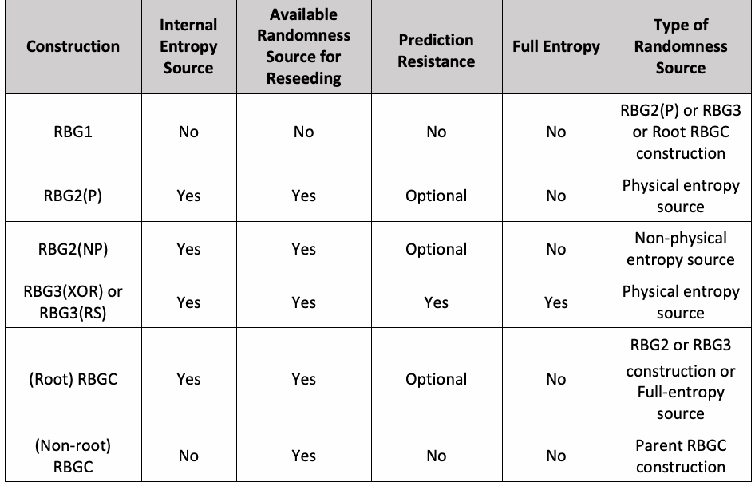
| 構成 | 内部エントロピー源 | 利用可能な | 予測耐性 | 完全エントロピー | 乱数源の種類 |
| 乱数 | |||||
| 源（ | |||||
| 再シード用） | |||||
| RBG1 | なし | なし | なし | なし | RBG2（P）、RBG3、またはルートRBGC構成 |
| RBG2（P） | あり | あり | 任意 | なし | 物理エントロピー源 |
| RBG2（NP） | あり | あり | 任意 | なし | 非物理エントロピー源 |
| RBG3（XOR）またはRBG3（RS） | あり | あり | あり | あり | 物理エントロピー源 |
| （ルート）RBGC | あり | あり | 任意 | なし | RBG2またはRBG3構成、または完全エントロピー源 |
| （ルート以外）RBGC | なし | あり | なし | なし | 親RBGC構成 |
原本の表画像
原本の表画像
原本の表画像
In Table 1:
表1では、次のとおりとする。
未レビュー訳•Column 1 lists the RBG constructions specified in this document.
•第1列は、本書で規定するRBG構成を示す。
未レビュー訳•Column 2 indicates whether an entropy source is present within the construction.
•第2列は、その構成にエントロピー源が含まれるかを示す。
未レビュー訳•Column 3 indicates whether the DRBG has an available randomness source for reseeding.
•第3列は、再シード用の乱数源をDRBGが利用できるかを示す。
未レビュー訳•Column 4 indicates whether prediction resistance can be provided for the output of the RBG (see Sec. 2.4.2 for a discussion of prediction resistance).
•第4列は、RBGの出力に対して予測耐性を提供できるかを示す（予測耐性については第2.4.2節を参照）。
未レビュー訳•Column 5 indicates whether full-entropy output can be provided by the RBG.
•第5列は、RBGが完全エントロピーの出力を提供できるかを示す。
未レビュー訳•Column 6 indicates the types of randomness sources that are allowed for initializing the RBG construction.
•第6列は、RBG構成の初期化に使用できる乱数源の種類を示す。
未レビュー訳An RBG1 construction does not have access to a randomness source after instantiation. It is instantiated once in its lifetime over a physically secure channel from an external RBG2(P), RBG3, or root RBGC construction with appropriate security properties. An RBG1 construction does not support reseeding requests, prediction resistance cannot be provided for the output, and the construction cannot provide output with full entropy. The construction can be used to initialize subordinate DRBGs (sub-DRBGs) (see Sec. 4).
RBG1構成は、インスタンス化後に乱数源へアクセスできない。そのライフサイクル中に一度だけ、適切なセキュリティ特性を持つ外部のRBG2（P）、RBG3、またはルートRBGC構成から、物理的に保護されたチャネルを介してインスタンス化される。RBG1構成は再シード要求をサポートせず、出力に予測耐性を提供できず、完全エントロピーの出力も生成できない。この構成は、下位DRBG（sub-DRBG）の初期化に使用できる（第4節を参照）。
未レビュー訳An RBG2 construction includes one or more entropy sources that are used to instantiate the DRBG and may (optionally) be used for reseeding if a reseed capability is implemented. Prediction resistance may be provided to the RBG output when reseeding is performed. The construction has two variants: an RBG2(P) construction uses a physical entropy source to provide entropy, while an RBG2(NP) construction uses a non-physical entropy source. An RBG2 construction cannot provide full-entropy output (see Sec. 5).
RBG2構成には1つ以上のエントロピー源が含まれ、これらはDRBGのインスタンス化に使用される。再シード機能を実装する場合は、任意で再シードにも使用できる。再シードを実行すると、RBG出力に予測耐性を提供できる場合がある。RBG2には2つの種類がある。RBG2（P）構成は物理エントロピー源を用いてエントロピーを提供し、RBG2（NP）構成は非物理エントロピー源を用いる。RBG2構成は完全エントロピーの出力を提供できない（第5節を参照）。
未レビュー訳An RBG3 construction includes one or more physical entropy sources and is designed to provide an output with a security strength equal to the requested length of its output by producing outputs that have full entropy. Prediction resistance is provided for all outputs (see Sec. 6).
RBG3構成には1つ以上の物理エントロピー源が含まれる。完全エントロピーの出力を生成することで、要求された出力長と等しいセキュリティ強度の出力を提供するよう設計されている。すべての出力に予測耐性が提供される（第6節を参照）。
未レビュー訳There are two types of RBG3 constructions:
RBG3構成には次の2種類がある。
未レビュー訳1.An RBG3(XOR) construction combines the output of one or more validated entropy sources with the output of an instantiated, approved DRBG using an exclusive-or (XOR) operation (see Sec. 6.4).
1.RBG3（XOR）構成は、1つ以上の検証済みエントロピー源の出力と、インスタンス化済みの承認されたDRBGの出力を排他的論理和（XOR）演算で結合する（第6.4節を参照）。
未レビュー訳2.An RBG3(RS) construction uses one or more validated entropy sources to provide seed material for the DRBG by continuously reseeding.
2.RBG3（RS）構成は、継続的な再シードによって、1つ以上の検証済みエントロピー源をDRBGのシード材料の提供に使用する。
未レビュー訳An RBGC construction (see Sec. 7) allows the use of a tree of RBGs that consists of only RBGC constructions on the same computing platform. The initial RBGC construction in the tree is called the root RBGC construction. The root accesses an initial randomness source for instantiation and reseeding. A non-root RBGC construction obtains seed material from its parent RBGC for instantiation but may obtain seed material for reseeding from the parent RBGC or a select set of other RBGC constructions on the same computing platform (see Sec. 7.1.2.2). Prediction resistance may be provided for the root RBGC but not for non-root RBGC constructions (see Sec. 7).
RBGC構成（第7節を参照）では、同一の計算プラットフォーム上にあるRBGC構成のみで構成されるRBGツリーを使用できる。ツリーの最初のRBGC構成をルートRBGC構成と呼ぶ。ルートはインスタンス化と再シードに使用する初期乱数源へアクセスする。ルート以外のRBGC構成は、インスタンス化のシード材料を親RBGCから取得するが、再シード用のシード材料は親RBGC、または同一の計算プラットフォーム上にある選択された他のRBGC構成から取得してもよい（第7.1.2.2節を参照）。ルートRBGCには予測耐性を提供できるが、ルート以外のRBGC構成には提供できない（第7節を参照）。
未レビュー訳This document also provides procedures for acquiring entropy from an entropy source and conditioning the output to provide a bitstring with full entropy (see Sec. 3.2). SP 800-90A provides constructions for instantiating and reseeding DRBGs and requesting the generation of pseudorandom bitstrings [SP_800-90A].
本書では、エントロピー源からエントロピーを取得し、その出力をコンディショニングして完全エントロピーのビット列を提供する手順も示す（第3.2節を参照）。SP 800-90Aでは、DRBGのインスタンス化と再シード、および疑似乱数ビット列の生成要求のための構成を規定している[SP_800-90A]。
未レビュー訳All constructions in SP 800-90C are described in pseudocode as well as text. The pseudocode conventions are not intended to constrain real-world implementations but to provide a consistent notation to describe the constructions.
SP 800-90Cのすべての構成は、文章と疑似コードの両方で記述する。疑似コードの規約は、実世界の実装を制約する意図はなく、構成を一貫した表記法で説明するために用いる。
未レビュー訳For any of the specified processes, equivalent processes may be used. Two processes are equivalent if the same output is produced when the same values are input to each process (either as input parameters or as values made available during the process).
規定された各処理は、同等の処理に置き換えてもよい。同等の処理とは、同一の値（入力パラメーターまたは処理中に利用可能となる値）を与えた場合に、同じ出力を生成する処理をいう。
未レビュー訳By convention and unless otherwise specified, integers are unsigned 32-bit values. When used as bitstrings, they are represented in the big-endian format.
特に指定がない限り、整数は符号なし32ビット値とする。ビット列として使用する場合は、ビッグエンディアン形式で表す。
未レビュー訳2.3. Sources of Randomness for an RBG
2.3. RBGの乱数源
未レビュー訳The RBG constructions specified in this document are based on the use of validated entropy sources — mechanisms that provide entropy for an RBG. Some RBG constructions access these entropy sources directly to obtain entropy. Other constructions fulfill their entropy requirements by accessing another RBG as a randomness source, in which case the RBG used as a randomness source may include an entropy source or have a predecessor RBG that includes an entropy source.
本書で規定するRBG構成は、RBGにエントロピーを提供するメカニズムである検証済みエントロピー源の使用に基づく。一部のRBG構成は、エントロピーを得るためにエントロピー源へ直接アクセスする。他の構成は、別のRBGに乱数源としてアクセスすることでエントロピー要件を満たす。この場合、乱数源として使用するRBG自体にエントロピー源が含まれているか、その先行RBGにエントロピー源が含まれていることがある。
未レビュー訳SP 800-90B provides guidance for the development and validation of entropy sources [SP_800-90B]. Validated entropy sources (i.e., entropy sources that have been successfully validated by the CMVP as complying with SP 800-90B) reliably provide fixed-length outputs and a specified minimum amount of entropy for each output (e.g., each 8-bit output has been validated as providing at least five bits of entropy).3
SP 800-90Bは、エントロピー源の開発および検証に関する指針を示す[SP_800-90B]。検証済みエントロピー源（すなわち、SP 800-90Bへの適合性についてCMVPの検証に合格したエントロピー源）は、常に固定長の出力と、各出力に対して指定された最小量のエントロピーを提供する（たとえば、8ビット出力ごとに少なくとも5ビットのエントロピーを提供することが検証されている）。³
未レビュー訳One or more validated, independent entropy sources may be used to provide entropy for instantiating and reseeding the DRBGs in RBG2, RBG3, and (root) RBGC constructions or used by an RBG3 construction to generate output upon request by a consuming application. Appropriate validated RBGs may be used to provide seed material for RBG1 and (non-root) RBGC constructions.
1つ以上の独立した検証済みエントロピー源を用いて、RBG2、RBG3、または（ルート）RBGC構成のDRBGをインスタンス化・再シードするためのエントロピーを提供できる。また、RBG3構成を使用するアプリケーションから要求を受けた際に出力を生成するためにも使用できる。適切な検証済みRBGを用いて、RBG1および（ルート以外の）RBGC構成にシード材料を提供してもよい。
未レビュー訳Entropy sources may be classified as either physical or non-physical. An entropy source is a physical entropy source if the primary noise source within the entropy source is physical — that is, the entropy source uses a dedicated hardware design to provide entropy (e.g., from ring oscillators, thermal noise, shot noise, jitter, or metastability). Similarly, a validated entropy source is a non-physical entropy source if the primary noise source within the entropy source is non-physical — that is, entropy is provided by system data (e.g., system time or the entropy present in the RAM data) or human interaction (e.g., mouse movements). The entropy source type (i.e., physical or non-physical) is certified during entropy source validation (see [FIPS_140IG], Annex D.J4).
エントロピー源は、物理または非物理に分類できる。エントロピー源内の主要なノイズ源が物理現象である場合、そのエントロピー源は物理エントロピー源である。つまり、リングオシレーター、熱雑音、ショット雑音、ジッター、メタステビリティなどからエントロピーを得る専用ハードウェア設計を使用する。これと同様に、主要なノイズ源が非物理的な場合、検証済みエントロピー源は非物理エントロピー源である。システム時刻やRAM内のデータに含まれるエントロピーなどのシステムデータ、またはマウス操作などの人間の操作によってエントロピーを得る。エントロピー源の検証時に、その種類（物理または非物理）が認証される（[FIPS_140IG]付属書D.J4を参照）。
未レビュー訳This recommendation assumes that the entropy produced by a validated physical entropy source is generally more reliable than the entropy produced by a validated non-physical entropy source since non-physical entropy sources are typically influenced by human actions or network events, the unpredictability of which is difficult to accurately quantify.
本勧告では、検証済みの物理エントロピー源が生成するエントロピーは、検証済みの非物理エントロピー源が生成するものより一般に信頼性が高いと仮定する。非物理エントロピー源は通常、人間の行動またはネットワークイベントの影響を受け、その予測不能性を正確に定量化するのが難しいためである。
未レビュー訳An implementation could be designed to use a combination of physical and non-physical entropy sources. When requests are made to these sources, bitstring outputs may be concatenated until the amount of entropy in the concatenated bitstring meets or exceeds the request. Two methods are provided for counting the entropy provided in the concatenated bitstring:
実装では、物理エントロピー源と非物理エントロピー源を組み合わせてもよい。これらの源に要求を出し、連結したビット列のエントロピー量が要求値以上になるまで出力を連結する。連結したビット列に含まれるエントロピーの数え方として、次の2つの方式を示す。
未レビュー訳Method 1 (physical only): The RBG implementation includes one or more independent, validated physical entropy sources; one or more validated non-physical entropy sources may also be included in the implementation. Only the entropy in a bitstring that is provided from physical entropy sources is counted toward fulfilling the amount of entropy requested in an entropy request. Any entropy in a bitstring that is provided by a non-physical entropy source is not counted, even if bitstrings produced by the non-physical entropy source are included in the concatenated bitstring that is used by the RBG.
方式1（物理源のみを算入）：RBG実装に1つ以上の独立した検証済み物理エントロピー源を含める。実装に1つ以上の検証済み非物理エントロピー源を含めてもよい。エントロピー要求を満たす量として数えるのは、物理エントロピー源が提供したビット列内のエントロピーだけである。RBGが使用する連結ビット列に非物理エントロピー源の出力が含まれていても、そのビット列内のエントロピーは数えない。
未レビュー訳Method 2 (non-physical inclusive): The RBG implementation includes one or more independent, validated non-physical entropy sources; one or more independent, validated physical entropy sources may also be included in the implementation. The entropy from both non-physical entropy sources and (if present) physical entropy sources is counted when fulfilling an entropy request. Example: Let pes be the ith output of a physical entropy source, and let npes be the jth output
方式2（非物理源を含めて算入）：RBG実装に1つ以上の独立した検証済み非物理エントロピー源を含める。実装に1つ以上の独立した検証済み物理エントロピー源を含めてもよい。エントロピー要求を満たす際は、非物理エントロピー源と（存在する場合は）物理エントロピー源の両方からのエントロピーを数える。例として、pes_iを物理エントロピー源のi番目の出力、npes_jを
未レビュー訳i
未レビュー訳j
未レビュー訳of a non-physical entropy source. If an implementation consists of one physical and one non-physical entropy source, and a request has been made for 128 bits of entropy, the concatenated bitstring might be something like:
非物理エントロピー源のj番目の出力とする。実装に物理源と非物理源がそれぞれ1つずつあり、128ビットのエントロピーを要求した場合、連結ビット列は次のようになることがある。
未レビュー訳pes || pes || npes || pes || ... || npes || pes , 1 2 1 3
pes₁ || pes₂ || npes₁ || pes₃ || … || npes || pes
未レビュー訳m n
ₘ ₙ
未レビュー訳which is the concatenated output of the physical and non-physical entropy sources.
これは、物理および非物理エントロピー源の出力を連結したビット列である。
未レビュー訳According to Method 1, only the entropy in pes , pes , ..., pes would be counted toward
方式1では、エントロピーを算入する対象はpes、pes、…、pesであり、
未レビュー訳1 2 n
₁、₂、…、ₙに含まれるエントロピーを128ビットのエントロピー要求を満たす量として数える。
未レビュー訳fulfilling the 128-bit entropy request. Any entropy in npes , ..., npes is not counted, even
npes、…、npesに含まれるエントロピーは
未レビュー訳₁
未レビュー訳ₘ
未レビュー訳though it may be used.
算入しない。ただし、使用してもよい。
未レビュー訳According to Method 2, all of the entropy in pes , pes , ..., pes and in npes , npes , ..., npes
方式2では、pes、pes、…、pesおよびnpes、npes、…、npesに含まれるエントロピーをすべて数える。
未レビュー訳1 2 n
₁、₂、…、ₙ
未レビュー訳1 2
₁、₂、…、ₘ
未レビュー訳ₘ
未レビュー訳is counted.
に含まれるエントロピーはすべて算入する。
未レビュー訳When multiple entropy sources are used, there is no requirement regarding the order in which the entropy sources are accessed or the number of times that each entropy source is accessed to fulfill an entropy request. For example, if two physical entropy sources are used, a request could be fulfilled by only one of the entropy sources because entropy is not available at the time of the request from the other entropy source. However, the Method 1 or Method 2 criteria for counting entropy still applies, provided that the entropy sources are independent.
複数のエントロピー源を使用する場合、エントロピー要求を満たすために各源へアクセスする順序やアクセス回数に関する要件はない。たとえば、2つの物理エントロピー源を使用しているとき、一方の源から要求時にエントロピーを取得できなければ、もう一方の源だけで要求を満たしてもよい。ただし、エントロピー源が互いに独立している場合は、エントロピーの算入に方式1または方式2の基準を引き続き適用する。
未レビュー訳2.4. Deterministic Random Bit Generators (DRBGs)
2.4. 決定論的乱数ビット生成器（DRBG）
未レビュー訳Approved DRBGs are specified in SP 800-90A [SP_800-90A]. A DRBG includes instantiate, generate, and health-testing functions and may also include reseed and uninstantiate functions. The instantiation of a DRBG involves acquiring sufficient randomness to initialize the DRBG to support a targeted security strength and establish the internal state, which includes the secret information for operating the DRBG. The generate function produces output upon request and updates the internal state. Health testing is used to determine whether the DRBG continues to operate correctly. Reseeding introduces fresh randomness into the DRBG’s internal state and is used to recover from a potential (or actual) compromise (see Sec. 2.4.2). An uninstantiate function is used to terminate a DRBG instantiation and destroy the information in its internal state.
承認済みDRBGはSP 800-90A [SP_800-90A]で規定されている。DRBGにはインスタンス化、生成、ヘルス試験の各関数が含まれ、再シードおよびインスタンス解除関数を含む場合もある。DRBGのインスタンス化では、目標とするセキュリティ強度を支えられるように十分な乱数を取得してDRBGを初期化し、DRBGの動作に必要な秘密情報を含む内部状態を確立する。生成関数は要求に応じて出力を生成し、内部状態を更新する。ヘルス試験では、DRBGが正常に動作し続けているかを確認する。再シードは新たな乱数をDRBGの内部状態に導入し、侵害の可能性または実際の侵害からの回復に使用される（第2.4.2節を参照）。インスタンス解除関数はDRBGのインスタンス化を終了し、内部状態の情報を破棄する。
未レビュー訳2.4.1. DRBG Instantiations
2.4.1. DRBGのインスタンス化
未レビュー訳A DRBG implementation consists of the software, hardware, and/or firmware that are used to implement a DRBG design. The same implementation can be used to create multiple (logical) “copies” of the same DRBG (e.g., for different purposes) without replicating the software, hardware, or firmware. Each “copy” is a separate instantiation of the DRBG with its own internal state that is accessed via a state handle (e.g., a pointer) that is unique to that instantiation (see Fig. 1). Each instantiation may be considered a different DRBG, even though it uses the same software, hardware, or firmware.
DRBG実装とは、DRBG設計を実装するために使用するソフトウェア、ハードウェア、および／またはファームウェアである。同じ実装を使って、ソフトウェア、ハードウェア、ファームウェアを複製することなく、同じDRBGの複数の論理的な「コピー」（用途ごとに分ける場合など）を作成できる。各「コピー」は独立したDRBGインスタンス化であり、それぞれ固有の内部状態を持つ。その状態には、インスタンス化ごとに一意な状態ハンドル（ポインターなど）を介してアクセスする（図1を参照）。同じソフトウェア、ハードウェア、またはファームウェアを使用していても、それぞれのインスタンス化を別個のDRBGと見なしてよい。
未レビュー訳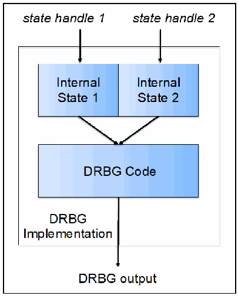
2つの内部状態を持つDRBG実装の図。state handle 1と2がそれぞれ内部状態1と2を参照し、両状態がDRBGコードに入力され、DRBG出力が得られる。図中ラベル：state handle、Internal State、DRBG Code、DRBG Implementation、DRBG output。
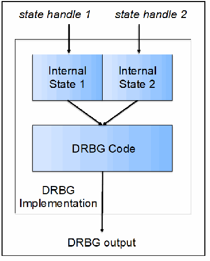
2つの内部状態を持つDRBG実装の図。state handle 1と2がそれぞれ内部状態1と2を参照し、両状態がDRBGコードに入力され、DRBG出力が得られる。図中ラベル：state handle、Internal State、DRBG Code、DRBG Implementation、DRBG output。
Fig. 1. DRBG instantiations
図1. DRBGのインスタンス化
未レビュー訳Each DRBG instantiation is initialized with input from some randomness source that establishes the security strengths that can be supported by the DRBG. During this process, an optional but recommended personalization string may also be used to differentiate between instantiations in addition to the output of the randomness source. The personalization string could, for example, include information particular to the instantiation or contain entropy collected during system activity (e.g., from a non-validated entropy source). An implementation should allow the use of a personalization string. More information on personalization strings is provided in [SP_800-90A].
各DRBGインスタンス化は、DRBGがサポートできるセキュリティ強度を確立するため、何らかの乱数源からの入力で初期化する。この処理では、乱数源の出力に加え、インスタンス化同士を区別するために、任意だが推奨されるパーソナライゼーション文字列を使用してもよい。この文字列には、たとえば、そのインスタンス化に固有の情報や、システム動作中に収集したエントロピー（未検証エントロピー源からのものなど）を含めることができる。実装はパーソナライゼーション文字列の使用を可能にするとよい。詳細は[SP_800-90A]を参照。
未レビュー訳A DRBG may be implemented to accept additional input during operation from the randomness source (e.g., to reseed the DRBG) and/or additional input from inside or outside of the cryptographic module that contains the DRBG. This additional input could, for example, include information particular to a request for generation or reseeding or could contain entropy collected during system activity (e.g., from a validated or non-validated entropy source).5 A capability to handle additional input is recommended for an implementation.
DRBGは、動作中に乱数源から追加入力（DRBGの再シードなど）を受け入れるよう実装してもよい。また、DRBGを含む暗号モジュールの内外から追加入力を受け入れてもよい。この追加入力には、生成または再シードの要求に固有の情報や、システム動作中に収集したエントロピー（検証済みまたは未検証のエントロピー源から得たものなど）を含めることができる。⁵実装には、追加入力を処理する機能を備えることが推奨される。
未レビュー訳2.4.2. Reseeding, Prediction Resistance, and Compromise Recovery
2.4.2. 再シード、予測耐性、および侵害からの回復
未レビュー訳Under some circumstances, the internal state of an RBG (containing the RBG’s secret information) could be leaked to an adversary. This might happen as the result of a side-channel attack or a serious compromise of the computer on which the DRBG runs and may not be detected by the DRBG or any consuming application.
状況によっては、RBGの秘密情報を含む内部状態が攻撃者に漏えいするおそれがある。たとえばサイドチャネル攻撃、またはDRBGが動作するコンピューターへの重大な侵害によって漏えいする可能性があり、DRBGや出力を利用するアプリケーションがそれを検出できない場合がある。
未レビュー訳In order to limit damage due to a compromised state, all DRBGs in SP 800-90A are designed with backtracking resistance — that is, learning the DRBG’s current internal state does not provide knowledge of previous outputs. Since all RBGs in SP 800-90C are based on the use of the DRBGs in SP 800-90A, the RBGs specified in this document also inherit this property.
侵害された状態による被害を抑えるため、SP 800-90AのDRBGはすべてバックトラッキング耐性を備える。つまり、現在のDRBG内部状態を知っても、それ以前の出力は分からない。SP 800-90CのRBGはすべてSP 800-90AのDRBGを使用するため、本書で規定するRBGもこの特性を引き継ぐ。
未レビュー訳DRBGs with a reseed capability and access to an appropriate randomness source may be reseeded at any time to allow for recovery from a potential compromise. An adversary who knows the internal state of the DRBG before the reseed but who does not learn the seed material used for the reseed knows nothing about its internal state after the reseed. Reseeding allows a DRBG to recover from a leak of its internal state.
再シード機能を持ち、適切な乱数源にアクセスできるDRBGは、侵害の可能性から回復するため、いつでも再シードできる。再シード前のDRBG内部状態を知っている攻撃者でも、再シードに用いたシード材料を知らなければ、再シード後の内部状態について何も知ることはできない。再シードにより、DRBGは内部状態の漏えいから回復できる。
未レビュー訳In order to reseed a DRBG at a security strength of s bits, new seed material is provided to the DRBG from either an entropy source or an RBG. If the seed material is provided by an entropy source, it must contain at least s bits of min-entropy. If the seed material is provided by an RBG, the RBG must support a security strength of at least s bits, and the seed material must be at least s bits long. Seed material from an entropy source will always be unpredictable; seed material from an RBG will be unpredictable if that RBG has not been compromised.
セキュリティ強度sビットのDRBGを再シードするには、エントロピー源またはRBGから新しいシード材料をDRBGに与える。エントロピー源から与える場合、シード材料は少なくともsビットの最小エントロピーを含まなければならない。RBGから与える場合、そのRBGは少なくともsビットのセキュリティ強度をサポートし、シード材料の長さは少なくともsビットでなければならない。エントロピー源からのシード材料は常に予測不能である。RBGからのシード材料は、そのRBGが侵害されていなければ予測不能である。
未レビュー訳A DRBG output is said to have prediction resistance when the DRBG is reseeded with at least s bits of min-entropy immediately before the output is generated by the DRBG. The entropy for this reseeding process needs to be provided by either an entropy source or an RBG3 construction for prediction resistance to be provided.
DRBGが出力を生成する直前に、少なくともsビットの最小エントロピーで再シードされている場合、そのDRBG出力は予測耐性を持つという。予測耐性を実現する再シード用エントロピーは、エントロピー源またはRBG3構成から提供する必要がある。
未レビュー訳When a target DRBG is reseeded using another DRBG as a randomness source, the target DRBG is not guaranteed to have prediction resistance. If the source and target DRBGs are both compromised, then reseeding the target DRBG from the other DRBG will allow the adversary to know the target DRBG’s internal state. However, it is often a good idea to reseed a target DRBG from a source DRBG. If the source DRBG was not compromised, then the target DRBG’s state will be unknown to the adversary after the reseed.
あるDRBG（対象DRBG）を別のDRBG（乱数源）を用いて再シードしても、対象DRBGに予測耐性があるとは保証されない。乱数源と対象DRBGの両方が侵害されている場合、別のDRBGから対象DRBGへ再シードすると、攻撃者は対象DRBGの内部状態を知ることになる。しかし、乱数源DRBGから対象DRBGへ再シードすることは、多くの場合、望ましい。乱数源DRBGが侵害されていなければ、再シード後の対象DRBGの状態は攻撃者に知られない。
未レビュー訳The RBG3 construction provides prediction resistance for its outputs so that every output has full entropy. The RBG2 construction can provide prediction resistance on its outputs when reseeding is supported. The RBG1 construction never provides prediction resistance since it cannot be reseeded. Prediction resistance may be provided for the root RBGC construction but not for any subsequent non-root RBGC construction. However, subsequent RBGC constructions can (and generally should) be reseeded periodically.
RBG3構成は出力に予測耐性を提供し、すべての出力が完全エントロピーとなる。RBG2構成は、再シードがサポートされている場合、出力に予測耐性を提供できる。RBG1構成は再シードできないため、予測耐性を提供しない。ルートRBGC構成は予測耐性を提供できるが、それ以降のルート以外のRBGC構成は提供できない。ただし、後続のRBGC構成は定期的に再シードでき、通常はそうすることが望ましい。
未レビュー訳The RBG1, RBG2, and RBGC constructions provide output with a security strength that depends on the security strength of the DRBG instantiation within the RBG and the length of the output. These constructions do not provide output with full entropy and must not be used by applications that require a higher security strength than has been instantiated in the DRBG of the construction. See Appendix A.1 for a discussion of entropy versus security strength.
RBG1、RBG2、およびRBGC構成が提供する出力のセキュリティ強度は、RBG内のDRBGインスタンス化のセキュリティ強度と出力長によって決まる。これらの構成は完全エントロピーの出力を提供せず、構成内のDRBGでインスタンス化されたセキュリティ強度を超える強度を必要とするアプリケーションで使用してはならない。エントロピーとセキュリティ強度の違いについては付録A.1を参照。
未レビュー訳Although reseeding provides fresh randomness that is incorporated into an already instantiated DRBG at a security strength of s bits, the reseed process does not increase the DRBG’s security strength. For example, a reseed of a DRBG that has been instantiated to support a security strength of 128 bits does not increase the DRBG’s security strength to 256 bits when reseeding with 128 bits of fresh entropy.
再シードにより、セキュリティ強度sビットでインスタンス化済みのDRBGに新たな乱数が取り込まれるが、再シードによってDRBGのセキュリティ強度が上がるわけではない。たとえば、128ビットのセキュリティ強度を支えるようインスタンス化したDRBGに、128ビットの新たなエントロピーを用いて再シードしても、セキュリティ強度は256ビットにはならない。
未レビュー訳2.5. RBG Security Boundaries
2.5. RBGのセキュリティ境界
未レビュー訳An RBG exists within a conceptual RBG security boundary that should be defined with respect to one or more threat models that include an assessment of the applicability of an attack and the potential harm caused by the attack. The RBG security boundary must be designed to assist in the mitigation of these threats using physical or logical mechanisms or both.
RBGは概念上のRBGセキュリティ境界内に存在する。この境界は、攻撃の適用可能性と攻撃によって生じる潜在的な損害を評価する1つ以上の脅威モデルに基づいて定義するとよい。セキュリティ境界は、物理的手段、論理的手段、またはその両方を使って脅威の緩和を支援するよう設計しなければならない。
未レビュー訳The primary components of an RBG are a randomness source, a DRBG, and health tests for the RBG. RBG input (e.g., entropy bits and a personalization string during instantiation) shall enter an RBG only as specified in the functions described in Sec. 2.8. The security boundary of a DRBG is discussed in [SP_800-90A], and the security boundary for an entropy source is discussed in [SP_800-90B]. Both the entropy source and the DRBG contain their own health tests within their respective security boundaries.
RBGの主要な構成要素は、乱数源、DRBG、およびRBGのヘルス試験である。RBGへの入力（インスタンス化時のエントロピービットやパーソナライゼーション文字列など）は、第2.8節で説明する関数に従う場合に限りRBGへ入力しなければならない。DRBGのセキュリティ境界は[SP_800-90A]で、エントロピー源のセキュリティ境界は[SP_800-90B]で説明されている。エントロピー源とDRBGは、それぞれのセキュリティ境界内に独自のヘルス試験を備える。
未レビュー訳Figure 2 shows an example RBG implemented within a FIPS-140-validated cryptographic module. In this figure, the RBG security boundary is completely contained within the cryptographic module boundary. The data input may be a personalization string or additional input (see Sec. 2.4.1). The data output is status information and possibly random bits or a state handle. Within the RBG security boundary of the figure are an entropy source and a DRBG, each with its own conceptual security boundary. An entropy-source security boundary includes a noise source, health tests, and (optionally) a conditioning component. A DRBG security boundary contains the chosen DRBG, memory for the internal state, and health tests. An RBG security boundary contains health tests and an (optional) external conditioning function. The RBG2 and RBG3 constructions in Sec. 5 and 6, respectively, use this model.
図2は、FIPS 140検証済み暗号モジュール内に実装されたRBGの例を示す。この図では、RBGのセキュリティ境界全体が暗号モジュールの境界内にある。データ入力は、パーソナライゼーション文字列または追加入力である（第2.4.1節を参照）。データ出力は状態情報と、場合によっては乱数ビットまたは状態ハンドルである。図のRBGセキュリティ境界内には、それぞれ独自の概念的なセキュリティ境界を持つエントロピー源とDRBGがある。エントロピー源のセキュリティ境界には、ノイズ源、ヘルス試験、および任意のコンディショニング要素が含まれる。DRBGのセキュリティ境界には、選択したDRBG、内部状態用メモリー、およびヘルス試験が含まれる。RBGのセキュリティ境界には、ヘルス試験と任意の外部コンディショニング関数が含まれる。第5節および第6節のRBG2構成とRBG3構成は、それぞれこのモデルを使用する。
未レビュー訳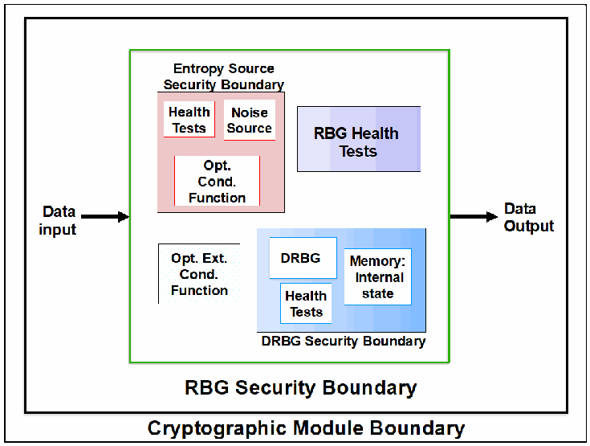
データ入力からデータ出力までのRBG構成と境界を示す図。エントロピー源（ヘルステスト、ノイズ源、任意の条件付け関数）とRBGヘルステストはエントロピー源セキュリティ境界内にあり、DRBG、DRBGヘルステスト、メモリ（内部状態）、任意の外部条件付け関数はDRBGセキュリティ境界内にある。これらはRBGセキュリティ境界および暗号モジュール境界に含まれる。
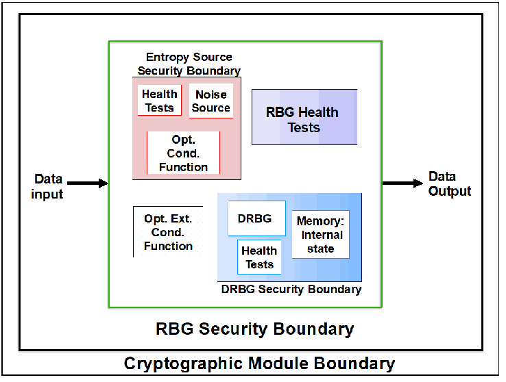
データ入力からデータ出力までのRBG構成と境界を示す図。エントロピー源（ヘルステスト、ノイズ源、任意の条件付け関数）とRBGヘルステストはエントロピー源セキュリティ境界内にあり、DRBG、DRBGヘルステスト、メモリ（内部状態）、任意の外部条件付け関数はDRBGセキュリティ境界内にある。これらはRBGセキュリティ境界および暗号モジュール境界に含まれる。
Fig. 2. Example of an RBG security boundary within a cryptographic module
図2. 暗号モジュール内のRBGセキュリティ境界の例
未レビュー訳In the case of the RBG1 construction in Sec. 4, the security boundary containing the DRBG does not include a randomness source (shown as an entropy source in Fig. 2). For an RBGC construction, the security boundary is the computing platform on which the tree of DRBGs is used.
第4節のRBG1構成では、DRBGを含むセキュリティ境界に乱数源（図2ではエントロピー源として表示）は含まれない。RBGC構成では、DRBGツリーを使用する計算プラットフォームがセキュリティ境界となる。
未レビュー訳A cryptographic primitive (e.g., an approved hash function or block cipher) used by an RBG may be used by other applications within the same cryptographic module. However, these other applications shall not modify or reveal the RBG’s output, intermediate values, or internal state.
RBGが使用する暗号プリミティブ（承認済みハッシュ関数やブロック暗号など）は、同じ暗号モジュール内の他のアプリケーションも使用できる。ただし、そうした他のアプリケーションは、RBGの出力、中間値、または内部状態を変更も開示もしてはならない。
未レビュー訳2.6. Assumptions and Assertions
2.6. 前提および表明
未レビュー訳The RBG constructions in SP 800-90C are based on the use of validated entropy sources and the following assumptions and assertions for properly functioning entropy sources:
SP 800-90CのRBG構成は、適切に機能するエントロピー源について、検証済みエントロピー源の使用と、以下の前提および表明に基づく。
未レビュー訳1.An entropy source is independent of another entropy source if their security boundaries do not overlap (e.g., they reside in separate cryptographic modules, or one is a physical entropy source, and the other is a non-physical entropy source).
1.あるエントロピー源のセキュリティ境界が別のエントロピー源の境界と重なっていない場合（別々の暗号モジュールに存在する場合、または一方が物理エントロピー源でもう一方が非物理エントロピー源である場合など）、両者は独立している。
未レビュー訳2.Entropy sources that have been validated for conformance to SP 800-90B are used to provide seed material for seeding and reseeding a DRBG or providing entropy for an RBG3 construction. The output of non-validated entropy sources is only used in a personalization string or as additional input.
2.SP 800-90Bへの適合性が検証されたエントロピー源は、DRBGのシードおよび再シード用のシード材料、またはRBG3構成に提供するエントロピーの生成に使用する。未検証エントロピー源の出力は、パーソナライゼーション文字列または追加入力としてのみ使用する。
未レビュー訳The following assumptions and assertions pertain to the use of validated entropy sources for providing entropy bits:
検証済みエントロピー源からエントロピービットを得る際は、次の前提および表明を適用する。
未レビュー訳原本の表画像
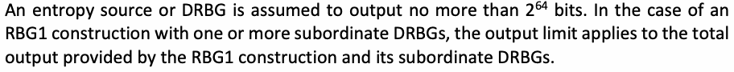
4.Each entropy-source output is assumed to have a fixed length ES_len (in bits).
4.各エントロピー源の出力長はES_lenビットで固定されていると仮定する。
未レビュー訳5.Each entropy-source output is assumed to contain at least a known amount of entropy, denoted as ES_entropy, that was assessed during entropy-source implementation validation. See [SP_800-90B] for entropy estimation.
5.各エントロピー源の出力には、エントロピー源の実装検証時に評価された、既知量以上のエントロピー（ES_entropyで表す）が含まれると仮定する。エントロピーの推定については[SP_800-90B]を参照。
未レビュー訳6.Each entropy source has been characterized as either a physical entropy source or a non-physical entropy source upon successful validation.
6.検証に合格すると、各エントロピー源は物理または非物理のいずれかに分類される。
未レビュー訳7.The outputs from a single entropy source can be concatenated. The entropy of the resultant bitstring is the sum of the entropy from each entropy-source output. For example, if m outputs are concatenated, then the length of the bitstring is m × ES_len bits, and the entropy for that bitstring is assumed to be m × ES_entropy bits. This is a consequence of the model of entropy used in [SP_800-90B].
7.単一のエントロピー源からの複数の出力を連結できる。連結後のビット列のエントロピー量は、各出力のエントロピー量の合計となる。たとえばm個の出力を連結すると、ビット列の長さはm × ES_lenビットとなり、そのビット列のエントロピー量はm × ES_entropyビットと仮定する。これは[SP_800-90B]で採用されるエントロピーモデルによる。
未レビュー訳8.The output of multiple independent entropy sources can be concatenated in an RBG. The entropy in the resultant bitstring is the sum of the entropy in each independent entropy-source output that is contributing to the entropy in the bitstring (see Methods 1 and 2 in Sec. 2.3). For example, suppose that the outputs from independent physical entropy sources A and B and non-physical entropy source C are concatenated. The length of the concatenated bitstring is the sum of the lengths of the component bitstrings (e.g., ES_len + ES_len + A B ES_len ). C
8.RBGでは、複数の独立したエントロピー源からの出力を連結できる。連結後のビット列のエントロピー量は、そのビット列のエントロピーに寄与する各独立エントロピー源の出力に含まれるエントロピー量の合計である（第2.3節の方式1および方式2を参照）。たとえば、独立した物理エントロピー源AおよびBと、非物理エントロピー源Cからの出力を連結するとする。連結ビット列の長さは、構成する各ビット列の長さの合計（すなわちES_len_A + ES_len_B + ES_len_C）となる。
未レビュー訳•Using Method 1 (physical only) in Sec. 2.3, the amount of entropy in the concatenated bitstring is ES_entropy + ES_entropy . A B
•第2.3節の方式1（物理源のみ）を用いる場合、連結ビット列内のエントロピー量はES_entropy_A + ES_entropy_Bとなる。
未レビュー訳•Using Method 2 (non-physical inclusive) in Sec. 2.3, the amount of entropy in the concatenated bitstring is the sum of all entropy in the bitstrings (i.e., ES_entropy A + ES_entropy + ES_entropy ) C . B
•第2.3節の方式2（非物理源を含めて算入）を用いる場合、ビット列内のすべてのエントロピーの合計、すなわちES_entropy_A + ES_entropy_B + ES_entropy_Cを算入する。
未レビュー訳9.Under certain conditions, the output of one or more entropy sources can be externally conditioned to provide full-entropy output. See Sec. 3.2.2.2, 6.4, and 7 for the use of this assumption and [NISTIR_8427] for the rationale.
9.一定の条件下では、1つ以上のエントロピー源の出力を外部でコンディショニングし、完全エントロピーの出力を得られる。この前提は第3.2.2.2節、第6.4節、および第7節で使用する。[NISTIR_8427]に根拠を示す。
未レビュー訳10.When entropy is requested, the entropy source is assumed to respond as follows:
10.エントロピーを要求された場合、エントロピー源は次のように応答すると仮定する。
未レビュー訳•If the entropy source provides the requested amount of entropy, a status indication of success is returned along with a bitstring that contains the requested amount of entropy.
•エントロピー源が要求量を提供できる場合、要求量のエントロピーを含むビット列とともに成功を示すステータスを返す。
未レビュー訳•If the entropy source detects a failure of the primary noise source (e.g., an error from which it cannot recover), the entropy source returns a status indicating a failure. Other output is not provided.
•エントロピー源が主要なノイズ源の障害（回復できないエラーなど）を検出した場合、障害を示すステータスを返す。その他の出力は提供しない。
未レビュー訳•If the entropy source indicates an error other than failure (e.g., entropy cannot be obtained in a timely manner, or there is an intermittent problem), the entropy source returns a status indicating that the entropy source cannot provide output at this time. Other output is not provided.
•エントロピー源が障害以外のエラー（エントロピーを適時に取得できない、一時的な問題があるなど）を示した場合、その時点では出力を提供できないことを示すステータスを返す。その他の出力は提供しない。
未レビュー訳The following assumptions and assertions pertain to the use of DRBGs and the RBG constructions:
DRBGおよびRBG構成の使用について、次の前提および表明を適用する。
未レビュー訳11.Full entropy bits can be extracted from the output of a DRBG specified in [SP_800-90A] (e.g., a hash function or block cipher) when the amount of fresh entropy inserted into the algorithm exceeds the number of bits that are extracted by at least 64 bits. In particular, for a DRBG that has been instantiated at a security strength of s bits, s full-entropy bits can be extracted from the output of that DRBG when at least s + 64 bits of fresh entropy are inserted into the DRBG immediately before the output is generated (see [NISTIR_8427] for details).
11.[SP_800-90A]で規定されたDRBG（ハッシュ関数やブロック暗号など）の出力から完全エントロピービットを抽出できるのは、アルゴリズムに新たに投入したエントロピー量が、抽出するビット数を少なくとも64ビット上回る場合である。特に、セキュリティ強度sビットでインスタンス化されたDRBGでは、出力生成の直前に少なくともs + 64ビットの新たなエントロピーをDRBGに投入すれば、出力からsビットの完全エントロピーを抽出できる（詳細は[NISTIR_8427]を参照）。
未レビュー訳Instantiating a DRBG with security strength s from an entropy source (e.g., the entropy source for the DRBG in an RBG2 or RBG3 construction or the initial randomness source for the DRBG in a root RBGC construction) requires at least 3s/2 bits of min-entropy.6 Instantiating a DRBG from another RBG (e.g., the DRBG in an RBG1, RBG1 sub-DRBG, or any non-root RBGC construction) requires at least 3s/2 bits of seed material and requires that the DRBG providing the seed material supports at least an s-bit security strength.
セキュリティ強度sのDRBGをエントロピー源（RBG2またはRBG3構成のDRBG用エントロピー源、またはルートRBGC構成のDRBGに対する初期乱数源など）からインスタンス化するには、少なくとも3s/2ビットの最小エントロピーが必要である。別のRBG（RBG1のDRBG、RBG1の下位DRBG、またはルート以外のRBGC構成など）からDRBGをインスタンス化するには、少なくとも3s/2ビットのシード材料が必要であり、シード材料を提供するDRBGは少なくともsビットのセキュリティ強度をサポートしなければならない。⁶
未レビュー訳12.One or more of the constructions provided herein are used in the design of an RBG.
12.本書に示す構成の1つ以上を、RBGの設計に使用する。
未レビュー訳13.All components of an RBG2 and RBG3 construction (as specified in Sec. 5 and 6) reside within the same security boundary.
13.RBG2およびRBG3構成（第5節および第6節に規定）のすべての構成要素は、同一のセキュリティ境界内に存在する。
未レビュー訳14.All RBGC constructions in a DRBG tree reside on the same computing platform.
14.DRBGツリー内のすべてのRBGC構成は、同一の計算プラットフォーム上に存在する。
未レビュー訳15.The DRBGs specified in [SP_800-90A] are assumed to meet their explicit security claims (e.g., backtracking resistance or claimed security strength).
15.[SP_800-90A]で規定されるDRBGは、明示されたセキュリティ上の主張（バックトラッキング耐性や主張されたセキュリティ強度など）を満たすと仮定する。
未レビュー訳16.A sub-DRBG is considered to be part of the RBG1 construction that initializes it.
16.下位DRBGは、それを初期化するRBG1構成の一部と見なす。
未レビュー訳17.The RBG1 construction and its sub-DRBGs reside within the same security boundary.
17.RBG1構成およびその下位DRBGは、同一のセキュリティ境界内に存在する。
未レビュー訳2.7. General Implementation and Use Requirements and Recommendations
2.7. 実装および使用に関する一般要件と推奨事項
未レビュー訳When implementing the RBG constructions specified in this recommendation, an implementation:
本勧告で規定するRBG構成を実装する場合、実装は次の事項を満たす。
未レビュー訳1.Shall destroy intermediate values before exiting the function or routine in which they are used,
1.使用した関数またはルーチンを終了する前に、中間値を破棄する。
未レビュー訳2.Shall employ an “atomic” generate operation whereby a generate request is completed before using any of the requested bits, and
2.「アトミックな」生成操作を採用する。この操作では、生成要求を完了してから、要求されたビットを使用する。さらに、
未レビュー訳3.Should be implemented with the capability to support a security strength of 256 bits or to provide full-entropy output.
3.セキュリティ強度256ビットをサポートする機能、または完全エントロピー出力を提供する機能を備えるよう実装するとよい。
未レビュー訳When using RBGs, the user or application requesting the generation of random or pseudorandom bits should request only the number of bits required for a specific immediate purpose rather than generating bits to be stored for future use. Since, in most cases, the bits are intended to be secret, the stored bits (if not properly protected) are potentially vulnerable to exposure, thus defeating the requirement for secrecy.
RBGを使用する場合、乱数または疑似乱数ビットの生成を要求する利用者またはアプリケーションは、将来の使用に備えてビットを生成・保存するのではなく、その時点の特定の目的に必要なビット数だけを要求するとよい。多くの場合、ビットは秘密情報として使われるため、保存したビットを適切に保護しなければ漏えいのおそれがあり、秘密保持の要件が損なわれる。
未レビュー訳2.8. General Function Calls
2.8. 一般的な関数呼び出し
未レビュー訳Functions used within this document for accessing the DRBGs, the entropy sources, and the RBG3 constructions are identified in Fig. 3.
本書でDRBG、エントロピー源、およびRBG3構成へアクセスするために使用する関数を図3に示す。
未レビュー訳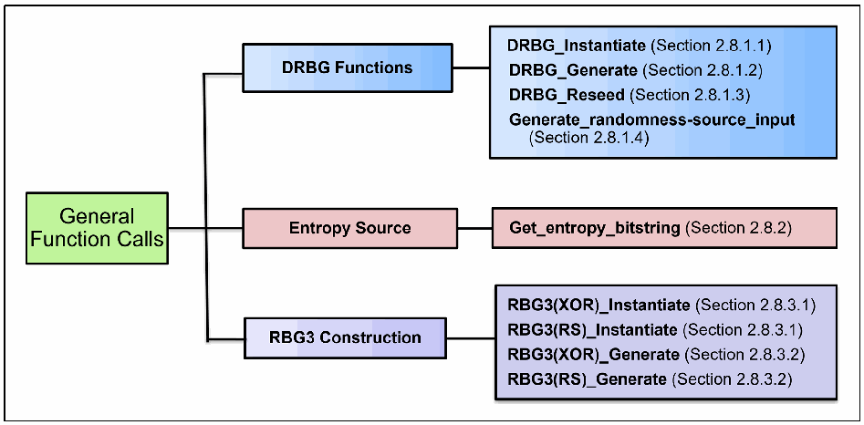
関数呼出しの分類図。General Function Callsから、DRBG Functions（DRBG_Instantiate、DRBG_Generate、DRBG_Reseed、Generate_randomness-source_input）、Entropy Source（Get_entropy_bitstring）、RBG3 Construction（RBG3(XOR)/RBG3(RS)のInstantiateおよびGenerate）へ分岐する。各関数には対応する節番号が示されている。
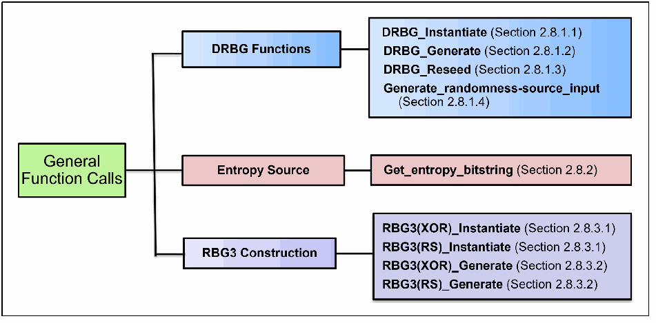
関数呼出しの分類図。General Function Callsから、DRBG Functions（DRBG_Instantiate、DRBG_Generate、DRBG_Reseed、Generate_randomness-source_input）、Entropy Source（Get_entropy_bitstring）、RBG3 Construction（RBG3(XOR)/RBG3(RS)のInstantiateおよびGenerate）へ分岐する。各関数には対応する節番号が示されている。
Fig. 3. General function calls
図3. 一般的な関数呼び出し
未レビュー訳Each function returns a status code that must be checked (e.g., a status of success or failure by the function).
各関数はステータスコードを返すため、必ず確認しなければならない（関数の成功または失敗を示すステータスなど）。
未レビュー訳•If the status code indicates a success, then additional information may also be returned, such as a state handle from an instantiate function or the bits that were requested to be generated during a generate function.
•ステータスコードが成功を示す場合、インスタンス化関数の状態ハンドルや、生成関数で生成を要求したビットなど、追加情報も返されることがある。
未レビュー訳•If the status code indicates the failure of an RBG component, then any other output returned shall be considered invalid.
•ステータスコードがRBG構成要素の障害を示す場合、返されたその他の出力はすべて無効として扱わなければならない。
未レビュー訳A distinction between a function within a DRBG or RBG and the request for the execution of that function by a requesting entity (e.g., an application) is needed for clarity. The requesting entity may not include an implementation of the function itself but needs to be able to request the DRBG or RBG to execute that function to obtain random values for its use. As used in this document, the request needs to provide some or all of the input needed for the associated function. Relevant information output by that function needs to be returned in response to the request.
明確にするため、DRBGまたはRBG内の関数と、その関数の実行を要求する主体（アプリケーションなど）からの要求とを区別する必要がある。要求主体は関数自体の実装を含まない場合もあるが、利用する乱数値を得るため、DRBGまたはRBGにその関数の実行を要求できなければならない。本書でいう要求には、関連関数が必要とする入力の一部またはすべてを指定する必要がある。関数から得られる関連情報は、要求への応答として返す必要がある。
未レビュー訳2.8.1. DRBG Functions
2.8.1. DRBG関数
未レビュー訳[SP_800-90A] specifies several functions within a DRBG that indicate the input and output parameters and other implementation details. In some cases, some of the input parameters identified in SP 800-90A may be omitted, and some output information may not be returned (e.g., because the requested information was not generated).
[SP_800-90A]は、入力・出力パラメーターやその他の実装詳細を示す、DRBG内の複数の関数を規定する場合がある。SP 800-90Aで特定された入力パラメーターの一部を省略したり、出力情報を返さなかったりする場合もある（要求された情報が生成されなかった場合など）。
未レビュー訳At least two functions are required in a DRBG:
DRBGには少なくとも2つの関数が必要である。
未レビュー訳1.An instantiate function that seeds the DRBG using the output of a randomness source and other optional input (see Sec. 2.8.1.1) and
1.乱数源の出力とその他の任意入力を用いてDRBGにシードを与えるインスタンス化関数（第2.8.1.1節を参照）。
未レビュー訳2.A generate function that produces output for use by a consuming application (see Sec. 2.8.1.2).
2.利用側アプリケーションで使用する出力を生成する生成関数（第2.8.1.2節を参照）。
未レビュー訳A DRBG may also support a reseed function (see Sec. 2.8.1.3).
DRBGは、再シード関数をサポートする場合もある（第2.8.1.3節を参照）。
未レビュー訳A Get_randomness_source_input call is used in [SP_800-90A] to request output from a randomness source during instantiation and reseeding (see Sec. 2.8.1.4). The behavior of this function is specified in this document based on the type of randomness source(s) used and the RBG construction.
[SP_800-90A]では、インスタンス化および再シード中に乱数源からの出力を要求するため、Get_randomness_source_input呼び出しを使用する（第2.8.1.4節を参照）。この関数の動作は、使用する乱数源の種類とRBG構成に基づき、本書で規定する。
未レビュー訳SP 800-90C does not explicitly discuss the use of the DRBG_Uninstantiate function specified in [SP_800-90A] but may be required by an implementation.
SP 800-90Cは、[SP_800-90A]で規定されるDRBG_Uninstantiate関数の使用を明示的に説明していないが、実装で必要になる場合がある。
未レビュー訳2.8.1.1. DRBG Instantiation
2.8.1.1. DRBGのインスタンス化
未レビュー訳A DRBG is instantiated prior to the generation of pseudorandom bits at the highest security strength to be supported by the DRBG instantiation using the following function:
DRBGインスタンス化でサポートする最大のセキュリティ強度で疑似乱数ビットを生成する前に、次の関数でDRBGをインスタンス化する。
未レビュー訳(status, state_handle) = DRBG_Instantiate (requested_instantiation_security_strength, personalization_string).
(status, state_handle) = DRBG_Instantiate (requested_instantiation_security_strength, personalization_string).
未レビュー訳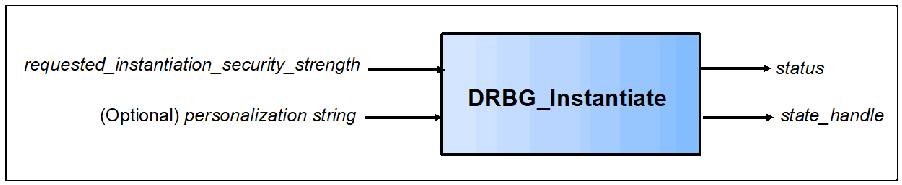
DRBG_Instantiate関数の入出力図。入力はrequested_instantiation_security_strengthと任意のpersonalization_string、出力はstatusとstate_handle。
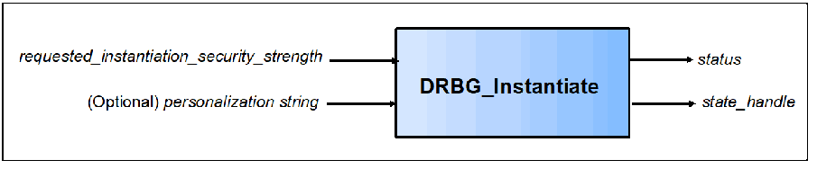
DRBG_Instantiate関数の入出力図。入力はrequested_instantiation_security_strengthと任意のpersonalization_string、出力はstatusとstate_handle。
Fig. 4. DRBG_Instantiate function
図4. DRBG_Instantiate関数
未レビュー訳The DRBG_Instantiate function (shown in Fig. 4) is used to instantiate a DRBG at the requested_instantiation_security_strength using the output of a randomness source7 and an optional but strongly recommended personalization_string to create a seed (see Sec. 2.4.1). Details about the DRBG_Instantiate function are provided in [SP_800-90A].
DRBG_Instantiate関数（図4を参照）は、乱数源⁷の出力と任意だが強く推奨されるpersonalization_stringを用いてシードを作成し、要求されたrequested_instantiation_security_strengthでDRBGをインスタンス化する（第2.4.1節を参照）。DRBG_Instantiate関数の詳細は[SP_800-90A]に示されている。
未レビュー訳If the status code returned for the DRBG_Instantiate function indicates a success (i.e., the DRBG has been instantiated at the requested security strength), a state handle may8 be returned to indicate the particular DRBG instance (e.g., pointing to the internal state to be used by this instance). When provided by the DRBG_Instantiate function, the state handle is used in subsequent calls to the DRBG (e.g., during a DRBG_Generate call) to reference the internal state information for the instantiation. The information in the internal state includes the security strength of the instantiation and other information that changes during DRBG execution (see [SP_800-90A] for each DRBG design).
DRBG_Instantiate関数が成功ステータスを返した場合（要求されたセキュリティ強度でDRBGがインスタンス化された場合）、特定のDRBGインスタンスを示すstate_handleが返されることがある。たとえば、そのインスタンスが使用する内部状態を指すポインターである。DRBG_Instantiate関数がstate_handleを返す場合、その後のDRBG呼び出し（DRBG_Generate呼び出しなど）でこれを使用し、インスタンス化に関する内部状態情報を参照する。内部状態には、インスタンス化時のセキュリティ強度と、DRBGの実行中に変化するその他の情報が含まれる（各DRBG設計については[SP_800-90A]を参照）。
未レビュー訳When the DRBG has been instantiated at the requested security strength, the DRBG will operate at that security strength even if the security strength requested in subsequent DRBG_Generate calls (see Sec. 2.8.1.2) is less than the instantiated security strength. For example, if a DRBG has been instantiated at a security strength of 256 bits, all output will be generated at that strength even when a request is received to generate bits at a strength of 128 bits.
DRBGは要求されたセキュリティ強度でインスタンス化されると、その後のDRBG_Generate呼び出し（第2.8.1.2節を参照）でより低いセキュリティ強度が要求されても、そのインスタンス化時の強度で動作する。たとえば、256ビットのセキュリティ強度でインスタンス化されたDRBGは、128ビット強度でビット生成を要求された場合でも、すべての出力を256ビットの強度で生成する。
未レビュー訳If the status code indicates an error and an implementation is designed to return a state handle, an invalid state handle (e.g., Null) is returned.
ステータスコードがエラーを示し、実装がstate_handleを返す設計の場合、無効なstate_handle（Nullなど）を返す。
未レビュー訳The DRBG_Instantiate function is requested by an application using a DRBG_Instantiate_request:
アプリケーションは、次のDRBG_Instantiate_requestを使ってDRBG_Instantiate関数を要求する。
未レビュー訳(status, state_handle) = DRBG_Instantiate_request(requested_instantiation_security_strength, personalization_string).
(status, state_handle) = DRBG_Instantiate_request(requested_instantiation_security_strength, personalization_string).
未レビュー訳As shown in Fig. 5, a DRBG_Instantiate_request received by a DRBG results in the execution of the DRBG’s instantiate function, providing the input parameters for that function. The DRBG_Instantiate function within the DRBG then obtains seed_material from the randomness sources, instantiates a DRBG, and returns the status of the process and (if there is no error) a state_handle for the internal state to the application.
図5に示すとおり、DRBGがDRBG_Instantiate_requestを受け取ると、DRBGのインスタンス化関数が実行され、その関数の入力パラメーターが渡される。DRBG内のDRBG_Instantiate関数は、乱数源からseed_materialを取得してDRBGをインスタンス化し、処理のステータスと、エラーがない場合は内部状態を示すstate_handleをアプリケーションに返す。
未レビュー訳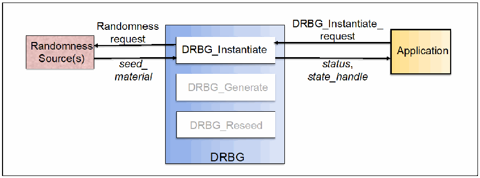
DRBGのインスタンス化要求の流れ。アプリケーションがDRBG_Instantiate_requestを送り、乱数源に乱数を要求する。乱数源からseed_materialを受け取り、statusとstate_handleをアプリケーションへ返す。
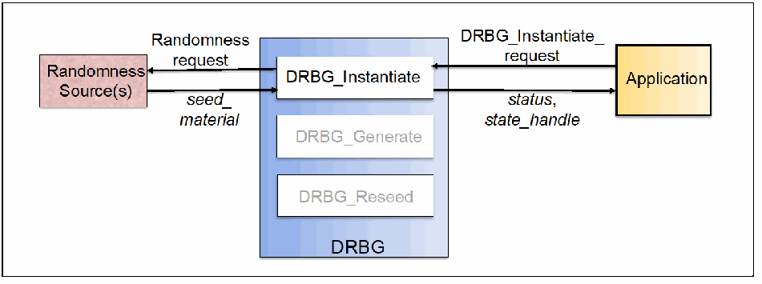
DRBGのインスタンス化要求の流れ。アプリケーションがDRBG_Instantiate_requestを送り、乱数源に乱数を要求する。乱数源からseed_materialを受け取り、statusとstate_handleをアプリケーションへ返す。
Fig. 5. DRBG_Instantiate request
図5. DRBG_Instantiate要求
未レビュー訳2.8.1.2. DRBG Generation Request
2.8.1.2. DRBGの生成要求
未レビュー訳Pseudorandom bits are generated after DRBG instantiation using the following function:
DRBGのインスタンス化後、次の関数を使って疑似乱数ビットを生成する。
未レビュー訳(status, returned_bits) = DRBG_Generate (state_handle, requested_number_of_bits, requested_security_strength, additional_input).
(status, returned_bits) = DRBG_Generate (state_handle, requested_number_of_bits, requested_security_strength, additional_input).
未レビュー訳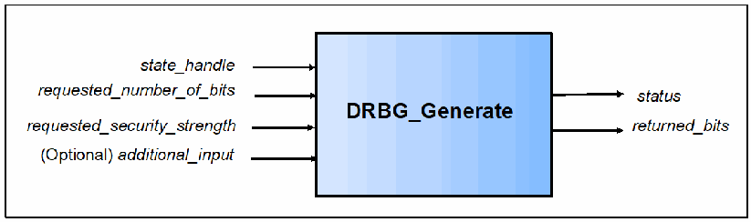
DRBG_Generate関数の入出力図。入力はstate_handle、requested_number_of_bits、requested_security_strength、および任意のadditional_input。出力はstatusとreturned_bits。
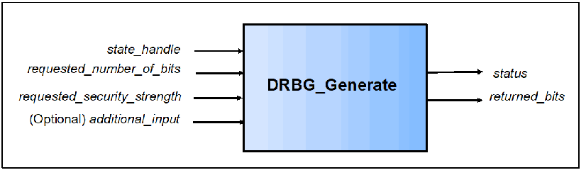
DRBG_Generate関数の入出力図。入力はstate_handle、requested_number_of_bits、requested_security_strength、および任意のadditional_input。出力はstatusとreturned_bits。
Fig. 6. DRBG_Generate function
図6. DRBG_Generate関数
未レビュー訳The DRBG_Generate function (shown in Fig. 6) is used to generate a specified number of bits. If a suitable state_handle is provided during instantiation, it is included as input to indicate the DRBG instance to be used. The number of bits to be returned and the security strength that the DRBG needs to support for generating the bitstring are provided with (optional) additional input. As stated in Sec. 2.4.1, the ability to accept additional input is recommended.
DRBG_Generate関数（図6を参照）は、指定された数のビットを生成する。インスタンス化時に適切なstate_handleが与えられた場合は、使用するDRBGインスタンスを示すため、これを入力に含める。返すビット数と、ビット列生成でDRBGがサポートする必要のあるセキュリティ強度は、任意の追加入力とともに指定する。第2.4.1節で述べたとおり、追加入力を受け入れる機能が推奨される。
未レビュー訳The DRBG_Generate function returns status information — either an indication of success or an error. If the returned status code indicates a success, the generated bits are returned.
DRBG_Generate関数は、成功またはエラーを示すステータス情報を返す。返されたステータスコードが成功を示す場合、生成したビットを返す。
未レビュー訳•If requested_number_of_bits is equal to or greater than the instantiated security strength, the security strength that the returned_bits can support (if used as a key) is:
•requested_number_of_bitsがインスタンス化時のセキュリティ強度以上である場合、返されたreturned_bitsを鍵として使用するとき、その鍵がサポートできるセキュリティ強度は次のとおりである。
未レビュー訳ss_key = the instantiated security strength, where ss_key is the security strength of the key.
ss_key = インスタンス化時のセキュリティ強度。ここでss_keyは鍵のセキュリティ強度を表す。
未レビュー訳•If the requested_number of bits is less than the instantiated security strength, and the returned_bits are to be used as a key, the key is capable of supporting a security strength of:
•requested_number_of_bitsがインスタンス化時のセキュリティ強度より小さく、returned_bitsを鍵として使用する場合、その鍵がサポートできるセキュリティ強度は次のとおりである。
未レビュー訳ss_key = requested_number_of_bits.
ss_key = requested_number_of_bits。
未レビュー訳•If the output is used to form multiple keys, the security strength that can be supported by each key is:
•出力から複数の鍵を生成する場合、各鍵がサポートできるセキュリティ強度は次のとおりである。
未レビュー訳ss_of_each_key = min(key_length, instantiated_security_strength).
ss_of_each_key = min(key_length, instantiated_security_strength)。
未レビュー訳If the status code indicates an error, the returned_bits consists of a Null bitstring. An example of a condition in which an error indication may be returned is a request for a security strength that exceeds the instantiated security strength for the DRBG.
ステータスコードがエラーを示す場合、returned_bitsはNullビット列となる。DRBGのインスタンス化時のセキュリティ強度を超える強度が要求された場合などに、エラーが返されることがある。
未レビュー訳Details about the DRBG_Generate function are provided in [SP_800-90A].
DRBG_Generate関数の詳細は[SP_800-90A]に示されている。
未レビュー訳The DRBG_Generate function is requested by an application using a DRBG_Generate_request:
アプリケーションは、次のDRBG_Generate_requestを用いてDRBG_Generate関数を要求する。
未レビュー訳(status, returned_bits) = DRBG_Generate_request(state_handle, requested_number_of_bits, requested_security_strength, additional_input).
(status, returned_bits) = DRBG_Generate_request(state_handle, requested_number_of_bits, requested_security_strength, additional_input).
未レビュー訳As shown in Fig. 7, a DRBG_Generate_request received by a DRBG results in the execution of the DRBG’s DRBG_Generate function, providing the input parameters for that function. The DRBG_Generate function generates the requested number of bits and returns the status of the process and (if there is no error) the newly generated bits.
図7に示すとおり、DRBGがDRBG_Generate_requestを受け取ると、関数の入力パラメーターが渡されてDRBG_Generate関数が実行される。DRBG_Generate関数は要求された数のビットを生成し、処理のステータスと、エラーがない場合は新たに生成したビットを返す。
未レビュー訳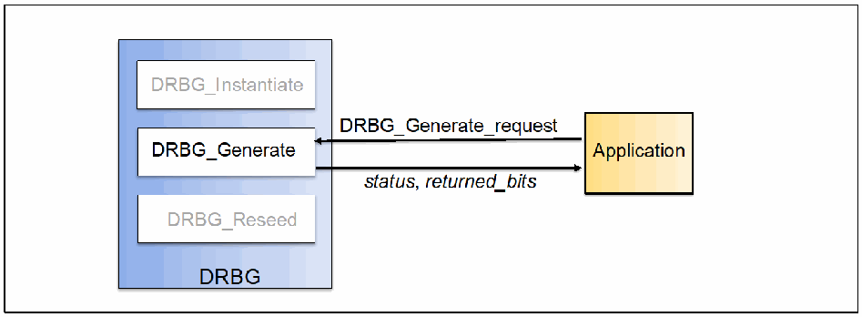
アプリケーションからDRBGへの生成要求の流れ。DRBG_Generate_requestをDRBG_Generate関数へ送り、statusとreturned_bitsを返す。
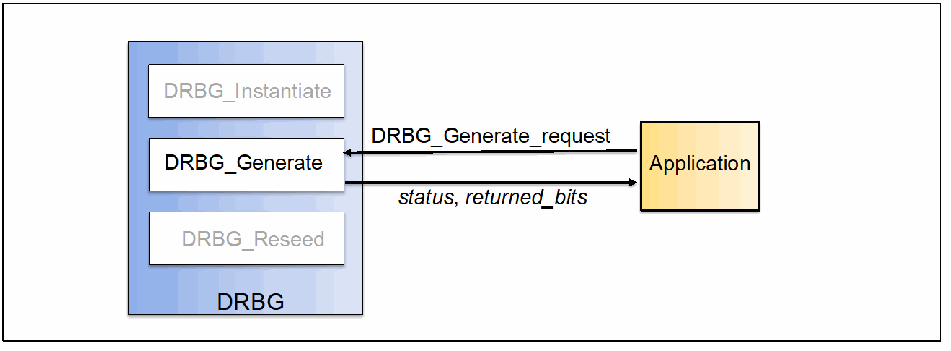
アプリケーションからDRBGへの生成要求の流れ。DRBG_Generate_requestをDRBG_Generate関数へ送り、statusとreturned_bitsを返す。
Fig. 7. DRBG_Generate_request
図7. DRBG_Generate_request
未レビュー訳2.8.1.3. DRBG Reseed
2.8.1.3. DRBGの再シード
未レビュー訳The reseeding of a DRBG instantiation is intended to insert additional randomness into that DRBG instantiation (e.g., to recover from a possible compromise or to provide prediction resistance). This is accomplished using the following function:9
DRBGインスタンス化の再シードは、追加の乱数を挿入することを目的とする（侵害の可能性からの回復や予測耐性の提供など）。次の関数を使って実行する。⁹
未レビュー訳status = DRBG_Reseed (state_handle, additional_input).
status = DRBG_Reseed (state_handle, additional_input).
未レビュー訳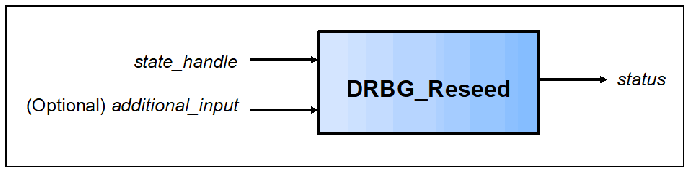
DRBG_Reseed関数の入出力図。入力はstate_handleと任意のadditional_input、出力はstatus。
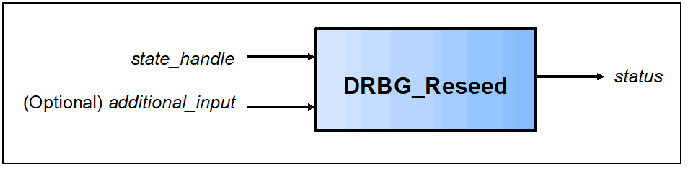
DRBG_Reseed関数の入出力図。入力はstate_handleと任意のadditional_input、出力はstatus。
Fig. 8. DRBG_Reseed function
図8. DRBG_Reseed関数
未レビュー訳A DRBG_Reseed function (shown in Fig. 8) is used to acquire at least s bits of fresh randomness for the DRBG instance indicated by the state handle (or the only instance if no state handle has been provided), where s is the security strength of the DRBG to be reseeded.10 In addition to the seed material provided from the DRBG’s randomness sources during reseeding, optional additional_input may be incorporated into the reseed process. As discussed in Sec. 2.4.1, the capability for handling and using additional input is recommended. Details about the DRBG_Reseed function are provided in [SP_800-90A].
DRBG_Reseed関数（図8を参照）は、state_handleが示すDRBGインスタンス（state_handleが与えられていない場合は唯一のインスタンス）に、新鮮な乱数を少なくともsビット取得するために使用する。ここでsは再シード対象DRBGのセキュリティ強度である。再シード中にDRBGの乱数源から提供されるシード材料に加えて、任意のadditional_inputを再シード処理に取り込んでもよい。第2.4.1節で述べたとおり、追加入力を処理して使用する機能が推奨される。DRBG_Reseed関数の詳細は[SP_800-90A]に示されている。
未レビュー訳An indication of the status is returned.
ステータスを示す情報を返す。
未レビュー訳The DRBG_Reseed function is requested by an application using a DRBG_Reseed_request:
アプリケーションは、次のDRBG_Reseed_requestを用いてDRBG_Reseed関数を要求する。
未レビュー訳status = DRBG_Reseed_request(state_handle, additional_input).
status = DRBG_Reseed_request(state_handle, additional_input).
未レビュー訳As shown in Fig. 9, a DRBG_Reseed_request received by a DRBG results in the execution of the DRBG’s DRBG_Reseed function, providing the input parameters for that function. The DRBG_Reseed function then obtains seed_material from a randomness source, reseeds the DRBG instantiation, and returns the status of the process to the application.
図9に示すとおり、DRBGがDRBG_Reseed_requestを受け取ると、関数の入力パラメーターが渡されてDRBG_Reseed関数が実行される。DRBG_Reseed関数は乱数源からseed_materialを取得してDRBGインスタンスを再シードし、処理のステータスをアプリケーションに返す。
未レビュー訳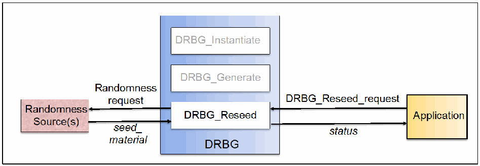
DRBGの再シード要求の流れ。アプリケーションがDRBG_Reseed_requestを送り、乱数源に乱数を要求する。乱数源からseed_materialを受け取り、statusをアプリケーションへ返す。
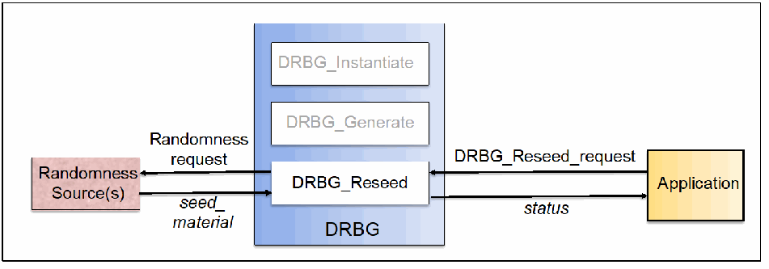
DRBGの再シード要求の流れ。アプリケーションがDRBG_Reseed_requestを送り、乱数源に乱数を要求する。乱数源からseed_materialを受け取り、statusをアプリケーションへ返す。
Fig. 9. DRBG_Reseed_request
図9. DRBG_Reseed_request
未レビュー訳2.8.1.4. Get_randomness_source_input Call
2.8.1.4. Get_randomness_source_input呼び出し
未レビュー訳In [SP_800-90A], a Get_randomness_source_input call is used in the DRBG_Instantiate function and DRBG_Reseed function to indicate when a randomness source needs to be accessed to obtain seed material. SP 800-90C provides guidelines on how the Get_randomness_source_input call is to be implemented based on various situations (e.g., the randomness source or the RBG construction used). Sections 3.2.2, 4, 5, 6, and 7 provide instructions for obtaining input from a randomness source when the Get_randomness_source_input call is encountered in SP 800-90A.
[SP_800-90A]では、DRBG_Instantiate関数およびDRBG_Reseed関数でGet_randomness_source_input呼び出しを使用し、シード材料取得のため乱数源にアクセスする必要があることを示す。SP 800-90Cでは、乱数源や使用するRBG構成など状況に応じて、この呼び出しをどのように実装するか指針を示す。[SP_800-90A]のGet_randomness_source_input呼び出しに遭遇した際に乱数源から入力を取得する手順は、第3.2.2節、第4節、第5節、第6節、および第7節で説明する。
未レビュー訳2.8.2. Interfacing With Entropy Sources
2.8.2. エントロピー源とのインターフェース
未レビュー訳A single entropy source request may not be sufficient to obtain the entropy required for seeding and reseeding a DRBG or for providing input for the exclusive-or operation in an RBG3(XOR) construction (see Sec. 6.4.1). SP 800-90C uses the term Get_entropy_bitstring to identify the process of obtaining the required entropy from one or more entropy sources. For convenience in describing the RBG constructions, this process is represented as a function whose input includes an indication of the amount of entropy that is needed from the entropy sources and whose output includes a status report on the success or failure of the process. If the process is successful, a bitstring containing the requested entropy is produced (see Fig. 10). The Get_entropy_bitstring function is invoked herein as:
DRBGのシードおよび再シードに必要なエントロピー、またはRBG3（XOR）構成の排他的論理和演算への入力を得るために、エントロピー源へ1回問い合わせるだけでは不十分な場合がある（第6.4.1節を参照）。SP 800-90Cでは、1つ以上のエントロピー源から必要なエントロピーを取得する処理をGet_entropy_bitstringと呼ぶ。RBG構成を説明しやすくするため、この処理を関数として表す。その入力にはエントロピー源から必要な量を示し、出力には処理の成功または失敗のステータスを含める。処理が成功すれば、要求されたエントロピーを含むビット列が生成される（図10を参照）。本書ではGet_entropy_bitstring関数を次のように呼び出す。
未レビュー訳(status, entropy_bitstring) = Get_entropy_bitstring(bits_of_entropy, counting method, entropy_source_ID),
(status, entropy_bitstring) = Get_entropy_bitstring(bits_of_entropy, counting_method, entropy_source_ID),
未レビュー訳where bits_of_entropy is the amount of entropy requested for return in the entropy_ bitstring, counting_method is the method to be used for counting entropy in the entropy sources (see Sec. 2.3), entropy_source_ID is an optional parameter that indicates the specific entropy source to be used, and status indicates whether the request has been satisfied.
ここで、bits_of_entropyはentropy_bitstringとして返すエントロピーの要求量、counting_methodはエントロピー源のエントロピー算入方式（第2.3節を参照）、entropy_source_IDは使用する特定のエントロピー源を示す任意パラメーター、statusは要求が満たされたかどうかを示す。
未レビュー訳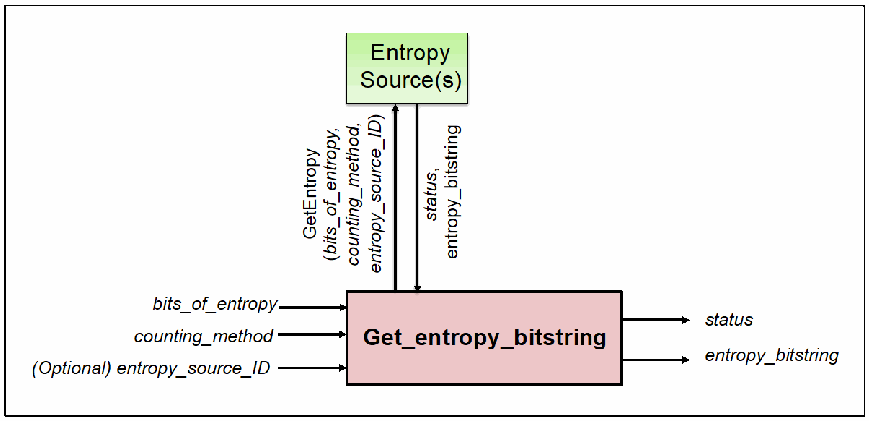
Get_entropy_bitstring関数とエントロピー源の流れ。要求項目はbits_of_entropy、counting_method、任意のentropy_source_ID。エントロピー源へのGetEntropy要求にはbits_of_entropy、counting_method、entropy_source_IDが含まれ、statusとentropy_bitstringが返る。
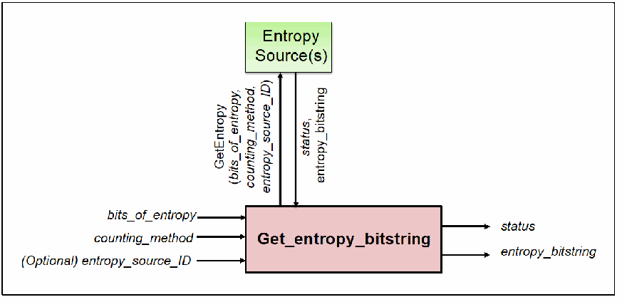
Get_entropy_bitstring関数とエントロピー源の流れ。要求項目はbits_of_entropy、counting_method、任意のentropy_source_ID。エントロピー源へのGetEntropy要求にはbits_of_entropy、counting_method、entropy_source_IDが含まれ、statusとentropy_bitstringが返る。
Fig. 10. Get_entropy_bitstring function
図10. Get_entropy_bitstring関数
未レビュー訳The Get_entropy_bitstring process requests entropy from any available validated entropy sources or the entropy source identified by entropy_source_ID (if present). Acquiring entropy from non-validated entropy sources is handled separately (e.g., by a different process) to avoid misuse. See Sec. 3.1 for additional discussion about the Get_entropy_bitstring process.
Get_entropy_bitstring処理は、利用可能な検証済みエントロピー源、またはentropy_source_IDが指定されている場合はそのIDで示される源に、エントロピーを要求する。未検証エントロピー源からの取得は、誤用を避けるため別途（異なる処理などで）扱う。Get_entropy_bitstring処理については第3.1節を参照。
未レビュー訳2.8.3. Interfacing With an RBG3 Construction
2.8.3. RBG3構成とのインターフェース
未レビュー訳An RBG3 construction requires functions to instantiate its DRBG (see Sec. 2.8.3.1) and request the generation of full-entropy bits (see Sec. 2.8.3.2). The functions needed to access the DRBG itself are provided in Sec. 2.8.1.
RBG3構成には、DRBGをインスタンス化する関数（第2.8.3.1節を参照）と、完全エントロピービットの生成を要求する関数（第2.8.3.2節を参照）が必要である。DRBG自体にアクセスする関数は第2.8.1節に示す。
未レビュー訳2.8.3.1. Instantiating a DRBG Within an RBG3 Construction
2.8.3.1. RBG3構成内でのDRBGのインスタンス化
未レビュー訳The security strength of the DRBG within an RBG3 construction shall be the highest security strength that can be supported by the DRBG design (see Sec. 6).
RBG3構成内のDRBGのセキュリティ強度は、DRBG設計でサポート可能な最大の強度でなければならない（第6節を参照）。
未レビュー訳The instantiate functions for the DRBG within the RBG3 constructions use the following functions:
RBG3構成内のDRBGをインスタンス化する関数には、次のものを用いる。
未レビュー訳(status, state_handle) = RBG3(XOR)_Instantiate(requested_security_strength, personalization_string)
(status, state_handle) = RBG3(XOR)_Instantiate(requested_security_strength, personalization_string)
未レビュー訳and
および
未レビュー訳(status, state_handle) = RBG3(RS)_Instantiate(requested_security_strength, personalization_string).
(status, state_handle) = RBG3(RS)_Instantiate(requested_security_strength, personalization_string).
未レビュー訳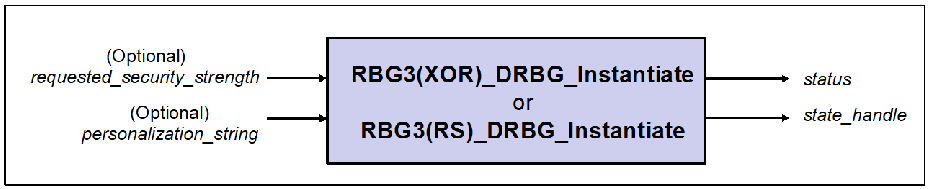
RBG3のインスタンス化関数の入出力図。RBG3(XOR)_DRBG_InstantiateまたはRBG3(RS)_DRBG_Instantiateへ、任意のrequested_security_strengthとpersonalization_stringを入力し、statusとstate_handleを受け取る。
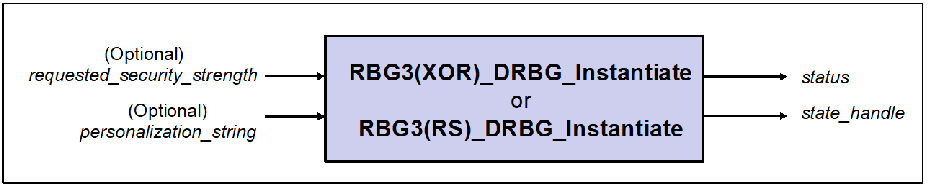
RBG3のインスタンス化関数の入出力図。RBG3(XOR)_DRBG_InstantiateまたはRBG3(RS)_DRBG_Instantiateへ、任意のrequested_security_strengthとpersonalization_stringを入力し、statusとstate_handleを受け取る。
Fig. 11. RBG3 instantiate function
図11. RBG3のインスタンス化関数
未レビュー訳The instantiate function of the RBG3 construction (shown in Fig. 11) will result in the execution of the DRBG’s instantiate function (provided in Sec. 2.8.1.1). A requested_security_strength may optionally be provided as an input parameter to indicate the minimum security strength to be supported by the DRBG within the RBG3 construction. An optional but recommended personalization_string (see Sec. 2.4.1) may be provided as an input parameter. If included as input to the RBG3 instantiation function, the personalization_string is passed to the DRBG that is instantiated by the instantiate function (see Sec. 6.4.1.1 and 6.5.1.1).
RBG3構成のインスタンス化関数（図11を参照）を実行すると、DRBGのインスタンス化関数（第2.8.1.1節に記載）が実行される。requested_security_strengthを任意の入力パラメーターとして指定し、RBG3構成内のDRBGがサポートする最小セキュリティ強度を示してもよい。任意だが推奨されるpersonalization_string（第2.4.1節を参照）も、入力パラメーターとして指定できる。RBG3インスタンス化関数への入力に含めた場合、personalization_stringはインスタンス化関数が実行するDRBGに渡される（第6.4.1.1節および第6.5.1.1節を参照）。
未レビュー訳If the returned status code indicates a success, a state handle may be returned to indicate the DRBG instance that is to be used by the construction (e.g., the state handle points to the internal state used by this instance of the DRBG within the RBG3 construction). If multiple instances of the DRBG are used (in addition to the DRBG instance used by the RBG3 construction), a separate state handle is returned for each instance. When provided, the state handle is used in subsequent calls to that RBG (e.g., during a call to the RBG3 generate function; see Sec. 2.8.3.2) or when accessing the DRBG directly (e.g., during a reseed of the DRBG; see Sec. 6.4.1.4). If the status code indicates an error (e.g., entropy is not currently available or the entropy source has failed), an invalid (e.g., Null) state handle is returned.
返されたステータスコードが成功を示す場合、構成で使用するDRBGインスタンスを示すstate_handleが返されることがある（たとえば、state_handleはRBG3構成内のDRBGインスタンスが使用する内部状態を指す）。RBG3構成内で使用するDRBGに加えて、複数のDRBGインスタンスを使用する場合、各インスタンスに対して個別のstate_handleを返す。state_handleが返された場合、その後のRBG呼び出し（RBG3生成関数の呼び出しなど、第2.8.3.2節を参照）やDRBGへの直接アクセス（DRBGの再シードなど、第6.4.1.4節を参照）に使用する。ステータスコードがエラーを示す場合（エントロピーを現在取得できない、エントロピー源が障害を起こしたなど）、無効なstate_handle（Nullなど）を返す。
未レビュー訳The instantiation of the DRBG within an RBG3(XOR) or RBG3(RS) construction is requested by an application using an Instantiate_RBG3_DRBG_request:
アプリケーションは、次のInstantiate_RBG3_DRBG_requestを使ってRBG3（XOR）構成またはRBG3（RS）構成内のDRBGのインスタンス化を要求する。
未レビュー訳(status, state_handle) = Instantiate_RBG3_DRBG_request(requested_security_strength, personalization_string).
(status, state_handle) = Instantiate_RBG3_DRBG_request(requested_security_strength, personalization_string).
未レビュー訳Both the requested_security_strength and a personalization_string are optional in the Instantiate_RBG3_DRBG_request. An Instantiate_RBG3_DRBG_request received by an RBG3 construction results in the execution of the DRBG’s instantiate function, as shown in Fig. 12.
Instantiate_RBG3_DRBG_requestでは、requested_security_strengthとpersonalization_stringの両方が任意である。RBG3構成がInstantiate_RBG3_DRBG_requestを受け取ると、図12に示すようにDRBGのインスタンス化関数が実行される。
未レビュー訳If no error is detected in the request, the Instantiate_RBG3_DRBG function obtains seed_material from the entropy source(s), instantiates the DRBG, and returns the status of the process and (possibly) a state_handle for the internal state to the application.
要求でエラーが検出されなければ、Instantiate_RBG3_DRBG関数はエントロピー源からseed_materialを取得してDRBGをインスタンス化し、処理のステータスと、場合によっては内部状態を示すstate_handleをアプリケーションに返す。
未レビュー訳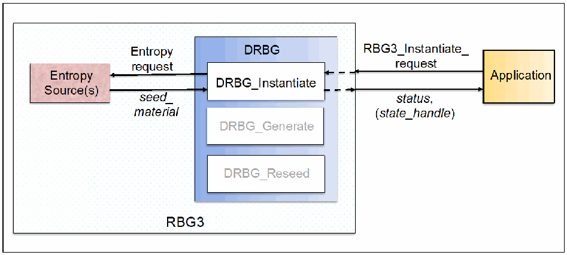
RBG3のインスタンス化要求の流れ。アプリケーションがRBG3_Instantiate_requestを送り、エントロピー源へentropy requestを行う。seed_materialでDRBG_Instantiate関数を実行し、statusとstate_handleをアプリケーションへ返す。
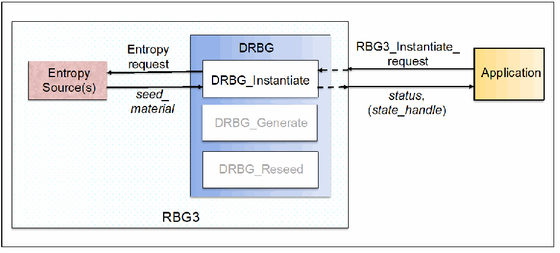
RBG3のインスタンス化要求の流れ。アプリケーションがRBG3_Instantiate_requestを送り、エントロピー源へentropy requestを行う。seed_materialでDRBG_Instantiate関数を実行し、statusとstate_handleをアプリケーションへ返す。
Fig. 12. RBG3(XOR) or RBG3(RS) instantiation request
図12. RBG3（XOR）またはRBG3（RS）のインスタンス化要求
未レビュー訳In the case of the RBG3 construction, the (optional) requested_security_strength parameter in the Instantiate_RBG3_DRBG_request should be interpreted as the minimum security strength that is required by the consuming application if entropy-source failures are undetected. Therefore, if the requested_security_strength parameter is provided as input, it is compared to the value of the highest security strength that can be supported by the DRBG. If the requested_security_strength exceeds the security strength that can be supported by the DRBG, then an error indication is returned as the status in response to the Instantiate_RBG3_DRBG_request.
RBG3構成では、Instantiate_RBG3_DRBG_requestの（任意の）requested_security_strengthパラメーターは、エントロピー源の障害が検出されない場合に出力を利用するアプリケーションが必要とする最小セキュリティ強度として解釈する。requested_security_strengthパラメーターが入力として指定された場合、DRBGがサポート可能な最大セキュリティ強度と比較する。requested_security_strengthがサポート可能な強度を超える場合、Instantiate_RBG3_DRBG_requestへの応答として、ステータスにエラーを示す情報を返す。
未レビュー訳If no error is detected in the request, the Instantiate_RBG3_DRBG function obtains seed_material from the entropy sources, instantiates the DRBG, and returns the status of the process and (possibly) a state_handle for the internal state to the application.
要求でエラーが検出されなければ、Instantiate_RBG3_DRBG関数はエントロピー源からseed_materialを取得してDRBGをインスタンス化し、処理のステータスと、場合によっては内部状態を示すstate_handleをアプリケーションに返す。
未レビュー訳2.8.3.2. Generation Using an RBG3 Construction
2.8.3.2. RBG3構成を使用した生成
未レビュー訳The RBG3(XOR) and RBG3(RS) generate function calls are essentially the same, but the function designs are very different (see Sec. 6.4 for the RBG3(XOR)_Generate function and Sec. 6.5 for the RBG3(RS)_Generate function):
RBG3（XOR）およびRBG3（RS）の生成関数呼び出しは基本的に同じだが、関数の設計は大きく異なる（RBG3（XOR）_Generate関数については第6.4節、RBG3（RS）_Generate関数については第6.5節を参照）。
未レビュー訳(status, returned_bits) = RBG3(XOR)_Generate(state_handle, requested_number_of_bits, additional_input)
(status, returned_bits) = RBG3(XOR)_Generate(state_handle, requested_number_of_bits, additional_input)
未レビュー訳and
および
未レビュー訳(status, returned_bits) = RBG3(RS)_Generate(state_handle, requested_number_of_bits, additional_input).
(status, returned_bits) = RBG3(RS)_Generate(state_handle, requested_number_of_bits, additional_input).
未レビュー訳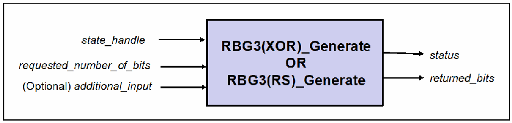
RBG3のgenerate処理の流れ。アプリケーションがRBG3_Generate_requestを送り、エントロピー源からentropy requestへのrandom bitsを取得する。RBG3内部のDRBG_Generate（必要に応じてDRBG_Reseed）を使って処理し、statusとreturned_bitsを返す。
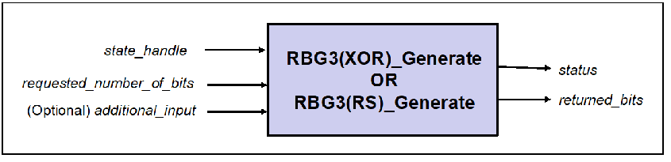
RBG3のgenerate処理の流れ。アプリケーションがRBG3_Generate_requestを送り、エントロピー源からentropy requestへのrandom bitsを取得する。RBG3内部のDRBG_Generate（必要に応じてDRBG_Reseed）を使って処理し、statusとreturned_bitsを返す。
Fig. 13. RBG3 generate functions
図13. RBG3の生成関数
未レビュー訳The RBG3 generate functions are requested to use the DRBG indicated by the state_handle to generate the requested_number_of_bits using any (optional) additional_input provided. If the returned status code from the RBG3(XOR)_Generate or RBG3(RS)_Generate function indicates a success, a bitstring that contains the newly generated bits is also returned. If the status code indicates an error (e.g., the entropy source has failed), a Null bitstring is returned as the returned_bits.
RBG3の生成関数は、state_handleが示すDRBGを使用して、requested_number_of_bitsと、指定されていれば任意のadditional_inputに基づいて生成するよう要求される。RBG3（XOR）_Generate関数またはRBG3（RS）_Generate関数のステータスコードが成功を示す場合、新たに生成したビットを含むビット列も返す。ステータスコードがエラーを示す場合（エントロピー源の障害など）、returned_bitsとしてNullビット列を返す。
未レビュー訳The generation of random bits by an RBG3 construction is requested using the following:
RBG3構成による乱数ビットの生成は、次の関数で要求する。
未レビュー訳(status, returned_bits) = RBG3_Generate_request(state_handle, requested_number_of_bits, requested_security_strength, additional_input).
(status, returned_bits) = RBG3_Generate_request(state_handle, requested_number_of_bits, requested_security_strength, additional_input).
未レビュー訳If a suitable state_handle was provided during instantiation (e.g., returned in response to an Instantiate_RBG3_DRBG_request within an RBG3 instantiate function; see Sec. 2.8.3.1), it is included in the RBG3_Generate_request.
インスタンス化時に適切なstate_handleが与えられている場合（RBG3インスタンス化関数内のInstantiate_RBG3_DRBG_requestへの応答として返されたものなど。第2.8.3.1節を参照）、これをRBG3_Generate_requestに含める。
未レビュー訳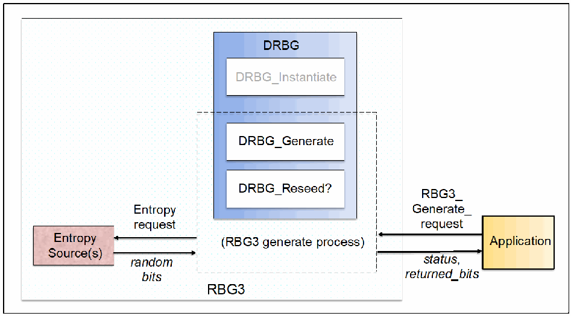
RBG3(XOR)またはRBG3(RS)のgenerate関数の入出力図。入力はstate_handle、requested_number_of_bits、任意のadditional_input。出力はstatusとreturned_bits。
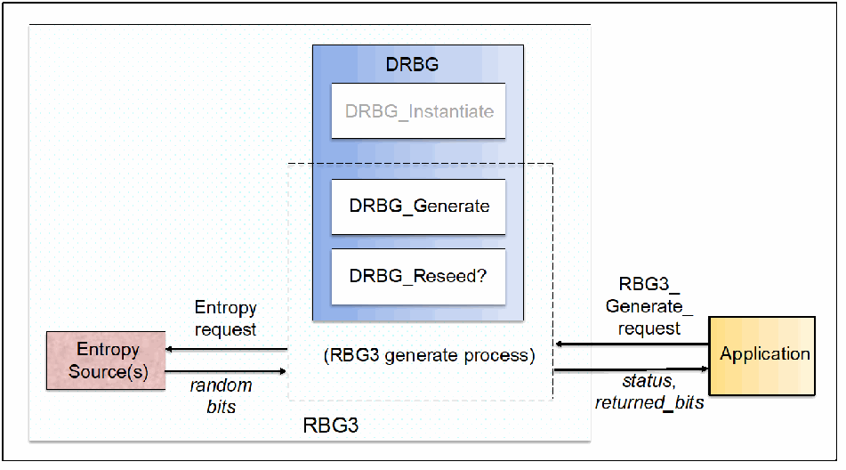
RBG3(XOR)またはRBG3(RS)のgenerate関数の入出力図。入力はstate_handle、requested_number_of_bits、任意のadditional_input。出力はstatusとreturned_bits。
Fig. 14. Generic RBG3 generation process
図14. 一般化したRBG3生成処理
未レビュー訳As shown in Fig. 14, an RBG3 generate request received by an RBG3 construction results in the execution of the RBG’s generate function, providing the input parameters for that function. The entropy source is accessed, the requested number of bits are generated, and the status of the process and the newly generated bits are returned to the application. The RBG3 generate process for the RBG3(XOR) and RBG3(RS) construction are provided in Sec. 6.4 and 6.5, respectively.
図14に示すとおり、RBG3構成が生成要求を受け取ると、入力パラメーターを渡してRBGの生成関数が実行される。エントロピー源にアクセスし、要求された数のビットを生成した後、処理のステータスと新たに生成したビットをアプリケーションに返す。RBG3（XOR）構成およびRBG3（RS）構成の生成処理は、それぞれ第6.4節および第6.5節に示す。
未レビュー訳3. Accessing Entropy Source Output
3. エントロピー源の出力へのアクセス
未レビュー訳The security provided by an RBG is based on the use of validated entropy sources. Section 3.1 discusses the use of the Get_entropy_bitstring process to request entropy from one or more entropy sources. Section 3.2 discusses the conditioning of the output of one or more entropy sources before further use by an RBG.
RBGが提供するセキュリティは、検証済みエントロピー源の使用に基づく。第3.1節では、1つ以上のエントロピー源からエントロピーを要求するGet_entropy_bitstring処理について説明する。第3.2節では、RBGでさらに使用する前に、1つ以上のエントロピー源の出力をコンディショニングする方法について説明する。
未レビュー訳3.1. Get_entropy_bitstring Process
3.1. Get_entropy_bitstring処理
未レビュー訳The Get_entropy_bitstring process introduced in Sec. 2.8.2 obtains entropy from one or more validated entropy sources in whatever manner is required (e.g., polling the entropy sources, waiting for an entropy source to provide output, or extracting bits that contain entropy from a pool of collected bits). The method for counting entropy from one or more entropy sources is indicated as an input parameter. An optional input parameter (when used) indicates a particular entropy source that is to be used.
第2.8.2節で導入したGet_entropy_bitstring処理は、必要な方法（エントロピー源へのポーリング、出力提供までの待機、収集済みビットのプールからエントロピーを含むビットの抽出など）で1つ以上の検証済みエントロピー源からエントロピーを取得する。1つ以上のエントロピー源からのエントロピー算入方式は入力パラメーターで指定する。任意の入力パラメーターを指定した場合、使用する特定のエントロピー源を示す。
未レビュー訳In many cases, the Get_entropy_bitstring process will need to query an entropy source (or a set of entropy sources) multiple times to obtain the amount of entropy requested. The details of the process are not specified in this document but are left to the developer to implement appropriately for the selected entropy sources. However, the behavior of the Get_entropy_bitstring process includes the following:
多くの場合、要求された量のエントロピーを得るため、Get_entropy_bitstring処理ではエントロピー源（または複数の源）に複数回問い合わせる必要がある。処理の詳細は本書で規定せず、選択したエントロピー源に応じて開発者が適切に実装する。ただし、Get_entropy_bitstring処理は次のように動作する。
未レビュー訳1.The Get_entropy_bitstring process shall only be used to access one or more validated entropy sources. Any non-validated entropy sources shall be accessed by a separate process to avoid possible misuse.
1.Get_entropy_bitstring処理は、検証済みエントロピー源へのアクセスにのみ使用しなければならない。未検証エントロピー源へのアクセスは、誤用の可能性を避けるため別の処理で行わなければならない。
未レビュー訳2.Each validated entropy source shall be independent of all other validated or non-validated entropy sources used by the RBG.
2.各検証済みエントロピー源は、RBGが使用する他のすべての検証済みまたは未検証エントロピー源から独立していなければならない。
未レビュー訳3.The output produced from multiple entropy-source calls to a single validated entropy source or by calls to multiple independent, validated entropy sources shall be concatenated into a single bitstring. The entropy in the bitstring is the sum of the entropy provided by the validated entropy sources that are to be credited for contributing entropy to the process. For Method 1 (see Sec. 2.3), only entropy contributed by one or more validated physical entropy sources is counted. For Method 2, the entropy from all validated entropy sources is counted.
3.単一の検証済みエントロピー源への複数回の呼び出し、または複数の独立した検証済みエントロピー源への呼び出しで得られた出力は、1つのビット列に連結しなければならない。ビット列内のエントロピー量は、処理への寄与が算入される検証済みエントロピー源から提供されたエントロピー量の合計である。方式1（第2.3節を参照）では、1つ以上の検証済み物理エントロピー源が寄与したエントロピーのみを数える。方式2では、すべての検証済みエントロピー源からのエントロピーを数える。
未レビュー訳4.If a failure is reported during the Get_entropy_bitstring process by any physical or non-physical entropy source whose entropy is counted toward fulfilling an entropy request, the Get_entropy_bitstring process shall behave as follows:11
4.エントロピー要求を満たす量として算入される物理または非物理エントロピー源のいずれかが、Get_entropy_bitstring処理中に障害を報告した場合、同処理は次のように動作しなければならない。¹¹
未レビュー訳a. Method 1 is used for counting the entropy from one or more physical entropy sources:
a. 方式1では、1つ以上の物理エントロピー源からのエントロピーを次のように算入する。
未レビュー訳1) If a physical entropy source reports a failure, the error shall be reported to the consuming application as soon as possible. Any entropy collected by the failed entropy source during the execution of the Get_entropy_bitstring process in which the error is reported shall not be used. Entropy provided by a “healthy” entropy source may be used if the entropy can be distinguished from the output of the failed entropy source. The failed entropy source shall not be accessed to obtain entropy until the condition that caused the failure has been corrected and operational tests have been successfully passed.
1）物理エントロピー源が障害を報告した場合、できるだけ早く利用側アプリケーションにエラーを報告しなければならない。エラーを報告したGet_entropy_bitstring処理の実行中に、障害を起こしたエントロピー源が収集したエントロピーは使用してはならない。「正常な」エントロピー源からのエントロピーは、障害を起こした源の出力と区別できる場合に使用してもよい。障害の原因が是正され、運用試験に合格するまで、障害を起こしたエントロピー源にアクセスしてエントロピーを取得してはならない。
未レビュー訳If multiple physical entropy sources are used, the report shall identify the entropy source that reported the failure.
複数の物理エントロピー源を使用する場合、障害を報告したエントロピー源を報告で特定しなければならない。
未レビュー訳2) If a non-physical entropy source reports a failure, the failure should be reported to the consuming application along with a notification of the entropy source that failed. The RBG operation may continue.
2）非物理エントロピー源が障害を報告した場合、障害を報告したエントロピー源を知らせる通知とともに、利用側アプリケーションへ報告するとよい。RBGの処理は継続してもよい。
未レビュー訳3) If all physical entropy sources report failures, the RBG operation shall be terminated (i.e., stopped). The RBG must not be returned to normal operation until at least one validated physical entropy source has had its failure corrected and its operational tests have been successfully passed. The output of other entropy sources that have not successfully passed operational tests shall not be used.
3）すべての物理エントロピー源が障害を報告した場合、RBGの処理を終了（停止）しなければならない。少なくとも1つの検証済み物理エントロピー源について障害を是正し、運用試験に合格するまで、RBGを通常運転に戻してはならない。運用試験に合格していない他のエントロピー源の出力を使用してはならない。
未レビュー訳4) If any physical entropy source is still “healthy” (e.g., the entropy source has not reported a failure), the RBG operations may continue using any healthy physical entropy source.
4）物理エントロピー源が1つでも「正常」（障害を報告していないなど）であれば、正常な物理エントロピー源を使用してRBGの処理を継続してもよい。
未レビュー訳b. Method 2 in Sec. 2.3 is used to count the entropy from one or more non-physical and/or physical entropy sources:
b. 第2.3節の方式2では、1つ以上の非物理および／または物理エントロピー源からのエントロピーを次のように算入する。
未レビュー訳1) A failure from any entropy source shall be reported to the consuming application. If multiple entropy sources are used, the report shall identify the entropy source that reported the failure. This failed entropy source shall not be accessed to obtain entropy until the condition that caused the failure has been corrected and operational tests have been successfully passed.
1）いずれかのエントロピー源が障害を報告した場合、利用側アプリケーションに報告しなければならない。複数のエントロピー源を使用する場合、障害を報告したエントロピー源を報告で特定しなければならない。障害の原因が是正され、運用試験に合格するまで、障害を起こしたエントロピー源にアクセスしてエントロピーを取得してはならない。
未レビュー訳2) If all entropy sources have reported failures, the RBG operation shall be terminated. The RBG must not be returned to normal operation until the conditions that caused the failures have been corrected and operational tests have been successfully passed.
2）すべてのエントロピー源が障害を報告した場合、RBGの処理を終了しなければならない。障害の原因が是正され、運用試験に合格するまで、RBGを通常運転に戻してはならない。
未レビュー訳3) If any physical or non-physical entropy source is still “healthy” (e.g., the entropy source has not reported a failure), RBG operations may continue using any healthy entropy sources.
3）物理または非物理エントロピー源が1つでも「正常」（障害を報告していないなど）であれば、正常なエントロピー源を使ってRBGの処理を継続してもよい。
未レビュー訳5.The Get_entropy_bitstring process shall not provide output for RBG operations unless the bitstring contains sufficient entropy to fulfill the entropy request.
5.エントロピー要求を満たすのに十分なエントロピーがビット列に含まれていない限り、Get_entropy_bitstring処理はRBGの処理に出力を提供してはならない。
未レビュー訳3.2. External Conditioning
3.2. 外部コンディショニング
未レビュー訳Entropy bits produced by one or more entropy sources are required for seeding and reseeding the DRBG in the RBG constructions specified in this document. Whether or not entropy-source output was conditioned within a validated entropy source prior to output, the entropy provided by the validated entropy sources may need to be conditioned prior to subsequent use by the RBG. For example:
本書で規定するRBG構成では、DRBGのシードおよび再シードに1つ以上のエントロピー源が生成するエントロピービットが必要である。検証済みエントロピー源が出力前に内部でコンディショニングしているかどうかにかかわらず、エントロピー源から提供されたエントロピーは、RBGでさらに使用する前にコンディショニングが必要な場合がある。例を以下に示す。
未レビュー訳•The entropy source(s) within an RBG2 or RBG3 construction (see Sec. 5 or 6, respectively) is used to seed and reseed its DRBG. The entropy source(s) may, for example, produce bitstrings that are too long for the specific DRBG implementation.
•RBG2またはRBG3構成内のエントロピー源（それぞれ第5節または第6節を参照）は、そのDRBGのシードおよび再シードに使用する。エントロピー源は、特定のDRBG実装で扱うには長すぎるビット列を生成する場合がある。
未レビュー訳•Seed material with full entropy is required when the CTR_DRBG is implemented without a derivation function and the entropy source(s) is used for seeding and reseeding the DRBG. If the entropy source(s) does not provide full-entropy output, the output needs to be conditioned prior to subsequent use by the DRBG to obtain full-entropy input for the
•CTR_DRBGを導出関数なしで実装し、エントロピー源をDRBGのシードおよび再シードに使用する場合、完全エントロピーのシード材料が必要となる。エントロピー源が完全エントロピー出力を提供しない場合、
未レビュー訳DRBG.
DRBGに完全エントロピーの入力を与えるため、DRBGでさらに使用する前に出力をコンディショニングしなければならない。
未レビュー訳•When the root RBGC construction in a DRBG tree uses a full-entropy source as its initial randomness source (see Sec. 7), the output from the entropy source may need to be conditioned to provide a full-entropy bitstring for seeding and reseeding the root (i.e., the entropy source itself may not provide full-entropy output).
•DRBGツリーのルートRBGC構成が完全エントロピー源を初期乱数源として使用する場合（第7節を参照）、ルートのシードおよび再シード用に完全エントロピーのビット列を提供するため、エントロピー源の出力をコンディショニングする必要がある場合がある（エントロピー源自体が完全エントロピー出力を提供しないことがある）。
未レビュー訳•If both physical and non-physical entropy sources are used to provide seed material, the entropy within the concatenated bitstring produced by these sources may not be distributed uniformly throughout the bitstring.
•物理および非物理エントロピー源の両方をシード材料の提供に使用する場合、それらの源が生成する連結ビット列内でエントロピーが一様に分布しないことがある。
未レビュー訳Since this conditioning is performed outside of an entropy source, the output is said to be externally conditioned. The conditioning function operates on a bitstring that is produced by the Get_entropy_bitstring process to produce an entropy_bitstring. Reasons to perform conditioning might include:
このコンディショニングはエントロピー源の外部で行うため、外部コンディショニングと呼ぶ。コンディショニング関数は、Get_entropy_bitstring処理で生成したビット列を処理してentropy_bitstringを生成する。コンディショニングを行う理由としては、次のものがある。
未レビュー訳•Reducing the bias in the entropy_bitstring,
•entropy_bitstring内の偏りを減らす。
未レビュー訳•Distributing entropy uniformly across the entropy_bitstring,
•entropy_bitstring全体にエントロピーを一様に分布させる。
未レビュー訳•Reducing the length of the entropy_bitstring and compressing the entropy into a smaller bitstring, and/or
•entropy_bitstringの長さを短縮し、エントロピーをより短いビット列に圧縮する。
未レビュー訳•Ensuring the availability of full-entropy bits.
•完全エントロピービットを利用可能にする。
未レビュー訳When external conditioning is performed, a vetted conditioning function listed in [SP_800-90B] shall be used. Additional vetted conditioning functions may be approved in the future (see [SP800_90WebSite]).
外部コンディショニングを行う場合、[SP_800-90B]に記載された審査済みコンディショニング関数を使用しなければならない。今後、審査済みコンディショニング関数が追加で承認される場合がある（[SP800_90WebSite]を参照）。
未レビュー訳The conditioning functions operate on bitstrings that are obtained using the Get_entropy_bitstring process (see Section 3.1) to obtain an entropy_bitstring from one or more entropy sources.
コンディショニング関数は、Get_entropy_bitstring処理（第3.1節を参照）で1つ以上のエントロピー源から取得したビット列を処理し、entropy_bitstringを生成する。
未レビュー訳The following format is used in Sec. 3.2.2 for a conditioning function call:
第3.2.2節では、コンディショニング関数を次の形式で呼び出す。
未レビュー訳conditioned_output_block = Conditioning_function(input_parameters),
conditioned_output_block = Conditioning_function(input_parameters),
未レビュー訳where the input_parameters for the selected conditioning function are discussed in Sec. 3.2.1.2 and 3.2.1.3, and conditioned_output_block is the output returned by the conditioning function. The length of the conditioned_output_block is the length of the output block of the conditioning function used and indicated as output_len in subsequent sections.
ここで、選択したコンディショニング関数のinput_parametersについては第3.2.1.2節および第3.2.1.3節で説明し、conditioned_output_blockは関数が返す出力である。conditioned_output_blockの長さは、使用したコンディショニング関数の出力ブロック長であり、以降の節ではoutput_lenで示す。
未レビュー訳3.2.1.1. Keys Used in External Conditioning Functions
3.2.1.1. 外部コンディショニング関数で使用する鍵
未レビュー訳The HMAC, CMAC, and CBC-MAC vetted conditioning functions require the input of a Key of a specific length (keylen), depending on the conditioning function and its primitive. Unlike other cryptographic applications, keys used in these external conditioning functions do not require secrecy to accomplish their purpose, so they may be hard-coded, fixed, or all zeros.
HMAC、CMAC、およびCBC-MACの審査済みコンディショニング関数は、関数とそのプリミティブに応じた所定の長さ（keylen）の鍵を必要とする。他の暗号アプリケーションとは異なり、これらの外部コンディショニング関数で使用する鍵は目的を達成するうえで秘匿する必要がないため、ハードコード、固定値、または全ゼロ値でよい。
未レビュー訳For the CMAC and CBC-MAC conditioning functions, the length of the key shall be an approved key length for the block cipher used (e.g., keylen = 128, 192, or 256 bits for AES).
CMACおよびCBC-MACのコンディショニング関数では、鍵長は使用するブロック暗号で承認された鍵長でなければならない（AESのkeylen = 128、192、または256ビットなど）。
未レビュー訳For the HMAC conditioning function, the length of the key shall be equal to the length of the hash function’s output (i.e., output_len).
HMACコンディショニング関数では、鍵長はハッシュ関数の出力長（output_len）と等しくなければならない。
未レビュー訳Table 2. Key lengths for the hash-based conditioning functions
表2. ハッシュ関数ベースのコンディショニング関数に用いる鍵長
未レビュー訳| Hash Function | Length of the output (output_len) |
| and key (keylen) | |
| SHA-256, SHA-512/256, SHA3-256 | 256 |
| SHA-384, SHA3-384 | 384 |
| SHA-512, SHA3-512 | 512 |
原本の表画像
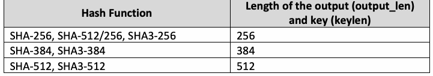
| ハッシュ関数 | 出力長（output_len） |
| および鍵長（keylen） | |
| SHA-256、SHA-512/256、SHA3-256 | 256 |
| SHA-384、SHA3-384 | 384 |
| SHA-512、SHA3-512 | 512 |
Using randomly chosen keys (e.g., by obtaining bits directly from the entropy source and inserting them into the key or by providing entropy-source bits to a conditioning function with a fixed key to derive the new key) may provide some additional security in case the input is more predictable than expected. Any entropy used to randomize the key shall not be used for any other purpose.
ランダムに選んだ鍵を使用すると、入力が予想より予測しやすい場合にセキュリティを追加できることがある（エントロピー源からビットを直接得て鍵に入れる方法や、固定鍵を用いるコンディショニング関数にエントロピー源のビットを渡して新しい鍵を導出する方法など）。鍵をランダム化するために使用したエントロピーは、他の目的に使用してはならない。
未レビュー訳3.2.1.2. Hash Function-Based Conditioning Functions
3.2.1.2. ハッシュ関数ベースのコンディショニング関数
未レビュー訳Conditioning functions may be based on approved hash functions. One of the following calls shall be used for external conditioning when the conditioning function is based on a hash function:
コンディショニング関数には承認済みハッシュ関数を使用できる。ハッシュ関数ベースのコンディショニング関数で外部コンディショニングを行う場合、次のいずれかの呼び出しを使用しなければならない。
未レビュー訳1.Using an approved hash function (as specified in [FIPS_180] or [FIPS_202]) directly:
1.承認済みハッシュ関数（[FIPS_180]または[FIPS_202]で規定）を直接使用する。
未レビュー訳conditioned_output_block = Hash(entropy_bitstring),
conditioned_output_block = Hash(entropy_bitstring),
未レビュー訳where the hash function operates on the entropy_bitstring provided as input.
ハッシュ関数は、入力として与えられたentropy_bitstringを処理する。
未レビュー訳2.Using HMAC (as specified in [SP_800_224]) with an approved hash function:
2.承認済みハッシュ関数を用いたHMAC（[SP_800-224]で規定）を使用する。
未レビュー訳conditioned_output_block = HMAC(Key, entropy_bitstring),
conditioned_output_block = HMAC(Key, entropy_bitstring),
未レビュー訳where HMAC operates on the entropy_bitstring using a Key that is determined as specified in Sec. 3.2.1.1.
HMACは、第3.2.1.1節の規定に従って決定したKeyを使用してentropy_bitstringを処理する。
未レビュー訳In both cases, the length of the conditioned output is equal to the length of the output block of the selected hash function (i.e., output_len).
いずれの場合も、コンディショニング後の出力長は、選択したハッシュ関数の出力ブロック長（すなわちoutput_len）と等しい。
未レビュー訳3.Using Hash_df, as specified in SP 800-90A:
3.SP 800-90Aで規定されるHash_dfを使用する。
未レビュー訳conditioned_output_block = Hash_df(entropy_bitstring, output_len),
conditioned_output_block = Hash_df(entropy_bitstring, output_len),
未レビュー訳where the derivation function operates on the entropy_bitstring provided as input to produce a bitstring of output_len bits.
導出関数は、入力として与えられたentropy_bitstringを処理し、output_lenビットのビット列を生成する。
未レビュー訳3.2.1.3. Block Cipher-Based Conditioning Functions
3.2.1.3. ブロック暗号ベースのコンディショニング関数
未レビュー訳Conditioning functions may be based on approved block ciphers. TDEA shall not be used as the block cipher.
コンディショニング関数には承認済みブロック暗号を使用できる。ブロック暗号にTDEAを使用してはならない。
未レビュー訳For block-cipher-based conditioning functions, one of the following calls shall be used for external conditioning:
ブロック暗号ベースのコンディショニング関数で外部コンディショニングを行う場合、次のいずれかの呼び出しを使用しなければならない。
未レビュー訳1.Using CMAC (as specified in [SP_800-38B]) with an approved block cipher:
1.承認済みブロック暗号を用いたCMAC（[SP_800-38B]で規定）を使用する。
未レビュー訳conditioned_output_block = CMAC(Key, entropy_bitstring),
conditioned_output_block = CMAC(Key, entropy_bitstring),
未レビュー訳where CMAC operates on the entropy_bitstring using a Key that is determined as specified in Sec. 3.2.1.1.
CMACは、第3.2.1.1節の規定に従って決定したKeyを使用してentropy_bitstringを処理する。
未レビュー訳2.Using CBC-MAC (specified in [SP_800-90B]) with an approved block cipher:
2.承認済みブロック暗号を用いたCBC-MAC（[SP_800-90B]で規定）を使用する。
未レビュー訳conditioned_output_block = CBC-MAC(Key, entropy_bitstring),
conditioned_output_block = CBC-MAC(Key, entropy_bitstring),
未レビュー訳where CBC-MAC operates on the entropy_bitstring using a Key that is determined as specified in Sec. 3.2.1.1.
CBC-MACは、第3.2.1.1節の規定に従って決定したKeyを使用してentropy_bitstringを処理する。
未レビュー訳CBC-MAC shall only be used as an external conditioning function under the following conditions:
CBC-MACを外部コンディショニング関数として使用できるのは、次の条件を満たす場合に限る。
未レビュー訳1.The length of the input is an integer that is a multiple of the size of the block cipher (e.g., a multiple of 128 bits for AES). No padding is done by CBC-MAC itself.12
1.入力長はブロック暗号のブロックサイズの整数倍である（AESでは128ビットの整数倍など）。CBC-MAC自体はパディングを行わない。¹²
未レビュー訳2.If the CBC-MAC conditioning function is used for the external conditioning of an entropy source output for CTR_DRBG instantiation or reseeding:
2.CTR_DRBGのインスタンス化または再シードに用いるエントロピー源の出力を外部コンディショニングするため、CBC-MACコンディショニング関数を使用する場合は、次の条件も満たす。
未レビュー訳•A personalization string shall not be used during instantiation.
•インスタンス化時にパーソナライゼーション文字列を使用してはならない。
未レビュー訳•Additional input shall not be used during the reseeding of the CTR_DRBG but may be used during the generate process.
•CTR_DRBGの再シード時に追加入力を使用してはならない。ただし、生成処理では使用してもよい。
未レビュー訳CBC-MAC is not approved for any use other than in an RBG.
CBC-MACはRBG内での使用以外、いかなる用途にも承認されていない。
未レビュー訳3.Using the Block_cipher_df as specified in [SP_800-90A] with an approved block cipher:
3.承認済みブロック暗号を用い、[SP_800-90A]で規定されるBlock_cipher_dfを使用する。
未レビュー訳conditioned_output_block = Block_cipher_df(entropy_bitstring, block_length),
conditioned_output_block = Block_cipher_df(entropy_bitstring, block_length),
未レビュー訳where Block_cipher_df operates on the entropy_bitstring using a key that is specified within the function, and the block_length is defined for the block cipher (e.g., 128 for
Block_cipher_dfは、関数内で指定された鍵を使用してentropy_bitstringを処理する。block_lengthはブロック暗号ごとに定められている（AESでは128など）。
未レビュー訳AES).
AES）。
未レビュー訳In all three cases, the length of the conditioned output is equal to the length of the output block (e.g., 128 bits for AES).
3つの方式すべてで、コンディショニング後の出力長は出力ブロック長と等しい（AESでは128ビットなど）。
未レビュー訳3.2.2. Using a Vetted Conditioning Function
3.2.2. 審査済みコンディショニング関数の使用
未レビュー訳There are several cases in which the use of an external conditioning function is required to prepare the entropy-source output for use by a DRBG mechanism. Either the procedure in Section 3.2.2.1 or 3.2.2.2 shall be used for external conditioning. The procedure in Section 3.2.2.1 obtains entropy from one or more entropy sources and subsequently processes it using an external conditioning function when full-entropy output is not required from the conditioning function (e.g., the conditioning function is used to compress the entropy into a shorter bitstring or to distribute the entropy across the output). Section 3.2.2.2 provides a procedure for obtaining full entropy from the entropy source(s) when needed. When full entropy is not required, either procedure may be used.
DRBGメカニズムで使用するためにエントロピー源の出力を準備する際、外部コンディショニング関数が必要となる場合がある。外部コンディショニングには、第3.2.2.1節または第3.2.2.2節のいずれかの手順を使用しなければならない。第3.2.2.1節の手順では、1つ以上のエントロピー源からエントロピーを取得し、コンディショニング関数の出力に完全エントロピーが不要な場合（エントロピーをより短いビット列に圧縮する、または出力全体に分布させるなど）に外部コンディショニング関数で処理する。第3.2.2.2節の手順では、必要な場合にエントロピー源から完全エントロピーを得る。完全エントロピーが不要な場合は、どちらの手順を使用してもよい。
未レビュー訳3.2.2.1. External Conditioning When Full Entropy is Not Required
3.2.2.1. 完全エントロピーが不要な場合の外部コンディショニング
未レビュー訳The Get_conditioned_input procedure specified below iteratively requests entropy from the Get_entropy_bitstring process (represented as a Get_entropy_bitstring procedure; see Sec. 2.8.2 and 3.1) and distributes the entropy in the newly acquired entropy_bitstring across the conditioning function’s output block. The output of the Get_conditioned_input procedure is the concatenation of the conditioning function output blocks. The entire output of the
以下に示すGet_conditioned_input手順は、Get_entropy_bitstring処理（Get_entropy_bitstring手順として表す。第2.8.2節および第3.1節を参照）に繰り返しエントロピーを要求し、新たに取得したentropy_bitstring内のエントロピーをコンディショニング関数の出力ブロック全体に分布させる。Get_conditioned_input手順の出力は、コンディショニング関数の出力ブロックを連結したものである。この手順の出力全体は
未レビュー訳Get_conditioned_input procedure shall be provided as input to the DRBG mechanism (i.e., the output of the Get_conditioned_input function shall not be truncated).
Get_conditioned_input手順の出力はDRBGメカニズムへの入力として与えなければならない（Get_conditioned_input関数の出力を切り詰めてはならない）。
未レビュー訳Let output_len be the length of the conditioning function’s output block.
output_lenをコンディショニング関数の出力ブロック長とする。
未レビュー訳Get_conditioned_input:
Get_conditioned_input：
未レビュー訳Input:
入力：
未レビュー訳1.n: The amount of entropy to be obtained.
1.n：取得するエントロピー量。
未レビュー訳2.counting_method: The counting method to be used (i.e., either Method 113 or Method 2,14 as described in Sec. 2.3).
2.counting_method：使用する算入方式（第2.3節に記載の方式1¹³または方式2¹⁴）。
未レビュー訳3.target_entropy_source: An optional parameter that indicates the specific entropy source to be queried. If the target_entropy_source is not indicated, output is to be obtained from any validated entropy sources producing output that have not reported a failure.
3.target_entropy_source：問い合わせる特定のエントロピー源を示す任意パラメーター。target_entropy_sourceを指定しない場合、障害を報告しておらず、出力を提供している任意の検証済みエントロピー源から出力を取得する。
未レビュー訳Output:
出力：
未レビュー訳1.status: The status returned from the Get_conditioned_input process.
1.status：Get_conditioned_input処理が返すステータス。
未レビュー訳2.Conditioned_entropy_bitstring: A bitstring containing conditioned entropy or the Null string.
2.Conditioned_entropy_bitstring：コンディショニング済みエントロピー、またはNull文字列を含むビット列。
未レビュー訳Process:
処理：
未レビュー訳1.v = n/output_len.
1.v = ⌈n/output_len⌉.
未レビュー訳2.w = n/v.
2.w = ⌈n/v⌉.
未レビュー訳3.Conditioned_entropy_bitstring = the Null string.
3.Conditioned_entropy_bitstring = Null文字列。
未レビュー訳4.For i = 1, ..., v
4.i = 1, ..., vについて繰り返す。
未レビュー訳4.1 (status, entropy_bitstring) = Get_entropy_bitstring(w, counting_method,
4.1 (status, entropy_bitstring) = Get_entropy_bitstring(w, counting_method,
未レビュー訳target_entropy_source).
target_entropy_source).
未レビュー訳4.2 If (status ≠ SUCCESS), then return (status, Null).
4.2 status ≠ SUCCESSの場合、(status, Null)を返す。
未レビュー訳4.3 conditioned_output_block = Conditioning_function(input_parameters).
4.3 conditioned_output_block = Conditioning_function(input_parameters).
未レビュー訳4.4 Conditioned_entropy_bitstring = Conditioned_entropy_bitstring ||
4.4 Conditioned_entropy_bitstring = Conditioned_entropy_bitstring ||
未レビュー訳conditioned_output_block.
conditioned_output_block.
未レビュー訳5.Return (SUCCESS, Conditioned_entropy_bitstring).
5.(SUCCESS, Conditioned_entropy_bitstring)を返す。
未レビュー訳Step 1 determines the number of output blocks (v) required to hold the requested amount of entropy.
手順1では、要求されたエントロピー量を格納するために必要な出力ブロック数（v）を決定する。
未レビュー訳Step 2 determines the amount of entropy (w) that will be requested for each of the v output blocks.
手順2では、v個の出力ブロックごとに要求するエントロピー量（w）を決定する。
未レビュー訳Step 3 sets the bitstring into which conditioned output will be collected (i.e., Conditioned_entropy_bitstring) to the Null string.
手順3では、コンディショニング後の出力を格納するビット列（Conditioned_entropy_bitstring）をNull文字列に設定する。
未レビュー訳Step 4 is iterated v times to obtain and condition the requested amount of entropy for each output block of the conditioning function.
手順4をv回繰り返し、コンディショニング関数の各出力ブロックに要求された量のエントロピーを取得してコンディショニングする。
未レビュー訳•Step 4.1 requests w bits of entropy from the entropy sources using the Get_entropy_bitstring call (see Sec. 2.8.2 and 3.1) and indicates the method to be used for counting entropy (i.e., Method 115 or Method 216 in Sec. 2.3) and (if provided as input) the only entropy source to be used (indicated by the target_entropy_source input parameter).
•手順4.1では、Get_entropy_bitstring呼び出し（第2.8.2節および第3.1節を参照）を使用して、エントロピー源にwビットのエントロピーを要求する。また、エントロピー算入方式（第2.3節の方式1¹⁵または方式2¹⁶）と、入力で指定されている場合は使用するエントロピー源を示すtarget_entropy_source入力パラメーターを指定する。
未レビュー訳•Step 4.2 checks whether the status returned in step 4.1 indicated a success. If the status did not indicate a success, the status is returned with a Null string as the Conditioned_entropy_bitstring.
•手順4.2では、手順4.1が成功を示すステータスを返したか確認する。成功でなければ、ステータスとともにNull文字列をConditioned_entropy_bitstringとして返す。
未レビュー訳•Step 4.3 invokes the conditioning function for processing the entropy_bitstring obtained from step 4.1 to distribute the entropy throughout the conditioning function’s output block. The input_parameters for the selected Conditioning_function are specified in Sec. 3.2.1.2 and 3.2.1.3 or at [SP800_90WebSite], depending on the conditioning function used.
•手順4.3では、手順4.1で得たentropy_bitstring内のエントロピーをコンディショニング関数の出力ブロック全体に分布させるため、コンディショニング関数を呼び出す。選択したConditioning_functionのinput_parametersは、使用する関数に応じて、第3.2.1.2節、第3.2.1.3節、または[SP800_90WebSite]で規定する。
未レビュー訳•Step 4.4 concatenates the conditioned_output_block from step 4.3 to the Conditioned_entropy_bitstring.
•手順4.4では、手順4.3で得たconditioned_output_blockをConditioned_entropy_bitstringに連結する。
未レビュー訳•If all of the requested entropy has not been obtained and conditioned, then go to step 4.1 with an updated value of v.
•要求されたエントロピーがすべて取得・コンディショニングされていない場合は、vを更新して手順4.1に戻る。
未レビュー訳Step 5 returns a status of SUCCESS and the value of Conditioned_entropy_bitstring.
手順5では、SUCCESSステータスとConditioned_entropy_bitstringの値を返す。
未レビュー訳3.2.2.2. Conditioning Function to Obtain Full-Entropy Bitstrings
3.2.2.2. 完全エントロピーのビット列を得るためのコンディショニング関数
未レビュー訳The Get_conditioned_full_entropy_input procedure specified below produces a bitstring with full entropy using a vetted conditioning function whenever a bitstring with full entropy is required. This process is unnecessary if full-entropy output is provided by the entropy sources.
以下に示すGet_conditioned_full_entropy_input手順は、完全エントロピーのビット列が必要な場合、審査済みコンディショニング関数を用いて完全エントロピーのビット列を生成する。エントロピー源が完全エントロピー出力を提供する場合、この処理は不要である。
未レビュー訳The approach used by this procedure is to acquire sufficient entropy from the entropy sources to iteratively produce output_len bits with full entropy in the conditioning function’s output block, where output_len is the length of the output block. The amount of entropy required for each use of the conditioning function is output_len + 64 bits (see item 11 in Sec. 2.6). This process is repeated until the requested number of full-entropy bits has been produced.
この手順では、エントロピー源から十分なエントロピーを取得し、コンディショニング関数の出力ブロック内に完全エントロピーのoutput_lenビットを反復して生成する。ここでoutput_lenは出力ブロックの長さである。コンディショニング関数を1回使用するごとに必要なエントロピー量はoutput_len + 64ビットである（第2.6節の項目11を参照）。要求された数の完全エントロピービットが生成されるまで、この処理を繰り返す。
未レビュー訳The Get_conditioned_full_entropy_input procedure obtains entropy from either 1) a designated entropy source (if a specific entropy source is identified as the target_entropy_source) or 2) any available entropy source using the Get_entropy_bitstring process (represented as a Get_entropy_bitstring procedure; see Sec. 2.8.2 and 3.1) and conditions the newly acquired entropy_bitstring to provide an n-bit string with full entropy.
Get_conditioned_full_entropy_input手順では、1）特定のエントロピー源がtarget_entropy_sourceとして指定されている場合はその源、または2）Get_entropy_bitstring処理（Get_entropy_bitstring手順として表す。第2.8.2節および第3.1節を参照）を用いて利用可能な任意のエントロピー源からエントロピーを取得し、新たに取得したentropy_bitstringをコンディショニングして、完全エントロピーを持つnビット文字列を生成する。
未レビュー訳Get_conditioned_full_entropy_input:
Get_conditioned_full_entropy_input：
未レビュー訳Input:
入力：
未レビュー訳1.n: The amount of entropy to be obtained.
1.n：取得するエントロピー量。
未レビュー訳2.counting_method: The counting method to be used (i.e., either Method 1 or Method 2, as described in Sec. 2.3).
2.counting_method：使用する算入方式（第2.3節に記載の方式1または方式2）。
未レビュー訳3.target_entropy_source: An optional parameter that indicates the specific entropy source to be queried. If the target_entropy_source is not indicated, output is to be obtained from any validated entropy source producing output that has not reported a failure.
3.target_entropy_source：問い合わせる特定のエントロピー源を示す任意パラメーター。target_entropy_sourceを指定しない場合、障害を報告していない検証済みエントロピー源のうち、出力を提供しているものから取得する。
未レビュー訳Output:
出力：
未レビュー訳1.status: The status returned from the Get_conditioned_full_entropy_input process.
1.status：Get_conditioned_full_entropy_input処理が返すステータス。
未レビュー訳2.Full_entropy_bitstring: An n-bit string with full entropy or the Null string.
2.Full_entropy_bitstring：完全エントロピーを持つnビット文字列、またはNull文字列。
未レビュー訳Process:
処理：
未レビュー訳1.temp = the Null string.
1.temp = Null文字列。
未レビュー訳2.ctr = 0.
2.ctr = 0。
未レビュー訳3.While ctr < n, do
3.ctr < nの間、以下を実行する。
未レビュー訳3.1 (status, entropy_bitstring) = Get_entropy_bitstring(output_len + 64,
3.1 (status, entropy_bitstring) = Get_entropy_bitstring(output_len + 64,
未レビュー訳counting_method, target_entropy_source).
counting_method, target_entropy_source).
未レビュー訳3.2 If (status ≠ SUCCESS), then return (status, Null).
3.2 status ≠ SUCCESSの場合、(status, Null)を返す。
未レビュー訳3.3 conditioned_output_block = Conditioning_function(input_parameters).
3.3 conditioned_output_block = Conditioning_function(input_parameters).
未レビュー訳3.4 temp = temp || conditioned_output_block.
3.4 temp = temp || conditioned_output_block.
未レビュー訳3.5 ctr = ctr + output_len.
3.5 ctr = ctr + output_len.
未レビュー訳4.Full_entropy_bitstring = leftmost(temp, n).
4.Full_entropy_bitstring = leftmost(temp, n)。
未レビュー訳5.Return (SUCCESS, Full_entropy_bitstring).
5.(SUCCESS, Full_entropy_bitstring)を返す。
未レビュー訳Steps 1 and 2 initialize the temporary bitstring (temp) for storing the full-entropy bitstring being assembled and the counter (ctr) that counts the number of full-entropy bits produced.
手順1と2では、組み立て中の完全エントロピー・ビット列を格納する一時ビット列（temp）と、生成した完全エントロピービット数を数えるカウンター（ctr）を初期化する。
未レビュー訳Step 3 obtains and processes the entropy for each iteration.
手順3では、各反復でエントロピーを取得して処理する。
未レビュー訳•Step 3.1 requests output_len + 64 bits of entropy from the validated entropy sources using the indicated method (i.e., Method 1 or Method 2) for counting entropy and (if present)
•手順3.1では、検証済みエントロピー源にoutput_len + 64ビットのエントロピーを要求し、エントロピー算入方式（方式1または方式2）と、（指定されている場合は）
未レビュー訳using only the entropy source identified as the target_entropy_source. If the entropy source to be used is not identified, the entropy is to be obtained from all available entropy sources that have not reported a failure.
target_entropy_sourceで特定されたエントロピー源のみを使用する。使用するエントロピー源が特定されていない場合、障害を報告していない利用可能なすべてのエントロピー源からエントロピーを取得する。
未レビュー訳•Step 3.2 checks whether the status returned in step 3.1 indicated a success. If the status did not indicate a success, the status is returned along with a Null bitstring as the Full_entropy_bitstring.
•手順3.2では、手順3.1から返されたステータスが成功を示すか確認する。成功でなければ、ステータスとともにNullビット列をFull_entropy_bitstringとして返す。
未レビュー訳•Step 3.3 invokes the conditioning function for processing the entropy_bitstring obtained from step 3.1. The input_parameters for the selected Conditioning_function are specified in Sec. 3.2.1.2 or 3.2.1.3 or at [SP800_90WebSite], depending on the conditioning function used.
•手順3.3では、手順3.1で得たentropy_bitstringを処理するため、コンディショニング関数を呼び出す。選択したConditioning_functionのinput_parametersは、使用する関数に応じて、第3.2.1.2節、第3.2.1.3節、または[SP800_90WebSite]で規定する。
未レビュー訳•Step 3.4 concatenates the conditioned_output_block received in step 3.3 to the temporary bitstring (temp).
•手順3.4では、手順3.3で得たconditioned_output_blockを一時ビット列（temp）に連結する。
未レビュー訳•Step 3.5 increments the counter for the number of full-entropy bits that have been produced so far.
•手順3.5では、これまでに生成した完全エントロピービット数を数えるカウンターを増分する。
未レビュー訳•If less than n full-entropy bits have been produced, repeat the process starting at step 3.1.
•完全エントロピービットがnビット未満の場合、手順3.1から処理を繰り返す。
未レビュー訳Step 4 truncates the full-entropy bitstring to n bits.
手順4では、完全エントロピーのビット列をnビットに切り詰める。
未レビュー訳•Step 5 returns an n-bit full-entropy bitstring as the Full_entropy_bitstring.
•手順5では、nビットの完全エントロピー・ビット列をFull_entropy_bitstringとして返す。
未レビュー訳4. RBG1 Construction Based on RBGs With Physical Entropy Sources
4. 物理エントロピー源を持つRBGに基づくRBG1構成
未レビュー訳An RBG1 construction provides a source of cryptographic random bits from a device that has no internal randomness source. Its security depends entirely on its DRBG being instantiated securely from an RBG that resides outside of the device and has access to a physical entropy source.
RBG1構成は、内部乱数源を持たないデバイスに暗号用乱数ビット源を提供する。そのセキュリティは、デバイス外部にあり、物理エントロピー源へアクセスできるRBGから、DRBGを安全にインスタンス化することに全面的に依存する。
未レビュー訳The DRBG in an RBG1 construction is instantiated (i.e., seeded) only once using either an RBG2(P) construction (see Sec. 5), an RBG3 construction (see Sec. 6), or (under certain conditions) the root of an RBGC tree (see Sec. 7). Since a randomness source is not available after DRBG instantiation, the DRBG within an RBG1 construction cannot be reseeded (e.g., prediction resistance and recovery from a compromise cannot be provided).
RBG1構成内のDRBGは、RBG2（P）構成（第5節を参照）、RBG3構成（第6節を参照）、または一定の条件下でRBGCツリーのルート（第7節を参照）のいずれかを用いて、一度だけインスタンス化（シードを設定）する。DRBGのインスタンス化後は乱数源を利用できないため、RBG1構成内のDRBGは再シードできない（たとえば予測耐性や侵害からの回復を提供できない）。
未レビュー訳An RBG1 construction may be useful for constrained devices in which an entropy source cannot be implemented or in any device in which access to a suitable source of randomness is not available after instantiation. Since the DRBG within an RBG1 construction cannot be reseeded, the use of the DRBG is limited to the DRBG’s seedlife (see [SP_800-90A]).
RBG1構成は、エントロピー源を実装できない制約デバイスや、インスタンス化後に適切な乱数源へアクセスできないデバイスで有用な場合がある。RBG1構成内のDRBGは再シードできないため、使用期間はDRBGのseedlife（シード有効期間）に限られる（[SP_800-90A]を参照）。
未レビュー訳Optionally, subordinate DRBGs (i.e., sub-DRBGs) may be implemented for implementations that use flash memory for the internal state (e.g., when the number of write operations to the memory is limited, resulting in short device lifetimes) or when there is a need to use different DRBG instantiations for different purposes (see Sec. 4.2).
任意で、内部状態にフラッシュメモリーを使う実装（書き込み回数の制限によりデバイス寿命が短くなる場合など）や、用途ごとに異なるDRBGインスタンスを使う必要がある実装では、下位DRBG（sub-DRBG）を実装してもよい（第4.2節を参照）。
未レビュー訳As shown in Fig. 15, an RBG1 construction consists of a DRBG contained within a DRBG security boundary in one cryptographic module and an RBG (serving as a randomness source) contained within a separate cryptographic module from that of the RBG1 construction. For convenience and clarity, the DRBG within the RBG1 construction will sometimes be referred to as DRBG . The
図15に示すとおり、RBG1構成は、ある暗号モジュール内のDRBGセキュリティ境界に含まれるDRBGと、RBG1構成とは別の暗号モジュール内にある乱数源として機能するRBGで構成される。便宜上、RBG1構成内のDRBGをDRBG
未レビュー訳₁
未レビュー訳required health tests are not shown in the figure.
と呼ぶことがある。必須のヘルス試験は図に示していない。
未レビュー訳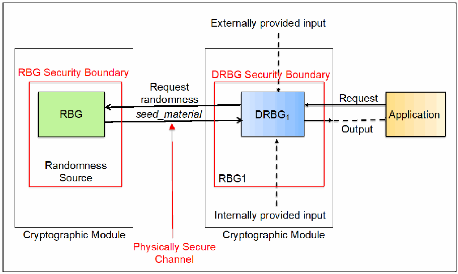
RBG1構成の図。乱数源を含むRBGセキュリティ境界と、DRBG₁を含むDRBGセキュリティ境界は別々の暗号モジュールにある。両者は物理的に安全なチャネルでつながれ、seed_materialを受け渡す。アプリケーションはDRBGへ要求を送り、出力を受け取る。外部提供入力と内部提供入力の経路も示す。
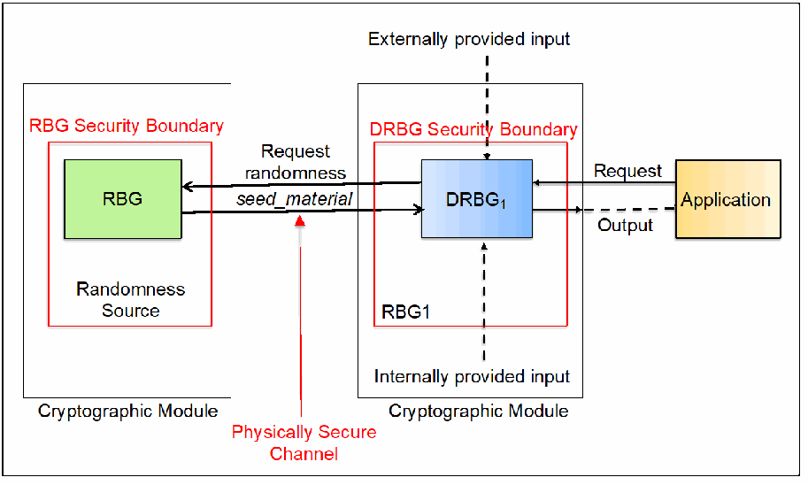
RBG1構成の図。乱数源を含むRBGセキュリティ境界と、DRBG₁を含むDRBGセキュリティ境界は別々の暗号モジュールにある。両者は物理的に安全なチャネルでつながれ、seed_materialを受け渡す。アプリケーションはDRBGへ要求を送り、出力を受け取る。外部提供入力と内部提供入力の経路も示す。
Fig. 15. Generic structure of the RBG1 construction
図15. RBG1構成の一般的な構造
未レビュー訳The RBG for instantiating DRBG must be either 1) an RBG2(P) construction that supports a
DRBG1のインスタンス化に使用するRBGは、次のいずれかでなければならない。1）RBG2（P）構成であり、RBG1構成からの
未レビュー訳₁
未レビュー訳reseed request from the RBG1 construction (see Sec. 5), 2) an RBG3 construction (see Sec. 6), or 3) the root of a tree of RBGC constructions with an RBG3 construction or a physical full-entropy source as the initial randomness source (see Sec. 7). The root is immediately reseeded before generating the seed material. A physically secure channel between the randomness source and DRBG is used to securely transport the seed material required for DRBG instantiation. An
再シード要求をサポートする（第5節を参照）、2）RBG3構成（第6節を参照）、または3）RBG3構成もしくは物理的な完全エントロピー源を初期乱数源とするRBGC構成ツリーのルート（第7節を参照）。シード材料を生成する直前にルートを再シードする。乱数源とDRBGの間で物理的に保護されたチャネルを使用し、DRBGのインスタンス化に必要なシード材料を安全に転送する。さらに
未レビュー訳₁
未レビュー訳optional recommended personalization string and optional additional input may be provided from within the DRBG’s cryptographic module or from outside of that module (see Sec. 2.4.1).
DRBGの暗号モジュール内またはその外部から、任意の推奨パーソナライゼーション文字列および任意の追加入力を指定してもよい（第2.4.1節参照）。
未レビュー訳An external conditioning function is not needed for this design because the output of the RBG used as the randomness source has already been cryptographically processed. The output from an RBG1 construction may be used within the cryptographic module (e.g., to seed a sub-DRBG, as specified in Sec. 4.3) or by an application outside of the RBG1 security boundary. The security strength of the output produced by the RBG1 construction is the minimum of the security strengths provided by the DRBG within the construction and the RBG used as the randomness source to seed the DRBG. Examples of RBG1 and sub-DRBG constructions are provided in Appendices B.2 and B.3, respectively.
この設計では外部条件付け関数は不要である。乱数源として使用するRBGの出力は、すでに暗号学的に処理されているためである。RBG1構成の出力は、暗号モジュール内（例：第4.3節で規定するサブDRBGへのシードとして）でも、RBG1のセキュリティ境界外のアプリケーションでも利用できる。RBG1構成が生成する出力のセキュリティ強度は、構成内のDRBGと、そのDRBGへのシードに使う乱数源RBGが提供するセキュリティ強度の小さい方である。RBG1構成とサブDRBG構成の例は、それぞれ付録B.2とB.3に示す。
未レビュー訳4.1. Conceptual Interfaces
4.1. 概念インターフェース
未レビュー訳Interfaces to the DRBG within an RBG1 construction include requests for instantiating the DRBG and generating pseudorandom bits (see Sec. 4.2.1 and 4.2.2, respectively). A reseed of the RBG1 construction cannot be performed because the randomness source is not available after instantiation.
RBG1構成内のDRBGへのインターフェースには、DRBGのインスタンス化要求と擬似乱数ビットの生成要求が含まれる（それぞれ第4.2.1節および第4.2.2節参照）。インスタンス化後は乱数源を利用できないため、RBG1構成の再シードは実行できない。
未レビュー訳4.1.1. Instantiating the DRBG in the RBG1 Construction
4.1.1. RBG1構成におけるDRBGのインスタンス化
未レビュー訳The DRBG within the RBG1 construction (DRBG ) may be instantiated by an application at any 1 security strength possible for the DRBG design using the DRBG_Instantiate_request discussed in Sec. 2.8.1.1:
RBG1構成内のDRBG（DRBG₁）は、第2.8.1.1節で説明するDRBG_Instantiate_requestを使用し、DRBG設計で実現可能な任意のセキュリティ強度でアプリケーションがインスタンス化してよい：
未レビュー訳(status, RBG1_DRBG1_state_handle) = DRBG_Instantiate_request (s, personalization_string).
(status, RBG1_DRBG1_state_handle) = DRBG_Instantiate_request (s, personalization_string).
未レビュー訳The DRBG_Instantiate_request received by DRBG from an application shall result in the 1 execution of the DRBG_Instantiate function within DRBG (see Sec. 2.8.1.1):
アプリケーションからDRBG_Instantiate_requestを受け取ったDRBG₁は、DRBG_Instantiate関数を実行しなければならない
未レビュー訳₁（第2.8.1.1節参照）。
未レビュー訳(status, RBG1_DRBG1_state_handle) = DRBG_Instantiate(s, personalization_string).
(status, RBG1_DRBG1_state_handle) = DRBG_Instantiate(s, personalization_string).
未レビュー訳The status returned by the DRBG_Instantiate function shall be returned to the requesting application in response to the DRBG_Instantiate_request. RBG1_ DRBG1_state_handle is the state handle for DRBG ’s internal state; the state handle may be Null.
DRBG_Instantiate関数が返すstatusは、DRBG_Instantiate_requestに対する応答として要求元アプリケーションに返さなければならない。状態ハンドルRBG1_DRBG1_state_handleは、DRBG
未レビュー訳₁の内部状態を示す。この状態ハンドルはNullでもよい。
未レビュー訳The DRBG_Instantiate function within DRBG shall use an external RBG (i.e., the randomness 1 source) to obtain the seed_material necessary for establishing the DRBG’s security strength.
DRBG_Instantiate関数は、DRBG₁のセキュリティ強度を確立するために必要なseed_materialを取得するため、外部RBG（すなわち乱数源）を使用しなければならない。
未レビュー訳In SP 800-90A, the DRBG_Instantiate function specifies the use of a Get_randomness_source_input call to obtain seed material from the randomness source for instantiation (see Sec. 2.8.1.4 in this document and [SP_800-90A]). For an RBG1 construction, an approved external RBG2(P), RBG3, or root RBGC construction must be used as the randomness source (see Sec. 5, 6, and 7, respectively).
SP 800-90Aでは、DRBG_Instantiate関数により、インスタンス化に必要なシード材料を乱数源から取得するためGet_randomness_source_input呼び出しを行うよう規定されている（本書第2.8.1.4節および[SP_800-90A]参照）。RBG1構成では、承認された外部RBG2(P)、RBG3、またはRBGCルート構成を乱数源として使用しなければならない（それぞれ第5、6、7節参照）。
未レビュー訳If the randomness source is an RBG2(P) construction (see Fig. 16), the RBG2(P) construction must be reseeded using its internal entropy source(s) before generating bits to be provided to DRBG .
乱数源がRBG2(P)構成（図16参照）の場合、RBG2(P)構成は、DRBG
未レビュー訳₁に提供するビットを生成する前に、内部エントロピー源を用いて再シードしなければならない。
未レビュー訳The Get_randomness_source_input call in the DRBG_Instantiate function of DRBG shall be
DRBG_Instantiate関数内のGet_randomness_source_input呼び出しは、DRBG
未レビュー訳₁については、
未レビュー訳replaced by a reseed request followed by a generate request to the RBG2(P) construction that is serving as the randomness source (see steps 1a and 2a below).
乱数源として機能するRBG2(P)構成への再シード要求と、それに続く生成要求に置き換えなければならない（以下の手順1aおよび2a参照）。
未レビュー訳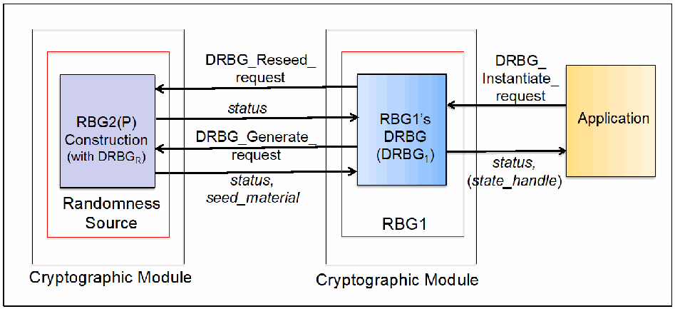
図16。暗号モジュール内の乱数源はRBG2(P)構成（DRBG_Rを含む）。RBG1のDRBG（DRBG₁）へDRBG_Reseed_requestおよびDRBG_Generate_requestを送り、statusとseed_materialを返す。アプリケーションはDRBG_Instantiate_requestを送信し、statusとstate_handleを受け取る。
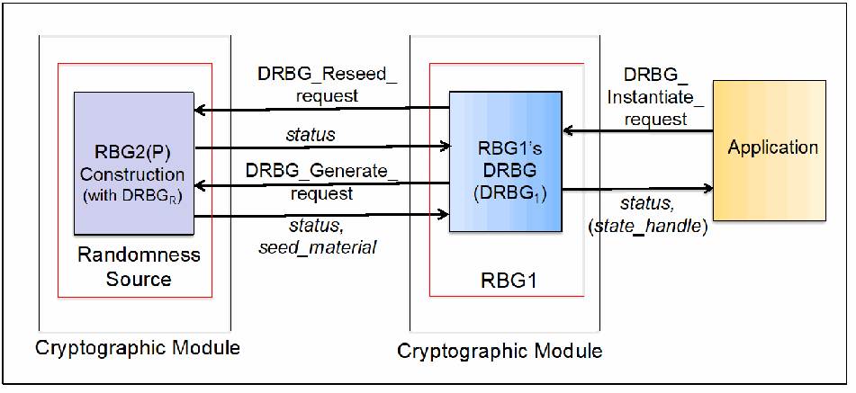
図16の重複図版。RBG2(P)構成を乱数源としてRBG1のDRBGをインスタンス化する流れ。RBG2(P)、DRBG_R、RBG1のDRBG₁、アプリケーション間の再シード・生成要求、status、seed_material、state_handleを示す。
Fig. 16. Instantiation using an RBG2(P) construction as a randomness source
図16. 乱数源としてRBG2(P)構成を使用するインスタンス化
未レビュー訳If the randomness source is an RBG3 construction (as shown in Fig. 17), the Get_randomness_source_input call in the DRBG_Instantiate function of DRBG shall be
乱数源がRBG3構成（図17参照）の場合、DRBG_Instantiate関数内のGet_randomness_source_input呼び出しはDRBG
未レビュー訳₁において
未レビュー訳replaced by the appropriate call to the RBG3 generate function (see Sec. 2.8.3.2, 6.4.1.2, and 6.5.1.2 and steps 1b and 2b below).
RBG3生成関数への適切な呼び出しに置き換えなければならない（第2.8.3.2、6.4.1.2および6.5.1.2節ならびに以下の手順1bおよび2b参照）。
未レビュー訳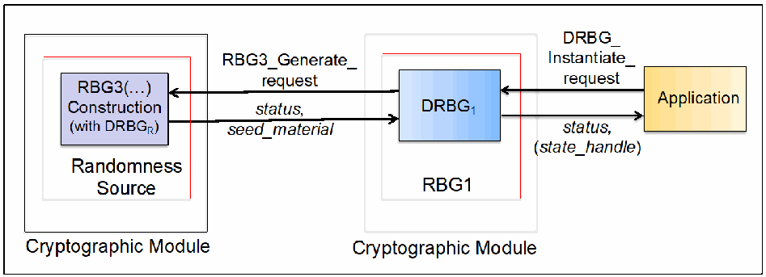
図17。RBG3(...)構成（DRBG_Rを含む）を乱数源として、RBG1内のDRBG₁をインスタンス化する。RBG3_Generate_requestとseed_material、DRBG_Instantiate_request、status、state_handle、暗号モジュールの境界を示す。
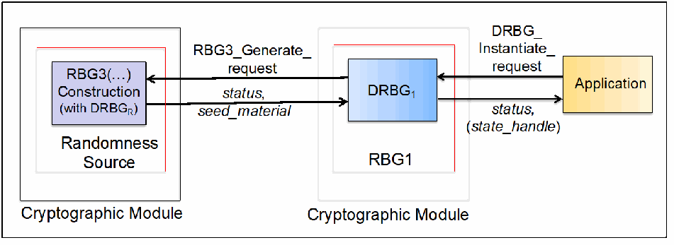
図17の重複図版。RBG3(XOR)またはRBG3(RS)構成を乱数源として、RBG1内のDRBG₁をインスタンス化する流れ。RBG3_Generate_request、seed_material、status、state_handle、アプリケーションおよび暗号モジュール境界を示す。
Fig. 17. Instantiation using an RBG3(XOR) or RBG3(RS) construction as a randomness source
図17. 乱数源としてRBG3(XOR)構成またはRBG3(RS)構成を使用するインスタンス化
未レビュー訳If the randomness source for RBG1 is the root of a tree of RBGC constructions (see Fig. 18), its initial randomness source must be an RBG3 construction or a physical full-entropy source (see Sec. 7) that is used to reseed the root before the root generates seed material for the RBG1 construction. The Get_randomness_source_input call in the DRBG_Instantiate function of DRBG shall be replaced by a reseed request and a generate request that is sent to the root RBGC
RBG1の乱数源がRBGC構成ツリーのルート（図18参照）である場合、初期乱数源はRBG3構成または物理的な完全エントロピー源（第7節参照）でなければならない。これは、ルートがRBG1構成用のシード材料を生成する前にルートを再シードするために用いられる。DRBG_Instantiate関数内のDRBG
未レビュー訳₁に対するGet_randomness_source_input呼び出しは、
未レビュー訳construction (see Sec. 7.2.1.2).
RBGCルート構成に送る再シード要求および生成要求に置き換えなければならない（第7.2.1.2節参照）。
未レビュー訳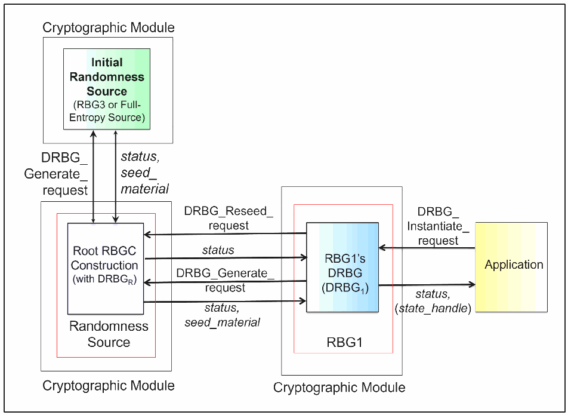
図18。初期乱数源（RBG3または完全エントロピー源）でRBGCルートを再シードし、そのルートからRBG1内のDRBG₁へシード材料を供給する。図中にはRoot RBGC、DRBG_R、RBG1、DRBG_Instantiate_request、DRBG_Reseed_request、DRBG_Generate_request、status、seed_material、state_handle、Application、Cryptographic Moduleのラベルがある。
Fig. 18: Instantiation using the root of a tree of RBGC constructions as a randomness source
図18：乱数源としてRBGC構成ツリーのルートを使用するインスタンス化
未レビュー訳Let DRBG be the DRBG to be instantiated within the RBG1 construction, and let DRBG be the
RBG1構成内でインスタンス化する対象をDRBG
未レビュー訳₁とし、乱数源内で使用するDRBGをDRBG
未レビュー訳ᴿとする。
未レビュー訳DRBG used within the randomness source (i.e., an RBG2(P), RBG3, or RBGC construction). Let s be the security strength to be instantiated for DRBG . DRBG_Reseed_request and
DRBGᴿは、乱数源（すなわちRBG2(P)、RBG3またはRBGC構成）内で使用するDRBGである。sをDRBG
未レビュー訳₁に設定するセキュリティ強度とする。DRBG_Reseed_requestと
未レビュー訳DRBG_Generate_request are used by an application to request the generation and reseed of
DRBG_Generate_requestは、アプリケーションが乱数源内のDRBGᴿに生成および再シードを要求するために用いる。
未レビュー訳). Let DRBGR_state_handle be the state
DRBG_R_state_handle
未レビュー訳the DRBG within the randomness source (i.e., DRBG
は乱数源内のDRBG
未レビュー訳ᴿ
未レビュー訳handle for DRBG . Let keylen be the length of the key used by the cryptographic primitive, and
の状態ハンドルである。keylenを暗号プリミティブで使用する鍵の長さとし、
未レビュー訳output_lenを
未レビュー訳let output_len be the length of the cryptographic primitive’s output block.
暗号プリミティブの出力ブロック長とする。
未レビュー訳Upon receiving the instantiation request from the application, DRBG is instantiated as follows:
アプリケーションからインスタンス化要求を受け取ると、DRBG
未レビュー訳₁は次のとおりインスタンス化される：
未レビュー訳1.When an RBG1 construction is instantiating a CTR_DRBG without a derivation function, keylen + output_len bits shall be obtained from the randomness source as follows:
1.RBG1構成が導出関数なしのCTR_DRBGをインスタンス化する場合、keylen + output_lenビットを乱数源から次のように取得しなければならない：
未レビュー訳a. If the randomness source is an RBG2(P) or root RBGC construction (see Fig. 16 and Fig. 18, respectively), the Get_randomness_source_input call in the DRBG_Instantiate function of DRBG is replaced by a request to reseed DRBG 1
a. 乱数源がRBG2(P)構成またはRBGCルート構成（それぞれ図16および図18参照）の場合、DRBG₁のDRBG_Instantiate関数内にあるGet_randomness_source_input呼び出しを、DRBG
未レビュー訳ᴿへの再シード要求に置き換え、
未レビュー訳(i.e., the DRBG within the RBG2(P) or root RBGC construction) and followed by a request to generate bits:
ビット生成要求を続ける：
未レビュー訳•status = DRBG_Reseed_request(DRBGR_state_handle, additional_input).
•status = DRBG_Reseed_request(DRBG_R_state_handle, additional_input).
未レビュー訳•If (status ≠ SUCCESS), then return (status, Invalid_state_handle).
•If (status ≠ SUCCESS), then return (status, Invalid_state_handle).
未レビュー訳•(status, seed_material) = DRBG_Generate_request(DRBGR_state_handle, keylen + output_len, s, additional_input).
•(status, seed_material) = DRBG_Generate_request(DRBG_R_state_handle, keylen + output_len, s, additional_input).
未レビュー訳•If (status ≠ SUCCESS), then return (status, Invalid_state_handle).
•If (status ≠ SUCCESS), then return (status, Invalid_state_handle).
未レビュー訳DRBG_Reseed_request and DRBG_Generate_request are used here to indicate requests for the DRBG within the randomness source (DRBG ) to execute
ここでDRBG_Reseed_requestおよびDRBG_Generate_requestは、乱数源内のDRBG
未レビュー訳ᴿに対して、
未レビュー訳the DRBG_Reseed function and DRBG_Generate function within DRBG (see
DRBG_Reseed関数およびDRBG_Generate関数の実行を要求する呼び出しを示す。これらの関数はDRBG
未レビュー訳ᴿ内のものである
未レビュー訳Sec. 2.8.1.3, and 2.8.1.2, respectively).17
（それぞれ第2.8.1.3節および第2.8.1.2節参照）。¹⁷
未レビュー訳b. If the randomness source is an RBG3(XOR) or RBG3(RS) construction (see Fig. 17), the Get_randomness_source_input call in the DRBG_Instantiate function of DRBG is replaced by a request for the generation of random bits:
b. 乱数源がRBG3(XOR)構成またはRBG3(RS)構成（図17参照）の場合、DRBG_Instantiate関数内のGet_randomness_source_input呼び出しをDRBG
未レビュー訳₁に対する乱数ビット生成要求に置き換える：
未レビュー訳•(status, seed_material) = RBG3_Generate_request(DRBG _state_handle, R keylen + output_len, additional_input).
•(status, seed_material) = RBG3_Generate_request(DRBG_R_state_handle, keylen + output_len, additional_input).
未レビュー訳•If (status ≠ SUCCESS), then return (status, Invalid_state_handle).
•If (status ≠ SUCCESS), then return (status, Invalid_state_handle).
未レビュー訳RBG3_Generate_request is intended to result in the execution of the DRBG_Generate function in DRBG (see Sec. 2.8.3.1).18 R
RBG3_Generate_requestは、DRBG_R内のDRBG_Generate関数を実行させることを意図する（第2.8.3.1節参照）。¹⁸
未レビュー訳2.When an RBG1 construction is instantiating any other DRBG (including a CTR_DRBG with a derivation function19), 3s/2 bits shall be obtained from a randomness source that provides a security strength of at least s bits.
2.RBG1構成が他のDRBG（導出関数付きCTR_DRBG¹⁹を含む）をインスタンス化する場合、少なくともsビットのセキュリティ強度を提供する乱数源から3s/2ビットを取得しなければならない。
未レビュー訳a. If the randomness source is an RBG2(P) or root RBGC construction (see Fig. 16 and Fig. 18, respectively), the Get_randomness_source_input call in DRBG is
a. 乱数源がRBG2(P)構成またはRBGCルート構成（それぞれ図16および図18参照）の場合、DRBG
未レビュー訳₁のGet_randomness_source_input呼び出しは、
未レビュー訳replaced by a request to reseed DRBG , followed by a request to generate bits: R
DRBG_Rへの再シード要求に置き換え、その後ビット生成要求を行う：
未レビュー訳•status = DRBG_Reseed_request(DRBGR_state_handle, additional_input).
•status = DRBG_Reseed_request(DRBG_R_state_handle, additional_input).
未レビュー訳•If (status ≠ SUCCESS), then return (status, Invalid_state_handle).
•If (status ≠ SUCCESS), then return (status, Invalid_state_handle).
未レビュー訳•(status, seed_material) = DRBG_Generate_request(DRBGR_state_handle,
•(status, seed_material) = DRBG_Generate_request(DRBG_R_state_handle,
未レビュー訳3s/2, s, additional_input).
3s/2, s, additional_input).
未レビュー訳•If (status ≠ SUCCESS), then return (status, Invalid_state_handle).
•If (status ≠ SUCCESS), then return (status, Invalid_state_handle).
未レビュー訳DRBG_Reseed_request and DRBG_Generate_request are used here to indicate requests for the DRBG within the randomness source (DRBG ) to execute
ここでDRBG_Reseed_requestおよびDRBG_Generate_requestは、乱数源内のDRBG
未レビュー訳ᴿに対する
未レビュー訳the DRBG_Reseed function and DRBG_Generate function within DRBG (see
DRBG_Reseed関数およびDRBG_Generate関数の実行要求を示す。これらの関数はDRBG
未レビュー訳ᴿ内のものである
未レビュー訳Sec. 2.8.1.3 and 2.8.1.2, respectively).20
（それぞれ第2.8.1.3節および第2.8.1.2節参照）。²⁰
未レビュー訳b. If the randomness source is an RBG3(XOR) or RBG3(RS) construction (see Fig. 17), the Get_randomness_source_input call in DRBG is replaced by a request for the
b. 乱数源がRBG3(XOR)構成またはRBG3(RS)構成（図17参照）の場合、DRBG_Instantiate関数内のGet_randomness_source_input呼び出しはDRBG
未レビュー訳₁について
未レビュー訳generation of random bits:
乱数ビット生成要求に置き換える：
未レビュー訳•(status, seed_material) = RBG3_DRBG_Generate_request(DRBG _state_handle, 3s/2, R additional_input).
•(status, seed_material) = RBG3_DRBG_Generate_request(DRBG_R_state_handle, 3s/2, additional_input).
未レビュー訳•If (status ≠ SUCCESS), then return (status, Invalid_state_handle).
•If (status ≠ SUCCESS), then return (status, Invalid_state_handle).
未レビュー訳RBG3_DRBG_Generate_request is intended to result in the execution of the DRBG_Generate function in DRBG (see Sec. 2.8.3.1).21 R
RBG3_DRBG_Generate_requestは、DRBG_R内のDRBG_Generate関数を実行させることを意図する（第2.8.3.1節参照）。²¹
未レビュー訳4.1.2. Requesting Pseudorandom Bits
4.1.2. 擬似乱数ビットの要求
未レビュー訳As discussed in Sec. 2.8.1.2, an application requests the RBG1 construction to generate bits as follows:
第2.8.1.2節で説明したとおり、アプリケーションは次のようにRBG1構成にビット生成を要求する：
未レビュー訳(status, returned_bits) = DRBG_Generate_request(RBG1_DRBG1_state_handle,
(status, returned_bits) = DRBG_Generate_request(RBG1_DRBG1_state_handle,
未レビュー訳requested_number_of_bits, s, additional_input).
requested_number_of_bits, s, additional_input).
未レビュー訳The DRBG_Generate_request results in the execution of the DRBG_Generate function within
DRBG_Generate_requestは、
未レビュー訳DRBG :
DRBG_Generate関数をDRBG
未レビュー訳₁内で実行させる：
未レビュー訳(status, returned_bits) = DRBG_Generate(RBG1_DRBG1_state_handle,
(status, returned_bits) = DRBG_Generate(RBG1_DRBG1_state_handle,
未レビュー訳requested_number_of_bits, s, additional_input).
requested_number_of_bits, s, additional_input).
未レビュー訳The status returned by the DRBG_Generate function shall be returned to the requesting application. If the status indicates a successful process, the returned_bits shall also be provided to the application in response to the request.
DRBG_Generate関数から返されたstatusは要求元アプリケーションに返さなければならない。処理が成功したことをstatusが示す場合、returned_bitsも要求への応答としてアプリケーションに提供しなければならない。
未レビュー訳4.2. Using an RBG1 Construction With Subordinate DRBGs (Sub-DRBGs)
4.2. RBG1構成と従属DRBG（sub-DRBG）の使用
未レビュー訳Figure 19 depicts an example of the use of optional subordinate DRBGs (sub-DRBGs) within the security boundary of an RBG1 construction. The DRBGs used by the RBG1 construction and each sub-DRBG shall use different instantiations of the same DRBG implementation (i.e., each instantiation is considered as a separate DRBG and has a different internal state (see Sec. 2.4.1).
図19に、RBG1構成のセキュリティ境界内で任意の従属DRBG（sub-DRBG）を使用する例を示す。RBG1構成で使用するDRBGと各sub-DRBGは、同じDRBG実装をそれぞれ別個にインスタンス化しなければならない。つまり各インスタンス化は別個のDRBGとして扱われ、異なる内部状態を持つ（第2.4.1節参照）。
未レビュー訳The DRBG used by the RBG1 construction is used as the randomness source to provide separate outputs to instantiate each of the sub-DRBGs.
RBG1構成が使用するDRBGは、各sub-DRBGをインスタンス化するための個別の出力を提供する乱数源として使われる。
未レビュー訳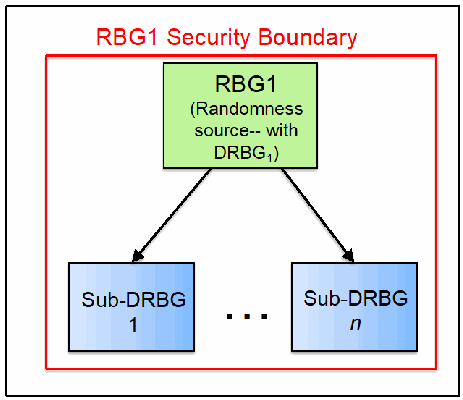
図19。RBG1セキュリティ境界内のRBG1（乱数源：DRBG₁）から、sub-DRBG₁およびsub-DRBGₙへ出力を渡す構成。
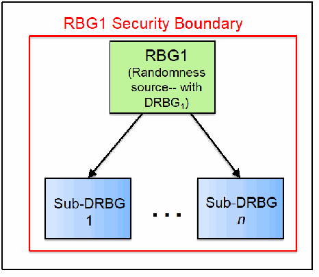
図19の重複図版。RBG1セキュリティ境界内に、乱数源としてDRBG₁を使うRBG1と複数のsub-DRBG（番号1からn）を配置する。
Fig. 19. RBG1 construction with sub-DRBGs
図19. sub-DRBGを備えるRBG1構成
未レビュー訳Let DRBG be the DRBG used by the RBG1 construction itself, with RBG1_DRBG1_state_handle
RBG1構成自体が使用するDRBGをDRBG
未レビュー訳₁とし、
未レビュー訳used as the state handle for the internal state of DRBG . Let sub-DRBGx_state_handle be the
RBG1_DRBG1_state_handleをDRBG₁の内部状態ハンドルとして使用する。また、
未レビュー訳sub-DRBGₓ_state_handleは
未レビュー訳state handle for the internal state of sub-DRBG .
sub-DRBG
未レビュー訳ₓの内部状態を示す状態ハンドルである。
未レビュー訳The sub-DRBGs have the following characteristics:
sub-DRBGには次の特性がある：
未レビュー訳1.Only one layer of sub-DRBGs is allowed.
1.sub-DRBGは1階層のみ許可される。
未レビュー訳2.Sub-DRBG outputs are considered as outputs of the RBG1 construction.
2.sub-DRBGの出力はRBG1構成の出力とみなされる。
未レビュー訳3.The security strength that can be provided by a sub-DRBG is no more than the security strength of DRBG (i.e., the DRBG of the RBG1 construction that is serving as the 1 randomness source for the sub-DRBG).
3.sub-DRBGが提供できるセキュリティ強度は、DRBG₁（すなわち、sub-DRBGの乱数源として機能するRBG1構成内のDRBG）が提供するセキュリティ強度以下である。
未レビュー訳4.Sub-DRBGs cannot provide output with full entropy.
4.sub-DRBGは完全エントロピーを持つ出力を提供できない。
未レビュー訳5.The number of sub-DRBGs that can be instantiated is limited only by the practical considerations associated with the implementation or application.
5.インスタンス化できるsub-DRBGの数は、実装またはアプリケーションに伴う実務上の制約だけで決まる。
未レビュー訳4.2.1. Instantiating a Sub-DRBG
4.2.1. sub-DRBGのインスタンス化
未レビュー訳An application may request the RBG1 construction to instantiate a sub-DRBG. Let RBG1_DRBG1_state_handle be the state handle for the DRBG used by the RBG1 construction. The following represents the form of the application’s request for sub-DRBG instantiation:
アプリケーションは、RBG1構成にsub-DRBGのインスタンス化を要求してよい。RBG1_DRBG1_state_handleをRBG1構成が使用するDRBGの状態ハンドルとする。sub-DRBGのインスタンス化要求の形式は次のとおりである：
未レビュー訳(status, sub-DRBGx_state_handle) = Instantiate_sub-DRBG_request(RBG1_DRBG1_state_handle, s, personalization_string).
(status, sub-DRBGx_state_handle) = Instantiate_sub-DRBG_request(RBG1_DRBG1_state_handle, s, personalization_string).
未レビュー訳DRBG executes an Instantiate_sub-DRBG function. The status of the process is returned to the
DRBG₁はInstantiate_sub-DRBG関数を実行する。statusは、成功を示す場合にはstate_handleとともに、
未レビュー訳要求元アプリケーションに
未レビュー訳application with a state handle if the status indicates success.
返される。
未レビュー訳The value of max_personalization_string_length is specified in [SP_800-90A] for the DRBG type.
max_personalization_string_lengthの値は、DRBGの種類ごとに[SP_800-90A]で規定されている。
未レビュー訳Instantiate_sub-DRBG:
Instantiate_sub-DRBG：
未レビュー訳Input:
入力：
未レビュー訳1.s: The requested security strength for the sub-DRBG.
1.s：sub-DRBGに要求するセキュリティ強度。
未レビュー訳2.(Optional) personalization_string: An input that provides personalization information.
2.（任意）personalization_string：パーソナライゼーション情報を与える入力。
未レビュー訳Output to a consuming application:
呼出し元アプリケーションへの出力：
未レビュー訳1.status: The status returned from the Instantiate_sub-DRBG function (see steps 2, 3, 6, and 10). If any status other than SUCCESS is returned, an invalid _state handle shall be returned.
1.status：Instantiate_sub-DRBG関数から返されるstatus（手順2、3、6、10参照）。SUCCESS以外のstatusが返された場合、Invalid_state_handleを返さなければならない。
未レビュー訳2.sub-DRBGx_state_handle: Used to identify the internal state for this sub-DRBG instantiation in subsequent calls to the generate function (see Sec. 4.3.2).
2.sub-DRBGx_state_handle：後続のgenerate関数呼出し（第4.3.2節参照）で、このsub-DRBGインスタンス化の内部状態を識別するために使用する。
未レビュー訳Information retained within the DRBG boundary after instantiation:
インスタンス化後にDRBG境界内に保持する情報：
未レビュー訳The internal states for DRBG and the sub-DRBG instantiation. 1
DRBG₁およびsub-DRBGインスタンス化の内部状態。
未レビュー訳Process:
処理：
未レビュー訳1.Obtain the current internal state of DRBG to get its instantiated security strength 1 (shown as RBG1_DRBG1_security_strength in step 2).
1.1. DRBG₁の現在の内部状態を取得し、確立済みのセキュリティ強度を得る（手順2ではRBG1_DRBG1_security_strengthとして示す）。
未レビュー訳2.If (s > RBG1_DRBG1_security_strength), then return (ERROR_FLAG, Invalid_state_handle).
2.If (s > RBG1_DRBG1_security_strength), then return (ERROR_FLAG, Invalid_state_handle).
未レビュー訳3.If the length of the personalization_string > max_personalization_string_length, return (ERROR_FLAG, Invalid_state_handle).
3.personalization_stringの長さがmax_personalization_string_lengthを超える場合、(ERROR_FLAG, Invalid_state_handle)を返す。
未レビュー訳4.If (s > 192), then s = 256
4.If (s > 192), then s = 256
未レビュー訳Else, if (s ≤ 128), then s = 128.
Else, if (s ≤ 128), then s = 128.
未レビュー訳Else, s = 192.
Else, s = 192.
未レビュー訳Comment: See the instructions below for the value of number_of_bits_to_generate.
コメント：number_of_bits_to_generateの値については、以下の指示を参照。
未レビュー訳5.(status, seed_material) = DRBG_Generate(RBG1_DRBG1_state_handle, number_of_bits_to_generate, s).
5.(status, seed_material) = DRBG_Generate(RBG1_DRBG1_state_handle, number_of_bits_to_generate, s).
未レビュー訳6.If (status ≠ SUCCESS), return (status, Invalid_state_handle).
6.If (status ≠ SUCCESS), return (status, Invalid_state_handle).
未レビュー訳7.working_state_values = Instantiate_algorithm(seed_material, personalization_string).
7.working_state_values = Instantiate_algorithm(seed_material, personalization_string).
未レビュー訳8.Get the sub-DRBGx_state_handle for a currently empty internal state. If an empty internal state cannot be found, return (ERROR_FLAG, Invalid_state_handle).
8.現在空いている内部状態に対応するsub-DRBGx_state_handleを取得する。空いている内部状態が見つからない場合、(ERROR_FLAG, Invalid_state_handle)を返す。
未レビュー訳9.Set the internal state for the new instantiation (e.g., as indicated by sub-DRBGx_state_handle):
9.sub-DRBGの新しいインスタンスの内部状態を設定する（例：sub-DRBGx_state_handleで示される状態）：
未レビュー訳9.1 Record the working_state_values returned from step 7.
9.1 手順7で返されたworking_state_valuesを記録する。
未レビュー訳9.2 Record any administrative information (e.g., the value of s).
9.2 管理情報（例：sの値）を記録する。
未レビュー訳10.Return (SUCCESS, sub-DRBGX_state_handle).
10.Return (SUCCESS, sub-DRBGX_state_handle).
未レビュー訳Step 1 obtains DRBG ’s security strength. A description of the internal state for each DRBG type
手順1ではDRBG
未レビュー訳₁のセキュリティ強度を取得する。各DRBG種別の内部状態は
未レビュー訳is provided in [SP_800-90A].
[SP_800-90A]で説明されている。
未レビュー訳Steps 2 and 3 check the validity of the requested security strength s and the length of any personalization string provided for the instantiation request. An ERROR_FLAG and an invalid state handle are returned to the requesting application if either is unacceptable.
手順2および3では、要求されたセキュリティ強度sと、インスタンス化要求に含まれるパーソナライゼーション文字列の長さが妥当かを確認する。どちらかが許容されない場合、ERROR_FLAGと無効なstate_handleを要求元アプリケーションに返す。
未レビュー訳Step 4 sets the security strength to be established for the sub-DRBG instantiation based on the requested security strength s.
手順4では、要求されたセキュリティ強度sに基づき、sub-DRBGのインスタンス化で確立するセキュリティ強度を設定する。
未レビュー訳Step 5 requests the generation of seed_material at a security strength of s bits using DRBG . The
手順5では、DRBG
未レビュー訳₁を用いて生成要求を行う。
未レビュー訳number_of_bits_to_generate depends on DRBG ’s type:
number_of_bits_to_generateの値はDRBG
未レビュー訳₁の種類によって決まる：
未レビュー訳•When CTR_DRBG without a derivation function is implemented for DRBG , 1 number_of_bits_to_generate = keylen + output_len.
•CTR_DRBGが導出関数なしでDRBG₁用に実装されている場合、number_of_bits_to_generate = keylen + output_len。
未レビュー訳•Otherwise, number_of_bits_to_generate = 3s/2.
•それ以外の場合、number_of_bits_to_generate = 3s/2。
未レビュー訳Step 6 checks the status returned from step 5. If a status of SUCCESS is not returned, the status and an invalid state handle are returned to the requesting application.
手順6では手順5から返されたstatusを確認する。SUCCESSが返されなかった場合、statusと無効なstate_handleを要求元アプリケーションに返す。
未レビュー訳Step 7 invokes the appropriate instantiate algorithm in [SP_800-90A] for DRBG ’s design. Values
手順7では、DRBG
未レビュー訳₁の設計に適した[SP_800-90A]のインスタンス化アルゴリズムを呼び出す。このアルゴリズムは
未レビュー訳for the working state portion of the sub-DRBG’s internal state are returned by the instantiate algorithm.
sub-DRBGの内部状態にあるworking_state_valuesを返す。
未レビュー訳Step 8 assigns a state handle for an available internal state. If no internal state is currently available, an ERROR_FLAG and invalid state handle are returned to the requesting application.
手順8では、利用可能な内部状態にstate_handleを割り当てる。空き状態がない場合、ERROR_FLAGと無効なstate_handleを要求元アプリケーションに返す。
未レビュー訳Step 9 enters the required values into the assigned internal state for the sub-DRBG. Working_state_values will need to be parsed into the appropriate values used for the DRBG algorithm in SP 800-90A.
手順9では、sub-DRBGに割り当てた内部状態へ必要な値を入力する。Working_state_valuesを解析し、SP 800-90AのDRBGアルゴリズムで使用する適切な値に分解する必要がある。
未レビュー訳Step 10 returns a status of SUCCESS and the assigned state handle to the requesting application.
手順10では、SUCCESSのstatusと割り当てたstate_handleを要求元アプリケーションに返す。
未レビュー訳4.2.2. Requesting Random Bits From a Sub-DRBG
4.2.2. sub-DRBGへの乱数ビット要求
未レビュー訳As discussed in Sec. 2.8.1.2, pseudorandom bits may be requested from a sub-DRBG by an application:
第2.8.1.2節で説明したとおり、アプリケーションはsub-DRBGに擬似乱数ビットを要求してよい：
未レビュー訳(status, returned_bits) = DRBG_Generate request(sub_DRBGx_state_handle,
(status, returned_bits) = DRBG_Generate_request(sub-DRBGx_state_handle,
未レビュー訳requested_number_of_bits, requested_security_strength, additional_input).
requested_number_of_bits, requested_security_strength, additional_input).
未レビュー訳The generate request received by the sub-DRBG shall result in the execution of the DRBG_Generate function:
sub-DRBGが受け取ったgenerate要求により、DRBG_Generate関数を実行しなければならない：
未レビュー訳(status, returned_bits) = DRBG_Generate(sub_DRBGx_state_handle,
(status, returned_bits) = DRBG_Generate(sub-DRBGx_state_handle,
未レビュー訳requested_number_of_bits, requested_security_strength, additional_input).
requested_number_of_bits, requested_security_strength, additional_input).
未レビュー訳The status returned by the DRBG_Generate function shall be returned to the application in response to the request. If the process is successful, the newly generated bits (returned_bits) shall also be provided to the application in response to the DRBG_Generate_request.
DRBG_Generate関数が返すstatusは、要求への応答としてアプリケーションに返さなければならない。処理が成功した場合、新たに生成されたビット（returned_bits）もDRBG_Generate_requestへの応答としてアプリケーションに提供しなければならない。
未レビュー訳4.3. Requirements
4.3. 要件
未レビュー訳4.3.1. RBG1 Construction Requirements
4.3.1. RBG1構成の要件
未レビュー訳An RBG1 construction being instantiated has the following testable requirements (i.e., capable of being tested by the FIPS 140 validation labs):
インスタンス化されるRBG1構成には、次の試験可能な要件（すなわちFIPS 140検証機関が試験可能な要件）がある：
未レビュー訳1.An approved DRBG from [SP_800-90A] whose components can provide the targeted security strength for the RBG1 construction shall be employed.
1.RBG1構成の目標セキュリティ強度を実現できるコンポーネントを備えた、[SP_800-90A]で承認されたDRBGを使用しなければならない。
未レビュー訳2.The components of the RBG1 construction shall be successfully validated for compliance with [SP_800-90A], SP 800-90C, [FIPS_140], and the specification of any other approved algorithm used within the RBG1 construction, as applicable.
2.RBG1構成のコンポーネントは、該当する場合、[SP_800-90A]、SP 800-90C、[FIPS_140]およびRBG1構成内で使用するその他の承認済みアルゴリズムの仕様への準拠について、検証に合格しなければならない。
未レビュー訳3.The RBG1 construction shall not produce any output until it is instantiated.
3.RBG1構成は、インスタンス化されるまで出力を生成してはならない。
未レビュー訳4.The RBG1 construction shall not include a capability to be reseeded.
4.RBG1構成に再シード機能を含めてはならない。
未レビュー訳5.The RBG1 construction shall not permit itself to be instantiated more than once.22
5.RBG1構成は、自身を複数回インスタンス化できてはならない。²²
未レビュー訳6.The randomness source shall be in a separate device from that of the RBG1 construction.
6.乱数源は、RBG1構成とは別のデバイスに配置しなければならない。
未レビュー訳7.For CTR_DRBG with a derivation function, Hash_DRBG, or HMAC_DRBG, 3s/2 bits shall be obtained from a randomness source, where s is the targeted security strength for the DRBG used in the RBG1 construction (DRBG ). 1
7.導出関数付きCTR_DRBG、Hash_DRBGまたはHMAC_DRBGの場合、RBG1構成で使用するDRBG（DRBG₁）の目標セキュリティ強度をsとして、乱数源から3s/2ビットを取得しなければならない。
未レビュー訳8.For CTR_DRBG without a derivation function in the RBG1 construction, keylen + output_len bits shall be obtained from the randomness source, where keylen is the length of the key used by the block cipher used in the RBG1 construction (DRBG ). 1
8.RBG1構成で導出関数なしのCTR_DRBGを使う場合、乱数源からkeylen + output_lenビットを取得しなければならない。keylenは、RBG1構成で使用するブロック暗号の鍵長を表す（DRBG₁）。
未レビュー訳9.An implementation of an RBG1 construction shall verify that the internal state has been updated before the generated output is provided to the requesting entity.
9.RBG1構成の実装は、生成した出力を要求元に渡す前に、内部状態が更新済みであることを確認しなければならない。
未レビュー訳10.The RBG1 construction shall not provide output for generating requests that specify a security strength greater than the instantiated security strength of its DRBG.
10.RBG1構成は、DRBG₁のインスタンス化時のセキュリティ強度を超える強度を指定した生成要求に対して、出力を提供してはならない。
未レビュー訳11.If the RBG1 construction can be used to instantiate a sub-DRBG, the RBG1 construction may directly produce output for an application in addition to instantiating a sub-DRBG.
11.RBG1構成がsub-DRBGのインスタンス化に使用できる場合、sub-DRBGをインスタンス化するだけでなく、アプリケーション向けに直接出力を生成してもよい。
未レビュー訳12.Seed material produced by the RBG1 construction to instantiate a sub-DRBG shall not be used to instantiate other sub-DRBGs nor be provided directly to a consuming application.
12.RBG1構成がsub-DRBGのインスタンス化用に生成したシード材料を、他のsub-DRBGのインスタンス化に使用してはならず、利用側アプリケーションへ直接渡してもならない。
未レビュー訳13.If the seedlife of the DRBG within the RBG1 construction (DRBG ) is ever exceeded or a 1 health test of the DRBG fails, the use of the RBG1 construction shall be terminated.
13.RBG1構成内のDRBG（DRBG₁）のseedlifeを超過した場合、またはDRBGのヘルステストに失敗した場合、RBG1構成の使用を停止しなければならない。
未レビュー訳The non-testable requirements for the RBG1 construction are listed below. If these requirements are not met, no assurance can be obtained about the security of the implementation.
RBG1構成の試験不可能な要件を以下に示す。これらの要件を満たさない場合、実装のセキュリティを保証できない。
未レビュー訳14.The randomness source for the DRBG within an RBG1 construction (DRBG ) must be 1 either 1) a validated RBG2(P) construction with support for reseeding requests, 2) a validated RBG3 construction, or 3) a root RBGC construction that has support for reseed requests using either an RBG3 construction or a physical full-entropy source as its initial randomness source.
14.RBG1構成内のDRBG（DRBG₁）の乱数源は、次のいずれかでなければならない：再シード要求に対応する検証済みRBG2(P)構成、検証済みRBG3構成、または初期乱数源としてRBG3構成か物理的な完全エントロピー源を使い、再シード要求に対応するRBGCルート構成。
未レビュー訳15.The randomness source must provide the requested number of bits at a security strength of s bits or higher, where s is the targeted security strength for the DRBG within the RBG1 construction (DRBG ). 1
15.乱数源は、sビット以上のセキュリティ強度で要求されたビット数を提供しなければならない。sはRBG1構成内のDRBG（DRBG₁）の目標セキュリティ強度である。
未レビュー訳16.The specific output of the randomness source (or portion thereof) that is used for the instantiation of an RBG1 construction must not be used for any other purpose, including for seeding a different instantiation.
16.RBG1構成のインスタンス化に使う乱数源の出力（またはその一部）を、別のインスタンス化のシード設定を含む他の目的に使用してはならない。
未レビュー訳17.If an RBG2(P) construction is used as the randomness source for the RBG1 construction, the RBG2(P) construction must be reseeded immediately before generating bits for each RBG1 instantiation.
17.RBG1構成の乱数源としてRBG2(P)構成を使用する場合、RBG1をインスタンス化するたびにビットを生成する直前に、RBG2(P)構成を再シードしなければならない。
未レビュー訳18.If a root RBGC construction is used as the randomness source for the RBG1 construction, the initial randomness source for the root must be an RBG3 construction or a physical full-entropy source, and the root RBGC construction must be reseeded immediately before generating bits for each RBG1 instantiation.
18.RBG1構成の乱数源としてRBGCルート構成を使用する場合、ルートの初期乱数源はRBG3構成または物理的な完全エントロピー源でなければならない。また、RBG1をインスタンス化するたびにビットを生成する直前に、RBGCルート構成を再シードしなければならない。
未レビュー訳19.A physically secure channel must be used to insert the seed material from the randomness source into the DRBG of the RBG1 construction (DRBG ). 1
19.乱数源からRBG1構成内のDRBG（DRBG₁）へシード材料を挿入するには、物理的に安全なチャネルを使用しなければならない。
未レビュー訳4.3.2. Sub-DRBG Requirements
4.3.2. sub-DRBGの要件
未レビュー訳A sub-DRBG has the following testable requirements (i.e., capable of being tested by the FIPS 140 validation labs):
sub-DRBGには、次の試験可能な要件（FIPS 140検証機関が試験可能な要件）がある：
未レビュー訳1.The randomness source for a sub-DRBG shall be the DRBG used by the RBG1 construction.
1.sub-DRBGの乱数源は、RBG1構成が使用するDRBGでなければならない。
未レビュー訳2.A sub-DRBG shall use the same implementation as its randomness source (i.e., the DRBG used by the RBG1 construction).
2.sub-DRBGは、その乱数源（すなわちRBG1構成が使用するDRBG）と同じ実装を使用しなければならない。
未レビュー訳3.The internal states used by the DRBG within the RBG1 construction and each sub-DRBG shall be separate.
3.RBG1構成内のDRBGおよび各sub-DRBGが使用する内部状態は、互いに分離されていなければならない。
未レビュー訳4.A sub-DRBG shall not serve as a randomness source for another sub-DRBG.
4.sub-DRBGを、別のsub-DRBGの乱数源として使用してはならない。
未レビュー訳5.The output from the RBG1 construction that is used for sub-DRBG instantiation shall not be output from the security boundary that contains the RBG1 construction and sub-DRBG(s).
5.sub-DRBGのインスタンス化に使用するRBG1構成の出力を、RBG1構成とsub-DRBG群を含むセキュリティ境界の外へ出力してはならない。
未レビュー訳6.The output from the RBG1 construction that is used for sub-DRBG instantiation shall not be used for any other purpose, including for seeding a different sub-DRBG.
6.sub-DRBGのインスタンス化に使用するRBG1構成の出力を、別のsub-DRBGへのシード設定を含む他の目的に使用してはならない。
未レビュー訳7.The security strength for a target sub-DRBG shall not exceed the security strength that is supported by the RBG1 construction.
7.対象sub-DRBGのセキュリティ強度は、RBG1構成がサポートするセキュリティ強度を超えてはならない。
未レビュー訳8.For CTR_DRBG with a derivation function, Hash_DRBG, or HMAC_DRBG, 3s/2 bits shall be obtained from the RBG1 construction for instantiation of the sub-DRBG, where s is the requested security strength for the target sub-DRBG.
8.導出関数付きCTR_DRBG、Hash_DRBGまたはHMAC_DRBGの場合、対象sub-DRBGの要求セキュリティ強度をsとして、sub-DRBGのインスタンス化にRBG1構成から3s/2ビットを取得しなければならない。
未レビュー訳9.For CTR_DRBG without a derivation function used by the sub-DRBG, keylen + output_len bits shall be obtained from the RBG1 construction for instantiation, where keylen is the length of the key to be used by the block cipher in the target sub-DRBG.
9.sub-DRBGが導出関数なしのCTR_DRBGを使用する場合、インスタンス化用にRBG1構成からkeylen + output_lenビットを取得しなければならない。keylenは対象sub-DRBGのブロック暗号で使用する鍵の長さである。
未レビュー訳10.A sub-DRBG shall not produce output until it is instantiated.
10.sub-DRBGは、インスタンス化されるまで出力を生成してはならない。
未レビュー訳11.A sub-DRBG shall not provide output for generating requests that specify a security strength greater than the instantiated security strength of the sub-DRBG.
11.sub-DRBGは、インスタンス化時のセキュリティ強度を超える強度を指定した生成要求に出力を提供してはならない。
未レビュー訳12.An implementation of a sub-DRBG shall verify that the internal state has been updated before the generated output is provided to the requesting entity.
12.sub-DRBGの実装は、生成出力を要求元に渡す前に内部状態が更新済みであることを確認しなければならない。
未レビュー訳13.The sub-DRBG shall not be reseeded.
13.sub-DRBGを再シードしてはならない。
未レビュー訳14.If the seedlife of a sub-DRBG is ever exceeded or a health test of the sub-DRBG fails, the use of the sub-DRBG shall be terminated.
14.sub-DRBGのseedlifeを超過した場合、またはsub-DRBGのヘルステストに失敗した場合、sub-DRBGの使用を停止しなければならない。
未レビュー訳A non-testable requirement for a sub-DRBG (i.e., not capable of being tested by the FIPS 140 validation labs) is:
sub-DRBGには、試験不可能な要件（すなわちFIPS 140検証機関が試験できない要件）が1つある：
未レビュー訳15.The output of a sub-DRBG must not be used as seed material for other DRBGs (e.g., the DRBGs in other RBGs) or sub-DRBGs.
15.sub-DRBGの出力を、他のDRBG（例：別のRBG内のDRBG）またはsub-DRBGのシード材料として使用してはならない。
未レビュー訳5. RBG2 Constructions Based on Physical and/or Non-Physical Entropy Sources
5. 物理および／または非物理エントロピー源に基づくRBG2構成
未レビュー訳An RBG2 construction is a cryptographically secure RBG with continuous access to one or more validated entropy sources within its RBG security boundary. The RBG is instantiated before use and generates outputs on demand. An RBG2 construction may (optionally) be implemented to support reseeding requests from a consuming application (e.g., providing prediction resistance for the next output of the RBG2 construction to mitigate a possible compromise of previous internal states) and/or to (optionally) be reseeded in accordance with implementation-selected criteria.
RBG2構成は、RBGセキュリティ境界内にある1つ以上の検証済みエントロピー源へ継続的にアクセスできる、暗号学的に安全なRBGである。RBGは使用前にインスタンス化され、要求に応じて出力を生成する。RBG2構成は、利用側アプリケーションからの再シード要求（例：以前の内部状態が侵害された可能性を軽減するため、次の出力に予測耐性を与える）に対応するよう任意で実装してよい。また、実装者が選択する基準に従って任意に再シードしてもよい。
未レビュー訳If a consuming application requires full-entropy output, an RBG3 construction from Sec. 6 needs to be used rather than an RBG2 construction.
利用側アプリケーションが完全エントロピーの出力を必要とする場合は、RBG2構成ではなく第6節のRBG3構成を使用する必要がある。
未レビュー訳An RBG2 construction may be useful for all devices in which an entropy source can be implemented.
エントロピー源を実装できるあらゆるデバイスで、RBG2構成が有用となる可能性がある。
未レビュー訳5.1. RBG2 Description
5.1. RBG2の説明
未レビュー訳The DRBG for an RBG2 construction is contained within the same RBG security boundary and cryptographic module as its validated entropy sources (see Fig. 20).
RBG2構成のDRBGは、検証済みエントロピー源と同じRBGセキュリティ境界および暗号モジュール内に配置される（図20参照）。
未レビュー訳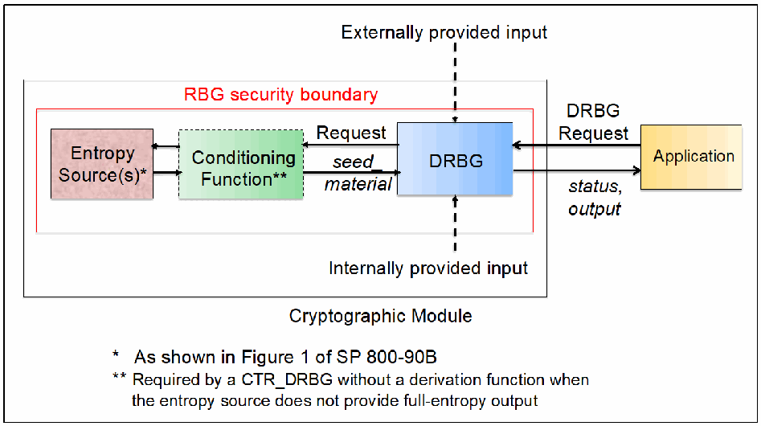
図20。暗号モジュール内にRBGセキュリティ境界を示す。境界内にエントロピー源、条件付け関数、DRBGがあり、外部アプリケーションとの要求・statusおよび出力の流れを示す。外部提供入力と内部提供入力も示す。* SP 800-90Bの図1参照。** エントロピー源が完全エントロピー出力を提供しない場合、導出関数なしのCTR_DRBGに必要。
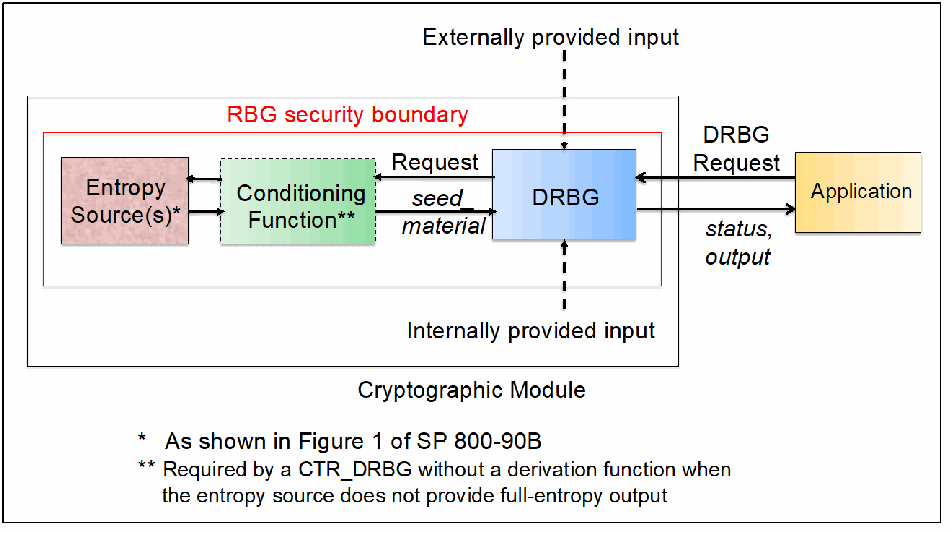
図20の別抽出版。RBGセキュリティ境界内のエントロピー源、条件付け関数、DRBG、暗号モジュール、外部アプリケーションの関係と、入力・要求・seed_material・status・outputの流れを示す。* SP 800-90Bの図1参照。** 完全エントロピー出力を提供しないエントロピー源では、導出関数なしのCTR_DRBGに必要。
Fig. 20. Generic structure of the RBG2 construction
図20. RBG2構成の一般的な構造
未レビュー訳One or more entropy sources are used to provide the entropy bits for both DRBG instantiation and any reseeding of the DRBG. The use of a personalization string and additional input is optional and may be provided from within the cryptographic module or from outside of that module. The output from the RBG may be used within the cryptographic module or by an application outside of the module.
1つ以上のエントロピー源を用いて、DRBGのインスタンス化と再シードの両方に必要なエントロピービットを供給する。パーソナライゼーション文字列および追加入力の使用は任意であり、暗号モジュール内またはその外部から与えてよい。RBGの出力は、暗号モジュール内またはモジュール外のアプリケーションで使用できる。
未レビュー訳An example of an RBG2 construction is provided in Appendix B.4.
RBG2構成の例を付録B.4に示す。
未レビュー訳An RBG2 construction may be implemented to use one or more validated physical and/or non-physical entropy sources for instantiation and reseeding. Two variants of the RBG2 construction may be implemented:
RBG2構成は、インスタンス化と再シードに1つ以上の検証済み物理および／または非物理エントロピー源を使用するよう実装できる。RBG2構成には次の2種類がある：
未レビュー訳1.An RBG2(P) construction uses the output of one or more validated physical entropy sources and (optionally) one or more validated non-physical entropy sources, as discussed in Method 1 of Sec. 2.3 (i.e., only the entropy produced by one or more validated physical entropy sources is counted toward the entropy required for instantiating or reseeding the RBG). Any amount of entropy may be obtained from a non-physical entropy source as long as sufficient entropy has been obtained from the physical entropy sources to fulfill an entropy request. An RBG2(P) construction may exist as part of an RBG3 construction (see Sec. 6).
1.1. RBG2(P)構成は、検証済み物理エントロピー源の出力を使い、任意で検証済み非物理エントロピー源の出力も使う（第2.3節の方法1参照）。つまり、RBGのインスタンス化または再シードに必要なエントロピーとして数えるのは、1つ以上の検証済み物理エントロピー源が生成した分だけである。エントロピー要求を満たすのに十分な物理エントロピーが得られていれば、非物理エントロピー源からは任意量のエントロピーを取得できる。RBG2(P)構成をRBG3構成の一部としてもよい（第6節参照）。
未レビュー訳2.An RBG2(NP) construction uses the output of any validated non-physical or physical entropy sources, as discussed in Method 2 of Sec. 2.3 (i.e., the entropy produced by both validated physical and non-physical entropy sources is counted toward the entropy required for instantiating or reseeding the RBG).
2.2. RBG2(NP)構成は、検証済み非物理または物理エントロピー源の出力を使う（第2.3節の方法2参照）。つまり、RBGのインスタンス化または再シードに必要なエントロピーとして、検証済み物理源と非物理源の両方が生成した分を数える。
未レビュー訳These variants may affect the implementation of a Get_entropy_bitstring process (represented as a Get_entropy_bitstring procedure; see Sec. 2.8.2 and 3.1) by accessing the entropy sources directly or via the Get_conditioned_input or Get_conditioned_full_entropy_input procedures specified in Sec. 3.2.2 during instantiation and reseeding (see Sec. 5.2.1 and 5.2.3). That is, when seeding and reseeding an RBG2(P) construction (including a DRBG within an RBG3 construction, as discussed in Sec. 6), Method 1 in Sec. 2.3 is used to combine the entropy from the entropy sources, and Method 2 is used when instantiating and reseeding an RBG2(NP) construction.
これらの種類によって、Get_entropy_bitstring処理（Get_entropy_bitstring手続きとして表す。第2.8.2節および第3.1節参照）の実装方法が変わる場合がある。エントロピー源へ直接アクセスする方法と、第3.2.2節で規定するGet_conditioned_inputまたはGet_conditioned_full_entropy_inputを介する方法がある。すなわち、RBG2(P)構成（第6節で説明するRBG3構成内のDRBGを含む）のシード設定および再シードでは、エントロピー源からのエントロピーを組み合わせるため第2.3節の方法1を使い、RBG2(NP)構成のインスタンス化および再シードでは方法2を使う。
未レビュー訳5.2. Conceptual Interfaces
5.2. 概念インターフェース
未レビュー訳The RBG2 construction includes requests for instantiating the DRBG (see Sec. 5.2.1) and generating pseudorandom bits (see Sec. 5.2.2). If a reseed capability has been implemented (see Sec. 5.2.3), an RBG2 construction is reseeded when requested by a consuming application or when determined by implementation-selected criteria.
RBG2構成には、DRBGのインスタンス化要求（第5.2.1節参照）と擬似乱数ビットの生成要求（第5.2.2節参照）がある。再シード機能を実装している場合（第5.2.3節参照）、利用側アプリケーションから要求されたとき、または実装者が定める基準に従ってRBG2構成を再シードする。
未レビュー訳5.2.1. RBG2 Instantiation
5.2.1. RBG2のインスタンス化
未レビュー訳An RBG2 construction may be instantiated by an application at any valid23 security strength possible for the DRBG design and its components using an instantiation request (see Sec. 2.8.1.1):
RBG2構成は、インスタンス化要求（第2.8.1.1節参照）を使い、DRBG設計とそのコンポーネントが実現できる任意の有効なセキュリティ強度²³でアプリケーションがインスタンス化してよい：
未レビュー訳(status, RBG2_DRBG_state_handle) = DRBG_Instantiate_request(s, personalization_string).
(status, RBG2_DRBG_state_handle) = DRBG_Instantiate_request(s, personalization_string).
未レビュー訳The request results in the execution of the DRBG_Instantiate function within the DRBG:
この要求により、DRBG内のDRBG_Instantiate関数が実行される：
未レビュー訳(status, RBG2_DRBG_state_handle) = DRBG_Instantiate(s, personalization_string).
(status, RBG2_DRBG_state_handle) = DRBG_Instantiate(s, personalization_string).
未レビュー訳The DRBG_Instantiate function returns the status of the process, which is then provided to the application in response to the request. If the process is successful, a state handle for the instantiation (e.g., RBG2_DRBG_state_handle) is also returned from the DRBG_Instantiate function and may be forwarded to the application.24
DRBG_Instantiate関数は処理のstatusを返し、要求への応答としてアプリケーションに渡す。処理が成功した場合、インスタンス化のstate_handle（例：RBG2_DRBG_state_handle）もDRBG_Instantiate関数から返され、アプリケーションへ転送してよい。²⁴
未レビュー訳An RBG2 construction obtains entropy for its DRBG from one or more validated entropy sources within its boundary, either directly or using an external conditioning function to obtain and process the output of the entropy sources.
RBG2構成は、境界内にある1つ以上の検証済みエントロピー源から、直接または外部条件付け関数を用いてその出力を取得・処理することで、DRBG用のエントロピーを得る。
未レビュー訳[SP_800-90A] uses a Get_randomness_source_input call in the DRBG_Instantiate function to obtain the entropy needed for instantiation. Let counting_method indicate the method for counting entropy from the entropy sources (i.e., Method 1 only counts entropy provided by physical entropy sources, and Method 2 counts entropy from both non-physical and physical entropy sources; see Sec. 2.3). Let keylen be the length of the key to be used by the cryptographic primitive, and let output_len be the length of its output block.
[SP_800-90A]では、インスタンス化に必要なエントロピーを得るため、DRBG_Instantiate関数内でGet_randomness_source_inputを呼び出す。counting_methodは、エントロピー源からのエントロピーの計数方法を示す（第2.3節参照。方法1は物理エントロピー源のエントロピーのみを数え、方法2は非物理と物理の両方を数える）。keylenを暗号プリミティブで使用する鍵の長さ、output_lenを出力ブロックの長さとする。
未レビュー訳1.When the DRBG is a CTR_DRBG without a derivation function, seed material shall be obtained from the entropy sources as follows:
1.DRBGが導出関数なしのCTR_DRBGの場合、次のようにエントロピー源からシード材料を取得しなければならない：
未レビュー訳a. If all entropy sources provide full-entropy output or meet the requirements in [SP_800-90A], the Get_randomness_source_input call is replaced by:
a. すべてのエントロピー源が完全エントロピー出力を提供するか、[SP_800-90A]の要件を満たす場合、Get_randomness_source_input呼び出しを次の処理に置き換える：
未レビュー訳•(status, seed_material) = Get_entropy_bitstring(keylen + output_len, counting_method).
•(status, seed_material) = Get_entropy_bitstring(keylen + output_len, counting_method).
未レビュー訳•If (status ≠ SUCCESS), then return (status, Invalid_state_handle).
•If (status ≠ SUCCESS), then return (status, Invalid_state_handle).
未レビュー訳The output of the entropy source(s) shall be concatenated to obtain the keylen+ output_len full-entropy bits to be returned as seed_material.
エントロピー源の出力を連結し、seed_materialとして返すkeylen + output_lenビットの完全エントロピーを得なければならない。
未レビュー訳b. If one or more entropy sources do not provide full-entropy output, the Get_randomness_source_input call is replaced by: 25
b. 1つ以上のエントロピー源が完全エントロピー出力を提供しない場合、Get_randomness_source_input呼び出しを次の処理に置き換える：²⁵
未レビュー訳•(status, seed_material) = Get_conditioned_full_entropy_input(keylen + output_len, counting_method).
•(status, seed_material) = Get_conditioned_full_entropy_input(keylen + output_len, counting_method).
未レビュー訳•If (status ≠ SUCCESS), then return (status, Invalid_state_handle).
•If (status ≠ SUCCESS), then return (status, Invalid_state_handle).
未レビュー訳3.For CTR_DRBG with a derivation function, Hash_DRBG, or HMAC_DRBG used as the DRBG, the entropy sources shall provide 3s/2 bits of entropy to establish the security strength.
3.導出関数付きCTR_DRBG、Hash_DRBGまたはHMAC_DRBGをDRBGとして使用する場合、セキュリティ強度を確立するため、エントロピー源は3s/2ビットのエントロピーを提供しなければならない。
未レビュー訳a. If the implementer wants full entropy in the bitstring to be provided to the DRBG, the Get_randomness_source_input call is replaced by:
a. DRBGに渡すビット列を完全エントロピーにする場合、Get_randomness_source_input呼び出しを次の処理に置き換える：
未レビュー訳•(status, seed_material) = Get_conditioned_full_entropy_input(3s/2, counting_method).
•(status, seed_material) = Get_conditioned_full_entropy_input(3s/2, counting_method).
未レビュー訳•If (status ≠ SUCCESS), then return (status, Invalid_state_handle).
•If (status ≠ SUCCESS), then return (status, Invalid_state_handle).
未レビュー訳b. Otherwise, the Get_randomness_source_input call is replaced by:
b. それ以外の場合は、Get_randomness_source_input呼び出しを次の処理に置き換える：
未レビュー訳•(status, seed material) = Get_entropy_bitstring(3s/2, counting_method)
•(status, seed material) = Get_entropy_bitstring(3s/2, counting_method)
未レビュー訳OR
または
未レビュー訳(status, seed_material) = Get_conditioned_input(3s/2,
(status, seed_material) = Get_conditioned_input(3s/2,
未レビュー訳counting_method).
counting_method).
未レビュー訳•If (status ≠ SUCCESS), then return (status, Invalid_state_handle).
•If (status ≠ SUCCESS), then return (status, Invalid_state_handle).
未レビュー訳5.2.2. Requesting Pseudorandom Bits From an RBG2 Construction26
5.2.2. RBG2構成への擬似乱数ビット要求²⁶
未レビュー訳If prediction resistance is desired by a consuming application for the next RBG output to be generated so that previous internal states that may have been compromised cannot be used to determine the next RBG output, the application requests a reseed of the DRBG (see Sec. 5.2.3) before requesting the generation of pseudorandom bits. Figure 21 depicts an (optional) reseed request before requesting the generation of pseudorandom bits.
利用側アプリケーションが、侵害された可能性のある以前の内部状態から次のRBG出力を推測されないように予測耐性を求める場合、擬似乱数ビットを要求する前にDRBGの再シードを要求する（第5.2.3節参照）。図21に、擬似乱数ビット生成を要求する前に任意で再シードを要求する流れを示す。
未レビュー訳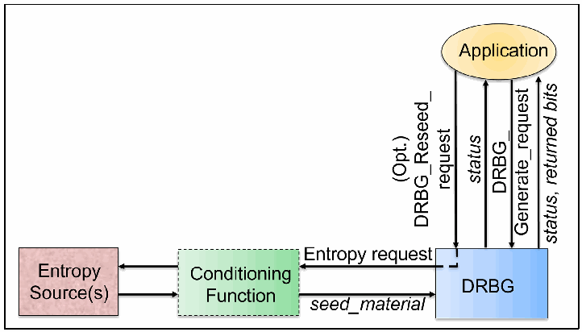
エントロピー源、条件付け関数、DRBG、アプリケーションの接続図。エントロピー源が条件付け関数へentropy requestに応じたseed_materialを渡し、DRBGがアプリケーションのGenerate_requestと任意のDRBG_Reseed_requestを処理する。statusとreturned_bits、seed_material、entropy requestの流れを示す。
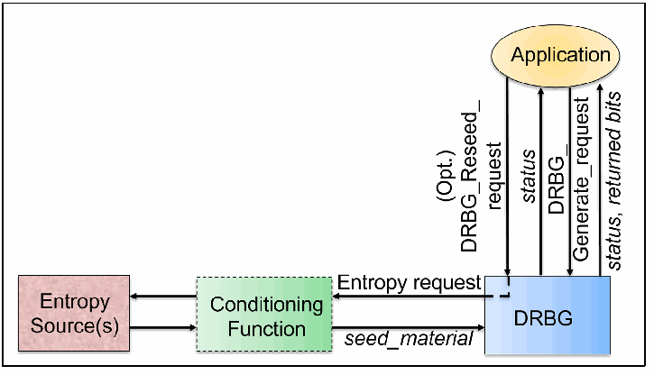
エントロピー源、条件付け関数、DRBG、アプリケーションの接続図。エントロピー源が条件付け関数へentropy requestに応じたseed_materialを渡し、DRBGがアプリケーションのGenerate_requestと任意のDRBG_Reseed_requestを処理する。statusとreturned_bits、seed_material、entropy requestの流れを示す。
Fig. 21. RBG2 generate request following an optional reseed request
図21. 任意の再シード要求に続くRBG2の生成要求
未レビュー訳If a reseed of the RBG was not requested by the application prior to requesting the generation of pseudorandom bits, or a status of SUCCESS was returned by the DRBG_Reseed function in response to a reseed request, pseudorandom bits are requested as follows (see Sec. 2.8.1.2):
擬似乱数ビット生成を要求する前にアプリケーションがRBGの再シードを要求しなかった場合、または再シード要求への応答としてDRBG_Reseed関数がSUCCESSを返した場合、次のように擬似乱数ビットを要求する（第2.8.1.2節参照）：
未レビュー訳(status, returned_bits) = DRBG_Generate_request(RBG2_DRBG_state_handle,
(status, returned_bits) = DRBG_Generate_request(RBG2_DRBG_state_handle,
未レビュー訳requested_number_of_bits, requested_security_strength, additional_input).
requested_number_of_bits, requested_security_strength, additional_input).
未レビュー訳The request shall result in the execution of a DRBG_Generate function by the DRBG (see Sec. 2.8.1.2) and checking the status returned by the DRBG_Generate function:
この要求によりDRBGがDRBG_Generate関数を実行し（第2.8.1.2節参照）、同関数が返すstatusを確認しなければならない：
未レビュー訳•(status, returned_bits) = DRBG_Generate(RBG2_DRBG_state_handle, requested_number_of_bits, requested_security_strength, additional_input).
•(status, returned_bits) = DRBG_Generate(RBG2_DRBG_state_handle, requested_number_of_bits, requested_security_strength, additional_input).
未レビュー訳•If (status ≠ SUCCESS), then return (status, Null).
•If (status ≠ SUCCESS), then return (status, Null).
未レビュー訳The DRBG_Generate function returns the status of the process, which shall also be returned to the application in response to the DRBG_Generate_request. If the status indicates that the generation was successful, the requested random bits (returned_bits) are also provided by the DRBG_Generate function and forwarded to the application.
DRBG_Generate関数は処理のstatusを返し、DRBG_Generate_requestへの応答としてアプリケーションにも返さなければならない。生成が成功したことをstatusが示す場合、要求された乱数ビット（returned_bits）もDRBG_Generate関数から提供され、アプリケーションに転送される。
未レビュー訳5.2.3. Reseeding an RBG2 Construction
5.2.3. RBG2構成の再シード
未レビュー訳The capability to reseed an RBG2 construction is optional. If implemented, the reseeding of the DRBG may be performed in one or both of the following ways:
RBG2構成の再シード機能は任意である。実装する場合、DRBGは次のいずれかまたは両方の方法で再シードできる：
未レビュー訳1.Upon request from a consuming application or
1.利用側アプリケーションから要求されたとき、または
未レビュー訳2.Based on implementation-selected criteria, such as time, number of outputs, events, or the availability of sufficient entropy.
2.実装者が選択する基準（時刻、出力数、イベント、十分なエントロピーが利用可能になったことなど）に基づくとき。
未レビュー訳However, the DRBG shall either be reseeded or re-instantiated before executing the DRBG_Generate function if it has output 217 or more bits since instantiation or the last reseed process. A request does not need to be interrupted if that output threshold is exceeded while completing a DRBG_Generate_request. For example, if 217–1 bits have already been output from the DRBG when a DRBG_Generate_request is received for any amount up to the maximum number of bits that may be requested in a single invocation (see SP 800-90A), the generate process may be fulfilled without interruption. The DRBG shall then be reseeded or re-instantiated before the next execution of a DRBG_Generate function.
ただし、DRBGがインスタンス化または最後の再シード以降に2¹⁷ビット以上を出力した場合、次にDRBG_Generate関数を実行する前に、再シードまたは再インスタンス化しなければならない。DRBG_Generate_requestの処理中にこの出力しきい値を超えても、要求を中断する必要はない。例えば、DRBG_Generate_requestを受け取った時点ですでにDRBGが2¹⁷−1ビットを出力していても、1回の呼出しで要求できる上限（SP 800-90A参照）までのビット数なら、生成処理を中断せずに要求を満たしてよい。その場合、次回DRBG_Generate関数を実行する前にDRBGを再シードまたは再インスタンス化しなければならない。
未レビュー訳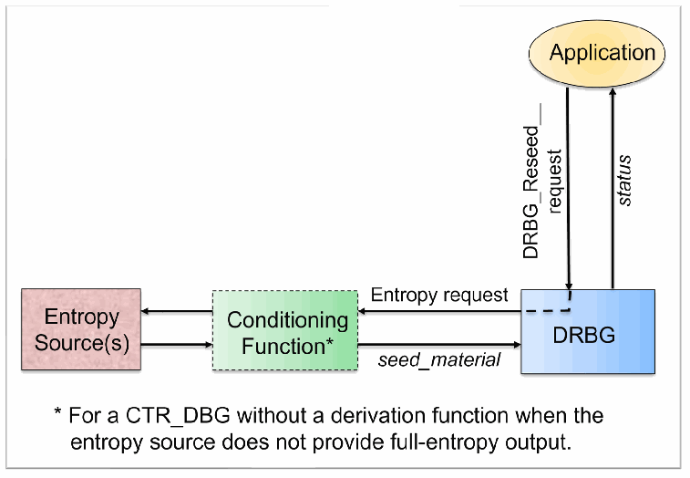
エントロピー源、条件付け関数、DRBG、アプリケーションの接続図。DRBG_Reseed_request、entropy request、seed_materialおよびstatusの流れを示す。注：エントロピー源が完全エントロピー出力を提供しない場合の、導出関数を持たないCTR_DRBGについての注記。
Fig. 22. Reseed request from an application
図22. アプリケーションからの再シード要求
未レビュー訳An application may request a reseed of the RBG2 construction (see Sec. 2.8.1.3):
アプリケーションはRBG2構成の再シードを要求してよい（第2.8.1.3節参照）：
未レビュー訳status = DRBG_Reseed_request(RBG2_DRBG_state_handle, additional_input).
status = DRBG_Reseed_request(RBG2_DRBG_state_handle, additional_input).
未レビュー訳If the DRBG receives a DRBG_Reseed_request or if the DRBG is scheduled for a reseed based on implementation-selected criteria, the DRBG_Reseed function shall be executed (see Sec. 2.8.1.3):
DRBGがDRBG_Reseed_requestを受け取った場合、または実装者が選択する基準に基づいてDRBGの再シードが予定されている場合、DRBG_Reseed関数を実行しなければならない（第2.8.1.3節参照）：
未レビュー訳status = DRBG_Reseed(RBG2_DRBG_state_handle, additional_input).
status = DRBG_Reseed(RBG2_DRBG_state_handle, additional_input).
未レビュー訳The DRBG_Reseed function returns the status of the reseed process, which shall be returned to the application if requested using a DRBG_Reseed_request.
DRBG_Reseed関数は再シード処理のstatusを返す。DRBG_Reseed_requestを使用して要求された場合、このstatusをアプリケーションにも返さなければならない。
未レビュー訳The DRBG_Reseed function uses a Get_randomness_source_input call to obtain the entropy needed for reseeding the DRBG (see Sec. 2.8.1.3 and [SP_800-90A]). The DRBG is reseeded at the instantiated security strength recorded in the DRBG’s internal state. The Get_randomness_source_input call in SP 800-90A shall be replaced with the following:
DRBG_Reseed関数はGet_randomness_source_input呼び出しを使って再シードに必要なエントロピーを取得する（第2.8.1.3節および[SP_800-90A]参照）。DRBGは、内部状態に記録されたインスタンス化時のセキュリティ強度で再シードする。[SP_800-90A]のGet_randomness_source_input呼び出しを次の処理に置き換えなければならない：
未レビュー訳1.For CTR_DRBG without a derivation function, use the appropriate replacement, as specified in step 1 of Sec. 5.2.1.
1.導出関数なしのCTR_DRBGの場合、第5.2.1節の手順1で指定する適切な置換処理を使用する。
未レビュー訳2.For CTR_DRBG with a derivation function, Hash_DRBG, or HMAC_DRBG, replace the Get_randomness_source_input call in the DRBG_Reseed function with the following:27
2.導出関数付きCTR_DRBG、Hash_DRBGまたはHMAC_DRBGの場合、DRBG_Reseed関数内のGet_randomness_source_input呼び出しを次の処理に置き換える。²⁷
未レビュー訳a. If the implementer wants full entropy in the returned bitstring, the Get_randomness_source_input call is replaced by:
a. 返すビット列を完全エントロピーにする場合、Get_randomness_source_input呼び出しを次の処理に置き換える：
未レビュー訳(status, seed_material) = Get_conditioned_full_entropy_input(s, counting_method).
(status, seed_material) = Get_conditioned_full_entropy_input(s, counting_method).
未レビュー訳b. Otherwise, the Get_randomness_source_input call is replaced by:
b. それ以外の場合、Get_randomness_source_input呼び出しを次の処理に置き換える：
未レビュー訳(status, seed_material) = Get_entropy_bitstring(s, counting_method) or
(status, seed_material) = Get_entropy_bitstring(s, counting_method) または
未レビュー訳(status, seed_material) = Get_conditioned_input(s, counting_method).
(status, seed_material) = Get_conditioned_input(s, counting_method).
未レビュー訳5.3. RBG2 Construction Requirements
5.3. RBG2構成の要件
未レビュー訳An RBG2 construction has the following requirements in addition to those specified in [SP_800-90A] and [SP_800-90B]:
RBG2構成には、[SP_800-90A]および[SP_800-90B]で規定された要件に加えて、次の要件がある：
未レビュー訳1.The RBG shall employ an approved and validated DRBG from [SP_800-90A] whose components are capable of providing the targeted security strength for the RBG.
1.RBGは、目標とするセキュリティ強度を提供できるコンポーネントを備えた、[SP_800-90A]の承認済みかつ検証済みDRBGを使用しなければならない。
未レビュー訳2.The RBG and its components shall be successfully validated for compliance with [SP_800-90A], [SP_800-90B], SP 800-90C, [FIPS_140], and the specification of any other approved algorithm used within the RBG, as appropriate.
2.RBGとそのコンポーネントは、該当する場合、[SP_800-90A]、[SP_800-90B]、SP 800-90C、[FIPS_140]およびRBG内で使用するその他の承認済みアルゴリズムの仕様への準拠について、検証に合格しなければならない。
未レビュー訳3.One or more validated entropy sources shall be used to instantiate and reseed the DRBG. A non-validated entropy source shall not be used for this purpose.
3.DRBGのインスタンス化および再シードには、1つ以上の検証済みエントロピー源を使用しなければならない。この目的に未検証のエントロピー源を使用してはならない。
未レビュー訳4.The DRBG shall be instantiated before first use (i.e., before providing output for use by a consuming application).
4.DRBGは、利用側アプリケーションへの出力を初めて提供する前にインスタンス化しなければならない。
未レビュー訳5.If a reseed capability is implemented, the DRBG shall be reseeded using any healthy validated entropy source(s) used for instantiation.
5.再シード機能を実装している場合、DRBGのインスタンス化に使用した正常な検証済みエントロピー源を使って再シードしなければならない。
未レビュー訳6.The DRBG shall be reseeded before generating output if the DRBG has produced 217 or more bits of output since instantiation or the last reseeding process.
6.インスタンス化または前回の再シード以降にDRBGが2¹⁷ビット以上を出力している場合、出力を生成する前にDRBGを再シードしなければならない。
未レビュー訳7.When instantiating and reseeding CTR_DRBG without a derivation function, keylen + output_len bits with full entropy (where keylen is the length of the key to be used by the cryptographic primitive and output_len is the length of its output block) or as otherwise specified in [SP_800-90A] shall be obtained either directly from the entropy sources or
7.導出関数なしのCTR_DRBGのインスタンス化および再シードでは、完全エントロピーを持つkeylen + output_lenビット（keylenは暗号プリミティブで使用する鍵の長さ、output_lenはその出力ブロック長）または[SP_800-90A]で別途指定されたビット列を、エントロピー源から直接、あるいは
未レビュー訳via an external vetted conditioning function that provides full-entropy output (see Sec. 3.2.2.2).
完全エントロピー出力を提供する外部の審査済み条件付け関数を介して取得しなければならない（第3.2.2.2節参照）。
未レビュー訳8.For CTR_DRBG with a derivation function, Hash_DRBG, or HMAC_DRBG, a bitstring with at least 3s/2 bits of entropy shall be obtained from the entropy sources to instantiate the DRBG at a security strength of s bits. When reseeding is performed, a bitstring with at least s bits of entropy shall be obtained from the entropy source(s). The entropy may be obtained directly from the entropy source(s) or via an external vetted conditioning function (see Sec. 3.2.2).
8.導出関数付きCTR_DRBG、Hash_DRBGまたはHMAC_DRBGの場合、セキュリティ強度sビットでDRBGをインスタンス化するため、エントロピー源から少なくとも3s/2ビットのエントロピーを得なければならない。再シード時には、エントロピー源から少なくともsビットのエントロピーを得なければならない。エントロピーはエントロピー源から直接、または外部の審査済み条件付け関数を介して取得してよい（第3.2.2節参照）。
未レビュー訳9.The entropy source(s) used for the instantiation and reseeding of the DRBG within an RBG2(P) construction shall include one or more validated physical entropy sources; the inclusion of one or more validated non-physical entropy sources is optional. A bitstring that contains entropy shall be assembled and the entropy in that bitstring determined as specified in Method 1 of Sec. 2.3 (i.e., only the entropy provided by validated physical entropy sources shall be counted toward fulfilling the amount of entropy in an entropy request).
9.RBG2(P)構成内のDRBGのインスタンス化および再シードに用いるエントロピー源には、1つ以上の検証済み物理エントロピー源を含めなければならない。検証済み非物理エントロピー源を含めてもよい。エントロピーを含むビット列を組み立て、第2.3節の方法1に従ってそのエントロピー量を決定する（すなわち、要求量を満たすエントロピーとして数えるのは、検証済み物理エントロピー源が提供した分だけである）。
未レビュー訳10.The entropy source(s) used for the instantiation and reseeding of the DRBG within an RBG2(NP) construction shall include one or more validated non-physical entropy sources; the inclusion of one or more validated physical entropy sources is optional. A bitstring containing entropy shall be assembled and the entropy in that bitstring determined as specified in Method 2 of Sec. 2.3 (i.e., the entropy provided by both validated non-physical entropy sources and any validated physical entropy sources included in the implementation shall be counted toward fulfilling the requested amount of entropy).
10.RBG2(NP)構成内のDRBGのインスタンス化および再シードに用いるエントロピー源には、1つ以上の検証済み非物理エントロピー源を含めなければならない。検証済み物理エントロピー源を含めてもよい。エントロピーを含むビット列を組み立て、第2.3節の方法2に従ってそのエントロピー量を決定する（すなわち、検証済み非物理源と、実装に含めた検証済み物理源の両方が提供したエントロピーを、要求量を満たす分として数える）。
未レビュー訳11.A specific entropy-source output (or portion thereof) shall not be reused (e.g., it is destroyed after use).
11.特定のエントロピー源の出力（またはその一部）を再利用してはならない（例：使用後に破棄する）。
未レビュー訳12.When a validated entropy source reports a failure, the failure shall be handled as discussed in item 10 of Sec. 2.6.
12.検証済みエントロピー源が障害を報告した場合、第2.6節の項目10で説明する方法で処理しなければならない。
未レビュー訳6. RBG3 Constructions Based on the Use of Physical Entropy Sources
6. 物理エントロピー源を用いるRBG3構成
未レビュー訳An RBG3 construction is designed to provide full entropy and can be used to support all security strengths. An RBG3 construction is useful when bits with full entropy are required or a higher security strength than RBG1 and RBG2 constructions can support is needed.
RBG3構成は完全エントロピーを提供するよう設計され、あらゆるセキュリティ強度に対応できる。完全エントロピーのビットが必要な場合、またはRBG1やRBG2構成が支援できる強度を上回るセキュリティ強度が必要な場合に有用である。
未レビュー訳6.1. RBG3 Description
6.1. RBG3の説明
未レビュー訳The RBG3 constructions specified in this recommendation include one or more physical entropy sources and an approved DRBG from [SP_800-90A]. The output of one or more non-physical entropy sources may optionally be included, but any entropy they provide is not counted. That is, Method 1 (i.e., physical only) of Sec. 2.3 is used for counting entropy during RBG3 operation. Upon receipt of a request for random bits from a consuming application, the RBG3 construction accesses its entropy source(s) to obtain sufficient bits for the request.28
本勧告で規定するRBG3構成には、1つ以上の物理エントロピー源と、[SP_800-90A]で承認されたDRBGが含まれる。1つ以上の非物理エントロピー源の出力を任意で含めてもよいが、それらが提供するエントロピーは計数しない。つまり、RBG3の動作中のエントロピー計数には、第2.3節の方法1（物理源のみ）を用いる。利用側アプリケーションから乱数ビット要求を受け取ると、RBG3構成はエントロピー源にアクセスして要求を満たすのに十分なビットを取得する。²⁸
未レビュー訳An implementation may be designed so that the DRBG implementation used within an RBG3 construction can be directly accessed by a consuming application using the same internal state as the RBG3 construction. The DRBG within an RBG3 construction is instantiated (i.e., seeded) at the highest security strength possible for its design (see Table 3). This is the fallback security strength if the entropy source fails in an undetected manner. Details about the use of additional approved cryptographic primitives may be discussed at [SP800_90WebSite].
実装によっては、RBG3構成内のDRBGを、RBG3構成と同じ内部状態を使って利用側アプリケーションが直接呼び出せるようにしてもよい。RBG3構成内のDRBGは、その設計で可能な最高のセキュリティ強度でインスタンス化（シード設定）する（表3参照）。これは、エントロピー源の障害が検出されない場合に用いるフォールバック強度である。追加の承認済み暗号プリミティブの使用については[SP800_90WebSite]に記載される場合がある。
未レビュー訳Table 3. Highest security strength for the DRBG’s cryptographic primitive
表3. DRBGの暗号プリミティブがサポートする最高のセキュリティ強度
未レビュー訳| Cryptographic Primitive | Highest Security Strength |
| AES-128 | 128 |
| AES-192 | 192 |
| AES-256 | 256 |
| SHA-256/SHA3-256 | 256 |
| SHA-384/SHA3-384 | 256 |
| SHA-512/SHA3-512 | 256 |
原本の表画像
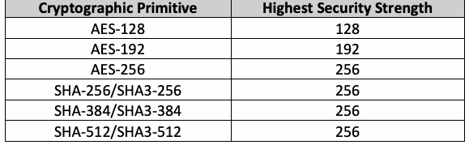
| 暗号プリミティブ | 最高のセキュリティ強度 |
| AES-128 | 128 |
| AES-192 | 192 |
| AES-256 | 256 |
| SHA-256/SHA3-256 | 256 |
| SHA-384/SHA3-384 | 256 |
| SHA-512/SHA3-512 | 256 |
If a failure of all physical entropy sources is detected, the RBG operation is terminated. Operation must not be resumed until repair and successful testing have been performed, and the DRBG has been instantiated with new entropy from the entropy source(s).
すべての物理エントロピー源の障害が検出された場合、RBGの動作を停止する。修復と試験に合格し、エントロピー源から新しいエントロピーを用いてDRBGをインスタンス化するまで、動作を再開してはならない。
未レビュー訳If all physical entropy sources fail in an undetected manner, the RBG continues to operate at the security strength of the underlying RBG2(P) construction, providing outputs at the security strength instantiated for its DRBG (see Sec. 5). Although security strengths of 128 and 192 bits are allowed for the DRBG (depending on its cryptographic primitive), a DRBG that is capable of supporting a security strength of 256 bits and is instantiated at that strength is recommended so that the RBG will continue to operate at a security strength of 256 bits in the event of an undetected failure of the physical entropy source(s).
すべての物理エントロピー源の障害が検出されない場合、RBGは基礎となるRBG2(P)構成のセキュリティ強度で動作を続け、DRBGのインスタンス化時の強度で出力する（第5節参照）。DRBGは、暗号プリミティブに応じて128または192ビットの強度も許されるが、物理エントロピー源に未検出の障害があってもRBGが256ビット強度で動作を継続できるよう、256ビット強度を支援するDRBGを選び、その強度でインスタンス化することを推奨する。
未レビュー訳6.2. RBG3 Construction Types and Their Variants
6.2. RBG3構成の種類と変種
未レビュー訳Two basic RBG3 constructions are specified:
基本となるRBG3構成を2種類規定する：
未レビュー訳1.RBG3(XOR) — This construction is based on combining the output of one or more validated entropy sources with the output of an instantiated, approved DRBG using an exclusive-or operation (see Sec. 6.4).
1.RBG3(XOR) — 検証済みエントロピー源の出力を、インスタンス化済みで承認されたDRBGの出力と排他的論理和演算で組み合わせる構成である（第6.4節参照）。
未レビュー訳2.RBG3(RS) — This construction is based on using one or more validated entropy sources to continuously reseed the DRBG (see Sec. 6.5).
2.RBG3(RS) — 1つ以上の検証済みエントロピー源を用いてDRBGを継続的に再シードする構成である（第6.5節参照）。
未レビュー訳6.3. General Requirements
6.3. 一般要件
未レビュー訳RBG3 constructions have the following general security requirements:
RBG3構成には次の一般的なセキュリティ要件がある：
未レビュー訳1.An RBG3 construction shall be designed to provide outputs with full entropy using one or more validated, independent, physical entropy sources, as specified for Method 1 in Sec. 2.3. Only the entropy provided by validated physical entropy sources shall be counted toward fulfilling entropy requests, although entropy provided by one or more validated non-physical entropy sources may be used but not counted.
1.RBG3構成は、第2.3節の方法1に従い、独立した1つ以上の検証済み物理エントロピー源を用いて完全エントロピーの出力を提供するよう設計しなければならない。エントロピー要求を満たすものとして数えるのは検証済み物理エントロピー源が提供する分だけである。1つ以上の検証済み非物理エントロピー源が提供するエントロピーを使用してもよいが、計数してはならない。
未レビュー訳2.The RBG shall employ an approved and validated DRBG from [SP_800-90A] or listed at [SP800_90WebSite] whose highest possible security strength is the targeted fallback security strength for the DRBG (see Sec. 6.1).
2.RBGは、[SP_800-90A]で承認・検証されたDRBG、または[SP800_90WebSite]に掲載されたDRBGを使用しなければならない。そのDRBGが実現可能な最高のセキュリティ強度を、目標とするフォールバック強度とする（第6.1節参照）。
未レビュー訳3.An RBG3 construction and its components shall be successfully validated for compliance with the corresponding requirements in [SP_800-90A], [SP_800-90B], SP 800-90C, [FIPS_140], and the specification of any other approved algorithm used within the RBG, as appropriate.
3.RBG3構成とそのコンポーネントは、該当する場合、[SP_800-90A]、[SP_800-90B]、SP 800-90C、[FIPS_140]およびRBG内で使用するその他の承認済みアルゴリズムの仕様にある該当要件への準拠について、検証に合格しなければならない。
未レビュー訳4.The DRBG shall be instantiated at its highest possible security strength before the first use of the RBG3 construction or direct access of the DRBG. A DRBG should be selected to support a security strength of 256 bits.
4.DRBGは、RBG3構成を初めて使用する前、またはDRBGへ直接アクセスする前に、実現可能な最高のセキュリティ強度でインスタンス化しなければならない。256ビットの強度を支援するDRBGを選択することが望ましい。
未レビュー訳5.When instantiating and reseeding CTR_DRBG without a derivation function, keylen + output_len bits with full entropy or as otherwise specified in SP 800-90A shall be obtained either directly from the entropy source(s) or via an external vetted conditioning function that provides full-entropy output (see Sec. 3.2.2.2).
5.導出関数なしのCTR_DRBGのインスタンス化および再シードでは、完全エントロピーを持つkeylen + output_lenビット、またはSP 800-90Aで別途指定するビット数を、エントロピー源から直接、あるいは完全エントロピーを提供する外部の審査済み条件付け関数を介して取得しなければならない（第3.2.2.2節参照）。
未レビュー訳6.For CTR_DRBG with a derivation function, Hash_DRBG, or HMAC_DRBG, a bitstring with at least 3s/2 bits of entropy29 shall be obtained from the entropy sources to instantiate the DRBG at a security strength of s bits. When reseeding is performed, a bitstring with at least s bits of entropy shall be obtained from the entropy source(s). The entropy may be obtained directly from the entropy source(s) or via an external vetted conditioning function (see Sec. 3.2.2).
6.導出関数付きCTR_DRBG、Hash_DRBGまたはHMAC_DRBGの場合、セキュリティ強度sビットでDRBGをインスタンス化するため、エントロピー源から少なくとも3s/2ビットのエントロピー²⁹を得なければならない。再シード時には、エントロピー源から少なくともsビットのエントロピーを得なければならない。エントロピーはエントロピー源から直接、または外部の審査済み条件付け関数を介して取得してよい（第3.2.2節参照）。
未レビュー訳7.A specific entropy-source output (or portion thereof) shall not be reused (e.g., the same entropy-source output shall not be used for an RBG3 request and for seeding or reseeding the DRBG).
7.特定のエントロピー源の出力（またはその一部）を再利用してはならない（例：同じ出力をRBG3要求とDRBGのシード設定または再シードの両方に使わない）。
未レビュー訳8.If the DRBG within the RBG3 construction is directly accessible, the requirements in Sec. 5.3 for RBG2(P) constructions shall apply to the direct access of the DRBG.
8.RBG3構成内のDRBGを直接利用できる場合、そのDRBGへの直接アクセスには第5.3節のRBG2(P)構成の要件を適用する。
未レビュー訳9.If a failure is detected within the RBG, see Sec. 2.6 (item 10) and 3.1.
9.RBG内で障害が検出された場合、第2.6節の項目10および第3.1節を参照。
未レビュー訳See Sec. 6.4.2 and 6.5.2 for additional requirements for the RBG3(XOR) and RBG3(RS) constructions, respectively.
RBG3(XOR)構成およびRBG3(RS)構成の追加要件は、それぞれ第6.4.2節および第6.5.2節を参照。
未レビュー訳6.4. RBG3(XOR) Construction
6.4. RBG3(XOR)構成
未レビュー訳An RBG3(XOR) construction contains one or more validated entropy sources and a DRBG whose outputs are XORed to produce full-entropy output during the generate process (see Fig. 23).
RBG3(XOR)構成には、1つ以上の検証済みエントロピー源とDRBGが含まれる。生成処理中に両者の出力をXOR演算で組み合わせ、完全エントロピー出力を生成する（図23参照）。
未レビュー訳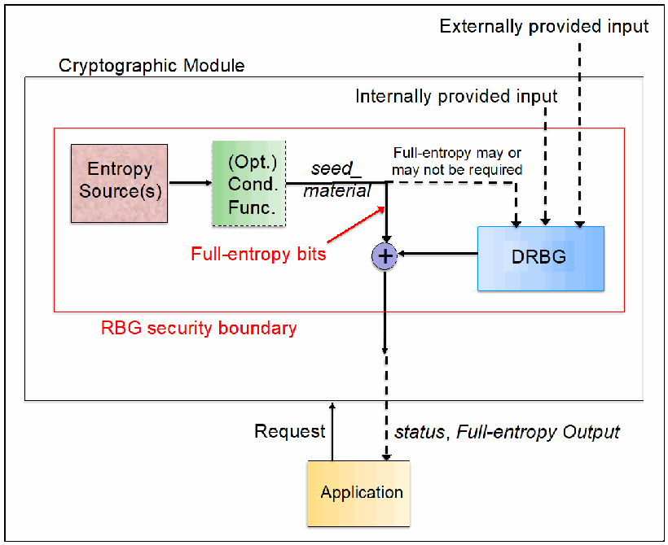
図23のRBG3(XOR)構成。暗号モジュールとRBGセキュリティ境界の中にエントロピー源、任意の条件付け関数、DRBG、XOR演算器がある。エントロピー源側から完全エントロピーのseed_materialをXORへ渡し、DRBG出力と結合する。アプリケーションは要求を送り、statusと完全エントロピー出力を受け取る。外部提供入力、内部提供入力、完全エントロピーが必要となる場合があることを示す。
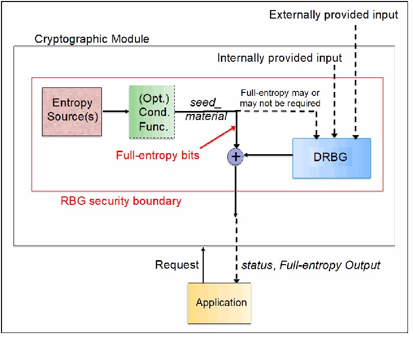
図23の別抽出版。RBGセキュリティ境界内のエントロピー源と任意の条件付け関数が完全エントロピーのseed_materialを供給し、DRBG出力とXOR演算する。外部・内部提供入力、暗号モジュール境界、アプリケーションの要求、statusおよび完全エントロピー出力を示す。
Fig. 23. Generic structure of the RBG3(XOR) construction
図23. RBG3(XOR)構成の一般的な構造
未レビュー訳In order to provide the required full-entropy output, the input to the XOR (shown as “⊕” in Fig. 23) from the entropy-source side of the figure shall consist of bits with full entropy (see Sec. 2.1). If the entropy sources cannot provide full-entropy output, then an external conditioning function shall be used to condition the output of the entropy sourc(s) to a full-entropy bitstring before XORing with the output of the DRBG (see Sec. 3.2.2.2).
要求される完全エントロピー出力を提供するため、図のエントロピー源側からXOR演算（図23の「⊕」）に入力するビットは完全エントロピーを持たなければならない（第2.1節参照）。エントロピー源が完全エントロピー出力を提供できない場合、DRBG出力とのXOR演算の前に、外部条件付け関数を使ってエントロピー源の出力を完全エントロピーのビット列にしなければならない（第3.2.2.2節参照）。
未レビュー訳When n bits of output are requested from an RBG3(XOR) construction, n bits of output from the DRBG are XORed with n full-entropy bits that are obtained directly from the entropy source(s) or from a combination of validated entropy source(s) and an external vetted conditioning function that provides full-entropy output (see Sec. 3.2.2.2). When the entropy sources are working properly,30 an n-bit output from the RBG3(XOR) construction is said to provide n bits of entropy or to support a security strength of n bits. Appendix B.5 provides an example of an RBG3(XOR) design.
RBG3(XOR)構成にnビットの出力を要求すると、DRBGからのnビット出力を、エントロピー源から直接取得したnビットの完全エントロピー、または検証済みエントロピー源と完全エントロピー出力を提供する外部の審査済み条件付け関数を組み合わせて得たnビットとXOR演算する（第3.2.2.2節参照）。エントロピー源が正常に動作している場合³⁰、RBG3(XOR)構成のnビット出力はnビットのエントロピーを持つ、すなわちnビットのセキュリティ強度を支援するとみなす。RBG3(XOR)設計の例を付録B.5に示す。
未レビュー訳6.4.1. Conceptual Interfaces
6.4.1. 概念インターフェース
未レビュー訳The RBG interfaces include function calls for instantiating the DRBG (see Sec. 6.4.1.1), generating random bits on request (see Sec. 6.4.1.2), and reseeding the DRBG instantiation (see Sec. 6.4.1.3).
RBGインターフェースには、DRBGのインスタンス化（第6.4.1.1節参照）、要求に応じた乱数ビットの生成（第6.4.1.2節参照）、DRBGインスタンスの再シード（第6.4.1.3節参照）の関数呼び出しが含まれる。
未レビュー訳6.4.1.1. Instantiation of the DRBG
6.4.1.1. DRBGのインスタンス化
未レビュー訳As discussed in Sec. 2.8.3.1, before the RBG3(XOR) construction can be used to generate bits, an application instantiates the DRBG within the construction:
第2.8.3.1節で説明したとおり、RBG3(XOR)構成でビットを生成する前に、アプリケーションが構成内のDRBGをインスタンス化する：
未レビュー訳(status, state_handle) = Instantiate_RBG3_DRBG_request(requested_security_strength,
(status, state_handle) = Instantiate_RBG3_DRBG_request(requested_security_strength,
未レビュー訳personalization_string),
personalization_string),
未レビュー訳where requested_security_strength and personalization_string are optional. If the requested_security_strength parameter is provided and exceeds the highest security strength that can be supported by the DRBG, an error indication shall be returned with an invalid state_handle (see Sec. 2.8.3.1).
requested_security_strengthとpersonalization_stringは任意である。requested_security_strengthパラメータが指定され、DRBGが支援できる最高のセキュリティ強度を超える場合、エラー表示と無効なstate_handleを返さなければならない（第2.8.3.1節参照）。
未レビュー訳If the requested_security_strength is provided and acceptable (i.e., requested_security_strength does not exceed the highest security strength that can be supported by the DRBG; see Sec. 2.8.3.1) or if the requested_security_strength parameter is not provided, the Instantiate_RBG3_DRBG_request received by the RBG3(XOR) construction shall result in the execution of the RBG3(XOR)_Instantiate function below. The status returned by the RBG3(XOR)_Instantiate function shall be returned to the application in response to the Instantiate_RBG3_DRBG_request. The return of the state_handle is optional if only a single instantiation is allowed by an implementation.
requested_security_strengthが指定されて許容範囲内（すなわちDRBGが支援できる最高のセキュリティ強度を超えない。第2.8.3.1節参照）である場合、またはパラメータが指定されていない場合、RBG3(XOR)構成が受け取ったInstantiate_RBG3_DRBG_requestにより、以下のRBG3(XOR)_Instantiate関数を実行しなければならない。同関数が返すstatusは、要求への応答としてアプリケーションに返さなければならない。実装でインスタンス化を1回しか許可しない場合、state_handleの返却は任意である。
未レビュー訳Let s be the highest security strength that can be supported by the DRBG. The DRBG in the RBG3(XOR) construction is instantiated as follows:
sを、DRBGが支援できる最高のセキュリティ強度とする。RBG3(XOR)構成のDRBGは次のようにインスタンス化される：
未レビュー訳RBG3(XOR)_Instantiate:
RBG3(XOR)_Instantiate：
未レビュー訳Input:
入力：
未レビュー訳1.personalization_string: An optional (but recommended) personalization string.
1.personalization_string：任意の（ただし推奨される）パーソナライゼーション文字列。
未レビュー訳Output:
出力：
未レビュー訳1.status: The status returned by the RBG3(XOR)_Instantiate function.
1.status：RBG3(XOR)_Instantiate関数が返すstatus。
未レビュー訳2.RBG3_DRBG_state_handle: The returned state handle for the internal state of the DRBG or an invalid state handle.
2.RBG3_DRBG_state_handle：DRBGの内部状態を示す返却済みstate_handle、または無効なstate_handle。
未レビュー訳Process:
処理：
未レビュー訳1.(status, RBG3_DRBG_state_handle) = DRBG_Instantiate(s, personalization_string).
1.(status, RBG3_DRBG_state_handle) = DRBG_Instantiate(s, personalization_string).
未レビュー訳2.If (status ≠ SUCCESS), then return (status, Invalid_state_handle).
2.If (status ≠ SUCCESS), then return (status, Invalid_state_handle).
未レビュー訳3.Return (SUCCESS, RBG3_DRBG_state_handle).
3.Return (SUCCESS, RBG3_DRBG_state_handle).
未レビュー訳In step 1, the DRBG is instantiated at a security strength of s bits. RBG3_DRBG_state_handle (if returned) is the state handle for the internal state of the DRBG used within the RBG3(XOR) construction.
手順1では、DRBGをsビットのセキュリティ強度でインスタンス化する。RBG3_DRBG_state_handle（返却される場合）は、RBG3(XOR)構成内で使うDRBGの内部状態ハンドルである。
未レビュー訳In step 2, if the status returned from step 1 does not indicate a success, then return the status with an invalid state handle.
手順2では、手順1から返されたstatusが成功を示さない場合、statusと無効なstate_handleを返す。
未レビュー訳In step 3, the status and RBG3_DRBG_state_handle that were obtained in step 1 are returned to the requesting application.
手順3では、手順1で得たstatusとRBG3_DRBG_state_handleを要求元アプリケーションに返す。
未レビュー訳The handling of status codes is discussed in item 10 of Sec. 2.6 and in Sec. 2.8.3, 3.1, and 8.1.2.
statusコードの処理については、第2.6節の項目10ならびに第2.8.3、3.1、8.1.2節を参照。
未レビュー訳6.4.1.2. Random Bit Generation Using the RBG3(XOR) Construction
6.4.1.2. RBG3(XOR)構成による乱数ビット生成
未レビュー訳As discussed in Sec. 2.8.3.2, an application may request the generation of random bits from the RBG3(XOR) construction:
第2.8.3.2節で説明したとおり、アプリケーションはRBG3(XOR)構成に乱数ビットの生成を要求してよい：
未レビュー訳(status, returned_bits) = RBG3_DRBG_Generate_request(RBG3_DRBG_state_handle, n,
(status, returned_bits) = RBG3_DRBG_Generate_request(RBG3_DRBG_state_handle, n,
未レビュー訳additional_input),
additional_input),
未レビュー訳where RBG3_DRBG_state_handle was provided during instantiation (see Sec. 6.4.1.1), n is the number of bits to be generated and returned to the application, and additional_input is optional.
RBG3_DRBG_state_handleはインスタンス化時に返される（第6.4.1.1節参照）。nは生成してアプリケーションに返すビット数であり、additional_inputは任意である。
未レビュー訳The RBG3_DRBG_Generate_request received by the RBG3(XOR) construction shall result in the execution of the RBG3(XOR)_Generate function below. The output of that function shall be returned to the application in response to the RBG3_DRBG_Generate_request.
RBG3(XOR)構成が受け取ったRBG3_DRBG_Generate_requestにより、以下のRBG3(XOR)_Generate関数を実行しなければならない。同関数の出力は、要求への応答としてアプリケーションに返さなければならない。
未レビュー訳Let s be the security strength instantiated for the DRBG (i.e., the highest security strength that can be supported by the DRBG; see Sec. 6.4.1.1), and let the RBG3_DRBG_state_handle be the value returned by the instantiation function for RBG3(XOR)’s DRBG instantiation. Random bits with full entropy shall be generated by the RBG3(XOR) construction using the following generate function with the values of n and additional_input provided in the DRBG_Generate_request as input:
sをDRBGでインスタンス化するセキュリティ強度（DRBGが支援できる最高の強度。第6.4.1.1節参照）とし、RBG3_DRBG_state_handleをRBG3(XOR)構成のDRBGインスタンス化関数が返す値とする。RBG3(XOR)構成は、DRBG_Generate_requestで指定されたnおよびadditional_inputを入力として次の生成関数を使い、完全エントロピーを持つ乱数ビットを生成しなければならない：
未レビュー訳RBG3(XOR)_Generate:
RBG3(XOR)_Generate：
未レビュー訳Input:
入力：
未レビュー訳1.RBG3_DRBG_state_handle: The state handle of the DRBG used by the RBG3 construction.
1.RBG3_DRBG_state_handle：RBG3構成が使用するDRBGの状態ハンドル。
未レビュー訳2.n: The number of bits to be generated.
2.n：生成するビット数。
未レビュー訳3.additional_input: Optional additional input.
3.additional_input：任意の追加入力。
未レビュー訳Output:
出力：
未レビュー訳1.status: The status returned by the RBG3(XOR)_Generate function.
1.status：RBG3(XOR)_Generate関数が返すstatus。
未レビュー訳2.returned_bits: The n bits generated by the RBG3(XOR) construction or a Null string.
2.returned_bits：RBG3(XOR)構成が生成したnビット、またはNull文字列。
未レビュー訳Process:
処理：
未レビュー訳1.(status, ES_bits) = Request_entropy(n). (See the notes below for customizing this step.)
1.(status, ES_bits) = Request_entropy(n).（この手順の変更方法については以下の注を参照。）
未レビュー訳2.If (status ≠ SUCCESS), then return (status, Null).
2.If (status ≠ SUCCESS), then return (status, Null).
未レビュー訳3.(status, DRBG_bits) = DRBG_Generate(RBG3_DRBG_state_handle, n, s, additional_input).
3.(status, DRBG_bits) = DRBG_Generate(RBG3_DRBG_state_handle, n, s, additional_input).
未レビュー訳4.If (status ≠ SUCCESS), then return (status, Null).
4.If (status ≠ SUCCESS), then return (status, Null).
未レビュー訳5.returned_bits = ES_bits ⊕ DRBG_bits.
5.returned_bits = ES_bits ⊕ DRBG_bits.
未レビュー訳6.Return (SUCCESS, returned_bits).
6.Return (SUCCESS, returned_bits).
未レビュー訳Step 1 requests that the entropy source(s) generate n bits. Since full-entropy bits are required, the (placeholder) Request_entropy call shall be replaced by one of the following:
手順1ではエントロピー源にnビットの生成を要求する。完全エントロピーのビットが必要なため、仮置きのRequest_entropy呼び出しを次のいずれかに置き換えなければならない：
未レビュー訳•If full-entropy output is provided by all validated physical entropy sources used by the RBG3(XOR) implementation, and non-physical entropy sources are not used, step 1 becomes:
•RBG3(XOR)実装で使用する検証済み物理エントロピー源がすべて完全エントロピー出力を提供し、非物理エントロピー源を使用しない場合、手順1を次のようにする：
未レビュー訳(status, ES_bits) = Get_entropy_bitstring(n, Method_1). The Get_entropy_bitstring function31 shall use Method 132 to obtain the n full-entropy
(status, ES_bits) = Get_entropy_bitstring(n, Method_1). Get_entropy_bitstring関数³¹は方法1³²を使い、要求されたnビットの完全エントロピー
未レビュー訳bits that were requested to produce ES-bits.
を取得してES_bitsを生成しなければならない。
未レビュー訳•If full-entropy output is not provided by all physical entropy source(s), or the output of both physical and non-physical entropy sources is used by the implementation, step 1 becomes:
•RBG3(XOR)実装で使用する物理エントロピー源のすべてが完全エントロピー出力を提供しない場合、または物理と非物理の両方のエントロピー源を使用する場合、手順1を次のようにする：
未レビュー訳(status, ES_bits) = Get_conditioned_full_entopy_input(n, Method_1).
(status, ES_bits) = Get_conditioned_full_entropy_input(n, Method_1).
未レビュー訳The Get_conditioned_full_entropy_input procedure is specified in Sec. 3.2.2.2. It requests entropy from the entropy sources in step 3.1 of that procedure with a Get_entropy_bitstring call. The Get_entropy_bitstring call shall use Method 1 (as specified in Sec. 2.3) when collecting the output of the entropy source(s) (i.e., only the entropy provided by one or more physical entropy sources is counted).
Get_conditioned_full_entropy_input手続きは第3.2.2.2節で規定する。この手続きの手順3ではGet_entropy_bitstring呼び出しによってエントロピー源からエントロピーを要求する。エントロピー源の出力を収集する際、Get_entropy_bitstring呼び出しは方法1（第2.3節の規定）を使用しなければならない（すなわち、1つ以上の物理エントロピー源が提供するエントロピーのみを計数する）。
未レビュー訳In step 2, if the request in step 1 is not successful, abort the RBG3(XOR)_Generate function, returning the status received in step 1 and a Null bitstring as the returned_bits. If status indicates a success, ES_bits is the full-entropy bitstring to be used in step 5.
手順2では、手順1の要求に失敗した場合、RBG3(XOR)_Generate関数を中止し、手順1から受け取ったstatusとNullビット列をreturned_bitsとして返す。statusが成功を示す場合、ES_bitsは手順5で使用する完全エントロピーのビット列である。
未レビュー訳In step 3, the RBG3(XOR)’s DRBG instantiation is requested to generate n bits at a security strength of s bits. The DRBG instantiation is indicated by the RBG3_DRBG_state_handle, which was obtained during instantiation (see Sec. 6.4.1.1). If additional input is provided in the RBG3(XOR)_Generate call, it shall be included in the DRBG_Generate function call to the DRBG. The DRBG may require reseeding during the DRBG_Generate function call in step 3 (e.g., because the end of the seedlife of the DRBG has been reached).
手順3では、RBG3(XOR)のDRBGインスタンスに、セキュリティ強度sビットでnビットの生成を要求する。対象のDRBGインスタンスは、インスタンス化時に取得したRBG3_DRBG_state_handleで示す（第6.4.1.1節参照）。RBG3(XOR)_Generate呼び出しにadditional_inputが指定されている場合、それをDRBGへのDRBG_Generate関数呼び出しに含めなければならない。例えばDRBGのseedlifeに達した場合など、手順3のDRBG_Generate関数呼び出し中にDRBGの再シードが必要となることがある。
未レビュー訳In step 4, if the DRBG_Generate function request is not successful, the RBG3(XOR)_Generate function is aborted, and the status received in step 3 and a Null bitstring are returned to the consuming application. If status indicates a success, DRBG_bits is the pseudorandom bitstring to be used in step 5.
手順4では、DRBG_Generate関数の要求に失敗した場合、RBG3(XOR)_Generate関数を中止し、手順3から受け取ったstatusとNullビット列を利用側アプリケーションに返す。statusが成功を示す場合、DRBG_bitsは手順5で使用する擬似乱数ビット列である。
未レビュー訳Step 5 combines the bitstrings returned from the entropy source(s) (from step 1) and the DRBG (from step 3) using an XOR operation. The resulting bitstring is returned to the consuming application in step 6.
手順5では、手順1のエントロピー源から返されたビット列と、手順3のDRBGから返されたビット列をXOR演算で組み合わせる。結果のビット列を手順6で利用側アプリケーションに返す。
未レビュー訳6.4.1.3. Pseudorandom Bit Generation Using a Directly Accessible DRBG
6.4.1.3. 直接アクセス可能なDRBGによる擬似乱数ビット生成
未レビュー訳If prediction resistance is desired by a consuming application for the next DRBG output to be generated so that a previous internal state that may have been compromised cannot be used to determine the next DRBG output, the application requests a reseed of the DRBG before requesting the generation of pseudorandom bits directly from the DRBG, as discussed in Sec. 6.4.1.4. This is the same process shown in Fig. 21 in Sec. 5.2.2.
利用側アプリケーションが、侵害された可能性のある以前の内部状態から次のDRBG出力を推測されないよう予測耐性を求める場合、第6.4.1.4節で説明するとおり、DRBGから直接擬似乱数ビットの生成を要求する前にDRBGの再シードを要求する。これは第5.2.2節の図21に示す処理と同じである。
未レビュー訳If a reseed of the DRBG was not requested by the application,or a status of SUCCESS was returned by the DRBG_Reseed function when the application requested a reseed, pseudorandom bits may be requested as follows:
アプリケーションからDRBGの再シードが要求されなかった場合、または再シード要求に対してDRBG_Reseed関数がSUCCESSを返した場合、次のように擬似乱数ビットを要求してよい：
未レビュー訳(status, returned_bits) = DRBG_Generate_request(RBG3(XOR)_DRBG_state_handle,
(status, returned_bits) = DRBG_Generate_request(RBG3(XOR)_DRBG_state_handle,
未レビュー訳requested_number_of_bits, requested_security_strength, additional_input), where RBG3(XOR)_state_handle was provided during instantiation, and additional_input is optional.
requested_number_of_bits, requested_security_strength, additional_input), ここでRBG3(XOR)_state_handleはインスタンス化時に返され、additional_inputは任意である。
未レビュー訳The DRBG_Generate_request received by the DRBG shall result in the execution of the DRBG_Generate function in the DRBG:
DRBGが受け取ったDRBG_Generate_requestにより、そのDRBG内でDRBG_Generate関数を実行しなければならない：
未レビュー訳(status, returned_bits) = DRBG_Generate(RBG3_DRBG_state_handle,
(status, returned_bits) = DRBG_Generate(RBG3_DRBG_state_handle,
未レビュー訳requested_number_of_bits, requested_security_strength, additional_input),
requested_number_of_bits, requested_security_strength, additional_input),
未レビュー訳where:
ここで：
未レビュー訳•RBG3_DRBG_state_handle is the state handle used by the DRBG within the RBG3(XOR) construction.
•RBG3_DRBG_state_handleは、RBG3(XOR)構成内のDRBGが使用する状態ハンドルである。
未レビュー訳•requested_security_strength is provided in the DRBG_Generate_request and must be ≤ the instantiated security strength of the DRBG.
•requested_security_strengthはDRBG_Generate_requestで指定し、DRBGのインスタンス化時のセキュリティ強度以下でなければならない。
未レビュー訳•Any additional_input provided in a DRBG_Generate_request shall be provided as input to the DRBG_Generate function. Otherwise, the use of additional_input is optional when invoking the DRBG_Generate function.
•DRBG_Generate_requestで指定したadditional_inputは、DRBG_Generate関数への入力として渡さなければならない。それ以外の場合、DRBG_Generate関数を呼び出す際のadditional_inputの使用は任意である。
未レビュー訳The output of the DRBG_Generate function shall be returned to the application in response to the DRBG_Generate_request.
DRBG_Generate関数の出力は、DRBG_Generate_requestへの応答としてアプリケーションに返さなければならない。
未レビュー訳6.4.1.4. Reseeding the DRBG Instantiation
6.4.1.4. DRBGインスタンスの再シード
未レビュー訳As discussed in Sec. 2.4.2, the reseeding of the DRBG may be performed 1) upon request from a consuming application or 2) based on implementation-selected criteria, such as time, number of outputs, events, or the availability of sufficient entropy.
第2.4.2節で説明したとおり、DRBGは利用側アプリケーションから要求されたとき、または時刻、出力数、イベント、十分なエントロピーの利用可能性など実装者が選択する基準に基づいて再シードしてよい。
未レビュー訳An application may request the reseeding of the DRBG within the RBG3(XOR) construction:
アプリケーションはRBG3(XOR)構成内のDRBGの再シードを要求してよい：
未レビュー訳status = DRBG_Reseed_request(RBG3(XOR)_DRBG_state_handle, additional_input),
status = DRBG_Reseed_request(RBG3(XOR)_DRBG_state_handle, additional_input),
未レビュー訳where RBG3(XOR)_state_handle (if used) was provided during instantiation, and additional_input is optional.
RBG3(XOR)_state_handleは（使用する場合）インスタンス化時に返され、additional_inputは任意である。
未レビュー訳The DRBG executes a DRBG_Reseed function in response to a DRBG_Reseed_request from an application or in accordance with implementation-selected criteria:
アプリケーションからDRBG_Reseed_requestを受け取った場合、または実装者が選択する基準に従って再シードする場合、DRBGはDRBG_Reseed関数を実行する：
未レビュー訳status = DRBG_Reseed(RBG3_DRBG_state_handle, additional_input),
status = DRBG_Reseed(RBG3_DRBG_state_handle, additional_input),
未レビュー訳where RBG3_DRBG_state_handle (if used) was returned by the DRBG_Instantiate function (see Sec. 2.8.1.1 and 6.4.1.1). RBG3_DRBG_state_handle is the state handle for the internal state of the DRBG within the RBG3(XOR) construction. Any additional_input provided in a DRBG_Reseed_request shall be provided as input to the DRBG_Reseed function. Otherwise, the use of additional_input is optional when invoking the DRBG_Reseed function.
RBG3_DRBG_state_handleは（使用する場合）DRBG_Instantiate関数から返された状態ハンドルである（第2.8.1.1節および第6.4.1.1節参照）。これはRBG3(XOR)構成内のDRBGの内部状態ハンドルである。DRBG_Reseed_requestで指定したadditional_inputはDRBG_Reseed関数への入力として渡さなければならない。それ以外の場合、同関数を呼び出す際のadditional_inputの使用は任意である。
未レビュー訳6.4.2. RBG3(XOR) Requirements
6.4.2. RBG3(XOR)の要件
未レビュー訳An RBG3(XOR) construction has the following requirements in addition to those provided in Sec. 6.3:
RBG3(XOR)構成には、第6.3節の要件に加えて次の要件がある：
未レビュー訳1.Bitstrings with full entropy shall be provided to the XOR operation either directly from the concatenated output of one or more validated physical entropy sources or by an external conditioning function that provides full-entropy output using the output of one or more validated physical entropy sources.
1.完全エントロピーのビット列をXOR演算へ渡さなければならない。これは、1つ以上の検証済み物理エントロピー源の出力を連結して直接得るか、1つ以上の検証済み物理エントロピー源の出力を使用する完全エントロピー出力対応の外部条件付け関数で得る。
未レビュー訳2.Entropy source output used for the RBG’s XOR operation shall not also be used to instantiate and reseed the RBG’s DRBG.33
2.RBGのXOR演算に使用するエントロピー源の出力を、RBGのDRBGをインスタンス化または再シードするためにも使用してはならない。³³
未レビュー訳3.The DRBG shall be reseeded before generating output if the DRBG has produced 217 or more bits of output since instantiation or the last reseeding process.
3.インスタンス化または前回の再シード以降にDRBGが2¹⁷ビット以上を出力している場合、次の出力を生成する前にDRBGを再シードしなければならない。
未レビュー訳6.5. RBG3(RS) Construction
6.5. RBG3(RS)構成
未レビュー訳The second RBG3 construction specified in this document is the RBG3(RS) construction shown in Fig. 24. An example of this construction is provided in Appendix B.6.
本書で規定する2つ目のRBG3構成は図24に示すRBG3(RS)構成である。この構成の例を付録B.6に示す。
未レビュー訳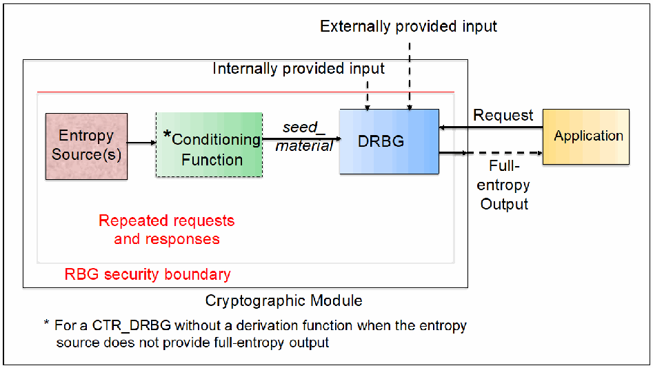
図24。RBG3(RS)構成。暗号モジュールおよびRBGセキュリティ境界内にエントロピー源、条件付け関数（CTR_DRBGで完全エントロピーが必要な場合）、DRBGがある。エントロピー源からDRBGへseed_materialを渡し、アプリケーション要求に対して完全エントロピー出力を返す。再シードを含む要求・応答の反復、外部提供入力および内部提供入力を示す。
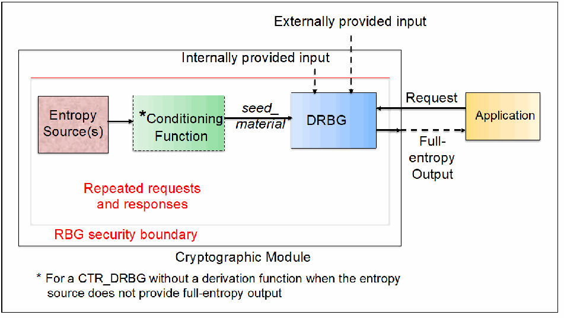
図24の別抽出版。エントロピー源と任意の条件付け関数からDRBGへseed_materialを供給し、RBGセキュリティ境界内で動作するRBG3(RS)の要求・応答を示す。出力はアプリケーションへ完全エントロピーとして返される。* エントロピー源が完全エントロピー出力を提供しない場合、導出関数なしのCTR_DRBGに条件付け関数が必要。
Fig. 24. Generic structure of the RBG3(RS) construction
図24. RBG3(RS)構成の一般的な構造
未レビュー訳External conditioning of the outputs from the entropy source(s) during instantiation and reseeding is required to provide bitstrings with full entropy when the DRBG is CTR_DRBG without a derivation function and the entropy source(s) does not provide output with full entropy. Otherwise, the use of a conditioning function is optional.
DRBGが導出関数なしのCTR_DRBGで、エントロピー源が完全エントロピー出力を提供しない場合、インスタンス化および再シード時にエントロピー源の出力を外部で条件付けし、完全エントロピーのビット列を得なければならない。それ以外の場合、条件付け関数の使用は任意である。
未レビュー訳6.5.1. Conceptual Interfaces
6.5.1. 概念インターフェース
未レビュー訳The RBG interfaces include function calls for instantiating the DRBG (see Sec. 6.5.1.1), generating random bits on request (see Sec. 6.5.1.2 and 6.5.1.3), and reseeding the DRBG instantiation (see Sec. 6.5.1.4).
RBGインターフェースには、DRBGのインスタンス化（第6.5.1.1節参照）、要求に応じた乱数ビットの生成（第6.5.1.2節および第6.5.1.3節参照）、DRBGインスタンスの再シード（第6.5.1.4節参照）の関数呼び出しが含まれる。
未レビュー訳6.5.1.1. Instantiation of the DRBG Within an RBG3(RS) Construction
6.5.1.1. RBG3(RS)構成内のDRBGのインスタンス化
未レビュー訳Before the RBG3(RS) construction can be used to generate bits, an application shall request the instantiation of the DRBG within the construction (see Sec. 2.8.3.1):
RBG3(RS)構成でビットを生成する前に、アプリケーションは構成内のDRBGのインスタンス化を要求しなければならない（第2.8.3.1節参照）：
未レビュー訳(status, RBG3_DRBG_state_handle) =
(status, RBG3_DRBG_state_handle) =
未レビュー訳Instantiate_RBG3_DRBG_request(requested_security_strength, personalization_string),
Instantiate_RBG3_DRBG_request(requested_security_strength, personalization_string),
未レビュー訳where requested_security_strength and personalization_string are optional. If the requested_security_strength parameter is provided and exceeds the highest security strength that can be supported by the DRBG design, an error indication shall be returned with an invalid state_handle (see Sec. 2.8.3.1).
requested_security_strengthとpersonalization_stringは任意である。requested_security_strengthが指定され、DRBG設計が支援できる最高のセキュリティ強度を超える場合、エラー表示と無効なstate_handleを返さなければならない（第2.8.3.1節参照）。
未レビュー訳If the requested_security_strength is provided and acceptable (see Sec. 2.8.3.1) or the requested_security_strength information is not provided, the Instantiate_RBG3_DRBG_request received by the RBG3(RS) construction shall result in the execution of the RBG3(RS)_Instantiate function below. The status returned by that function shall be returned to the application in response to the Instantiate_RBG3_DRBG_request.
requested_security_strengthが許容範囲内で指定された場合（第2.8.3.1節参照）、または指定されていない場合、RBG3(RS)構成が受け取ったInstantiate_RBG3_DRBG_requestにより、以下のRBG3(RS)_Instantiate関数を実行しなければならない。同関数が返すstatusは、要求への応答としてアプリケーションに返さなければならない。
未レビュー訳Let s be the highest security strength that can be supported by the DRBG, and let personalization_string be the value provided in the Instantiate_RBG3_DRBG_request (if any). The DRBG in the RBG3(RS) construction is instantiated as follows:
sをDRBGが支援できる最高のセキュリティ強度とし、personalization_stringをInstantiate_RBG3_DRBG_requestで渡された値（指定されている場合）とする。RBG3(RS)構成内のDRBGは次のようにインスタンス化される：
未レビュー訳RBG3(RS)_Instantiate:
RBG3(RS)_Instantiate：
未レビュー訳Input:
入力：
未レビュー訳1.personalization_string: An optional (but recommended) personalization string.
1.personalization_string：任意の（ただし推奨される）パーソナライゼーション文字列。
未レビュー訳Output:
出力：
未レビュー訳1.status: The status returned from the RBG3(RS)_Instantiate function.
1.status：RBG3(RS)_Instantiate関数が返すstatus。
未レビュー訳2.RBG3_DRBG_state_handle: A pointer to the internal state of the DRBG if the status indicates a success. Otherwise, an invalid state handle is returned.
2.RBG3_DRBG_state_handle：成功を示すstatusの場合はDRBGの内部状態へのポインター。それ以外の場合、無効なstate_handleを返す。
未レビュー訳Process:
処理：
未レビュー訳1.(status, RBG3_DRBG_state_handle) = DRBG_Instantiate(s, personalization_string).
1.(status, RBG3_DRBG_state_handle) = DRBG_Instantiate(s, personalization_string).
未レビュー訳2.If (status ≠ SUCCESS), then return (status, Invalid_state_handle).
2.If (status ≠ SUCCESS), then return (status, Invalid_state_handle).
未レビュー訳3.Return (SUCCESS, RBG3_DRBG_state_handle).
3.Return (SUCCESS, RBG3_DRBG_state_handle).
未レビュー訳In step 1, the DRBG is instantiated at a security strength of s bits.
手順1では、DRBGをセキュリティ強度sビットでインスタンス化する。
未レビュー訳In step 2, if the status returned from step 1 does not indicate a success, then return the status and an invalid state handle.
手順2では、手順1から返されたstatusが成功を示さない場合、そのstatusと無効なstate_handleを返す。
未レビュー訳In step 3, the status and the RBG3_DRBG_state_handle are returned. RBG3_DRBG_state_handle is the state handle for the internal state of the DRBG used within the RBG3(RS) construction.
手順3ではstatusとRBG3_DRBG_state_handleを返す。RBG3_DRBG_state_handleは、RBG3(RS)構成内のDRBGの内部状態ハンドルである。
未レビュー訳The handling of status codes is discussed in Sec. 2.8.3 and 6.5.1.2.
statusコードの処理については、第2.8.3節および第6.5.1.2節を参照。
未レビュー訳6.5.1.2. Random and Pseudorandom Bit Generation
6.5.1.2. 乱数および擬似乱数ビットの生成
未レビュー訳When the DRBG within an RBG3(RS) construction is instantiated at a security strength of s bits, s bits with full entropy can be extracted from its output if at least s + 64 bits of fresh entropy are inserted into the DRBG’s internal state before generating the output (see item 11 in Sec. 2.6). Per requirement 4 in Sec. 6.3, the security strength and resulting length of the full entropy bitstring (s) are the highest security strength possible for the cryptographic primitive used by the DRBG. If a consuming application requests more than s bits, multiple iterations of this process are required.
RBG3(RS)構成内のDRBGをセキュリティ強度sビットでインスタンス化した場合、出力を生成する前にs + 64ビット以上の新たなエントロピーをDRBGの内部状態に追加すれば、出力から完全エントロピーを持つsビットを抽出できる（第2.6節の項目11参照）。第6.3節の要件4に従い、完全エントロピーのビット列のセキュリティ強度と長さsは、DRBGで使う暗号プリミティブが実現できる最高強度とする。利用側アプリケーションがsビットを超えるビット数を要求する場合、この処理を複数回繰り返す必要がある。
未レビュー訳Fig. 25 depicts a sequence of RBG3(RS) generate operations.
図25に、RBG3(RS)の生成処理の繰り返しを示す。
未レビュー訳図25。再シードと生成を繰り返すRBG3(RS)処理。各再シードではエントロピーs + 64ビットを取得し、各生成では完全エントロピーsビットを出力する。生成要求1は再シードと生成を2回、要求2は1回行う。
図25の別抽出版。赤色の再シードごとに新たなエントロピーs + 64ビットを入力し、青色の生成ごとに完全エントロピーsビットを出力するRBG3(RS)要求1・2の順序を示す。
Fig. 25. Sequence of RBG3(RS) generate requests
図25. RBG3(RS)の生成要求の連続処理
未レビュー訳Full-entropy output from this construction is generated in s-bit strings, where s is the instantiated security strength of the DRBG used in an implementation. For each s bits of generated output, s + 64 bits of fresh entropy are obtained by reseeding (shown in red in Fig. 25) and then inserted into the DRBG’s internal state before generating an s-bit string (shown in blue). Figure 25 also shows two generate requests using the RBG3(RS) construction. The first generate request requires the generation of two iterations of the reseed-generate process (e.g., two strings of s bits are generated, each preceded by obtaining s + 64 bits of fresh entropy). The second generate request requires only a single string of s full-entropy bits to be generated (preceded by obtaining s + 64 bits of fresh entropy).
この構成は、完全エントロピー出力をsビット単位の文字列として生成する。sは実装で使用するDRBGのインスタンス化時のセキュリティ強度である。生成するsビットごとに再シードでs + 64ビットの新たなエントロピーを取得し（図25の赤色部分）、sビットを生成する前にDRBGの内部状態へ挿入する（青色部分）。図25にはRBG3(RS)構成への2つの生成要求も示す。1つ目の要求では再シードと生成を2回行う（各sビット列の生成前にs + 64ビットの新たなエントロピーを取得する）。2つ目の要求ではsビットの完全エントロピー列を1回だけ生成し、その前にs + 64ビットの新たなエントロピーを取得する。
未レビュー訳Figure 26 provides a flow of the steps of the RBG3(RS)_Generate function.
図26にRBG3(RS)_Generate関数の処理手順を示す。
未レビュー訳図26。nビットの生成要求を受け取り、sumを0、tempをNullに初期化する。s + 64ビットのエントロピーで再シードし、sビットを生成してtempに連結し、sumをsだけ増やす。sumがnに達するまで再シードと生成を繰り返し、tempからnビットを出力するフロー。
図26の別抽出版。nビット要求から開始し、sum = 0、temp = Nullとする。エントロピーs + 64ビットで再シード後にsビットを生成し、temp = temp ||（生成したsビット）、sum = sum + sと更新する。nビットに達したらtempからnビットを出力する。
Fig. 26. Flow of the RBG3(RS)_Generate function
図26. RBG3(RS)_Generate関数のフロー
未レビュー訳The DRBG used by the RBG3(RS) construction may be implemented to be directly accessible by an application. In this case, the directly accessible DRBG has the same state handle and internal state as that used by the RBG3(RS) construction, and additional steps are required when accessing the DRBG directly.
RBG3(RS)構成で使用するDRBGを、アプリケーションが直接アクセスできるよう実装してもよい。この場合、直接アクセス可能なDRBGは、RBG3(RS)構成が使うものと同じstate_handleと内部状態を持ち、DRBGに直接アクセスする際には追加の手順が必要となる。
未レビュー訳Figure 27 depicts a sequence of RBG3(RS) generate requests followed by a sequence of requests directly to a DRBG that has the same internal state and state handle (shown in green) and another sequence of RBG3(RS) generate requests.
図27に、RBG3(RS)の生成要求の連続処理の後、同じ内部状態とstate_handle（緑色）を持つDRBGへの直接要求を続け、さらにRBG3(RS)の生成要求を行う流れを示す。
未レビュー訳図27。RBG3(RS)生成要求ではs + 64ビットの新鮮なエントロピーで再シードし、その後に完全エントロピーsビットを生成する。1つ以上の直接DRBG生成要求では、nビット、mビットの出力を生成し、その後次のRBG3(RS)生成要求に進む。
図27の別抽出版。RBG3(RS)生成要求、1つ以上のDRBG直接生成要求、次のRBG3(RS)生成要求の順序を示す。各RBG3(RS)要求ではエントロピーs + 64ビットを入力して再シードし、完全エントロピーsビットを出力する。DRBG直接要求ではnビットおよびmビットを生成する。
Fig. 27. Direct DRBG generate requests
図27. DRBGへの直接生成要求
未レビュー訳In this scenario, an RBG3(RS) generate request is preceded by obtaining s + 64 bits of fresh entropy. The first generate request directly to the DRBG following one or more RBG3(RS) generate requests is preceded by obtaining s + 64 bits of fresh entropy. Successive DRBG requests do not require the insertion of fresh entropy (except, for example, if requested by the consuming application or some event triggers the need for a reseed of the DRBG). When a consuming application later requests that the RBG3(RS) construction generate full-entropy bits again, the reseed-generate process is resumed by first reseeding with s + 64 bits of entropy before the generation of each s-bit string by the RBG3(RS) construction.
この例では、RBG3(RS)の生成要求の前にs + 64ビットの新たなエントロピーを取得する。1つ以上のRBG3(RS)生成要求の後にDRBGへ直接行う最初の生成要求の前にも、s + 64ビットの新たなエントロピーを取得する。その後のDRBG要求では、利用側アプリケーションから要求された場合や、再シードが必要となるイベントが発生した場合などを除き、新たなエントロピーを挿入する必要はない。利用側アプリケーションが後でRBG3(RS)構成に完全エントロピーのビット生成を再度要求すると、各sビット列の生成前にs + 64ビットのエントロピーで再シードするところから、再シードと生成の処理を再開する。
未レビュー訳All requests to the RBG3 construction need to be atomic and sequential. Each generate request to the RBG3 construction — either for RBG3(RS) output or directly from the DRBG — shall complete fully and return its answer before another request starts. The implementation shall ensure that only one generate request is being serviced at a time, even when the RBG is implemented in an environment that allows concurrent access to the RBG3 construction. These restrictions also apply to the initial request for output directly from the DRBG.
RBG3構成へのすべての要求は、不可分かつ逐次的に処理しなければならない。RBG3構成への各生成要求は、RBG3(RS)出力を求める場合もDRBGへ直接行う場合も、完全に処理されて結果を返してから次の要求を開始しなければならない。RBGが並行アクセス可能な環境で実装されている場合も、同時に処理する生成要求が1つだけとなるよう実装しなければならない。この制約は、DRBGへの最初の直接出力要求にも適用する。
未レビュー訳As discussed in Sec. 2.8.3.2, an application may request the generation of random bits as follows:
第2.8.3.2節で説明したとおり、アプリケーションは次のように乱数ビットの生成を要求してよい：
未レビュー訳(status, returned_bits) = RBG3_ Generate_request(RBG3_DRBG_state_handle, n,
(status, returned_bits) = RBG3_Generate_request(RBG3_DRBG_state_handle, n,
未レビュー訳additional_input),
additional_input),
未レビュー訳where RBG3_DRBG_state_handle was provided during instantiation (see Sec. 6.5.1.1), n is the number of bits to be generated and returned to the application, and additional_input is optional.
RBG3_DRBG_state_handleはインスタンス化時に返される（第6.5.1.1節参照）。nは生成してアプリケーションに返すビット数であり、additional_inputは任意である。
未レビュー訳The RBG3_Generate_request received by the RBG3(RS) construction shall result in the execution of the RBG3(RS)_Generate function below. The output of that function shall be returned to the application in response to the RBG3_DRBG_Generate_request.
RBG3(RS)構成が受け取ったRBG3_Generate_requestにより、以下のRBG3(RS)_Generate関数を実行しなければならない。同関数の出力は、RBG3_DRBG_Generate_requestへの応答としてアプリケーションに返さなければならない。
未レビュー訳Let the input parameters provided in the request above also be provided as input to the RBG3(RS)_Generate function. Appendix A.2 is a reference for the appropriate values for each DRBG type (e.g., CTR_DRBG, Hash_DRBG, or HMAC_DRBG).
上記要求の入力パラメータをRBG3(RS)_Generate関数への入力にも渡す。各DRBG種別（例：CTR_DRBG、Hash_DRBG、HMAC_DRBG）の適切な値については、付録A.2を参照。
未レビュー訳Random bits with full entropy shall be generated as follows:
完全エントロピーを持つ乱数ビットを次のように生成しなければならない：
未レビュー訳RBG3(RS)_ Generate:
RBG3(RS)_Generate：
未レビュー訳Input:
入力：
未レビュー訳1.RBG3_DRBG_state_handle: A pointer to the internal state of the DRBG used by the RBG3(RS) construction.
1.RBG3_DRBG_state_handle：RBG3(RS)構成が使用するDRBGの内部状態へのポインター。
未レビュー訳2.n: The number of full-entropy bits to be generated.
2.n：生成する完全エントロピーのビット数。
未レビュー訳3.additional_input: Optional additional input.
3.additional_input：任意の追加入力。
未レビュー訳Output:
出力：
未レビュー訳1.status: The status returned by the RBG3(RS)_Generate function.
1.status：RBG3(RS)_Generate関数が返すstatus。
未レビュー訳2.returned_bits: The n full-entropy bits requested or a Null string.
2.returned_bits：要求されたnビットの完全エントロピー、またはNull文字列。
未レビュー訳Process:
処理：
未レビュー訳1.temp = Null.
1.temp = Null.
未レビュー訳2.sum = 0.
2.sum = 0.
未レビュー訳3.While (sum < n),
3.While (sum < n),
未レビュー訳3.1 Reseed with at least s + 64 bits of fresh entropy (see the notes below for
3.1 少なくともs + 64ビットの新たなエントロピーで再シードする（この手順の変更方法については以下の注を
未レビュー訳customizing this step).
参照）。
未レビュー訳3.2 (status, full_entropy_bits) = DRBG_Generate(RBG3_DRBG_state_handle, s, s, additional_input).
3.2 (status, full_entropy_bits) = DRBG_Generate(RBG3_DRBG_state_handle, s, s, additional_input).
未レビュー訳3.3 If (status ≠ SUCCESS), then return (status, Null).
3.3 If (status ≠ SUCCESS), then return (status, Null).
未レビュー訳3.4 temp = temp || full_entropy_bits.
3.4 temp = temp || full_entropy_bits.
未レビュー訳3.5 sum = sum + s.
3.5 sum = sum + s.
未レビュー訳3.6 additional_input = Null string.
3.6 additional_input = Null string.
未レビュー訳4.Return (SUCCESS, leftmost(temp, n)).
4.Return (SUCCESS, leftmost(temp, n)).
未レビュー訳In steps 1 and 2, the bitstring intended to collect the generated bits (temp) is initialized to the Null bitstring, and the counter for the number of bits obtained for fulfilling the request (sum) is initialized to zero.
手順1および2では、生成ビットを集めるビット列tempをNullにし、要求を満たすために取得したビット数のカウンターsumを0に初期化する。
未レビュー訳Step 3 is iterated until at least n full-entropy bits have been generated. Let keylen be the length of the key to be used by the cryptographic primitive, and let output_len be the length of its output block.
手順3は、少なくともnビットの完全エントロピーが生成されるまで繰り返す。keylenを暗号プリミティブで使用する鍵の長さ、output_lenをその出力ブロックの長さとする。
未レビュー訳Step 3.1 obtains at least s + 64 bits of fresh entropy and inserts it into the internal state.
手順3.1では、少なくともs + 64ビットの新たなエントロピーを取得し、内部状態に挿入する。
未レビュー訳•For CTR_DRBG without a derivation function, keylen + output_len bits of seed material are requested during reseeding using a full-entropy source that provides full-entropy output or as otherwise specified in [SP_800-90A]. Step 3.1 becomes:
•導出関数なしのCTR_DRBGでは、完全エントロピー出力を提供するエントロピー源、または[SP_800-90A]で別途規定する方法を用いて、再シード時にkeylen + output_lenビットのシード材料を要求する。手順3.1は次のとおり：
未レビュー訳status = DRBG_Reseed(RBG3_DRBG_state_handle, additional_input). o If (status ≠ SUCCESS), then return (status, Null) o with the Get_randomness_source_input call in the DRBG_Reseed function
status = DRBG_Reseed(RBG3_DRBG_state_handle, additional_input). If (status ≠ SUCCESS), then return (status, Null). DRBG_Reseed関数内のGet_randomness_source_input呼び出しを
未レビュー訳replaced by:
次の処理に置き換える：
未レビュー訳(status, seed_material) = Get_entropy_bitstring(keylen + output_len, o Method_1).
(status, seed_material) = Get_entropy_bitstring(keylen + output_len, Method_1).
未レビュー訳If (status ≠ SUCCESS), then return (status, Null), o
If (status ≠ SUCCESS), then return (status, Null).
未レビュー訳where Method_1 indicates that only the entropy from physical entropy sources is counted.
Method_1は物理エントロピー源からのエントロピーだけを計数する方法である。
未レビュー訳•For Hash_DRBG, HMAC_DRBG, or CTR_DRBG with a derivation function, s bits of fresh entropy are usually inserted into the internal state during a DRBG_Reseed function. To insert s + 64 bits into the internal state, two methods are provided:
•Hash_DRBG、HMAC_DRBGまたは導出関数付きCTR_DRBGでは、通常DRBG_Reseed関数中にsビットの新たなエントロピーを内部状態に挿入する。内部状態にs + 64ビットを挿入するため、2つの方法がある：
未レビュー訳Method A is a modification of the DRBG_Reseed function that requests s + 64 bits of entropy from the entropy source(s) rather than (the usual) s bits (see Fig. 28).
Method Aは、DRBG_Reseed関数を変更する方法である（図28参照）。
未レビュー訳原本の表画像
図28。エントロピー源からs + 64ビット以上を要求し、必要に応じて条件付け関数で処理し、seed_materialをDRBG_Reseed関数に渡す。再シード時のシードはseed_material || additional_input。* エントロピー源が完全エントロピー出力を提供せず、完全エントロピーが必要な場合に条件付け関数を使用。
図28の別抽出版。エントロピー源、任意の条件付け関数、DRBG_Reseed間で、s + 64ビット以上の要求とseed_materialを受け渡す。* 完全エントロピーが必要で、エントロピー源が完全エントロピー出力を提供しない場合に必要。
Fig. 28. Modification of the DRBG_Reseed function
図28. DRBG_Reseed関数の変更
未レビュー訳Step 3.1 becomes:
手順3.1を次のようにする：
未レビュー訳status = DRBG_Reseed(RBG3_DRBG_state_handle, additional_input) o If (status ≠ SUCCESS), then return (status, Null) o with the Get_randomness_source_input call in the DRBG_Reseed function
status = DRBG_Reseed(RBG3_DRBG_state_handle, additional_input). If (status ≠ SUCCESS), then return (status, Null). DRBG_Reseed関数内のGet_randomness_source_input呼び出しを
未レビュー訳replaced by:
次の処理に置き換える：
未レビュー訳(status, seed_material) = Get_entropy_bitstring(s + 64, Method_1). o If (status ≠ SUCCESS), then return (status, Null). o
(status, seed_material) = Get_entropy_bitstring(s + 64, Method_1). If (status ≠ SUCCESS), then return (status, Null).
未レビュー訳Method_1 indicates that only the entropy from physical entropy sources is to be counted.
Method_1では、物理エントロピー源からのエントロピーのみを計数する。
未レビュー訳Method B (depicted in Fig. 29) first obtains a bitstring with 64 bits of entropy directly from the entropy source(s). The DRBG_Reseed function is then invoked using this bitstring as additional input (called extra_bits below to avoid confusion with the additional_input provided by the application when invoking the
方法B（図29参照）では、まずエントロピー源から64ビットのエントロピーを含むビット列を直接取得する。次に、そのビット列をadditional_inputとして使ってDRBG_Reseed関数を呼び出す（以下では、DRBG_Generate_requestを呼び出すアプリケーションが指定したadditional_inputと区別するため、この値をextra_bitsと呼ぶ）。
未レビュー訳原本の表画像
図29。再シードの前にGet_entropy_bitstringでエントロピー源から64ビットのextra_bitsを取得する。その後、DRBG_Reseedにextra_bitsとadditional_inputを渡し、seed_material || extra_bits || additional_inputをDRBGへ挿入する。
図29の別抽出版。エントロピー源から64ビットのエントロピーを取得しextra_bitsとする。DRBG_Reseedへのシードはseed_material || extra_bits || additional_input。
Fig. 29. Request extra bits before reseeding
図29. 再シード前に追加入力ビットを要求
未レビュー訳Step 3.1 becomes:
手順3.1を次のようにする：
未レビュー訳3.1.1 (status, extra_bits) = Get_entropy_bitstring(64, Method_1).
3.1.1 (status, extra_bits) = Get_entropy_bitstring(64, Method_1).
未レビュー訳3.1.2 If (status ≠ SUCCESS), then return (status, Null).
3.1.2 If (status ≠ SUCCESS), then return (status, Null).
未レビュー訳3.1.3 status = DRBG_Reseed(RBG3_DRBG_state_handle, extra_bits ||
3.1.3 status = DRBG_Reseed(RBG3_DRBG_state_handle, extra_bits ||
未レビュー訳additional_input).
additional_input).
未レビュー訳3.1.4 If (status ≠ SUCCESS), then return (status, Null).
3.1.4 If (status ≠ SUCCESS), then return (status, Null).
未レビュー訳In step 3.1.3, the Get_randomness_source_input call in the DRBG_Reseed function is replaced by:
手順3.1.3では、DRBG_Reseed関数内のGet_randomness_source_input呼び出しを次の処理に置き換える：
未レビュー訳(status, seed_material) = Get_entropy_bitstring(s, Method_1). o If (status ≠ SUCCESS), then return (status, Null). o Method_1 indicates that only the entropy from physical entropy sources is to be
(status, seed_material) = Get_entropy_bitstring(s, Method_1). If (status ≠ SUCCESS), then return (status, Null). Method_1は物理エントロピー源からのエントロピーのみを
未レビュー訳counted.
計数する。
未レビュー訳In step 3.2, request the generation of full_entropy_bits using the DRBG_Generate function, where:
手順3.2では、DRBG_Generate関数を使ってfull_entropy_bitsの生成を要求する。入力は次のとおり：
未レビュー訳•The RBG3_DRBG_state_handle was obtained during DRBG instantiation (see Sec. 6.5.1.1).
•RBG3_DRBG_state_handleはDRBGのインスタンス化時に取得した値である（第6.5.1.1節参照）。
未レビュー訳•s is both the number of full-entropy bits to be produced during the DRBG_Generate function call and the security strength of the DRBG instantiation (see Sec. 2.8.1.2 and Table 4 in Appendix A.2). That is, the value of s is shown as two inputs in step 3.2.
•sは、DRBG_Generate関数呼出しで生成する完全エントロピーのビット数であると同時に、DRBGインスタンスのセキュリティ強度でもある（第2.8.1.2節および付録A.2の表4参照）。つまり、手順3.2ではsを2つの入力として示す。
未レビュー訳•additional_input is the current value of the additional_input string (initially provided in the DRBG_Generate call, used in the first iteration of step 3.2, and subsequently set to the Null string in step 3.6).
•additional_inputは現在の追加入力文字列の値である（最初はDRBG_Generate呼出しで与えられ、手順3.2の最初の反復で使い、その後の手順3.6でNull文字列に設定する）。
未レビュー訳In step 3.3, if step 3.2 returned a status value indicating that the DRBG_Generate function was not successful, then return the status to the calling application with a Null bitstring. Otherwise, go to step 3.4.
手順3.3では、手順3.2がDRBG_Generate関数の失敗を示すstatusを返した場合、そのstatusとNullビット列を呼出し元アプリケーションに返す。それ以外の場合は手順3.4へ進む。
未レビュー訳In step 3.4, concatenate the full_entropy_bits obtained in step 3.2 to the temporary bitstring (temp).
手順3.4では、手順3.2で取得したfull_entropy_bitsを一時ビット列tempに連結する。
未レビュー訳In step 3.5, increment the output-length counter (sum) by s bits (i.e., the number of full-entropy bits obtained in step 3.2).
手順3.5では、出力長カウンターsumをsビット（手順3.2で取得した完全エントロピービット数）だけ増やす。
未レビュー訳In step 3.6, to avoid reusing the additional_input, set its value to a Null string for subsequent iterations of step 3.
手順3.6では、additional_inputの再利用を避けるため、以降の手順3の反復でその値をNull文字列に設定する。
未レビュー訳If sum < n, go to step 3.1.
sum < nの場合、手順3.1に戻る。
未レビュー訳Step 4 returns a status indicating SUCCESS to the calling application along with the leftmost n bits of temp as the returned_bitstring.
手順4では、SUCCESSを示すstatusと、tempの左端nビットをreturned_bitstringとして呼出し元アプリケーションに返す。
未レビュー訳6.5.1.3. Random Bit Generation Using a Directly Accessible DRBG
6.5.1.3. 直接アクセス可能なDRBGによる乱数ビット生成
未レビュー訳As discussed in Sec. 2.8.1.2, the DRBG used by the RBG3(RS) construction may be requested to generate output directly using the following request:
第2.8.1.2節で説明したとおり、RBG3(RS)構成が使用するDRBGに、次の要求で直接出力を生成させてよい：
未レビュー訳(status, returned_bits) = DRBG_Generate_request(RBG3_DRBG_state_handle,
(status, returned_bits) = DRBG_Generate_request(RBG3_DRBG_state_handle,
未レビュー訳requested_number_of_bits, requested_security_strength, additional_input),
requested_number_of_bits, requested_security_strength, additional_input),
未レビュー訳where RBG3_DRBG_state_handle was provided during instantiation (see Sec. 6.5.1.1), and additional_input is optional.
RBG3_DRBG_state_handleはインスタンス化時に返され（第6.5.1.1節参照）、additional_inputは任意である。
未レビュー訳Before generating the requested output, the DRBG needs to be reseeded in the following circumstances:
要求された出力を生成する前に、次の場合はDRBGを再シードする必要がある：
未レビュー訳1.As discussed in Sec. 6.5.1.2, accessing a DRBG directly to generate output by the DRBG in the RBG3(RS) construction requires that the DRBG be reseeded with at least s + 64 bits of entropy from the entropy source(s) when the DRBG was previously used as a component
1.第6.5.1.2節で説明したとおり、RBG3(RS)構成内のDRBGから直接出力を生成するには、DRBGが前回RBG3(RS)_Generate関数の構成要素として使われた場合、エントロピー源から少なくともs + 64ビットのエントロピーで再シードする必要がある。
未レビュー訳of the RBG3(RS)_generate function. This requires that the RBG3(RS) implementation keep track of the type of generate request that was made previously (e.g., including this information in the DRBG’s internal state) so that the reseeding of the DRBG is automatically performed before generating the requested DRBG output.
そのため、RBG3(RS)実装は直前の生成要求の種類（例：DRBGの内部状態にこの情報を含める）を記録し、要求されたDRBG出力を生成する前に再シードを自動で行う必要がある。
未レビュー訳2.During a sequence of generate requests, the DRBG may reseed itself in response to some event or to a reseed request from an application.
2.生成要求が連続する間、DRBGはイベントに応じて、またはアプリケーションからの再シード要求に応じて、自身を再シードしてよい。
未レビュー訳Reseeding is accomplished as specified in Sec. 6.5.1.4.
再シードは第6.5.1.4節の規定に従って行う。
未レビュー訳If a reseed of the DRBG was not performed, or a status of SUCCESS was returned by the DRBG_Reseed function when performed under conditions 1 or 2 above, the DRBG_Generate_request invokes the DRBG_Generate function (see Sec. 5.2.2), obtains the status of the operation and any generated bits (i.e., returned_bits), and forwards them to the application in response to the DRBG_Generate_request.
DRBGを再シードしなかった場合、または上記条件1もしくは2に基づいて実施した再シードにDRBG_Reseed関数がSUCCESSを返した場合、DRBG_Generate_requestによりDRBG_Generate関数を実行し（第5.2.2節参照）、処理のstatusと生成ビット（returned_bits）を取得して、応答としてアプリケーションへ転送する。
未レビュー訳6.5.1.4. Reseeding
6.5.1.4. 再シード
未レビュー訳Reseeding the DRBG may be performed:
DRBGは次の場合に再シードしてよい：
未レビュー訳1.When explicitly requested by the consuming application,
1.利用側アプリケーションが明示的に要求したとき、
未レビュー訳2.During an RBG3(RS)_generate request (see Sec. 6.5.1.2) or in response to a direct DRBG generate request when the previous use of the DRBG was as a component of the RBG3(RS)_Generate function (see Sec. 6.5.1.3), or
2.RBG3(RS)_Generate要求の処理中（第6.5.1.2節参照）、またはDRBGの前回の使用がRBG3(RS)_Generate関数の一部だった場合に直接DRBGへの生成要求を受けたとき、または
未レビュー訳3.Based on implementation-selected criteria, such as time, number of outputs, events, or the availability of sufficient entropy.
3.時刻、出力数、イベント、十分なエントロピーの利用可能性など、実装者が選択する基準に基づくとき。
未レビュー訳Case 1: An application sends a reseed request to the RBG:
ケース1：アプリケーションがRBGに再シードを要求する：
未レビュー訳status = DRBG_Reseed_request(RBG3_DRBG_state_handle, additional_input),
status = DRBG_Reseed_request(RBG3_DRBG_state_handle, additional_input),
未レビュー訳where RBG3_DRBG_state_handle was obtained during instantiation (see Sec. 6.5.1.1), and additional_input is optional.
RBG3_DRBG_state_handleはインスタンス化時に取得し（第6.5.1.1節参照）、additional_inputは任意である。
未レビュー訳Any additional_input provided by the DRBG_Reseed_request from the application shall be used as input to the DRBG_Reseed function. Otherwise, the use of additional_input is optional when invoking the DRBG_Reseed function.
アプリケーションからのDRBG_Reseed_requestでadditional_inputが指定された場合、DRBG_Reseed関数への入力として使用しなければならない。それ以外の場合、同関数を呼び出す際のadditional_inputの使用は任意である。
未レビュー訳The DRBG_Reseed_request results in the invocation of the DRBG_Reseed function (see Sec. 5.2.3). The status returned from the DRBG_Reseed function is forwarded to the application in response to the DRBG_Reseed_request.
DRBG_Reseed_requestによりDRBG_Reseed関数を呼び出す（第5.2.3節参照）。DRBG_Reseed関数が返したstatusは、DRBG_Reseed_requestへの応答としてアプリケーションに転送される。
未レビュー訳Case 2: The DRBG is reseeded during an RBG3(RS) generate process as follows:
ケース2：RBG3(RS)の生成処理中にDRBGを再シードする：
未レビュー訳•For CTR_DRBG without a derivation function, keylen + output_len bits of seed material are requested during reseeding in the same manner as for instantiation (see step 3.1 of Sec. 6.5.1.2).
•導出関数なしのCTR_DRBGの場合、第6.5.1.2節の手順3.1と同じ方法で、再シード中にkeylen + output_lenビットのシード材料を要求する。
未レビュー訳•For Hash_DRBG, HMAC_DRBG, or CTR_DRBG with a derivation function, use Method A or Method B (as specified in step 3.1 of Sec. 6.5.1.2) to obtain s + 64 bits of fresh entropy in the DRBG.
•Hash_DRBG、HMAC_DRBGまたは導出関数付きCTR_DRBGの場合、第6.5.1.2節の手順3.1で規定する方法Aまたは方法Bを使用し、DRBGにs + 64ビットの新たなエントロピーを取得する。
未レビュー訳Case 3: A reseed of the DRBG is invoked based on implementation-selected criteria:
ケース3：実装者が選択した基準に基づきDRBGの再シードを実行する：
未レビュー訳status = DRBG_Reseed(RBG3_DRBG_state_handle, additional_input).
status = DRBG_Reseed(RBG3_DRBG_state_handle, additional_input).
未レビュー訳For CTR_DRBG, the DRBG is reseeded with keylen + output_len bits of fresh seed material. Otherwise, the DRBG is reseeded with either s or s + 64 bits of fresh entropy, depending on whether Method A or Method B was used in step 3.1 of Sec. 6.5.1.2.
CTR_DRBGの場合、DRBGをkeylen + output_lenビットの新たなシード材料で再シードする。それ以外の場合、第6.5.1.2節の手順3.1で使用した方法Aまたは方法Bに応じて、sまたはs + 64ビットの新たなエントロピーで再シードする。
未レビュー訳6.5.2. Requirements for an RBG3(RS) Construction
6.5.2. RBG3(RS)構成の要件
未レビュー訳An RBG3(RS) construction has the following requirements in addition to those provided in Sec. 6.3:
RBG3(RS)構成には、第6.3節の要件に加えて次の要件がある：
未レビュー訳1.For each s bits generated by the RBG3(RS) construction, s + 64 bits of fresh entropy shall be acquired either directly from independent, validated entropy sources or from an external conditioning function that processes the output of the validated entropy sources to provide full-entropy, as specified in Sec. 3.2.2.2.
1.RBG3(RS)構成がsビットを生成するたびに、独立した検証済みエントロピー源から直接、または検証済みエントロピー源の出力を処理する外部条件付け関数から、s + 64ビットの新たなエントロピーを取得しなければならない。完全エントロピーの提供は第3.2.2.2節の規定に従う。
未レビュー訳2.Each RBG3(RS) generate request shall be completed before executing another request.
2.RBG3(RS)の各生成要求は、次の要求を実行する前に完了しなければならない。
未レビュー訳3.If a directly accessible DRBG uses the same internal state as the RBG3(RS) construction and the previous use of the DRBG was by the RBG3(RS) construction, a reseed of the DRBG instantiation with at least s + 64 bits of entropy shall be performed before generating output. This reseed-generate process shall be completed before executing another RBG3(RS) request or a request for generating bits directly from the DRBG.
3.直接アクセス可能なDRBGがRBG3(RS)構成と同じ内部状態を使い、前回そのDRBGをRBG3(RS)構成が使用した場合、出力を生成する前に少なくともs + 64ビットのエントロピーでDRBGインスタンスを再シードしなければならない。この再シードと生成の処理を完了してから、次のRBG3(RS)要求またはDRBGへの直接ビット生成要求を実行しなければならない。
未レビュー訳4.The DRBG shall be reseeded in accordance with Sec. 6.4.1.4.
4.DRBGを第6.4.1.4節に従って再シードしなければならない。
未レビュー訳7. RBGC Construction for DRBG Trees
7. DRBGツリーのためのRBGC構成
未レビュー訳The RBGC construction allows for the use of a tree of DRBGs in which one DRBG is used to provide seed material for another DRBG. This design is common on many computing platforms and allows some level of modularity (e.g., an operating system RBG can be designed and validated without knowing the randomness source that will be available on the particular hardware on which it will be used, or a software application can be designed with its own RBG but without knowing the operating system or hardware used by the application).
RBGC構成では、あるDRBGが別のDRBGのシード材料を提供するDRBGツリーを使用できる。この設計は多くの計算プラットフォームで一般的であり、ある程度のモジュール性を実現する（例：OSのRBGは、利用する特定のハードウェアでどの乱数源を利用できるかを知らずに設計・検証できる。また、ソフトウェアアプリケーションは、それが使われるOSやハードウェアを知らずに独自のRBGを設計できる）。
未レビュー訳7.1. RBGC Description
7.1. RBGCの説明
未レビュー訳7.1.1. RBGC Environment
7.1.1. RBGC環境
未レビュー訳Figure 30 depicts RBGC constructions and the environment in which they will be used.
図30に、RBGC構成と、それが使用される環境を示す。
未レビュー訳図30。初期乱数源（RBG2、RBG3または完全エントロピー源）がルートRBGC₁内のDRBG₁へシードを供給する。DRBG₁は子DRBG₂（RBGC₂）、DRBG₃（RBGC₃）およびDRBG₄（RBGC₄）へシードを供給する。赤枠はルート、緑破線・黒点線・青枠は各RBGC階層とプラットフォーム境界を示す。
図30の別抽出版。RBGC₁の初期乱数源からDRBG₁、DRBG₂、DRBG₃、DRBG₄へ続くツリーを示す。初期乱数源はRBG2、RBG3または完全エントロピー源で、DRBG₁がルートのDRBGである。色分けされた枠は親子RBGC構成と計算プラットフォームの境界を表す。
Fig. 30. DRBG tree using the RBGC construction
図30. RBGC構成を用いたDRBGツリー
未レビュー訳An RBGC construction consists of an approved DRBG mechanism (see [SP_800-90A]) and the randomness source used for seeding and (optional) reseeding. Figure 30 illustrates a tree of RBGC constructions that consists of two DRBG chains: 1) a chain consisting of DRBG , DRBG , and DRBG with long green dashes [− − −]), the parent randomness source is the root (i.e., RBGC ). For RBGC
RBGC構成は、承認済みDRBG機構（[SP_800-90A]参照）と、シード設定および任意の再シードに使う乱数源から成る。図30に、2つのDRBGチェーンで構成されるRBGCツリーを示す。1つ目は長い緑色破線で囲まれたDRBG₁、DRBG
未レビュー訳₁）である。RBGC
未レビュー訳₃
未レビュー訳(shown as a box with black dashes and dots [− • • − • • −]), the parent randomness source is RBGC2. For RBGC (shown as a box outlined with a solid blue rectangle), the parent randomness source
（黒色の破線・点線枠で表示）の親乱数源はRBGC₂である。RBGC
未レビュー訳4 is RBGC (i.e., the root). 1
₄（青色実線枠で表示）の親乱数源はRBGC₁（すなわちルート）である。
未レビュー訳An RBGC construction may be used to instantiate and reseed other non-root RBGC constructions or to provide output for one or more applications (not shown in Fig. 30). All components of an RBGC tree — including the initial randomness source and the DRBGs in that tree — reside on the same computing platform. The initial randomness source is not physically removable while the computing platform is operational, and the contents of the internal state of any DRBG in the tree are never relocated to another computer platform or output for external storage. See Appendix A.3 for a discussion about the intended meaning of a computing platform and implementation considerations.
RBGC構成は、ツリー内の他の非ルートRBGC構成をインスタンス化および再シードするため、または1つ以上のアプリケーションへ出力を提供するために使用できる（図30にはアプリケーションを図示していない）。初期乱数源やツリー内のDRBGを含むRBGCツリーの全コンポーネントは、同じ計算プラットフォーム上にある。計算プラットフォームの稼働中に初期乱数源を物理的に取り外すことはできず、ツリー内のDRBGの内部状態の内容を別の計算プラットフォームへ移動したり、外部ストレージへ出力したりすることはない。計算プラットフォームの意図する意味および実装上の考慮事項は付録A.3を参照。
未レビュー訳Each RBGC construction may be a parent for one or more child RBGC constructions. Each of the child RBGC constructions has only one parent that serves as its randomness source for seeding the DRBG within it. Using Fig. 30 as an example, RBGC is the only parent of both RBGC and
各RBGC構成は、1つ以上の子RBGC構成の親になってよい。子RBGC構成には1つだけ親があり、その親が内部DRBGのシード設定用乱数源となる。図30を例にすると、RBGC
未レビュー訳₁はRBGC₂
未レビュー訳およびRBGC₃の唯一の親であり、
未レビュー訳RBGC , and RBGC is the parent of RBGC . Reseeding of a non-root RBGC construction may be
RBGC₂はRBGC
未レビュー訳₄
未レビュー訳の親である。非ルートRBGC
未レビュー訳₃
未レビュー訳accomplished using the parent or — if the parent is not available (e.g., the non-root RBGC construction being reseeded has been moved to a different CPU core than its parent) — an ancestor (i.e., predecessor),35 a sibling of the parent,36 or the initial randomness source under certain conditions (see Sec. 7.1.2.2 for further discussion).
の再シードには、通常は親を使う。親が利用できない場合（例：再シード対象の非ルートRBGCが別のCPUコアへ移され、親が利用できない場合）は、一定の条件の下で祖先（先行構成）³⁵、親の兄弟構成³⁶、または初期乱数源を使ってよい（詳しくは第7.1.2.2節参照）。
未レビュー訳An RBGC construction cannot have itself as a predecessor (i.e., an ancestor) randomness source for reseeding. That is, there must not be “seed loops” in which an RBGC construction provides seed material for a predecessor RBGC construction (e.g., a parent or grandparent). For example, in Fig. 30, RBGC can be used as the randomness source for RBGC , but RBGC cannot be used as
RBGC構成は、自身を再シード用の先行（祖先）乱数源として使用できない。つまり、親や祖父母など先行RBGC構成にシード材料を提供する「シードループ」を作ってはならない。たとえば図30では、
未レビュー訳RBGC₂を
未レビュー訳RBGC₃の乱数源として使えるが、RBGC
未レビュー訳₃を再シードする
未レビュー訳the randomness source for reseeding RBGC or RBGC . However, additional_input provided to 1
ためにRBGC₁またはRBGC
未レビュー訳₂
未レビュー訳the DRBG during a reseed or generate request may be anything, including the output of any RBGC construction of the tree.
の乱数源として使用することはできない。ただし、再シード要求または生成要求中にDRBGへ渡すadditional_inputには、ツリー内の任意のRBGC構成の出力を含め、任意の値を指定してよい。
未レビュー訳7.1.2. Instantiating and Reseeding Strategy
7.1.2. インスタンス化および再シードの戦略
未レビュー訳7.1.2.1. Instantiating and Reseeding the Root RBGC Construction
7.1.2.1. RBGCルート構成のインスタンス化および再シード
未レビュー訳The root RBGC construction is instantiated using an initial randomness source, which is either a validated full-entropy source or a validated RBG2(P), RBG2(NP), RBG3(XOR), or RBG3(RS) construction. A reseed capability for the root is optional but if implemented, is reseeded using the initial randomness source. An RBG2(P) or RBG2(NP) construction used as the initial randomness source should have the capability of being reseeded on demand by the root. A validated full-entropy source is a validated entropy source that provides full-entropy output or the combination of a validated entropy source and an external vetted conditioning function that provides full-entropy output (see Sec. 3.2.2.2). The root may provide prediction resistance if reseeded by the initial random source.
RBGCルート構成は、初期乱数源を使ってインスタンス化する。初期乱数源は、検証済み完全エントロピー源、または検証済みRBG2(P)、RBG2(NP)、RBG3(XOR)、RBG3(RS)構成のいずれかである。ルートの再シード機能は任意だが、実装する場合は初期乱数源を使って再シードする。初期乱数源として使うRBG2(P)またはRBG2(NP)構成は、ルートからの要求に応じて再シードできる機能を備えることが望ましい。検証済み完全エントロピー源とは、完全エントロピー出力を提供する検証済みエントロピー源、または検証済みエントロピー源と完全エントロピー出力を提供する外部の審査済み条件付け関数の組み合わせである（第3.2.2.2節参照）。ルートは、初期乱数源による再シードで予測耐性を提供してよい。
未レビュー訳7.1.2.2. Instantiating and Reseeding a Non-Root RBGC Construction
7.1.2.2. 非ルートRBGC構成のインスタンス化および再シード
未レビュー訳Each non-root RBGC construction in a tree is instantiated by a single RBGC construction (i.e., its parent) using that parent as its randomness source. If the child RBGC construction has a reseed capability, the parent normally serves as the randomness source during the reseeding process. However, if the parent is not available for reseeding (e.g., the non-root RBGC construction being reseeded has been moved to a different CPU core than its parent), an ancestor (including the root RBGC construction), a sibling of the parent, or the initial randomness source may be used as an alternative randomness source provided that:
ツリー内の各非ルートRBGC構成は、単一のRBGC構成（その親）によって、親を乱数源としてインスタンス化する。子RBGC構成に再シード機能がある場合、通常は再シードにも親を乱数源として使う。ただし、親を再シードに利用できない場合（例：再シード対象の非ルートRBGC構成が親とは別のCPUコアへ移動された場合）、次の条件を満たせば、祖先（RBGCルートを含む）、親の兄弟構成、または初期乱数源を代替乱数源として使用してよい：
未レビュー訳1.The ancestor or sibling of the parent has been validated for compliance with an RBGC construction, and
1.親の祖先または兄弟構成が、RBGC構成として検証済みであること。さらに
未レビュー訳2.The initial randomness source, ancestor, or sibling supports the security strength of the DRBG to be reseeded.
2.初期乱数源、祖先または兄弟構成が、再シード対象DRBGのセキュリティ強度を支援すること。
未レビュー訳Using Fig. 30, consider RBGC as the target RBGC construction to be reseeded. RBGC is the parent
図30では、再シード対象をRBGC
未レビュー訳₃とする。
未レビュー訳その親はRBGC
未レビュー訳of RBGC and would normally be used as the randomness source for reseeding RBGC . If RBGC
₂であり、通常はRBGC
未レビュー訳₃
未レビュー訳の再シード用乱数源として使用される。親RBGC
未レビュー訳₂
未レビュー訳is not available when RBGC needs to be reseeded, then RBGC (an ancestor) or RBGC (a sibling
が利用できず、RBGC
未レビュー訳が利用できない場合、再シード対象のRBGC
未レビュー訳₃は祖先RBGC
未レビュー訳₁、または親の兄弟RBGC
未レビュー訳of the parent) may be used as a randomness source for reseeding if they meet conditions 1 and 2 above. Alternatively, the initial randomness source may be used for reseeding if it supports the security strength of the DRBG to be reseeded.
₂を、条件1および2を満たす場合の代替乱数源として使用してよい。あるいは、再シード対象DRBGのセキュリティ強度を支援する場合、初期乱数源を再シードに使用してもよい。
未レビュー訳Implementers of an RBGC tree that use a randomness source other than the parent for reseeding the DRBG of an RBGC construction will require a means of recognizing that the parent randomness source is not available and for the alternative randomness source to recognize the validity of the request for the generation of seed material and the internal state (if appropriate) to be used for the generation process. Non-root RBGC constructions cannot guarantee prediction resistance since their randomness sources may not provide fresh entropy. However, non-root RBGC constructions should be reseeded periodically to defend against a potential undetected compromise of their internal states.
親以外の乱数源を使ってRBGC構成内のDRBGを再シードするRBGCツリーの実装者は、親の乱数源が利用できないことを検出する手段と、代替乱数源がシード材料の生成要求および生成処理に使う内部状態（該当する場合）の妥当性を確認する手段を設ける必要がある。非ルートRBGC構成の乱数源は新たなエントロピーを提供しない場合があるため、非ルート構成は予測耐性を保証できない。ただし、内部状態が未検出のまま侵害される可能性に備え、非ルートRBGC構成を定期的に再シードすることが望ましい。
未レビュー訳7.2. Conceptual Interfaces
7.2. 概念インターフェース
未レビュー訳An RBGC construction can support instantiation and generation requests (see Sec. 7.2.1 and 7.2.2, respectively) and may provide a capability to be reseeded (see Sec. 7.2.3).
RBGC構成はインスタンス化要求と生成要求をサポートでき（それぞれ第7.2.1節および第7.2.2節参照）、再シード機能を備えてもよい（第7.2.3節参照）。
未レビュー訳7.2.1. RBGC Instantiation
7.2.1. RBGCのインスタンス化
未レビュー訳The DRBG within an RBGC construction may be instantiated by an application at any security strength possible for the DRBG design that does not exceed the security strength of its randomness source. This is accomplished using the DRBG_Instantiate function discussed in Sec. 2.8.1.1 and [SP_800-90A].
RBGC構成内のDRBGは、乱数源のセキュリティ強度を超えない範囲で、DRBG設計が実現できる任意のセキュリティ強度においてアプリケーションがインスタンス化してよい。第2.8.1.1節および[SP_800-90A]で説明するDRBG_Instantiate関数を使って行う。
未レビュー訳The (target) DRBG in an RBGC construction is instantiated by an application using the following request:
アプリケーションは、次の要求を用いてRBGC構成内の対象DRBGをインスタンス化する：
未レビュー訳(status, RBGCx_DRBG_state_handle) = DRBG_Instantiate_request(s,
(status, RBGCx_DRBG_state_handle) = DRBG_Instantiate_request(s,
未レビュー訳personalization_string),
personalization_string),
未レビュー訳where s is the requested security strength for the DRBG. The DRBG_Instantiate_request received by the DRBG results in the execution of the DRBG_Instantiate function in the DRBG with the input in the DRBG_Instantiate_request provided as input to the DRBG_Instantiate function:
sはDRBGに要求するセキュリティ強度である。DRBGが受け取ったDRBG_Instantiate_requestにより、DRBG_Instantiate_request内の入力を引数としてDRBG内のDRBG_Instantiate関数を実行する：
未レビュー訳(status, RBGCx_DRBG_state_handle) = DRBG_Instantiate(s, personalization_string).
(status, RBGCx_DRBG_state_handle) = DRBG_Instantiate(s, personalization_string).
未レビュー訳The target DRBG in the RBGC construction cannot be instantiated at a higher security strength than that which is supported by its randomness source. If the target DRBG is successfully instantiated, RBGCx_DRBG_state_handle is the state handle returned to the application for subsequent access to the internal state of the DRBG instantiation within the RBGC construction. If the DRBG is implemented to only allow a single internal state, then a state handle is not required. If the instantiation request is invalid (e.g., the requested security strength cannot be provided by the DRBG design or the randomness source; see [SP_800-90A]), an error indication is returned as the status with an invalid state handle.
RBGC構成内の対象DRBGを、乱数源が支援する強度を超えるセキュリティ強度でインスタンス化してはならない。対象DRBGのインスタンス化に成功した場合、RBGCx_DRBG_state_handleは、RBGC構成内でインスタンス化されたDRBGの内部状態へ後からアクセスするため、アプリケーションに返されるstate_handleである。内部状態を1つだけ許す実装の場合、state_handleは不要である。要求が無効な場合（例：要求されたセキュリティ強度がDRBG設計または乱数源で提供できない。[SP_800-90A]参照）、statusとしてエラー表示と無効なstate_handleを返す。
未レビュー訳7.2.1.1. Instantiation of the Root RBGC Construction
7.2.1.1. RBGCルート構成のインスタンス化
未レビュー訳The randomness source for the root RBGC construction (also referred to as the initial randomness source) is:
RBGCルート構成の乱数源（初期乱数源とも呼ぶ）は、次のいずれかである：
未レビュー訳•A validated RBG3(XOR) or RBG3(RS) construction, as specified in Sec. 6;
•第6節で規定する検証済みRBG3(XOR)またはRBG3(RS)構成。
未レビュー訳•A validated RBG2(P) or RBG2(NP) construction, as specified in Sec. 5; or
•第5節で規定する検証済みRBG2(P)またはRBG2(NP)構成。または
未レビュー訳•A validated full-entropy source that is either:
•次のいずれかである検証済み完全エントロピー源：
未レビュー訳An entropy source that provides output with full entropy (as specified in [SP_800-o 90B]) or
[SP_800-90B]で規定するとおり、完全エントロピーを持つ出力を提供するエントロピー源。または
未レビュー訳The output of an SP 800-90B-compliant entropy source that has been externally o conditioned by a vetted conditioning function (as specified in Sec. 3.2.2.2) to provide output with full entropy.
第3.2.2.2節で規定するとおり、SP 800-90B準拠のエントロピー源の出力を、審査済み条件付け関数で外部条件付けして完全エントロピー出力を提供するもの。
未レビュー訳When used as the initial randomness source, an RBG3 construction or a full-entropy source can support any valid security strength for the DRBG within the root RBGC construction (e.g., 128, 192, or 256 bits).
初期乱数源としてRBG3構成または完全エントロピー源を使用する場合、ルートRBGC構成内のDRBGに有効な任意のセキュリティ強度（例：128、192または256ビット）を支援できる。
未レビュー訳When used as the initial randomness source, an RBG2(P) or RBG2(NP) construction can support any security strength for the DRBG within the root RBGC construction that does not exceed the instantiated security strength of the DRBG within the RBG2(P) or RBG2(NP) construction. For example, if the initial randomness source is an RBG2(P) construction whose DRBG is instantiated at a security strength of 128 bits, then the DRBG within the root RBGC construction can only be instantiated at a security strength of 128 bits.
初期乱数源としてRBG2(P)またはRBG2(NP)構成を使用する場合、ルートRBGC構成内のDRBGは、初期乱数源となるRBG2構成内のDRBGのインスタンス化時の強度を超えないセキュリティ強度を支援できる。例えば、初期乱数源がDRBGを128ビットでインスタンス化したRBG2(P)構成なら、ルートRBGC構成内のDRBGも128ビットでしかインスタンス化できない。
未レビュー訳An RBGC designer must consider how to find an available randomness source and how to access it.
RBGCの設計者は、利用可能な乱数源を見つける方法と、それにアクセスする方法を検討しなければならない。
未レビュー訳7.2.1.1.1. Instantiating the DRBG in the Root Using an RBG2 or RBG3 Construction as the
7.2.1.1.1. RBG2またはRBG3構成を初期乱数源として使用する場合の
未レビュー訳Initial Randomness Source
ルート内DRBGのインスタンス化
未レビュー訳Figure 31 depicts a request for instantiation of the root RBGC construction by an application.
図31に、アプリケーションがルートRBGC構成のインスタンス化を要求する流れを示す。
未レビュー訳図31。ルートRBGC₁の初期乱数源はRBG3(XOR)、RBG3(RS)、RBG2(P)またはRBG2(NP)構成である。アプリケーションはDRBG_Instantiate_requestを送り、statusとstate_handleを受け取る。ルート内DRBG₁は初期乱数源へGenerate requestを送り、statusとseed_materialを受け取る。
図31の別抽出版。初期乱数源（RBG3(XOR/RS)、RBG2(P/NP)）とルートRBGC₁内のDRBG₁との間でGenerate request、seed_material、statusを受け渡す。アプリケーションからのDRBG_Instantiate_requestに対し、statusとstate_handleを返す。
Fig. 31. Instantiation of the DRBG in the root RBGC construction using an RBG2 or RBG3 construction as the randomness source
図31. 乱数源としてRBG2またはRBG3構成を使用するルートRBGC構成内DRBGのインスタンス化
未レビュー訳Let RBGC be the root, and let DRBG be its DRBG. In this section, the initial randomness source
ルートをRBGC
未レビュー訳₁とし、そのDRBGをDRBG
未レビュー訳₁とする。本節では、初期乱数源
未レビュー訳is either an RBG2 or RBG3 construction.
をRBG2またはRBG3構成とする。
未レビュー訳Upon receiving a valid instantiation request from an application (see Sec. 7.2.1), the DRBG_Instantiate function within DRBG processes the request by obtaining seed material 1 from the initial randomness source. Within the DRBG_Instantiate function (in DRBG ), the
有効なインスタンス化要求をアプリケーションから受け取ると（第7.2.1節参照）、DRBG₁内のDRBG_Instantiate関数は初期乱数源からシード材料を取得して要求を処理する。DRBG_Instantiate関数（DRBG
未レビュー訳₁
未レビュー訳randomness source is accessed using a Get_randomness_source_input call (see [SP_800-90A]), which is replaced as specified below.
内）ではGet_randomness_source_input呼び出し（[SP_800-90A]参照）を用いて乱数源にアクセスする。この呼び出しを以下のように置き換える。
未レビュー訳Let keylen be the length of the key to be used by the cryptographic primitive in DRBG , and let
DRBG₁で使用する暗号プリミティブの鍵長をkeylenとし、
未レビュー訳DRBG₁
未レビュー訳output_len be the length of its output block.
の出力ブロック長をoutput_lenとする。
未レビュー訳1.When the DRBG in the root RBGC construction uses CTR_DRBG without a derivation function, keylen + output_len bits shall be obtained from the initial randomness source.
1.ルートRBGC構成内のDRBGが導出関数なしのCTR_DRBGを使用する場合、keylen + output_lenビットを初期乱数源から取得しなければならない。
未レビュー訳a. If the randomness source is an RBG2(P) or RBG2(NP) construction, the RBG2 construction should be reseeded before requesting seed material. The Get_randomness_source_input call becomes:
a. 乱数源がRBG2(P)またはRBG2(NP)構成の場合、シード材料を要求する前にRBG2構成を再シードすることが望ましい。Get_randomness_source_input呼び出しを次のようにする：
未レビュー訳1) If the initial randomness source can handle requests for reseeding:
1) 初期乱数源が再シード要求を処理できる場合：
未レビュー訳•status = DRBG_Reseed_request(RBG2_DRBG_state_handle,
•status = DRBG_Reseed_request(RBG2_DRBG_state_handle,
未レビュー訳additional_input).
additional_input).
未レビュー訳•If (status ≠ SUCCESS), then return (status, invalid_state_handle).
•If (status ≠ SUCCESS), then return (status, invalid_state_handle).
未レビュー訳2) Request the generation of seed material:
2) シード材料の生成を要求する：
未レビュー訳•(status, seed_material) = DRBG_Generate_request(RBG2_DRBG_state_handle, keylen + output_len, s, additional_input).
•(status, seed_material) = DRBG_Generate_request(RBG2_DRBG_state_handle, keylen + output_len, s, additional_input).
未レビュー訳•If (status ≠ SUCCESS), then return (status, invalid_state_handle).
•If (status ≠ SUCCESS), then return (status, invalid_state_handle).
未レビュー訳RBG2_DRBG_state_handle is the state handle for the internal state of the DRBG within the RBG2 construction of the initial randomness source. Reseed and generate requests received by an RBG2 construction are discussed in Sec. 5.2.3 and 5.2.2, respectively.
RBG2_DRBG_state_handleは初期乱数源のRBG2構成内にあるDRBGの内部状態ハンドルである。RBG2構成が受け取る再シード要求と生成要求については、それぞれ第5.2.3節および第5.2.2節で説明する。
未レビュー訳b. If the randomness source is an RBG3(XOR) or RBG3(RS) construction, the Get_randomness_source_input call becomes:
b. 乱数源がRBG3(XOR)またはRBG3(RS)構成の場合、Get_randomness_source_input呼び出しを次の処理に置き換える：
未レビュー訳•(status, seed_material) = RBG3_DRBG_Generate_request(RBG3_DRBG_state_handle, keylen + output_len, additional_input).
•(status, seed_material) = RBG3_DRBG_Generate_request(RBG3_DRBG_state_handle, keylen + output_len, additional_input).
未レビュー訳•If (status ≠ SUCCESS), then return (status, invalid_state_handle).
•If (status ≠ SUCCESS), then return (status, invalid_state_handle).
未レビュー訳RBG3_DRBG_state_handle is the state handle for the internal state of the DRBG within the RBG3 construction of the initial randomness source. An RBG3_DRBG_Generate_request received by an RBG3 construction is discussed in Sec. 6.4.1.2 and 6.5.1.2 (i.e., the RBG3(XOR) and RBG3(RS) constructions, respectively).
RBG3_DRBG_state_handleは初期乱数源のRBG3構成内にあるDRBGの内部状態ハンドルである。RBG3構成が受け取るRBG3_DRBG_Generate_requestについては、第6.4.1.2節および第6.5.1.2節で説明する（それぞれRBG3(XOR)構成、RBG3(RS)構成）。
未レビュー訳2.For CTR_DRBG with a derivation function, Hash_DRBG, and HMAC_DRBG, 3s/2 bits shall be obtained from a randomness source that provides a security strength of at least s bits.
2.導出関数付きCTR_DRBG、Hash_DRBGおよびHMAC_DRBGの場合、少なくともsビットのセキュリティ強度を提供する乱数源から3s/2ビットを取得しなければならない。
未レビュー訳a. If the randomness source is an RBG2(P) or RBG2(NP) construction, the RBG2 construction should be reseeded before requesting seed material. The Get_randomness_source_input call becomes:
a. 乱数源がRBG2(P)またはRBG2(NP)構成の場合、シード材料を要求する前にRBG2構成を再シードすることが望ましい。Get_randomness_source_input呼び出しを次のようにする：
未レビュー訳1) If the initial randomness source can handle requests for reseeding:
1) 初期乱数源が再シード要求を処理できる場合：
未レビュー訳•status = DRBG_Reseed_request(RBG2_DRBG_state_handle,
•status = DRBG_Reseed_request(RBG2_DRBG_state_handle,
未レビュー訳additional_input).
additional_input).
未レビュー訳•If (status ≠ SUCCESS), then return (status, invalid_state_handle).
•If (status ≠ SUCCESS), then return (status, invalid_state_handle).
未レビュー訳2) Request the generation of seed material.
2) シード材料の生成を要求する。
未レビュー訳•(status, seed_material) =
•(status, seed_material) =
未レビュー訳DRBG_Generate_request(RBG2_DRBG_state_handle, 3s/2, s, additional_input).
DRBG_Generate_request(RBG2_DRBG_state_handle, 3s/2, s, additional_input).
未レビュー訳•If (status ≠ SUCCESS), then return (status, invalid_state_handle).
•If (status ≠ SUCCESS), then return (status, invalid_state_handle).
未レビュー訳RBG2_ DRBG_state_handle is the state handle for the internal state of the DRBG within the RBG2 construction. Reseed and generate requests received by an RBG2 construction are discussed in Sec. 5.2.3 and 5.2.2, respectively.
RBG2_DRBG_state_handleはRBG2構成内のDRBGの内部状態ハンドルである。RBG2構成が受け取る再シード要求と生成要求については、それぞれ第5.2.3節および第5.2.2節で説明する。
未レビュー訳b. If the randomness source is an RBG3(XOR) or RBG3(RS) construction, the Get_randomness_source_input call becomes:
b. 乱数源がRBG3(XOR)またはRBG3(RS)構成の場合、Get_randomness_source_input呼び出しを次のようにする：
未レビュー訳•(status, seed material) = RBG3_DRBG_Generate_request(RBG3_DRBG_state_handle, 3s/2, additional_input).
•(status, seed_material) = RBG3_DRBG_Generate_request(RBG3_DRBG_state_handle, 3s/2, additional_input).
未レビュー訳•If (status ≠ SUCCESS), then return (status, invalid_state_handle).
•If (status ≠ SUCCESS), then return (status, invalid_state_handle).
未レビュー訳RBG3_DRBG_state_handle is the state handle for the internal state of the DRBG within the RBG3 construction. An RBG3_DRBG_Generate_request received by an RBG3 construction is discussed in Sec. 6.4.1.2 and 6.5.1.2 (i.e., the RBG3(XOR) and RBG3(RS) constructions, respectively).
RBG3_DRBG_state_handleはRBG3構成内のDRBGの内部状態ハンドルである。RBG3構成が受け取るRBG3_DRBG_Generate_requestについては、第6.4.1.2節および第6.5.1.2節で説明する（それぞれRBG3(XOR)構成およびRBG3(RS)構成）。
未レビュー訳7.2.1.1.2. Instantiating the Root RBGC Construction Using a Full-Entropy Source as the
7.2.1.1.2. 完全エントロピー源を初期乱数源として使う
未レビュー訳Initial Randomness Source
場合のRBGCルート構成のインスタンス化
未レビュー訳Figure 32 depicts a request for instantiation of the root RBGC construction by an application.
図32に、アプリケーションからルートRBGC構成のインスタンス化を要求する流れを示す。
未レビュー訳図32：Root RBGC₁のインスタンス化。初期乱数源は完全エントロピー源で、エントロピー源と任意のコンディショニング関数からDRBG₁へseed_materialを渡す。ApplicationからDRBG_Instantiate_requestを受け、state_handleとstatusを返す。
図32：Root RBGC₁のインスタンス化。初期乱数源は完全エントロピー源で、エントロピー源と任意のコンディショニング関数からDRBG₁へseed_materialを渡す。ApplicationからDRBG_Instantiate_requestを受け、state_handleとstatusを返す。
Fig. 32. Instantiation of the DRBG in the root RBGC construction using a full-entropy source as the initial randomness source
図32. 初期乱数源として完全エントロピー源を用いるRoot RBGC構成におけるDRBGのインスタンス化
未レビュー訳Let RBGC be the root, and let DRBG be its DRBG. In this section, the initial randomness source
RBGC₁をroot、DRBG₁をそのDRBGとする。この節では、初期乱数源は
未レビュー訳is a full-entropy source (see Sec. 7.2.1.1).
完全エントロピー源である（7.2.1.1節を参照）。
未レビュー訳Upon receiving a valid instantiation request from an application, the DRBG_Instantiate function within DRBG continues processing the request by obtaining seed material from the full-entropy
アプリケーションから有効なインスタンス化要求を受け取ると、DRBG₁内のDRBG_Instantiate関数は、完全エントロピー
未レビュー訳source. The full-entropy source may consist of physical or non-physical entropy sources or both, and either Method 1 (i.e., physical only) or Method 2 (i.e., non-physical inclusive) may be used to count entropy (see Sec. 2.3). Instantiation is performed for an RBG2 construction, as specified in Sec. 5.2.1.
源からseed materialを取得して要求の処理を続ける。完全エントロピー源は、物理エントロピー源、非物理エントロピー源、またはその両方から構成できる。エントロピーの計数には、方法1（物理エントロピー源のみ）または方法2（非物理エントロピー源を含む）のいずれかを使用できる（2.3節を参照）。5.2.1節に規定するRBG2構成としてインスタンス化を行う。
未レビュー訳7.2.1.2. Instantiating an RBGC Construction Other Than the Root
7.2.1.2. Root以外のRBGC構成のインスタンス化
未レビュー訳Figure 33 depicts a request by an application for the instantiation of the DRBG within an RBGC construction that is not the root.
図33は、RootではないRBGC構成内のDRBGのインスタンス化をアプリケーションが要求する場合を示す。
未レビュー訳図33：ApplicationからRBGCₙ内のDRBGₙへDRBG_Instantiate_requestが届く。DRBGₙは親乱数源RBGC_RS内のDRBG_RSにDRBG_Generate_requestを送り、seed materialを受け取る。根のRBGC₁と初期乱数源は灰色で示され、点線枠はRBGCₙの乱数源を示す。図中ラベル：status、state_handle、Randomness source for RBGCₙ。
図33：ApplicationからRBGCₙ内のDRBGₙへDRBG_Instantiate_requestが届く。DRBGₙは親乱数源RBGC_RS内のDRBG_RSにDRBG_Generate_requestを送り、seed materialを受け取る。根のRBGC₁と初期乱数源は灰色で示され、点線枠はRBGCₙの乱数源を示す。図中ラベル：status、state_handle、Randomness source for RBGCₙ。
Fig. 33. Instantiation of the DRBG in RBGCn using RBGCRS as the randomness source
図33. 乱数源としてRBGC_RSを用いるRBGCₙ内のDRBGのインスタンス化
未レビュー訳Let RBGC be the RBGC construction receiving the instantiation request, and let DRBG be its
インスタンス化要求を受け取るRBGC構成をRBGCₙとし、その内部のDRBGをDRBGₙとする。RBGCₙは、自身の乱数源として機能するRBGC構成を決定する必要がある。
未レビュー訳DRBG. RBGC needs to determine the RBGC construction that will serve as its randomness source.
The randomness source for a DRBG in an RBGC construction that is not the root of the DRBG tree is the RBGC construction that will immediately precede it in the tree as its parent. Let RBGC be
DRBGツリーのrootではないRBGC構成内のDRBGに対する乱数源は、ツリー上で直前に位置する親RBGC構成である。RBGC_RSをRBGCₙの乱数源とし、そのDRBGをDRBG_RSとする。RBGC_RSはroot RBGC₁構成である場合もある。図33ではRBGC₁（root）を灰色の輪郭で示す。
未レビュー訳the randomness source for RBGC , and let DRBG be its DRBG. RBG could be the root RBGC
construction. RBGC (the root) is outlined in gray in Fig. 33.
Upon receiving a valid instantiation request from an application, such as
アプリケーションから、次のような有効なインスタンス化要求を受け取ると、
未レビュー訳(status, RBGC_DRBGn_state_handle) = DRBG_Instantiate_request(s,
(status, RBGC_DRBGn_state_handle) = DRBG_Instantiate_request(s,
未レビュー訳personalization_string),
personalization_string),
未レビュー訳DRBG executes its DRBG_Instantiate function within DRBG and processes the request by
DRBG_Instantiate関数はDRBGₙ内で実行され、要求を処理して
未レビュー訳obtaining seed material from its intended parent randomness source (RBGC ). The
意図された親乱数源（RBGC_RS）からseed materialを取得する。続いて、
未レビュー訳Get_randomness_source_input call in the DRBG_Instantiate function in DRBG is replaced as
DRBG_Instantiate関数内のGet_randomness_source_input呼び出しは、次のとおり置き換える。
未レビュー訳specified below.
Let keylen be the length of the key used by the cryptographic primitive in RBGC ’s DRBG (shown
keylenを、RBGCₙ内のDRBG（図33ではDRBGₙ）の暗号プリミティブに用いる鍵の長さとし、output_lenをその出力ブロック長とする。
未レビュー訳as DRBG in Fig. 33), and let output_len be the length of its output block.
1.When RBGC is instantiating CTR_DRBG without a derivation function, keylen + n output_len bits shall be obtained from the randomness source (i.e., RBGCRS) by replacing the Get_randomness_source_input call with:
1.RBGCₙが導出関数なしのCTR_DRBGをインスタンス化する場合、乱数源（すなわちRBGC_RS）からkeylen + output_lenビットを取得する。Get_randomness_source_input呼び出しを次のように置き換える。
未レビュー訳•(status, seed_material) = DRBG_Generate_request(RBGCRS_DRBG_state_handle, keylen + output_len, s, additional_input).
•(status, seed_material) = DRBG_Generate_request(RBGCRS_DRBG_state_handle, keylen + output_len, s, additional_input).
未レビュー訳•If (status ≠ SUCCESS), then return (status, invalid_state_handle).
•(status ≠ SUCCESS)の場合、(status, invalid_state_handle)を返す。
未レビュー訳RBGCRS_DRBG_state_handle is the state handle for the internal state of the DRBG within RBGC . Upon receiving the DRBG_Generate_request, RBGC executes its
RBGCRS_DRBG_state_handleは、RBGC_RS内のDRBGの内部状態を示すstate handleである。DRBG_Generate_requestを受け取ると、RBGC_RSはDRBG_Generate関数（2.8.1.2節および7.2.2節を参照）を実行して出力を確認する。すなわち、
未レビュー訳DRBG_Generate function (see Sec. 2.8.1.2 and 7.2.2) and checks its output. That is,
•(status, seed_material) = DRBG_Generate(RBGCRS_DRBG_state_handle keylen + output_len, s, additional_input).
•(status, seed_material) = DRBG_Generate(RBGCRS_DRBG_state_handle, keylen + output_len, s, additional_input).
未レビュー訳•If (status ≠ SUCCESS), then return (status, invalid_state_handle).
•(status ≠ SUCCESS)の場合、(status, invalid_state_handle)を返す。
未レビュー訳2.For CTR_DRBG with a derivation function, Hash_DRBG, and HMAC_DRBG, 3s/2 bits shall be obtained from the randomness source (RBGCRS) by replacing the Get_randomness_source_input call with:
2.導出関数を用いるCTR_DRBG、Hash_DRBG、およびHMAC_DRBGでは、乱数源（RBGC_RS）から3s/2ビットを取得する。Get_randomness_source_input呼び出しを次のとおり置き換える。
未レビュー訳•(status, seed_material) =
•(status, seed_material) =
未レビュー訳DRBG_Generate_request(RBGCRS_DRBG_state_handle, 3s/2, s, additional_input).
DRBG_Generate_request(RBGCRS_DRBG_state_handle, 3s/2, s, additional_input).
未レビュー訳•If (status ≠ SUCCESS), then return (status, invalid_state_handle).
•(status ≠ SUCCESS)の場合、(status, invalid_state_handle)を返す。
未レビュー訳RBGCRS_DRBG_state_handle is the state handle for the internal state of the DRBG within RBGC . Upon receiving the DRBG_Generate_request, RBGC executes its
RBGCRS_DRBG_state_handleは、RBGC_RS内のDRBGの内部状態を示すstate handleである。DRBG_Generate_requestを受け取ると、RBGC_RSはDRBG_Generate関数（2.8.1.2節および7.2.2節を参照）を実行して出力を確認する。すなわち、
未レビュー訳DRBG_Generate function (see Sec. 2.8.1.2 and 7.2.2) and checks its output. That is,
•(status, seed_material) = DRBG_Generate(RBGCRS_DRBG_state_handle, 3s/2, s, additional_input).
•(status, seed_material) = DRBG_Generate(RBGCRS_DRBG_state_handle, 3s/2, s, additional_input).
未レビュー訳•If (status ≠ SUCCESS), then return (status, invalid_state_handle).
•(status ≠ SUCCESS)の場合、(status, invalid_state_handle)を返す。
未レビュー訳Section 7.2.2 specifies the behavior of the DRBG in an RBGC construction when it receives a generate request. The status and any generated seed_material are returned to the requesting DRBG (DRBG ) in response to the DRBG_Generate_request.
7.2.2節では、RBGC構成内のDRBGがgenerate要求を受け取った場合の動作を規定する。DRBG_Generate_requestへの応答として、statusと生成されたseed_materialが要求元のDRBGₙに返される。
未レビュー訳7.2.2. Requesting the Generation of Pseudorandom Bits From an RBGC Construction
7.2.2. RBGC構成からの疑似乱数ビット生成の要求
未レビュー訳Figure 34 depicts a generate request received by the DRBG in an RBGC construction (i.e., DRBG
図34は、RBGCₙ構成内のDRBGₙが受け取るgenerate要求を示す。
未レビュー訳in RBGC ) from a requesting entity — either an application or a DRBG in another RBGC
要求元は、アプリケーション、または別のRBGCₘ構成内のDRBGₘ（図中に示す）のいずれかである。
未レビュー訳construction (shown as DRBG and RBGC in the figure). m
図34：アプリケーションからDRBGₙへDRBG_Generate_requestを送り、statusと擬似乱数ビットを返す。別のRBGCₘ内のDRBGₘもDRBG_Generate_requestをDRBGₙに送り、statusと擬似乱数ビットを受け取る。RBGCₙの乱数源には初期乱数源とRoot RBGC₁が含まれる。図中ラベル：Randomness source for RBGCₘ。
図34：アプリケーションからDRBGₙへDRBG_Generate_requestを送り、statusと擬似乱数ビットを返す。別のRBGCₘ内のDRBGₘもDRBG_Generate_requestをDRBGₙに送り、statusと擬似乱数ビットを受け取る。RBGCₙの乱数源には初期乱数源とRoot RBGC₁が含まれる。図中ラベル：Randomness source for RBGCₘ。
Fig. 34. Generate request received by the DRBG in an RBGC construction
図34. RBGC構成内のDRBGが受け取るgenerate要求
未レビュー訳When the requesting entity is DRBG (rather than an application), DRBG is attempting to be
要求元がアプリケーションではなくDRBGₘである場合、DRBGₘはseed materialによるシードまたは再シードを受けようとしている。
未レビュー訳seeded or reseeded with seed material. In this case, DRBGn shall be either 1) the parent randomness source for DRBG or 2) an alternative randomness source (see Sec. 7.1.2.2).
この場合、DRBGₙは、1) DRBGₘの親乱数源、または2) 代替乱数源（7.1.2.2節を参照）のいずれかでなければならない。
未レビュー訳The generate request from the requesting entity for this example is:
この例における要求元からのgenerate要求は、次のとおりである。
未レビュー訳(status, returned_bits) = DRBG_Generate_request(RBGCn_DRBG_state_handle, requested_number_of_bits, requested_security_strength, additional_input),
(status, returned_bits) = DRBG_Generate_request(RBGCn_DRBG_state_handle, requested_number_of_bits, requested_security_strength, additional_input),
未レビュー訳where RBGCn_DRBG_state_handle is the state handle for the internal state of the DRBG in the RBGC construction receiving the generate request (RBGC ). If the DRBG_Generate_request
ここで、RBGCn_DRBG_state_handleは、generate要求を受け取ったRBGCₙ構成内のDRBGの内部状態を示すstate handleである。RBGCₙがDRBG_Generate_requestを処理できる場合、DRBGₙ内でDRBG_Generate関数を実行する。
未レビュー訳received by RBGC can be handled, the DRBG_Generate function in DRBG is executed:
(status, returned_bits) = DRBG_Generate(RBGCn_DRBG_state_handle, requested_number_of_bits, requested_security_strength, additional_input).
(status, returned_bits) = DRBG_Generate(RBGCn_DRBG_state_handle, requested_number_of_bits, requested_security_strength, additional_input).
未レビュー訳The DRBG_Generate function within DRBG processes the generate request. n
DRBGₙ内のDRBG_Generate関数がgenerate要求を処理する。
未レビュー訳1.If the generate request cannot be fulfilled (e.g., the requested security strength cannot be provided by the DRBG design used in DRBG ; see [SP_800-90A]), only an error status is n returned to the requesting entity. No other output is provided.
1.generate要求を満たせない場合（例えば、要求されたsecurity strengthをDRBGₙで用いるDRBG設計が提供できない場合。［SP_800-90A］を参照）、エラーstatusのみを要求元に返す。その他の出力は返さない。
未レビュー訳2.Otherwise, DRBG generates the requested_number_of_bits and provides them to the n requesting entity in response to the DRBG_Generate_request with a status of SUCCESS.
2.それ以外の場合、DRBGₙはrequested_number_of_bitsで指定されたビット数を生成し、status SUCCESSを伴うDRBG_Generate_requestへの応答として要求元に返す。
未レビュー訳7.2.3. Reseeding an RBGC Construction
7.2.3. RBGC構成の再シード
未レビュー訳The reseeding of an RBGC construction is optional. If a reseed capability is implemented within the DRBG of an RBGC construction, the RBGC construction may receive a reseed request from an application, or the DRBG within the construction may reseed itself based on implementation-selected criteria. Examples of such criteria include time, number of outputs, events, or — in the case of the root RBGC construction using a full-entropy source — the availability of sufficient entropy.
RBGC構成の再シードは任意である。RBGC構成内のDRBGに再シード機能が実装されている場合、RBGC構成はアプリケーションから再シード要求を受け取ることができる。また、構成内のDRBGは、実装で選択した基準に基づいて自ら再シードしてもよい。基準の例として、時間、出力回数、イベント、または完全エントロピー源を用いるroot RBGC構成における十分なエントロピーの利用可能性が挙げられる。
未レビュー訳Section 7.2.3.1 discusses the reseeding of the DRBG in the root RBGC construction. Section 7.2.3.2 discusses the reseeding of the DRBG in an RBGC construction other than the root.
7.2.3.1節ではroot RBGC構成内のDRBGの再シードを説明し、7.2.3.2節ではroot以外のRBGC構成内のDRBGの再シードを説明する。
未レビュー訳A reseed request from an application is:
アプリケーションからの再シード要求は、次のとおりである。
未レビュー訳(status) = DRBG_Reseed_request(RBGCx_DRBG_state_handle, additional_input),
(status) = DRBG_Reseed_request(RBGCx_DRBG_state_handle, additional_input),
未レビュー訳where RBGCx_DRBG_state_handle is the state handle for the internal state of the DRBG in the RBGC construction receiving the reseed request (RBGC ).37 The DRBG_Reseed_request received
ここで、RBGCx_DRBG_state_handleは、再シード要求を受信するRBGCₓ構成内のDRBGの内部状態を示すstate handleである。脚注37を参照。
未レビュー訳by RBGC results in the execution of DRBG ’s DRBG_Reseed function (see Sec. 2.8.1.3). The
RBGCₓがDRBG_Reseed_requestを受け取ると、DRBGₓのDRBG_Reseed関数（2.8.1.3節を参照）が実行される。その関数が返すstatusは、DRBG_Reseed_requestへの応答としてアプリケーションに返さなければならない。
未レビュー訳x status returned from the DRBG_Reseed function shall be returned to the application in response
to the DRBG_Reseed_request.
If the reseed request is invalid (e.g., the state handle is not correct, or the DRBG does not have a reseed capability), an error indication is returned as the status to the application (i.e., indicating that the DRBG has not been reseeded).
再シード要求が無効な場合（例えばstate handleが正しくない場合、またはDRBGに再シード機能がない場合）、statusとしてエラーをアプリケーションに返す（すなわち、DRBGが再シードされていないことを示す）。
未レビュー訳Reseeding based on implementation-selected criteria is not initiated by a DRBG_Reseed_request from an application but is addressed in Sec. 7.2.3.1 and 7.2.3.2.
実装で選択した基準に基づく再シードは、アプリケーションからのDRBG_Reseed_requestによって開始されるものではなく、7.2.3.1節および7.2.3.2節で説明する。
未レビュー訳7.2.3.1. Reseed of the DRBG in the Root RBGC Construction
7.2.3.1. Root RBGC構成内のDRBGの再シード
未レビュー訳図35：Applicationからroot RBGC₁内のDRBG₁にDRBG_Reseed_requestを送り、statusを返す。DRBG₁は初期乱数源へGenerate requestを送り、statusとseed_materialを受け取る。図中ラベル：Initial Randomness Source、DRBG_Reseed_request、Generate request。
図35：Applicationからroot RBGC₁内のDRBG₁にDRBG_Reseed_requestを送り、statusを返す。DRBG₁は初期乱数源へGenerate requestを送り、statusとseed_materialを受け取る。図中ラベル：Initial Randomness Source、DRBG_Reseed_request、Generate request。
Fig. 35. Reseed request received by the DRBG in the root RBGC construction
図35. Root RBGC構成内のDRBGが受け取る再シード要求
未レビュー訳If the root RBGC construction includes a reseed capability (as shown in Fig. 35), the DRBG in the root RBGC construction (e.g., RBGC ) may receive a request from an application for reseeding.
root RBGC構成に再シード機能が含まれている場合（図35参照）、その構成内のDRBG（例：RBGC₁）は、再シード要求をアプリケーションから受け取ることができる。
未レビュー訳Upon the receipt of a valid reseed request or when reseeding is to be performed based on implementation-selected criteria, the DRBG in the root RBGC construction (e.g., DRBG ) executes
有効な再シード要求を受け取った場合、または実装で選択した基準に基づき再シードを行う場合、root RBGC構成内のDRBG₁が再シード処理を行う。
未レビュー訳its DRBG_Reseed function to obtain randomness from the initial randomness source for reseeding itself. This process results in fresh entropy provided by the initial randomness source so that the next output generated by DRBG has prediction resistance. 1
このときDRBG_Reseed関数は初期乱数源から乱数を取得してDRBG₁を再シードする。この処理により新しいエントロピーが初期乱数源から供給され、DRBG₁が次に生成する出力に予測耐性が与えられる。
未レビュー訳1.When the DRBG in the root RBGC construction uses CTR_DRBG without a derivation function, reseeding is performed in the same manner as for instantiation.
1.root RBGC構成内のDRBGが導出関数なしのCTR_DRBGを使用する場合、再シードはインスタンス化と同じ方法で実施する。
未レビュー訳•If the initial randomness source is an RBG3(XOR), RBG3(RS), RBG2(P), or RBG2(NP) construction, input is obtained from the initial randomness source as specified in item 1 of Sec. 7.2.1.1.1.
•root RBGC構成内のDRBGがRBG3(XOR)、RBG3(RS)、RBG2(P)、またはRBG2(NP)構成を初期乱数源として用いる場合、7.2.1.1.1節の項目1に従って初期乱数源から入力を取得する。
未レビュー訳•If the initial randomness source is a full-entropy source, input is obtained as specified in item 1 of Sec. 7.2.1.1.2.
•初期乱数源が完全エントロピー源である場合、7.2.1.1.2節の項目1に従って入力を取得する。
未レビュー訳2.When the DRBG in the root RBGC construction uses CTR_DRBG with a derivation function, Hash_DRBG, or HMAC_DRBG, input is obtained from the initial randomness source in the same manner as for instantiation except that s bits are requested (instead of 3s/2 bits), where s is the instantiated security strength of the DRBG in the root.
2.root RBGC構成内のDRBGが導出関数付きCTR_DRBG、Hash_DRBG、またはHMAC_DRBGを使用する場合、インスタンス化と同じ方法で初期乱数源から入力を取得する。ただし、3s/2ビットではなくsビットを要求する。sはroot内のDRBGに設定されたsecurity strengthである。
未レビュー訳•If the initial randomness source is an RBG3(XOR), RBG3(RS), RBG2(P), or RBG2(NP) construction, input is obtained from the initial randomness source as specified in item 2 of Sec. 7.2.1.1.1.
•初期乱数源がRBG3(XOR)、RBG3(RS)、RBG2(P)、またはRBG2(NP)構成である場合、7.2.1.1.1節の項目2に従って初期乱数源から入力を取得する。
未レビュー訳•If the initial randomness source is full-entropy source, input is obtained as specified in item 2 of Sec. 7.2.1.1.2.
•初期乱数源が完全エントロピー源である場合、7.2.1.1.2節の項目2に従って入力を取得する。
未レビュー訳7.2.3.2. Reseed of the DRBG in an RBGC Construction Other Than the Root
7.2.3.2. Root以外のRBGC構成内のDRBGの再シード
未レビュー訳図36：ApplicationからRBGCₙ内のDRBGₙへDRBG_Reseed_requestを送り、statusを返す。DRBGₙは乱数源RBGC_RS内のDRBG_RSにDRBG_Generate_requestを送信し、statusとseed_materialを受け取る。Root RBGC₁と初期乱数源は灰色で囲まれる。図中ラベル：Randomness Source for RBGCₙ。
図36：ApplicationからRBGCₙ内のDRBGₙへDRBG_Reseed_requestを送り、statusを返す。DRBGₙは乱数源RBGC_RS内のDRBG_RSにDRBG_Generate_requestを送信し、statusとseed_materialを受け取る。Root RBGC₁と初期乱数源は灰色で囲まれる。図中ラベル：Randomness Source for RBGCₙ。
Fig. 36. Reseed request received by an RBGC construction other than the root
図36. Root以外のRBGC構成内のDRBGが受け取る再シード要求
未レビュー訳As shown in Fig. 36, a DRBG in an RBGC construction other than the root (e.g., RBGC ) may receive
図36に示すように、root以外のRBGC構成内のDRBG（例：RBGCₙ）は、アプリケーションから再シード要求を受け取ることができる。
未レビュー訳a request for reseeding from an application. DRBG may also reseed itself based on
DRBGₙは、実装で選択した基準に基づいて自ら再シードすることもできる。
未レビュー訳implementation-selected criteria. The randomness source must be either DRBGn’s parent, a sibling of the parent, another ancestor of DRBG , or the initial randomness source. n
再シードに用いる乱数源は、DRBGₙの親、その親の兄弟、DRBGₙの別の祖先、または初期乱数源のいずれかでなければならない。
未レビュー訳7.2.3.2.1. The Randomness Source is an RBGC Construction
7.2.3.2.1. 乱数源がRBGC構成である場合
未レビュー訳The randomness source for reseeding the DRBG in a non-root RBGC construction (e.g., DRBG as
root以外のRBGC構成内のDRBGを再シードする乱数源（図36のDRBGₙなど）は、親、その親の兄弟、またはDRBGₙの別の祖先に属するDRBGであってよい。再シードに用いる乱数源内のDRBGをDRBG_RSとする。
未レビュー訳shown in Fig. 36) may be the DRBG in the parent, a sibling of the parent, or another ancestor of DRBG . Let DRBG be the randomness source to be used for reseeding. DRBG may be the DRBG
DRBG_RSはroot RBGC構成内のDRBG（図36で灰色の輪郭で示す）であってもよい。
未レビュー訳of the root RBGC construction (outlined in gray in Fig. 36). Prediction resistance is not provided for the DRBG being reseeded (DRBG ) since fresh entropy is not provided by the randomness
この場合、再シード対象のDRBGₙには予測耐性が与えられない。乱数源であるDRBG_RSから新たなエントロピーが提供されないためである。
未レビュー訳source in this case (DRBG ).
Upon the receipt of a valid reseed request or when a reseed is to be performed based on implementation-selected criteria, the DRBG in RBGC executes its DRBG_Reseed function (if n implemented). The Get_randomness_source_input request in the DRBG_Reseed function is replaced by the following:
有効な再シード要求を受け取ったとき、または実装で選択した基準に基づき再シードを行うとき、RBGCₙ内のDRBGは（実装されている場合）DRBG_Reseed関数を実行する。DRBG_Reseed関数内のGet_randomness_source_input要求を次のとおり置き換える。
未レビュー訳•(status, seed_material) = DRBG_Generate_request(RBGCRS_DRBG_state_handle, number_of_bits, s, additional_input).
•(status, seed_material) = DRBG_Generate_request(RBGCRS_DRBG_state_handle, number_of_bits, s, additional_input).
未レビュー訳•If (status ≠ SUCCESS), then return (status, invalid_bitstring),
•(status ≠ SUCCESS)の場合、(status, invalid_bitstring)を返す。
未レビュー訳where:
ここで、
未レビュー訳•RBGCRS_DRBG_state_handle is the state handle for the internal state of the DRBG in the randomness source (i.e., RBGC ), RS
•RBGCRS_DRBG_state_handleは、乱数源（RBGC_RS）内のDRBGの内部状態を示すstate handleである。
未レビュー訳•number_of_bits is keylen+output_len bits for a CTR_DRBG without a derivation function, and s bits otherwise.
•number_of_bitsは、導出関数なしのCTR_DRBGではkeylen + output_lenビット、それ以外ではsビットである。
未レビュー訳•additional_input is optional.
•additional_inputは任意である。
未レビュー訳Upon receiving the request, RBGC executes its DRBG_Generate function. A status indication
要求を受け取ると、RBGC_RSはDRBG_Generate関数を実行する。statusが成功を示す場合、
未レビュー訳will be returned from RBGC along with seed material if the status indicates a success (see Sec.
RBGC_RSからseed materialとともにstatusが返される（7.2.2節を参照）。
未レビュー訳7.2.2).
Upon the receipt of a response from the randomness source (RBG ), the DRBG in RBGC
乱数源（RBGC_RS）から応答を受け取ると、RBGCₙ内のDRBGは次のとおり処理する。
未レビュー訳proceeds as follows:
次のとおりである。
未レビュー訳1.If an error indicator is received from the randomness source (RBGC ) in response to the RS generate request, the error indicator is forwarded to the application as the status in the response to the reseed request.
1.乱数源（RBGC_RS）からgenerate要求への応答としてエラー表示を受け取った場合、再シード要求への応答statusとして、そのエラー表示をアプリケーションに転送する。
未レビュー訳2.If status = SUCCESS is received from the randomness source (i.e., RBGC ) and RS seed_material is provided, the seed_material is incorporated into the internal state of the DRBG in RBGCn, as specified in its DRBG_Reseed function (see [SP_800-90A]). If the reseeding of the DRBG in RBGCn was in response to a DRBG_Reseed_request from an application, the status received from the randomness source is returned to the application.
2.乱数源（RBGC_RS）からstatus = SUCCESSを受け取り、seed_materialが提供された場合、SP_800-90AのDRBG_Reseed関数に規定するとおり、そのseed_materialをRBGCₙ内のDRBGの内部状態に取り込む。再シードがアプリケーションからのDRBG_Reseed_requestに応じて行われた場合、乱数源から受け取ったstatusをアプリケーションに返す。
未レビュー訳7.2.3.2.2. The Randomness Source is the Initial Randomness Source
7.2.3.2.2. 乱数源が初期乱数源である場合
未レビュー訳When an appropriate RBGC construction is not available to reseed the DRBG in a non-root RBGC construction (see Sec. 7.2.3.2.1), the initial randomness source may be used.
root以外のRBGC構成内のDRBGを再シードするために適切なRBGC構成を利用できない場合（7.2.3.2.1節を参照）、初期乱数源を使用してもよい。
未レビュー訳If the initial randomness source is an RBG2 construction, reseeding is performed as specified in Sec. 7.2.1.1.1, items 1a and 2a. Reseeding the DRBG in the RBG2 construction before requesting the generation of random bits is optional but recommended.
初期乱数源がRBG2構成である場合、7.2.1.1.1節の項目1aおよび2aに従って再シードを行う。乱数ビットを要求する前にRBG2構成内のDRBGを再シードすることは任意だが、推奨される。
未レビュー訳If the initial randomness is an RBG3 construction, reseeding is performed as specified in Sec. 7.2.1.1.1, items 1b and 2b.
初期乱数源がRBG3構成である場合、7.2.1.1.1節の項目1bおよび2bに従って再シードを行う。
未レビュー訳If the initial randomness source is a full-entropy source, reseeding is performed as specified in Sec. 7.2.1.1.2.
初期乱数源が完全エントロピー源である場合、7.2.1.1.2節に従って再シードを行う。
未レビュー訳7.3. RBGC Requirements
7.3. RBGCの要件
未レビュー訳7.3.1. General RBGC Construction Requirements
7.3.1. RBGC構成の一般要件
未レビュー訳An RBGC construction has the following general testable requirements (i.e., capable of being tested by the FIPS 140 validation labs):
RBGC構成には、次の一般的な試験可能要件（FIPS 140認証試験機関が試験できる要件）がある。
未レビュー訳1.An approved DRBG (from [SP_800-90A]) whose components are capable of providing the targeted security strength for an RBGC construction shall be employed.
1.RBGC構成の目標security strengthを提供できるコンポーネントを備えた承認済みDRBG（［SP_800-90A］）を使用する。
未レビュー訳2.RBGC components shall be successfully validated for compliance with the SP 800-90 series (i.e., [SP_800-90A], [SP_800-90B], and this document), [FIPS_140], and the specification of any other approved algorithm used within the RBGC construction, as applicable.
2.RBGCの各コンポーネントは、SP 800-90シリーズ（［SP_800-90A］、［SP_800-90B］および本書）、［FIPS_140］、ならびにRBGC構成で使用するその他の承認済みアルゴリズムの仕様（該当する場合）への適合について、検証に合格していなければならない。
未レビュー訳3.An RBGC construction shall not produce any output until it is instantiated.
3.RBGC構成は、インスタンス化されるまで出力を生成してはならない。
未レビュー訳4.An RBGC construction shall not provide output for generating requests that specify a security strength greater than the instantiated security strength of its DRBG.
4.RBGC構成内のDRBGに設定されたsecurity strengthを超えるsecurity strengthを指定するgenerate要求に対して、RBGC構成は出力を提供してはならない。
未レビュー訳5.If a health test on the DRBG in an RBGC construction fails, the DRBG instantiation shall be terminated.
5.RBGC構成内のDRBGのヘルステストに失敗した場合、DRBGのインスタンス化を終了しなければならない。
未レビュー訳6.The seed material provided to the DRBG within an RBGC construction shall remain secret during transfer from the DRBG’s randomness source and remain unobservable from outside its RBG boundary.
6.RBGC構成内のDRBGに渡されるseed materialは、DRBGの乱数源から転送される間も秘密を保ち、そのRBG境界の外部から観測できないようにしなければならない。
未レビュー訳7.The internal state of the DRBG within an RBGC construction shall remain unobservable from outside its RBG boundary.
7.RBGC構成内のDRBGの内部状態は、そのRBG境界の外部から観測できないようにしなければならない。
未レビュー訳8.A tree of RBGC constructions and the initial randomness source for the root RBGC construction shall be implemented and operated on a single, physical platform (see Appendix A.3).
8.RBGC構成のツリーとroot RBGC構成の初期乱数源は、単一の物理プラットフォーム上で実装し、運用する（付録A.3を参照）。
未レビュー訳9.The initial randomness source shall not be removable from the computing platform during operation. If a replacement is required, the root shall be (re-)instantiated using the replacement randomness source.
9.運用中、初期乱数源をコンピューティングプラットフォームから取り外してはならない。交換が必要な場合、rootを交換後の乱数源で再インスタンス化しなければならない。
未レビュー訳10.The seed material shall not be output from the computing platform on which it was generated.
10.seed materialを、それが生成されたコンピューティングプラットフォームの外部へ出力してはならない。
未レビュー訳11.The internal state of the DRBG within an RBGC construction shall not be removed from the computing platform on which it was created, including for storage, and shall only be available to the DRBG instantiation for which it was created.
11.RBGC構成内のDRBGの内部状態は、保管を含め、作成されたコンピューティングプラットフォームから取り出してはならない。また、その内部状態は、作成元となったDRBGインスタンス化からのみ利用可能でなければならない。
未レビュー訳12.If the (parent) randomness source for an RBGC construction is not available for reseeding, the DRBG in the RBGC construction may continue to generate output without reseeding or may be reseeded using a validated sibling of the parent, a validated ancestor of the RBGC construction to be reseeded, or the validated initial randomness source.
12.RBGC構成の（親）乱数源を再シードに利用できない場合、そのRBGC構成内のDRBGは、再シードせずに出力生成を続けてもよい。または、検証済みの親の兄弟、再シード対象のRBGC構成の検証済み祖先、もしくは検証済みの初期乱数源を用いて再シードしてもよい。
未レビュー訳General requirements for an RBGC construction that are non-testable are:
RBGC構成に関する一般的な非試験可能要件は、次のとおりである。
未レビュー訳13.Each RBGC construction must be able to determine the type of randomness source available for its use and how to access it.
13.各RBGC構成は、利用可能な乱数源の種類と、その乱数源へのアクセス方法を判定できなければならない。
未レビュー訳14.The randomness source for an RBGC construction must provide the requested number of bits at a security strength of s bits or higher, where s is the targeted security strength for that RBGC construction.
14.RBGC構成の乱数源は、当該構成の目標security strengthであるsビット以上のsecurity strengthで、要求されたビット数を提供できなければならない。
未レビュー訳15.The specific output of the randomness source (or portion thereof) that is used for instantiating or reseeding an RBGC construction must not be used for any other purpose, including seeding or reseeding a different instantiation or RBGC construction.
15.RBGC構成のインスタンス化または再シードに使用した乱数源の出力（またはその一部）を、別の用途に使用してはならない。これには、別のインスタンス化または別のRBGC構成へのシード設定や再シードも含まれる。
未レビュー訳16.The output of an RBGC construction must not be used as seed material for a predecessor (i.e., ancestor) RBGC construction.
16.RBGC構成の出力を、先行する（すなわち祖先にあたる）RBGC構成のseed materialとして使用してはならない。
未レビュー訳7.3.2. Additional Requirements for the Root RBGC Construction
7.3.2. Root RBGC構成の追加要件
未レビュー訳An RBGC construction that is used as the root of a DRBG tree has the following additional testable requirements (i.e., capable of being tested by the FIPS 140 validation labs):
DRBGツリーのrootとして使用するRBGC構成には、次の追加の試験可能要件（FIPS 140認証試験機関が試験できる要件）がある。
未レビュー訳1.For CTR_DRBG with a derivation function, Hash_DRBG, or HMAC_DRBG, 3s/2 bits shall be obtained from the initial randomness source for instantiation, where s is the targeted security strength for the DRBG used in the root RBGC construction. When reseeding, s bits shall be obtained from the initial randomness source.
1.導出関数付きCTR_DRBG、Hash_DRBG、またはHMAC_DRBGの場合、インスタンス化時に初期乱数源から3s/2ビットを取得する。sはroot RBGC構成内で使用するDRBGの目標security strengthである。再シード時には、初期乱数源からsビットを取得する。
未レビュー訳2.For CTR_DRBG without a derivation function used as the DRBG within the root RBGC construction, keylen + output_len bits shall be obtained from the randomness source for instantiation and reseeding, where keylen is the length of the key to be used in the cryptographic primitive used by the root’s DRBG, and output_len is the length of its output block.
2.root RBGC構成内のDRBGとして導出関数なしのCTR_DRBGを使用する場合、インスタンス化および再シードのため、乱数源からkeylen + output_lenビットを取得する。keylenはrootのDRBGが使用する暗号プリミティブの鍵長、output_lenはその出力ブロック長である。
未レビュー訳3.If the randomness source for the root RBGC construction is an RBG2 construction, a request for reseeding the DRBG in the RBG2 construction should precede a request for generating seed material.
3.root RBGC構成の乱数源がRBG2構成である場合、seed materialの生成要求より先に、RBG2構成内のDRBGへの再シード要求を行うことが望ましい。
未レビュー訳The non-testable requirements for the root RBGC construction are:
root RBGC構成に関する非試験可能要件は、次のとおりである。
未レビュー訳4.The initial randomness source for the root RBGC construction must be a validated RBG3(XOR), RBG3(RS), RBG2(P), or RBG2(NP) construction or a full-entropy source.
4.root RBGC構成の初期乱数源は、検証済みのRBG3(XOR)、RBG3(RS)、RBG2(P)、RBG2(NP)構成、または完全エントロピー源でなければならない。
未レビュー訳5.A full-entropy source serving as the initial randomness source must be either an entropy source that has been validated as providing full-entropy output or a validated entropy source that uses the external conditioning function specified in Sec. 3.2.2.2.
5.初期乱数源として機能する完全エントロピー源は、完全エントロピー出力を提供すると検証されたエントロピー源、または3.2.2.2節に規定する外部コンディショニング関数を使用する検証済みエントロピー源のいずれかでなければならない。
未レビュー訳原本の表画像
7.3.3. Additional Requirements for an RBGC Construction That is Not the Root of a DRBG Tree
7.3.3. DRBGツリーのrootではないRBGC構成の追加要件
未レビュー訳An RBGC construction that is not the root of a DRBG tree has no additional testable requirements beyond those in Sec. 7.3.1.
DRBGツリーのrootではないRBGC構成には、7.3.1節に示す要件以外に試験可能要件はない。
未レビュー訳The non-testable requirements for an RBGC construction that is not the root of a DRBG tree are:
DRBGツリーのrootではないRBGC構成に関する非試験可能要件は、次のとおりである。
未レビュー訳1.Each RBGC construction must have only one parent RBGC construction as a randomness source for instantiation and reseeding, although an alternative randomness source may be used for reseeding under certain conditions (see requirement 12 in Sec. 7.3.1).
1.各RBGC構成は、インスタンス化および再シードの乱数源として、親RBGC構成を1つだけ持たなければならない。ただし、特定の条件下では代替乱数源を再シードに使用してもよい（7.3.1節の要件12を参照）。
未レビュー訳2.An RBGC construction must reside on the same computing platform as its parent and any alternative randomness source (see requirement 12 in Sec. 7.3.1).
2.RBGC構成は、その親および代替乱数源と同じコンピューティングプラットフォーム上に存在しなければならない（7.3.1節の要件12を参照）。
未レビュー訳3.Each RBGC construction may be instantiated at any security strength for a design that does not exceed the security strength of its parent randomness source.
3.RBGC構成は、その親乱数源のsecurity strengthを超えない設計上の任意のsecurity strengthでインスタンス化してもよい。
未レビュー訳8. Testing
8. 試験
未レビュー訳Two types of testing are specified in this recommendation: health testing and implementation-validation testing. Health testing shall be performed on all RBGs that claim compliance with this recommendation (see Sec. 8.1). Section 8.2 provides requirements for implementation validation.
本勧告では、ヘルステストと実装検証テストの2種類を規定する。本勧告への適合を主張するすべてのRBGでヘルステストを実施しなければならない（8.1節を参照）。8.2節では実装検証の要件を示す。
未レビュー訳8.1. Health Testing
8.1. ヘルステスト
未レビュー訳Health testing is the testing of an implementation prior to and during normal operations to determine whether the implementation continues to perform as expected and as validated. Health testing is performed by the RBG itself (i.e., the tests are designed into the RBG implementation).
ヘルステストとは、通常運用の前および運用中に実装を試験し、期待どおり、かつ検証時と同様に動作し続けているかを確認することである。ヘルステストはRBG自体が実施する（すなわち、RBGの実装にテストが組み込まれている）。
未レビュー訳An RBG shall support the health tests specified in [SP_800-90A] and [SP_800-90B] as well as perform health tests on the components of SP 800-90C. [FIPS_140] specifies the testing to be performed within a cryptographic module.
RBGは、［SP_800-90A］および［SP_800-90B］で規定するヘルステストをサポートするとともに、SP 800-90Cのコンポーネントにもヘルステストを実施しなければならない。暗号モジュール内で実施する試験は［FIPS_140］で規定される。
未レビュー訳8.1.1. Testing RBG Components
8.1.1. RBGコンポーネントの試験
未レビュー訳Whenever an RBG receives a request to start up or perform health testing, a request for health testing shall be issued to the RBG components (e.g., the DRBG and any entropy source).
RBGが起動またはヘルステストの実施要求を受け取るたびに、RBGコンポーネント（例：DRBGおよび各エントロピー源）へヘルステスト要求を発行しなければならない。
未レビュー訳8.1.2. Handling Failures
8.1.2. 失敗への対処
未レビュー訳Failures may occur during the use of entropy sources and during the operation of other components of an RBG. [SP_800-90A] and [SP_800-90B] discuss error handling for DRBGs and entropy sources, respectively.
エントロピー源の使用中や、RBGの他のコンポーネントの動作中に失敗が起きることがある。［SP_800-90A］および［SP_800-90B］では、それぞれDRBGとエントロピー源のエラー処理を説明している。
未レビュー訳8.1.2.1. Entropy-Source Failures
8.1.2.1. エントロピー源の失敗
未レビュー訳A failure of a validated entropy source is reported to the Get_entropy_bitstring process in response to entropy requests to entropy source(s). The Get_entropy_bitstring function notifies the consuming application of such failures as soon as possible (see item 4 of Sec. 3.1). The consuming application may choose to terminate the RBG operation. Otherwise, the RBG may continue operation if any entropy source that can be credited with providing entropy38 is still healthy (e.g., a failure has not been reported by those entropy sources) and can provide sufficient entropy when requested.
検証済みエントロピー源の失敗は、そのエントロピー源への要求に対する応答として、Get_entropy_bitstring処理に報告される。Get_entropy_bitstring関数は、そのような失敗を利用側アプリケーションにできるだけ速やかに通知する（3.1節の項目4を参照）。利用側アプリケーションはRBGの動作を終了してもよい。それ以外の場合、エントロピー提供量として算入可能なエントロピー源³⁸が正常な状態を保ち（例：そのエントロピー源から失敗が報告されていない）、要求時に十分なエントロピーを提供できるなら、RBGは動作を続けてもよい。
未レビュー訳If all entropy sources credited with providing entropy report failures, the RBG operation shall be terminated (e.g., stopped) until an entropy source is repaired and successfully tested for correct operation.
エントロピー提供量として算入されるすべてのエントロピー源から失敗が報告された場合、いずれかのエントロピー源が修復され、正常動作の試験に合格するまで、RBGの動作を終了（例：停止）しなければならない。
未レビュー訳8.1.2.2. Failures by Non-Entropy-Source Components
8.1.2.2. エントロピー源以外のコンポーネントの失敗
未レビュー訳Failures by non-entropy-source components may be caused by hardware, software, or firmware failures that may be detected using known-answer health tests within the RBG or by the system in which the RBG resides. When such failures are detected that affect the RBG, the RBG operation shall be terminated. The RBG must not resume operations until the reasons for the failure have been determined, the failure has been repaired, and the RBG has been successfully tested for proper operation.
エントロピー源以外のコンポーネントの失敗は、RBG内の既知解テスト、またはRBGが稼働するシステムによって検出されるハードウェア、ソフトウェア、ファームウェアの故障が原因となることがある。RBGに影響する失敗が検出された場合、RBGの動作を終了しなければならない。失敗の原因を特定し、失敗を修復して、RBGの正常動作試験に合格するまで、動作を再開してはならない。
未レビュー訳8.2. Implementation Validation
8.2. 実装検証
未レビュー訳Implementation validation is the process of verifying that an RBG and its components fulfill the requirements of this recommendation. Validation is accomplished by:
実装検証とは、RBGおよびそのコンポーネントが本勧告の要件を満たすことを確認するプロセスである。検証は次の方法で行う。
未レビュー訳•Validating the components from [SP_800-90A] and [SP_800-90B];
•［SP_800-90A］および［SP_800-90B］のコンポーネントを検証する。
未レビュー訳•Validating the use of the constructions in SP 800-90C via known answer tests, code inspection, or both, as appropriate; and
•必要に応じて、既知解テスト、コード検査、またはその両方により、SP 800-90Cで規定する構成の使用を検証する。
未レビュー訳•Validating that the appropriate documentation has been provided, as specified in SP 800-
•SP 800-90Cで規定するとおり、適切な文書が提供されていることを検証する。
未レビュー訳90C.
Documentation shall be developed that will provide assurance to testers that an RBG that claims compliance with this recommendation has been implemented correctly. This documentation shall include the following as a minimum:
本勧告への適合を主張するRBGが正しく実装されていることを試験者が確信できるよう、文書を作成しなければならない。この文書には、少なくとも次の事項を含めなければならない。
未レビュー訳•An identification of the constructions and components used by the RBG, including a diagram of the interaction between the constructions and components.
•RBGで使用する構成およびコンポーネントを特定し、これらの構成とコンポーネント間の相互作用を示す図を含める。
未レビュー訳•Whether an external conditioning function is used, an indication of the type of conditioning function and the method for obtaining any keys that are required by that function.
•外部コンディショニング関数の使用有無、使用する場合はその種類、および関数が必要とする鍵の取得方法を示す。
未レビュー訳•Appropriate documentation, as specified in [SP_800-90A] and [SP_800-90B]. The DRBG and the entropy sources shall be validated for compliance with SP 800-90A and/or SP 800-90B, respectively, and the validations successfully finalized before the completion of RBG implementation validation.
•［SP_800-90A］および［SP_800-90B］が規定する適切な文書。DRBGおよびエントロピー源は、それぞれSP 800-90Aおよび／またはSP 800-90Bへの適合について検証されなければならず、RBG実装検証の完了前に各検証を完了しなければならない。
未レビュー訳•The maximum security-strength that can be supported by the DRBG.
•DRBGがサポートできる最大security strength。
未レビュー訳•A description of all validated and non-validated entropy sources used by the RBG, including identifying whether the entropy source is a physical or non-physical entropy source.
•RBGが使用する、検証済みおよび未検証のすべてのエントロピー源を説明し、各エントロピー源が物理または非物理のどちらであるかを明記する。
未レビュー訳•Documentation justifying the independence of all validated entropy sources from all other validated and non-validated entropy sources employed.
•使用するすべての検証済みエントロピー源が、他のすべての検証済みおよび未検証のエントロピー源から独立していることを正当化する文書。
未レビュー訳•An identification of the features supported by the RBG (e.g., access to the underlying DRBG of an RBG3 construction).
•RBGがサポートする機能（例：RBG3構成の基盤となるDRBGへのアクセス）を特定する。
未レビュー訳•A description of the health tests performed, including identification of the periodic intervals for performing the tests.
•実施するヘルステストと、その実施周期を説明する。
未レビュー訳•A description of any support functions other than health testing.
•ヘルステスト以外のサポート機能を説明する。
未レビュー訳•A description of the RBG components within the RBG security boundary (see Sec. 2.5).
•RBGのセキュリティ境界内にあるRBGコンポーネントを説明する（2.5節を参照）。
未レビュー訳•For an RBG1 construction, a statement indicating that the randomness source must be a validated RBG2(P) or RBG3 construction or a root RBGC construction whose initial randomness source is an RBG3 construction or full-entropy source (e.g., this could be provided in user documentation and/or in a security policy).
•RBG1構成では、乱数源が検証済みのRBG2(P)、RBG3、または初期乱数源としてRBG3構成か完全エントロピー源を用いるroot RBGC構成でなければならない旨を記載する（ユーザー文書やセキュリティポリシーなどに記載できる）。
未レビュー訳•If sub-DRBGs can be used in an RBG1 construction, the maximum number of sub-DRBGs that can be supported by the implementation and the security strengths to be supported by the sub-DRBGs.
•RBG1構成でsub-DRBGを使用できる場合、実装がサポートする最大sub-DRBG数と、sub-DRBGがサポートするsecurity strength。
未レビュー訳•For RBG2 and RBG3 constructions, a statement that identifies the conditions under which the DRBG is reseeded (e.g., when requested by a consuming application or at a given time interval).
•RBG2およびRBG3構成では、DRBGを再シードする条件（例：利用側アプリケーションから要求された場合、または一定時間ごと）を示す。
未レビュー訳•For an RBG3 construction, a statement that indicates whether the DRBG can be accessed directly (i.e., the DRBG internal state used by the RBG3 construction can be accessed using calls directly to the DRBG).
•RBG3構成では、DRBGに直接アクセスできるかどうかを示す（すなわち、RBG3構成で使用するDRBGの内部状態に、DRBGへの直接呼び出しでアクセスできるか）。
未レビュー訳•For an RBG3 construction, the security policy shall indicate the fallback security strength39 that can be supported by the DRBG if the entropy source fails.
•RBG3構成では、エントロピー源が失敗した場合にDRBGがサポート可能なフォールバックsecurity strength³⁹をセキュリティポリシーに記載しなければならない。
未レビュー訳•For an RBG3(RS) construction, when implementing CTR_DRBG with a derivation function, Hash_DRBG, or HMAC_DRBG, the method used for obtaining s + 64 bits of entropy to produce s full-entropy bits (see Sec. 6.5.1.2).
•RBG3(RS)構成で導出関数付きCTR_DRBG、Hash_DRBG、またはHMAC_DRBGを実装する場合、sビットの完全エントロピーを生成するためのs + 64ビットのエントロピー取得方法を示す（6.5.1.2節を参照）。
未レビュー訳•For an RBGC construction, whether it is capable of serving as the root of a DRBG tree, how it “finds” an appropriate randomness source for seeding and reseeding (if reseeding is implemented), whether it can instantiate child RBGC constructions, any restrictions on the number of child RBGC constructions in the implementation, whether it can be used as an alternative randomness source for another RBGC construction and how this is accomplished (see the note in Sec. 7.1.2.2), and whether it can be reseeded.
•RBGC構成では、DRBGツリーのrootとして機能できるか、シードと再シード（実装されている場合）に適切な乱数源をどのように「見つける」か、子RBGC構成をインスタンス化できるか、実装でサポートする子RBGC構成数に制限があるか、別のRBGC構成の代替乱数源として使用できるかおよびその方法（7.1.2.2節の注を参照）、再シード可能かどうかを示す。
未レビュー訳•If an RBGC construction can serve as the root of a DRBG tree, identify the initial randomness source types that can be used. If the randomness source can be a full-entropy source, describe the entropy sources to be used.
•RBGC構成がDRBGツリーのrootとして機能できる場合、使用可能な初期乱数源の種類を特定する。乱数源に完全エントロピー源を使用できる場合は、使用するエントロピー源を説明する。
未レビュー訳•Guidance to users about fulfilling the non-testable requirements, as appropriate (see Sec. 4.4, 5.3, 6.3, and 7.3).
•非試験可能要件を満たすためのユーザー向けガイダンス（該当する場合。4.4、5.3、6.3、および7.3節を参照）。
未レビュー訳References
参考文献
未レビュー訳[AIS20]
[AIS20]
未レビュー訳BSI (2025) Anwendungshinweise und Interpretationen zum Schema (AIS) (AIS 20, Version 4) (Bundesamt für Sicherheit in der Informationstechnik [BSI], Bonn, Germany). Available at https://www.bsi.bund.de/dok/ais-20-31
BSI（2025）「スキーマ（AIS）の適用に関する注記と解釈」（AIS 20、第4版）（連邦情報技術安全庁［BSI］、ドイツ・ボン）。入手先：https://www.bsi.bund.de/dok/ais-20-31
未レビュー訳[AIS31]
[AIS31]
未レビュー訳BSI (2025) Funktionalitätsklassen und Evaluationsmethodologie für physikalische Zufallszahlengeneratoren (AIS 31, Version 4) (Bundesamt für Sicherheit in der Informationstechnik [BSI], Bonn, Germany). Available at https://www.bsi.bund.de/dok/ais-20-31
BSI（2025）「物理乱数生成器の機能クラスおよび評価方法論」（AIS 31、第4版）（連邦情報技術安全庁［BSI］、ドイツ・ボン）。入手先：https://www.bsi.bund.de/dok/ais-20-31
未レビュー訳[BSIFunc]
[BSIFunc]
未レビュー訳Peter M, Schindler W (2024) A Proposal for Functionality Classes for
原本の表画像
https://www.bsi.bund.de/dok/ais-20-31-appx-2024
https://www.bsi.bund.de/dok/ais-20-31-appx-2024
未レビュー訳[FIPS_140]
[FIPS_140]
未レビュー訳National Institute of Standards and Technology (2019) Security Requirements for Cryptographic Modules. (Department of Commerce, Washington, DC), Federal Information Processing Standards Publication (FIPS) NIST FIPS 140-3. https://doi.org/10.6028/NIST.FIPS.140-3
米国国立標準技術研究所（2019）「暗号モジュールのセキュリティ要件」（米国商務省、ワシントンD.C.）、連邦情報処理標準出版物（FIPS）、NIST FIPS 140-3。https://doi.org/10.6028/NIST.FIPS.140-3
未レビュー訳[FIPS_140IG]
[FIPS_140IG]
未レビュー訳National Institute of Standards and Technology, Canadian Centre for Cyber Security (2020) Implementation Guidance for FIPS 140-3 and the Cryptographic Module Validation Program, [Amended April 18, 2025]. Available at https://csrc.nist.gov/csrc/media/Projects/cryptographic-module-validation-program/documents/fips 140-3/FIPS 140-3 IG.pdf
米国国立標準技術研究所、カナダ・サイバーセキュリティセンター（2020）「FIPS 140-3および暗号モジュール検証プログラムの実装ガイダンス」（2025年4月18日改訂）。入手先：https://csrc.nist.gov/csrc/media/Projects/cryptographic-module-validation-program/documents/fips 140-3/FIPS 140-3 IG.pdf
未レビュー訳[FIPS_180]
[FIPS_180]
未レビュー訳National Institute of Standards and Technology (2015) Secure Hash Standard (SHS). (Department of Commerce, Washington, DC), Federal Information Processing Standards Publication (FIPS) NIST FIPS 180-4. https://doi.org/10.6028/NIST.FIPS.180-4
米国国立標準技術研究所（2015）「セキュアハッシュ標準（SHS）」（米国商務省、ワシントンD.C.）、連邦情報処理標準出版物（FIPS）、NIST FIPS 180-4。https://doi.org/10.6028/NIST.FIPS.180-4
未レビュー訳[FIPS_197]
[FIPS_197]
未レビュー訳National Institute of Standards and Technology (2001) Advanced Encryption Standard (AES). (Department of Commerce, Washington, DC), Federal Information Processing Standards Publication (FIPS) NIST FIPS 197-upd1, updated May 9, 2023. https://doi.org/10.6028/NIST.FIPS.197-upd1
米国国立標準技術研究所（2001）「高度暗号化標準（AES）」（米国商務省、ワシントンD.C.）、連邦情報処理標準出版物（FIPS）、NIST FIPS 197-upd1（2023年5月9日更新）。https://doi.org/10.6028/NIST.FIPS.197-upd1
未レビュー訳[FIPS_202]
[FIPS_202]
未レビュー訳National Institute of Standards and Technology (2015) SHA-3 Standard: Permutation-Based Hash and Extendable-Output Functions. (Department of Commerce, Washington, DC), Federal Information Processing Standards Publication (FIPS) NIST FIPS 202. https://doi.org/10.6028/NIST.FIPS.202
米国国立標準技術研究所（2015）「SHA-3標準：置換ベースのハッシュ関数および拡張可能出力関数」（米国商務省、ワシントンD.C.）、連邦情報処理標準出版物（FIPS）、NIST FIPS 202。https://doi.org/10.6028/NIST.FIPS.202
未レビュー訳原本の表画像
[NISTIR_8427] Buller D, Kaufer A, Roginsky AL, Sonmez Turan M (2022) Discussion on the
［NISTIR_8427］Buller D、Kaufer A、Roginsky AL、Sonmez Turan M（2022）「SP 800-90シリーズの完全エントロピー仮定に関する検討」（米国国立標準技術研究所、米国メリーランド州ゲイザースバーグ）、NIST内部報告書（NIST IR）8427。https://doi.org/10.6028/NIST.IR.8427
未レビュー訳Full Entropy Assumption of SP 800-90 Series. (National Institute of
Standards and Technology, Gaithersburg, MD), NIST Internal Report (NIST IR) NIST IR 8427. https://doi.org/10.6028/NIST.IR.8427
[SP_800-38B]
[SP_800-38B]
未レビュー訳Dworkin MJ (2005) Recommendation for Block Cipher Modes of Operation: the CMAC Mode for Authentication. (National Institute of Standards and Technology, Gaithersburg, MD), NIST Special Publication (SP) NIST SP 800-38B, Includes updates as of October 6, 2016. https://doi.org/10.6028/NIST.SP.800-38B
Dworkin MJ（2005）「ブロック暗号モードの推奨：認証のためのCMACモード」（米国国立標準技術研究所、米国メリーランド州ゲイザースバーグ）、NIST特別刊行物（SP）800-38B（2016年10月6日までの更新を含む）。https://doi.org/10.6028/NIST.SP.800-38B
未レビュー訳[SP_800-90A]
[SP_800-90A]
未レビュー訳Barker EB, Kelsey JM (2015) Recommendation for Random Number Generation Using Deterministic Random Bit Generators. (National Institute of Standards and Technology, Gaithersburg, MD), NIST Special Publication (SP) NIST SP 800-90Ar1. https://doi.org/10.6028/NIST.SP.800-90Ar1
Barker EB、Kelsey JM（2015）「決定論的乱数ビット生成器を用いた乱数生成に関する推奨事項」（米国国立標準技術研究所、米国メリーランド州ゲイザースバーグ）、NIST特別刊行物（SP）800-90A Rev. 1。https://doi.org/10.6028/NIST.SP.800-90Ar1
未レビュー訳[SP_800-90B]
[SP_800-90B]
未レビュー訳Sönmez Turan M, Barker EB, Kelsey JM, McKay KA, Baish ML, Boyle M (2018) Recommendation for the Entropy Sources Used for Random Bit Generation. (National Institute of Standards and Technology, Gaithersburg, MD), NIST Special Publication (SP) NIST SP 800-90B. https://doi.org/10.6028/NIST.SP.800-90B
Sönmez Turan M、Barker EB、Kelsey JM、McKay KA、Baish ML、Boyle M（2018）「乱数生成に用いるエントロピー源に関する推奨事項」（米国国立標準技術研究所、米国メリーランド州ゲイザースバーグ）、NIST特別刊行物（SP）800-90B。https://doi.org/10.6028/NIST.SP.800-90B
未レビュー訳原本の表画像
[SP_800_224]
Standards and Technology, Gaithersburg, MD), NIST Special Publication (SP) NIST SP 800-224 ipd. https://doi.org/10.6028/ NIST.SP.800-224.ipd
[SP800_90WebSite] National Institute of Standards and Technology (2025) Random Bit Generation [SP 800-90 Project]. Available at
［SP800_90WebSite］米国国立標準技術研究所（2025）「乱数ビット生成［SP 800-90プロジェクト］」。入手先：
未レビュー訳https://csrc.nist.gov/Projects/random-bit-generation/sp-800-90-updates
https://csrc.nist.gov/Projects/random-bit-generation/sp-800-90-updates
未レビュー訳Appendix A. Auxiliary Discussions (Informative)
付録A. 補足説明（参考情報）
未レビュー訳A.1. Entropy vs. Security Strength
A.1. エントロピーとsecurity strength
未レビュー訳This appendix compares and contrasts the concepts of entropy and security strength.
この付録では、エントロピーとsecurity strengthの概念を比較し、相違点を説明する。
未レビュー訳A.1.1. Entropy
A.1.1. エントロピー
未レビュー訳Entropy is the amount of disorder, randomness, or variability in a closed system. There are several measures of entropy in the literature. The SP 800-90 series uses min-entropy, which is a worst-case measure of the unpredictability of a random variable.
エントロピーとは、閉じたシステムにおける無秩序さ、ランダム性、または変動性の量である。文献には複数のエントロピー尺度がある。SP 800-90シリーズでは、確率変数の予測困難性を最悪ケースで測るmin-entropy（最小エントロピー）を用いる。
未レビュー訳Suppose that an entropy source produces n-bit strings with m bits of entropy in each bitstring. This means that when an n-bit string is obtained from that entropy source, the best possible guess of the value of the string has a probability of no more than 2−m of being correct.
あるエントロピー源が、各ビット列にmビットのエントロピーを含むnビット列を生成するとする。この場合、そのエントロピー源からnビット列を取得したとき、値を推測する最善の方法でも、正解する確率は最大で2⁻ᵐである。
未レビュー訳Entropy can be thought of as a property of a probability distribution, like the mean or variance. Entropy measures the unpredictability or randomness of the probability distribution on bitstrings produced by the entropy source, not a property of any particular bitstring. However, the terminology is sometimes slightly abused by referring to a bitstring as having m bits of entropy. This simply means that the bitstring came from a source that ensures m bits of entropy in its output bitstrings.
エントロピーは、平均や分散と同様、確率分布の性質と考えることができる。エントロピーが測るのは、エントロピー源が生成するビット列の確率分布における予測困難性またはランダム性であり、個々のビット列の性質ではない。ただし、ビット列がmビットのエントロピーを持つと表現するなど、用語が多少不正確に使われることがある。これは、そのビット列が、出力ビット列にmビットのエントロピーを保証する情報源から得られたことを意味する。
未レビュー訳Because of the inherent variability in the process, predicting future entropy-source outputs does not depend on an adversary’s amount of computing power.
生成過程に本質的な変動性があるため、将来のエントロピー源出力の予測可能性は、攻撃者の計算能力に左右されない。
未レビュー訳A.1.2. Security Strength
A.1.2. Security strength
未レビュー訳A deterministic cryptographic mechanism (e.g., the DRBGs defined in [SP_800-90A]) has a security strength — a measure of how much computing power an adversary expects to need to defeat the security of the mechanism. If a DRBG has an s-bit security strength, an adversary who can make 2w computations of the underlying block cipher or hash function, where w < s, expects to have about a 2w-s probability of defeating the DRBG’s security. For example, an adversary who can perform 296 AES encryptions can expect to defeat the security of CTR-DRBG that uses AES-128 with a probability of about 2−32 (i.e., 296−128).
決定論的な暗号メカニズム（例：［SP_800-90A］で定義するDRBG）にはsecurity strengthがある。これは、そのメカニズムの安全性を破るために攻撃者が必要と見込む計算量の尺度である。DRBGのsecurity strengthがsビットの場合、基盤となるブロック暗号またはハッシュ関数の計算を2ʷ回実行できる攻撃者は、w < sであれば、DRBGの安全性を破る確率をおよそ2ʷ⁻ˢと見積もる。例えば、AES暗号化を2⁹⁶回実行できる攻撃者が、AES-128を用いるCTR_DRBGの安全性を破る確率は約2⁻³²（すなわち2⁹⁶⁻¹²⁸）である。
未レビュー訳A.1.3. A Side-by-Side Comparison
A.1.3. 並べて比較
未レビュー訳Informally, one way of thinking of the difference between security strength and entropy is the following: suppose that an adversary somehow obtains the internal state of an entropy source (e.g., the state of all of the ring oscillators and any internal buffer). This might allow the adversary to predict the next few bits from the entropy source (assuming that there is some buffering of bits within the entropy source), but the entropy source outputs will once more become unpredictable to the adversary very quickly. For example, knowing what faces of the dice are currently showing does not allow a player to successfully predict the next roll of the dice. In contrast, suppose that an adversary somehow obtains the internal state of a DRBG. Because the DRBG is deterministic, the adversary can then predict all future outputs from the DRBG until the next reseeding of the DRBG with a sufficient amount of entropy.
security strengthとエントロピーの違いを直感的に捉える方法を示す。攻撃者がエントロピー源の内部状態（例：リングオシレーターすべての状態と内部バッファ）を何らかの方法で得たとする。ビット列がバッファ内にある場合、攻撃者はエントロピー源の次の数ビットを予測できるかもしれない。しかし、出力はすぐに再び予測困難になる。例えば、サイコロの現在の面が分かっても、次に振ったときの出目を正しく予測することはできない。これに対し、攻撃者がDRBGの内部状態を得た場合、DRBGは決定論的であるため、十分な量のエントロピーを使ってDRBGを次に再シードするまで、将来の出力をすべて予測できる。
未レビュー訳An entropy source provides bitstrings that are difficult for an adversary to guess correctly but usually have some detectable statistical flaws (e.g., they may have slightly biased bits, or successive bits may be correlated). However, a well-designed DRBG provides bitstrings that exhibit none of these properties. Rather, they have independent and identically distributed bits, with each bit taking on a value with a probability of exactly 0.5. These bitstrings are only unpredictable to an adversary who does not know the DRBG’s internal state and is computationally bounded.
エントロピー源は、攻撃者が正しく推測することが難しいビット列を提供するが、通常、検出可能な統計的欠陥をいくらか含む（例：ビットにわずかな偏りがある、または連続するビットが相関する）。一方、適切に設計されたDRBGが提供するビット列には、こうした性質がない。各ビットが確率0.5で値を取り、互いに独立かつ同一の分布に従う。これらのビット列が攻撃者にとって予測困難なのは、DRBGの内部状態を知らず、計算能力に限界がある場合である。
未レビュー訳A.1.4. Entropy and Security Strength in This Recommendation
A.1.4. 本勧告におけるエントロピーとsecurity strength
未レビュー訳The DRBG within the RBG1 construction is instantiated from an RBG2(P) construction, an RBG3 construction, or a root RBGC construction whose initial randomness source is an RBG3 construction or full-entropy source. To instantiate the RBG1 construction at a security strength of s bits, this recommendation requires the source RBG to support a security strength of at least s bits and provide a bitstring that is at least 3s/2 bits. Some DRBGs have additional requirements (see [SP_800-90A]).
RBG1構成内のDRBGは、RBG2(P)構成、RBG3構成、または初期乱数源にRBG3構成か完全エントロピー源を用いるroot RBGC構成からインスタンス化される。RBG1構成をsビットのsecurity strengthでインスタンス化するには、乱数源となるRBGが少なくともsビットのsecurity strengthをサポートし、少なくとも3s/2ビットのビット列を提供することを本勧告は求める。一部のDRBGには追加要件がある（［SP_800-90A］を参照）。
未レビュー訳The DRBG within an RBG2 or RBG3 construction is instantiated using a bitstring with a certain amount of entropy obtained from a validated entropy source.40 In order to instantiate the DRBG to support an s-bit security strength, a bitstring with at least 3s/2 bits of entropy is required for the instantiation of most of the DRBGs. Reseeding requires a bitstring with at least s bits of entropy. Other DRBGs have additional requirements (see [SP_800-90A]).
RBG2またはRBG3構成内のDRBGは、検証済みエントロピー源から取得した、一定量のエントロピーを含むビット列を用いてインスタンス化する。⁴⁰ DRBGをsビットのsecurity strengthをサポートするようインスタンス化するには、ほとんどのDRBGで少なくとも3s/2ビットのエントロピーを含むビット列が必要である。再シードには少なくともsビットのエントロピーを含むビット列が必要である。他のDRBGには追加要件がある（［SP_800-90A］を参照）。
未レビュー訳RBG3 constructions are designed to provide full-entropy outputs but with a DRBG included in the design as a second security anchor in case the entropy source fails undetectably. Entropy bits are obtained either directly from an entropy source or from an entropy source via an approved, vetted conditioning function. When the entropy source is working properly, an n-bit output from the RBG3 construction is said to provide n bits of entropy. The DRBG in an RBG3 construction is always required to support the highest security strength that can be provided by its design (highest_strength). If an entropy source has an undetectable failure, the RBG3 construction outputs are generated at that security strength. In this case, the security strength of a bitstring produced by the RBG is the minimum of highest_strength and the length of the bitstring — that is, security_strength = min(highest_strength, length).
RBG3構成は完全エントロピー出力を提供するよう設計されているが、エントロピー源の検出不能な故障に備え、第2のセキュリティアンカーとしてDRBGも含む。エントロピービットは、エントロピー源から直接、または承認済みで精査済みのコンディショニング関数を介して取得する。エントロピー源が正常に動作している場合、RBG3構成のnビット出力はnビットのエントロピーを提供するとみなす。RBG3構成内のDRBGは、その設計で提供可能な最高security strength（highest_strength）を常にサポートする必要がある。エントロピー源で検出不能な故障が発生した場合、RBG3構成はそのsecurity strengthで出力を生成する。この場合、RBGが生成するビット列のsecurity strengthはhighest_strengthとビット列の長さの小さい方、すなわちsecurity_strength = min(highest_strength, length)である。
未レビュー訳The DRBG within an RBGC construction is instantiated using a bitstring from a randomness source. The randomness source for an RBGC construction will be either the initial randomness source or another RBGC construction. The tree of RBGC constructions will always originate from an approved initial randomness source that is either a full-entropy source or an RBG2 or RBG3 construction, each of which includes a validated entropy source.
RBGC構成内のDRBGは、乱数源から得たビット列を用いてインスタンス化される。RBGC構成の乱数源は、初期乱数源または別のRBGC構成のいずれかである。RBGC構成のツリーは、必ず承認済みの初期乱数源から始まり、その源は完全エントロピー源、または検証済みエントロピー源を含むRBG2もしくはRBG3構成である。
未レビュー訳In conclusion, entropy sources and properly functioning RBG3 constructions provide output with entropy. RBG1, RBG2, and RBGC constructions provide output with a security strength that depends on the security strength of the RBG instantiation and the length of the output. Likewise, if the entropy source used by an RBG3 construction fails undetectably, the output is then dependent on the DRBG within the construction (i.e., an RBG2(P) construction) to produce output at the highest security strength for the DRBG design.
結論として、エントロピー源および正常に機能するRBG3構成は、エントロピーを含む出力を提供する。RBG1、RBG2、およびRBGC構成が提供する出力のsecurity strengthは、RBGインスタンス化のsecurity strengthと出力長によって決まる。同様に、RBG3構成で使用するエントロピー源に検出不能な故障が起きると、出力は、DRBG設計が提供できる最高security strengthで出力を生成する構成内のDRBG（すなわちRBG2(P)構成）に依存する。
未レビュー訳Because of the difference between the use of “entropy” to describe the output of an entropy source and the use of “security strength” to describe the output of a DRBG, the term “randomness” is used as a general term to mean either “entropy” or “security strength,” as appropriate. A “randomness source” is the general term for an entropy source or RBG that provides the randomness used by an RBG.
エントロピー源の出力を表す「エントロピー」とDRBGの出力を表す「security strength」は使い分けられるため、両方を適宜意味する一般用語として「乱数性」を用いる。「乱数源」は、RBGが使用する乱数を提供するエントロピー源またはRBGを指す一般用語である。
未レビュー訳A.2. Generating Full-Entropy Output Using the RBG3(RS) Construction
A.2. RBG3(RS)構成を用いた完全エントロピー出力の生成
未レビュー訳Table 4 provides information on generating full-entropy output using the RBG3(RS) construction with the DRBGs in [SP_800-90A].
表4は、［SP_800-90A］のDRBGを用いるRBG3(RS)構成で、完全エントロピー出力を生成するための情報を示す。
未レビュー訳Table 4. Values for generating full-entropy bits by an RBG3(RS) construction
表4. RBG3(RS)構成で完全エントロピービットを生成するための値
未レビュー訳| DRBG | DRBG Primitives | Highest Security | Entropy obtained during a normal reseed operation (r) | Entropy required for s bits with full entropy (s + 64) |
| Strength (s) that | ||||
| may be supported | ||||
| by the DRBG | ||||
| CTR_DRBG (with no derivation function) | AES-128 | 128 | 256 | 192 |
| AES-192 | 192 | 320 | 256 | |
| AES-256 | 256 | 384 | 320 | |
| CTR_DRBG (using a derivation function) | AES-128 | 128 | 128 | 192 |
| AES-192 | 192 | 192 | 256 | |
| AES-256 | 256 | 256 | 320 | |
| Hash_DRBG and HMAC_DRBG | SHA-256 SHA3-256 | 256 | 256 | 320 |
| SHA-384 SHA3-384 | 256 | 256 | 320 | |
| SHA-512 SHA3-512 | 256 | 256 | 320 |
原本の表画像
| DRBG | DRBGのプリミティブ | DRBGがサポートできる最高security strength（s） | 通常の再シードで得られるエントロピー（r） | sビットの完全エントロピー出力に必要なエントロピー（s + 64） |
| CTR_DRBG（導出関数なし） | AES-128 | 128 | 256 | 192 |
| AES-192 | 192 | 320 | 256 | |
| AES-256 | 256 | 384 | 320 | |
| CTR_DRBG（導出関数あり） | AES-128 | 128 | 128 | 192 |
| AES-192 | 192 | 192 | 256 | |
| AES-256 | 256 | 256 | 320 | |
| Hash_DRBGおよびHMAC_DRBG | SHA-256、SHA3-256 | 256 | 256 | 320 |
| SHA-384、SHA3-384 | 256 | 256 | 320 | |
| SHA-512、SHA3-512 | 256 | 256 | 320 |
原本の表画像
原本の表画像
原本の表画像
Each DRBG is based on the use of an approved hash function or block cipher algorithm as a cryptographic primitive. See [SP_800-90A] for an up-to-date list of approved DRBGs.
各DRBGは、承認済みハッシュ関数またはブロック暗号アルゴリズムを暗号プリミティブとして使用する。最新の承認済みDRBG一覧は［SP_800-90A］を参照。
未レビュー訳•Column 1 lists the DRBG types.
•第1列にはDRBGの種類を示す。
未レビュー訳•Column 2 identifies the cryptographic primitives that can be used by the DRBG(s) in column 1.
•第2列には、第1列に示すDRBGが使用できる暗号プリミティブを示す。
未レビュー訳•Column 3 indicates the highest security strength (s) that can be supported by the cryptographic primitive in column 2.41
•第3列は、第2列の暗号プリミティブがサポート可能な最高security strength（s）を示す。⁴¹
未レビュー訳•Column 4 indicates the amount of fresh entropy (r) that is obtained by a DRBG_Reseed function for the security strength identified in column 3 (as specified in [SP_800-90A]).
•第4列は、第3列に示すsecurity strengthに対し、DRBG_Reseed関数が取得する新しいエントロピー量（r）を示す（［SP_800-90A］の規定による）。
未レビュー訳•Column 5 indicates the amount of entropy required to be inserted into the cryptographic primitive (s + 64) to produce s bits with full entropy for the RBG3(RS) construction.
•第5列は、RBG3(RS)構成でsビットの完全エントロピー出力を生成するために、暗号プリミティブへ入力する必要があるエントロピー量（s + 64）を示す。
未レビュー訳For CTR_DRBG with no derivation function, the amount of entropy obtained during a reseed as specified in SP 800-90A (see column 4) exceeds the amount of entropy needed to subsequently generate s bits of output with full entropy (see column 5), where s is 128, 192, or 256. Therefore, reseeding as specified in SP 800-90A is appropriate.
導出関数なしのCTR_DRBGでは、［SP_800-90A］で規定する再シードで得られるエントロピー量（第4列）は、その後に完全エントロピーを持つsビット出力を生成するために必要な量（第5列）を上回る。sは128、192、または256である。したがって、［SP_800-90A］に規定する再シード方法が適切である。
未レビュー訳However, for CTR_DRBG that uses a derivation function, Hash_DRBG, or HMAC_DRBG, a reseed as specified in [SP_800-90A] does not guanantee sufficient entropy for producing s bits of full-entropy output for each execution of the DRBG_Generate function (see columns 4 and 5). Section 6.5.1.2 provides two methods for obtaining the required s + 64 bits of entropy needed to generate s bits of full-entropy output:
一方、導出関数付きCTR_DRBG、Hash_DRBG、またはHMAC_DRBGでは、［SP_800-90A］に規定する再シードだけでは、DRBG_Generate関数を実行するたびに完全エントロピーを持つsビット出力を生成するのに十分なエントロピーが保証されない（第4列および第5列を参照）。6.5.1.2節では、完全エントロピーを持つsビット出力の生成に必要なs + 64ビットのエントロピーを得る2つの方法を示す。
未レビュー訳1.Modify the DRBG_Reseed function to obtain s + 64 bits of entropy from the entropy sources rather than the s bits of entropy specified in SP 800-90A. This approach may be used in implementations that have access to the internals of the DRBG implementation.
1.DRBG_Reseed関数を変更し、［SP_800-90A］で規定するsビットの代わりに、エントロピー源からs + 64ビットのエントロピーを取得する。この方法は、DRBG実装の内部にアクセスできる実装で使用できる。
未レビュー訳2.Obtain 64 bits of entropy directly from the entropy sources, and provide it as additional input when invoking the DRBG_Reseed function. As specified in SP 800-90A, the DRBG_Reseed function obtains s bits of entropy from the entropy source(s) and concatenates the additional input to it before updating the internal state with the concatenated result (see the specification for the reseed algorithm for each DRBG type in SP 800-90A), thus incorporating s + 64 bits of fresh entropy into the DRBG’s internal state.
2.エントロピー源から64ビットのエントロピーを直接取得し、DRBG_Reseed関数の呼び出し時にadditional inputとして渡す。［SP_800-90A］の規定では、DRBG_Reseed関数はエントロピー源からsビットのエントロピーを取得し、内部状態の更新前にadditional inputを連結する。このため、各DRBG種別の再シードアルゴリズム仕様に従い、合計s + 64ビットの新しいエントロピーがDRBGの内部状態に取り込まれる。
未レビュー訳A.3. Additional Considerations for RBGC Constructions
A.3. RBGC構成に関する追加の考慮事項
未レビュー訳The boundaries for an RBGC construction are more difficult to define than other constructions specified in this document, which makes validation more difficult. This difficulty arises from changes in the structure of the RBGC tree (e.g., an RBGC constructions created in software at runtime) and the possibility that the module containing the DRBG of the RBGC construction may be validated separately from the module containing the randomness source that seeds and reseeds it.
RBGC構成の境界は、本書で規定する他の構成より定義が難しく、検証を困難にする。この難しさは、RBGCツリーの構造が変化すること（例：実行時にソフトウェアで作成されるRBGC構成）や、RBGC構成内のDRBGを含むモジュールと、そのDRBGへシードおよび再シードする乱数源を含むモジュールが別々に検証される可能性に起因する。
未レビュー訳This section contains examples of acceptable RBGC constructions as well as designs that properly transmit seed material. To simplify the discussion, the figures only show the DRBG in each RBGC construction. For example, DRBG is the DRBG for the RBGC , which is used in the examples as
この節では、許容されるRBGC構成やseed materialを適切に伝送する設計の例を示す。説明を簡潔にするため、図には各RBGC構成のDRBGのみを示す。例えば、DRBG₁は例でツリーのroot（すなわちroot DRBG）として使用するRBGC₁のDRBGであり、DRBG₂はRBGC₂のDRBGである。
未レビュー訳the root of the tree (i.e., the root DRBG), and DRBG is the DRBG for RBGC .
A.3.1. RBGC Tree Composition
A.3.1. RBGCツリーの構成
未レビュー訳When parts of an RBGC tree are validated separately, the tree can later be composed in a safe manner to ensure that the requirements in Sec. 7 are met. An RBGC tree consists of an initial randomness source and a root RBGC construction (at a minimum) and may include descendent RBGC constructions (e.g., children and grandchildren). Additional RBGC constructions (called subtrees) may be added to form a more complex tree. Each subtree consists of at least one RBGC construction that may have its own descendants but is unable to access the initial randomness source.
RBGCツリーの一部を個別に検証した後、7章の要件が満たされるよう、安全な方法でツリーを構成できる。RBGCツリーは、少なくとも初期乱数源とroot RBGC構成から成り、子や孫などの下位RBGC構成を含むこともある。より複雑なツリーを形成するために、追加のRBGC構成（サブツリー）を組み込んでもよい。各サブツリーは少なくとも1つのRBGC構成から成り、それ自体の下位構成を持ってもよいが、初期乱数源にはアクセスできない。
未レビュー訳Consider two modules — A and B — that are evaluated separately (see Fig. 37).
個別に評価された2つのモジュールAとBを考える（図37を参照）。
未レビュー訳図37：Module Aには初期乱数源とRoot RBGCのDRBG₁があり、DRBG₂、DRBG₄を子に持ち、DRBG₂はDRBG₃を子に持つ。Module BにはDRBG₅と、その子DRBG₆およびDRBG₇がある。両者を同じコンピューティングプラットフォーム上で合成すると、DRBG₅のサブツリーがDRBG₁の子として加わる。図中ラベル：Module A、Module B、Initial Randomness Source、Composed tree on the same computing platform。
図37：Module Aには初期乱数源とRoot RBGCのDRBG₁があり、DRBG₂、DRBG₄を子に持ち、DRBG₂はDRBG₃を子に持つ。Module BにはDRBG₅と、その子DRBG₆およびDRBG₇がある。両者を同じコンピューティングプラットフォーム上で合成すると、DRBG₅のサブツリーがDRBG₁の子として加わる。図中ラベル：Module A、Module B、Initial Randomness Source、Composed tree on the same computing platform。
Fig. 37. Subtree in Module B seeded by root RBGC of Module A
図37. Module AのRoot RBGCからシードを受け取るModule B内のサブツリー
未レビュー訳Module B does not contain a root DRBG, but Module A does. Module A contains an initial randomness source and a DRBG that can access the initial randomness source to serve as the root of a tree (shown as DRBG ). Module B does not include an initial randomness source, so no
Module Bにはroot DRBGがないが、Module Aにはある。Module Aは、初期乱数源と、それにアクセスしてツリーのrootとして機能できるDRBG（DRBG₁）を含む。
未レビュー訳DRBG in that module can serve as a root. The following examples show how DRBGs in Module B can be evaluated as RBGC constructions.
Module Bには初期乱数源がないため、そのモジュール内のDRBGはrootとして機能できない。以下の例では、Module B内のDRBGをRBGC構成として評価する方法を示す。
未レビュー訳The simplest case for tree composition occurs when one RBGC construction satisfies the requirements for the root RBGC, and every other RBGC construction involved meets the requirements of a non-root RBGC construction. Figure 37 and Fig. 38 show compositions in which Module A has been validated as an RBGC tree containing an initial randomness source, a root (shown as DRBG ), two children of the root (DRBG and DRBG ), and DRBG (a child of DRBG ).
ツリー構成の最も単純なケースは、1つのRBGC構成がroot RBGCの要件を満たし、他のすべてのRBGC構成がnon-rootの要件を満たす場合である。図37および図38は、Module Aが、初期乱数源、root（DRBG₁）、rootの2つの子（DRBG₂、DRBG₄）、およびDRBG₂の子であるDRBG₃を含むRBGCツリーとして検証された構成を示す。
未レビュー訳Module B contains an RBGC-compliant subtree consisting of DRBG and two child DRBGs (DRBG
Module Bには、RBGC要件に適合するサブツリーが含まれる。このサブツリーはDRBG₅と2つの子DRBGから成り、
未レビュー訳and DRBG ). In these examples, all DRBGs meet the requirements for RBGC constructions.
その子はDRBG₆とDRBG₇である。これらの例では、すべてのDRBGがRBGC構成の要件を満たす。
未レビュー訳図38：Module Aの初期乱数源とRoot RBGCのDRBG₁の下に、DRBG₂→DRBG₃、DRBG₄の枝がある。Module BにはDRBG₅と子DRBG₆・DRBG₇がある。合成後はDRBG₄がDRBG₅の乱数源となり、その下にDRBG₆とDRBG₇が接続される。図中ラベル：Module A、Module B、Initial Randomness Source、Composed tree on the same computing platform。
図38：Module Aの初期乱数源とRoot RBGCのDRBG₁の下に、DRBG₂→DRBG₃、DRBG₄の枝がある。Module BにはDRBG₅と子DRBG₆・DRBG₇がある。合成後はDRBG₄がDRBG₅の乱数源となり、その下にDRBG₆とDRBG₇が接続される。図中ラベル：Module A、Module B、Initial Randomness Source、Composed tree on the same computing platform。
Fig. 38. Subtree in Module B seeded by a non-root DRBG of Module A (i.e., DRBG4)
図38. Module Aのnon-root DRBG（DRBG₄）からシードを受け取るModule B内のサブツリー
未レビュー訳In Fig. 37, the DRBGs in Module B are added to the tree by using the root (DRBG ) as the
図37では、Module BのDRBGを、rootであるDRBG₁を乱数源としてツリーに追加する。
未レビュー訳randomness source for DRBG . In Fig. 38, the DRBGs in Module B are added to the tree by using
図38では、Module BのDRBGをツリーに追加する際、
未レビュー訳DRBG as the randomness source for DRBG .
DRBG₄をDRBG₅の乱数源として用いる。
未レビュー訳It is possible to compose trees in which some of the DRBGs in Module A do not meet the requirements of an RBGC-compliant tree. Fig. 39 depicts two DRBGs — DRBG and DRBG — that
Module A内のDRBG₂およびDRBG₃のように、RBGC準拠ツリーの要件を満たさないDRBGを含むツリーも合成できる。
未レビュー訳do not meet RBGC requirements because a loop exists when DRBG is used to reseed DRBG .
DRBG₃をDRBG₂の再シードに用いるとループが生じるため、これらのDRBGはRBGC要件を満たさない。
未レビュー訳図39：Module Aの初期乱数源とDRBG₁（Root RBGC）、DRBG₂・DRBG₃・DRBG₄を示す。DRBG₂とDRBG₃は赤色で強調され、DRBG₃からDRBG₂への再シード経路がループとなり、RBGC要件を満たさない。Module BにはDRBG₅と子DRBG₆・DRBG₇があり、合成ツリー上に追加される。図中ラベル：Module A、Module B、Composed tree on the same computing platform。
図39：Module Aの初期乱数源とDRBG₁（Root RBGC）、DRBG₂・DRBG₃・DRBG₄を示す。DRBG₂とDRBG₃は赤色で強調され、DRBG₃からDRBG₂への再シード経路がループとなり、RBGC要件を満たさない。Module BにはDRBG₅と子DRBG₆・DRBG₇があり、合成ツリー上に追加される。図中ラベル：Module A、Module B、Composed tree on the same computing platform。
Fig. 39. Subtree in Module B seeded by DRBG4 in Module A
図39. Module AのDRBG₄からシードを受け取るModule B内のサブツリー
未レビュー訳In Fig. 39, the DRBGs in red boxes that are connected to the parent through dashed lines do not meet the DRBG requirements for an RBGC construction. If Module B is added to the tree such that DRBG is the randomness source for DRBG , the elements of Module B’s subtree only depend
図39で赤色の枠に入り、破線で親へ接続されたDRBGは、RBGC構成の要件を満たさない。Module Bを、DRBG₁がDRBG₅の乱数源となる形でツリーに追加した場合、Module BのサブツリーはRBGC要件を満たすためにDRBG₁のみに依存する。そのため、この方法で追加すればRBGC準拠として検証できる。ただし、図40のようにDRBG₂をDRBG₅の乱数源としてModule Bを追加すると、得られるツリーはRBGC準拠ではない。
未レビュー訳5 on DRBG to meet the RBGC requirements (i.e., DRBG ) and may therefore be validated as RBGC-
1 compliant constructions when added to the tree in this manner. However, if the DRBGs in Module
B are added to the tree so that DRBG is the randomness source for DRBG (see Fig. 40), then the
resulting tree is not a compliant RBGC tree.
図40：Module Aは初期乱数源とRoot RBGCのDRBG₁、DRBG₂・DRBG₃・DRBG₄を含み、Module BはDRBG₅と子DRBG₆・DRBG₇を含む。合成ツリーではDRBG₂がDRBG₅の乱数源となり、赤色で示されたDRBG₂、DRBG₃、DRBG₅、DRBG₆、DRBG₇はRBGC要件を満たさない。破線と再シード矢印がループを示す。図中ラベル：Module A、Module B、Initial Randomness Source、Composed tree on the same computing platform。
図40：Module Aは初期乱数源とRoot RBGCのDRBG₁、DRBG₂・DRBG₃・DRBG₄を含み、Module BはDRBG₅と子DRBG₆・DRBG₇を含む。合成ツリーではDRBG₂がDRBG₅の乱数源となり、赤色で示されたDRBG₂、DRBG₃、DRBG₅、DRBG₆、DRBG₇はRBGC要件を満たさない。破線と再シード矢印がループを示す。図中ラベル：Module A、Module B、Initial Randomness Source、Composed tree on the same computing platform。
Fig. 40. Subtree in Module B seeded by DRBG2 of Module A
図40. Module AのDRBG₂からシードを受け取るModule B内のサブツリー
未レビュー訳A.3.2. Changes in the Tree Structure
A.3.2. ツリー構造の変更
未レビュー訳New RBGC subtrees may be added to the tree during operation, and others may be removed. An RBGC construction cannot be moved from one physical platform to another by any means, including backups, snapshots, and cloning.
運用中に新しいRBGCサブツリーをツリーへ追加したり、既存のものを削除したりしてもよい。バックアップ、スナップショット、複製を含むいかなる方法でも、RBGC構成を別の物理プラットフォームへ移動してはならない。
未レビュー訳An RBGC construction could be copied via forking within a single computer platform. Such cases are permissible as long as the original and/or new processes are reseeded prior to fulfilling any requests. This ensures that multiple instances of the same RBGC construction are not operating simultaneously with the same internal states. Without this reseeding, the outputs of one RBGC construction could be used to learn subsequent outputs from its counterpart, voiding any claims of prediction resistance.
単一のコンピューティングプラットフォーム内でフォークして、RBGC構成を複製することは可能である。元のプロセスまたは新しいプロセスのいずれか、あるいは両方が要求を処理する前に再シードされる限り、このような複製は許容される。これにより、同じ内部状態を持つ複数の同一RBGC構成が同時に稼働することを防ぐ。再シードを行わない場合、一方のRBGC構成の出力から、対応する他方の構成の後続出力を推測できる可能性があり、予測耐性の主張が無効になる。
未レビュー訳A.3.3. Using Virtual Machines
A.3.3. 仮想マシンの使用
未レビュー訳The phrase “same computing platform” (used in Sec. 7) is intended to restrict realizations of RBGC constructions to similar concepts of a randomness source and DRBGs that exist within the same RBG boundary. In particular, seed material must pass from a randomness source to a DRBG in a way that provides the same guarantees as using a physically secure channel.
7章で使用する「同じコンピューティングプラットフォーム」という表現は、RBGC構成の実装を、同じRBGセキュリティ境界内にある乱数源とDRBGの類似した構成に限定することを意図する。特に、seed materialは、物理的に安全なチャネルを用いる場合と同等の保証を提供する方法で、乱数源からDRBGへ渡さなければならない。
未レビュー訳RBGC constructions used within virtual machines (VMs) pose a unique challenge because they can be on the same physical platform yet communicate through a local area network (LAN). Whether network traffic between VMs is routed solely by the hypervisor’s virtual LAN (VLAN) or is sent to the platform’s network for routing depends on the configuration of the VLAN. For example, two VMs that are in different port groups or use different virtual switches may transmit the data outside of the physical system they reside on, as shown in Fig. 41 and Fig. 42.
仮想マシン（VM）内で使用するRBGC構成には固有の課題がある。物理プラットフォームが同じでも、VM同士がローカルエリアネットワーク（LAN）を介して通信する場合があるためである。VM間のネットワーク通信がハイパーバイザーの仮想LAN（VLAN）内だけでルーティングされるか、プラットフォームのネットワークへ送られてルーティングされるかは、VLANの構成によって異なる。例えば、異なるポートグループに属するVMや異なる仮想スイッチを使用するVMは、図41および図42に示すように、存在する物理システムの外部へデータを送信することがある。
未レビュー訳図41：ホストシステム境界内でVM₁はvSwitch₁とNIC₁を経由し、VM₂はvSwitch₂とNIC₂を経由して物理スイッチに接続する。図中ラベル：Host system boundary、Physical switch。
図41：ホストシステム境界内でVM₁はvSwitch₁とNIC₁を経由し、VM₂はvSwitch₂とNIC₂を経由して物理スイッチに接続する。図中ラベル：Host system boundary、Physical switch。
Fig. 41. VM1 and VM2 with different virtual switches
図41. 異なる仮想スイッチを使用するVM₁とVM₂
未レビュー訳図42：ホストシステム境界内でVM₁とVM₂は異なるポートグループ（Group₁、Group₂）を使って同じvSwitchおよびNIC₁に接続し、物理スイッチへ通信する。図中ラベル：Host system boundary、Physical switch。
図42：ホストシステム境界内でVM₁とVM₂は異なるポートグループ（Group₁、Group₂）を使って同じvSwitchおよびNIC₁に接続し、物理スイッチへ通信する。図中ラベル：Host system boundary、Physical switch。
Fig. 42. VM1 and VM2 with the same virtual switch but different port groups
図42. 同じ仮想スイッチを使用するが、異なるポートグループに属するVM₁とVM₂
未レビュー訳A DRBG within a virtual machine could potentially obtain seed material from sources outside of the virtual machine if the seed material originates on the same computing platform. In particular, seed material can be obtained from randomness sources that reside in levels below the virtual machine, such as a hypervisor, host operating system, or the platform hardware. Fig. 43 shows an example in which all seed material is obtained from lower levels on the same system.
仮想マシン内のDRBGは、seed materialが同じコンピューティングプラットフォーム上で生成されるなら、仮想マシン外部の情報源からseed materialを取得できる場合がある。特に、ハイパーバイザー、ホストOS、プラットフォームのハードウェアなど、仮想マシンより下位のレベルにある乱数源から取得できる。図43は、すべてのseed materialを同一システム内の下位レベルから取得する例を示す。
未レビュー訳図43：Platform HardwareがOperating Systemにseed materialを渡し、Operating SystemがHypervisorに渡す。HypervisorはVM₁、VM₂、VM₃へseed materialを提供する。図中ラベル：seeds、Platform Hardware、Operating System、Hypervisor。
図43：Platform HardwareがOperating Systemにseed materialを渡し、Operating SystemがHypervisorに渡す。HypervisorはVM₁、VM₂、VM₃へseed materialを提供する。図中ラベル：seeds、Platform Hardware、Operating System、Hypervisor。
Fig. 43. Acceptable external seeding for virtual machine RBGC constructions
図43. 仮想マシン内のRBGC構成への許容可能な外部シード供給
未レビュー訳To comply with an RBGC tree as specified in SP 800-90C, virtual machines cannot provide seed material to each other via a virtual network (see Fig. 44).
SP 800-90Cで規定するRBGCツリーに適合させるには、仮想マシン同士が仮想ネットワーク経由でseed materialを相互に提供してはならない（図44を参照）。
未レビュー訳図44：Platform HardwareからOperating System、Hypervisorを経てVM₂へseed materialを渡す。VM₂からVM₁またはVM₃へ仮想ネットワーク経由で渡す経路は赤い×印で禁止されている。図中ラベル：seeds、Hypervisor、Operating System、Platform Hardware。
図44：Platform HardwareからOperating System、Hypervisorを経てVM₂へseed materialを渡す。VM₂からVM₁またはVM₃へ仮想ネットワーク経由で渡す経路は赤い×印で禁止されている。図中ラベル：seeds、Hypervisor、Operating System、Platform Hardware。
Fig. 44. Acceptable external seeding for an RBGC construction in VM2 but not in VM1 and VM3
図44. VM₂内のRBGC構成には許容されるが、VM₁およびVM₃内の構成には許容されない外部シード供給
未レビュー訳This is a very important point in terms of local security guarantees. Virtual network configurations may change without being visible to a VM and alter the path of virtual network traffic. Therefore, it cannot be guaranteed that the seed material will never be transmitted over the physical network. Two configuration examples in which data transmitted between virtual machines exits the host machine are shown in Fig. 41 and Fig. 42.
これはローカルのセキュリティ保証に関わる非常に重要な点である。仮想ネットワークの構成はVMから見えないまま変更され、仮想ネットワーク通信の経路を変えることがある。そのため、seed materialが物理ネットワークを通過しないことは保証できない。仮想マシン間で送信されたデータがホストマシンの外部へ出る構成例を図41および図42に示す。
未レビュー訳A.3.4. Reseeding From an Alternative Randomness Source
A.3.4. 代替乱数源からの再シード
未レビュー訳There may be situations in which it is acceptable for an RBGC construction to obtain reseeding material from a randomness source other than its parent. Fig. 45 presents an example of a computing platform with an OS-level RBGC construction and tree containing an initial randomness source, the root RBGC construction (containing DRBG ), and three child RBGC
親以外の乱数源から再シード用データを取得するRBGC構成が許容される場合もある。図45は、OSレベルのRBGC構成とツリーを備えたコンピューティングプラットフォームの例を示す。この構成には、初期乱数源、root RBGC構成（DRBG₁を含む）、および子RBGC構成が3つ含まれ、
未レビュー訳constructions (DRBG , DRBG , and DRBG ), each associated with a different processor (shown as
それぞれ異なるプロセッサに対応するDRBG₂、DRBG₄、DRBG₅（CPU₁、CPU₂、CPU₃として図示）である。
未レビュー訳図45：Operating system RBGの初期乱数源がRoot RBGCのDRBG₁をシードする。DRBG₁はCPU₁上のDRBG₂、CPU₂上のDRBG₄、CPU₃上のDRBG₅を子に持つ。Application₁内のDRBG₃はDRBG₂からシードされる。Application₂内のDRBG₆はDRBG₅からシードされ、DRBG₄（DRBG₅の親の兄弟）から再シードを受ける。DRBG₆はDRBG₇とDRBG₈を子に持つ。図中ラベル：Initial Randomness Source、reseed、CPU₁、CPU₂、CPU₃、Application₁、Application₂。
図45：Operating system RBGの初期乱数源がRoot RBGCのDRBG₁をシードする。DRBG₁はCPU₁上のDRBG₂、CPU₂上のDRBG₄、CPU₃上のDRBG₅を子に持つ。Application₁内のDRBG₃はDRBG₂からシードされる。Application₂内のDRBG₆はDRBG₅からシードされ、DRBG₄（DRBG₅の親の兄弟）から再シードを受ける。DRBG₆はDRBG₇とDRBG₈を子に持つ。図中ラベル：Initial Randomness Source、reseed、CPU₁、CPU₂、CPU₃、Application₁、Application₂。
Fig. 45. Application subtree obtaining reseed material from a sibling of its parent
図45. 親の兄弟から再シード用データを取得するアプリケーションのサブツリー
未レビュー訳A subtree consisting of DRBG , DRBG , and DRBG has been established using DRBG as the parent
DRBG₆、DRBG₇、DRBG₈からなるサブツリーを構成し、DRBG₅をDRBG₆の親、DRBG₆をDRBG₇およびDRBG₈の親として使用する。
未レビュー訳6 7
of DRBG and DRBG as the parent of DRBG and DRBG .
このサブツリーは、DRBG₅をDRBG₆の親として、DRBG₆をDRBG₇およびDRBG₈の親として確立している。
未レビュー訳Ideally, DRBG would obtain bits for reseeding from its parent (i.e., DRBG ), but there may be
理想的には、DRBG₆は再シード用ビットを親（DRBG₅）から取得するが、
未レビュー訳reasons why this is either undesirable (e.g., because of load balancing) or not allowed by the RBGC requirements (e.g., seed material would exit the computing platform). Figure 45 provides an example in which a computing platform is a multi-processor system that performs load balancing to distribute tasks across processors. Application 2 (containing DRBG ) was originally
しかし、負荷分散などの理由で親から取得することが望ましくない場合や、seed materialがコンピューティングプラットフォーム外へ出るなどの理由でRBGC要件上許可されない場合がある。図45は、プロセッサ間でタスクを分散する負荷分散を行うマルチプロセッサシステムの例を示す。Application₂（DRBG₆を含む）は当初、
未レビュー訳located on CPU so that DRBG was originally seeded by DRBG (the parent). If Application 2 is
CPU₃に配置され、DRBG₆は親のDRBG₅からシードを受けていた。Application₂が後に
未レビュー訳later moved to CPU and DRBG needs to be reseeded, it may be costly to reseed using DRBG .
CPU₂へ移動し、DRBG₆の再シードが必要になると、DRBG₅を用いて再シードするにはコストがかかる。
未レビュー訳For efficiency within the multi-processor system, DRBG can instead be reseeded using DRBG if
マルチプロセッサシステム内の効率を高めるため、RBGC要件を満たすよう設計・検証されたDRBG₄を用いてDRBG₆を再シードしてもよい。⁴²
未レビュー訳DRBG has been designed and validated to meet the RBGC requirements.42
Other alternatives for reseeding DRBG are DRBG (e.g., an ancestor, direct predecessor, or
DRBG₆のその他の再シード元には、DRBG₁（例：DRBG₆の祖先、直前の先行ノード、または祖父母ノード）や初期乱数源がある。
未レビュー訳grandparent of DRBG ) or the initial randomness source.
Appendix B. RBG Examples (Informative)
付録B. RBGの例（参考情報）
未レビュー訳Appendix B.1 provides an example of the direct access to a DRBG used by an RBG3 construction. Appendices B.2 – B.7 provide an example of each RBG construction.
付録B.1では、RBG3構成で使用するDRBGへ直接アクセスする例を示す。付録B.2～B.7では、各RBG構成の例を示す。
未レビュー訳The figures do not show that when an error indicates an RBG failure (e.g., a noise source in the entropy source has failed), the RBG operation is terminated (see Sec. 2.6 and 8.1.2.1). For the examples below, all entropy sources are considered to be physical entropy sources. In order to simplify the examples, the additional_input parameter in the generate and reseed requests and generate functions is not used.
図には、エラーがRBGの失敗を示す場合（例：エントロピー源内のノイズ源が故障した場合）にRBGの動作を終了することを示していない（2.6節および8.1.2.1節を参照）。以下の例では、すべてのエントロピー源を物理エントロピー源とする。例を簡潔にするため、generate要求、再シード要求、およびgenerate関数におけるadditional_inputパラメーターは使用しない。
未レビュー訳B.1. Direct DRBG Access in an RBG3 Construction
B.1. RBG3構成におけるDRBGへの直接アクセス
未レビュー訳An implementation of an RBG3 construction may be designed so that the DRBG implementation used within the construction can be directly accessed by a consuming application using the same or separate instantiations from the instantiation used by the RBG3 construction (see the examples in Fig. 46).
RBG3構成の実装は、構成内で使用するDRBG実装に、RBG3構成が使用するものと同じインスタンス化、または別個のインスタンス化を用いて、利用側アプリケーションが直接アクセスできるよう設計してもよい（図46の例を参照）。
未レビュー訳図46：例1では、RBG3エントロピー源が内部状態1へ入力され、同じ内部状態をRBG3構成と直接アクセスするDRBGが使用する。例2では、RBG3エントロピー源から内部状態1（RBG3構成用）と内部状態2（直接DRBGアクセス用）へ別々に入力する。図中ラベル：RBG3 Entropy Source(s)、Internal State 1、Internal State 2、Internal state used for direct DRBG access、Internal state used by the RBG3 construction。
図46：例1では、RBG3エントロピー源が内部状態1へ入力され、同じ内部状態をRBG3構成と直接アクセスするDRBGが使用する。例2では、RBG3エントロピー源から内部状態1（RBG3構成用）と内部状態2（直接DRBGアクセス用）へ別々に入力する。図中ラベル：RBG3 Entropy Source(s)、Internal State 1、Internal State 2、Internal state used for direct DRBG access、Internal state used by the RBG3 construction。
Fig. 46. DRBG Instantiations
図46. DRBGのインスタンス化
未レビュー訳In the leftmost example in Fig. 46, the same internal state is used by the RBG3 construction and a directly accessible DRBG. The DRBG implementation is instantiated only once, and only a single state handle is obtained during instantiation (e.g., RBG3_DRBG_state handle). Generation and reseeding for RBG3 operations use RBG3 function calls (see Sec. 6.4 and 6.5), while generation and reseeding for direct DRBG access use RBG2 function calls (see Sec. 5.2) with the RBG3_DRBG_state_handle.
図46の左端の例では、RBG3構成と直接アクセス可能なDRBGが同じ内部状態を使用する。DRBG実装は一度だけインスタンス化され、インスタンス化時に取得するstate handleも1つだけである（例：RBG3_DRBG_state_handle）。RBG3の操作に伴う生成と再シードにはRBG3関数呼び出し（6.4節および6.5節を参照）を用い、DRBGへの直接アクセスに伴う生成と再シードには、そのstate handleを使ったRBG2関数呼び出し（5.2節を参照）を用いる。
未レビュー訳In the rightmost example in Fig. 46, the RBG3 construction and access to the DRBG implementation use different internal states. The DRBG implementation is instantiated twice — once for RBG3 operations and a second time for direct access to the DRBG. A different state handle needs to be obtained for each instantiation (e.g., RBG3_state_handle and RBG2_DRBG_state_handle). Generation and reseeding for RBG3 operations use RBG3 function calls and RBG3_DRBG_state_handle (see Sec. 6.4 and 6.5), while generation and reseeding for direct DRBG access use RBG2 function calls and RBG2_DRBG_state_handle (see Sec. 5.2).
図46の右端の例では、RBG3構成とDRBG実装へのアクセスで異なる内部状態を使用する。DRBG実装を2回インスタンス化し、1回目はRBG3操作用、2回目はDRBGへの直接アクセス用とする。各インスタンス化で異なるstate handleを取得する必要がある（例：RBG3_state_handleおよびRBG2_DRBG_state_handle）。RBG3操作の生成と再シードには、RBG3_DRBG_state_handleを使うRBG3関数呼び出し（6.4節および6.5節を参照）を用いる。DRBGへの直接アクセスの生成と再シードには、RBG2_DRBG_state_handleを使うRBG2関数呼び出し（5.2節を参照）を用いる。
未レビュー訳Multiple directly accessible DRBGs may also be incorporated into an implementation by creating multiple instantiations. However, no more than one directly accessible DRBG should share the same internal state with an RBG3 construction (i.e., if n directly accessible DRBGs are required, either n or n − 1 separate instantiations are required).
複数のインスタンス化を作成すれば、直接アクセス可能なDRBGを複数実装に組み込むこともできる。ただし、1つのRBG3構成と内部状態を共有する直接アクセス可能なDRBGは1つ以下とすることが望ましい（直接アクセス可能なDRBGがn個必要な場合、別個のインスタンス化がn個またはn − 1個必要である）。
未レビュー訳The directly accessed DRBG instantiations are in the same security boundary as the RBG3 construction. When accessed directly using the same internal state as the RBG3 construction (rather than operating as part of the RBG3 construction), the DRBG operates as an RBG2(P) construction. A DRBG instantiation using a different internal state than the DRBG used by the RBG3 construction may operate as either an RBG2(P) or RBG2(NP) construction.
直接アクセスするDRBGインスタンス化は、RBG3構成と同じセキュリティ境界内にある。RBG3構成の一部としてではなく、RBG3構成と同じ内部状態を用いてDRBGへ直接アクセスする場合、そのDRBGはRBG2(P)構成として動作する。RBG3構成内で使用するDRBGとは異なる内部状態を使うDRBGインスタンス化は、RBG2(P)またはRBG2(NP)構成として動作してもよい。
未レビュー訳B.2. Example of an RBG1 Construction
B.2. RBG1構成の例
未レビュー訳An RBG1 construction only has access to a randomness source during instantiation (i.e., when it is seeded; see Sec. 4). In Fig. 47, the DRBG used by the RBG1 construction and the randomness source reside in two different cryptographic modules with a physically secure channel connecting them during the instantiation process.
RBG1構成は、インスタンス化時（すなわちシード設定時。4章を参照）にのみ乱数源へアクセスできる。図47の例では、RBG1構成で使用するDRBGと乱数源が別々の暗号モジュール内にあり、インスタンス化中は両者が物理的に安全なチャネルで接続されている。
未レビュー訳図47：RBG2(P)とHMAC_DRBG（SHA-256）が別々の暗号モジュール内にあり、RBG1セキュリティ境界内で物理的に安全なチャネルにより接続される。図中ラベル：Cryptographic Modules、RBG2(P) security boundary、DRBG security boundary、Secure channel、HMAC_DRBG with SHA-256、RBG1 Security boundary。
図47：RBG2(P)とHMAC_DRBG（SHA-256）が別々の暗号モジュール内にあり、RBG1セキュリティ境界内で物理的に安全なチャネルにより接続される。図中ラベル：Cryptographic Modules、RBG2(P) security boundary、DRBG security boundary、Secure channel、HMAC_DRBG with SHA-256、RBG1 Security boundary。
Fig. 47. Example of an RBG1 construction
図47. RBG1構成の例
未レビュー訳Following DRBG instantiation, the secure channel is no longer available. For this example, the randomness source is an RBG2(P) construction (see Sec. 5) with a state handle of RBG2_DRBG_state_handle. The targeted security strength for the RBG1 construction is 256 bits, so a DRBG from [SP_800-90A] that is able to support this security strength must be used. HMAC_DRBG using SHA-256 is used in the example. A personalization_string is provided during instantiation, as recommended in Sec. 2.4.1.
DRBGのインスタンス化後、安全なチャネルは利用できなくなる。この例では、乱数源にRBG2(P)構成（5章を参照）を使用し、そのstate handleをRBG2_DRBG_state_handleとする。RBG1構成の目標security strengthは256ビットなので、このsecurity strengthをサポートできる［SP_800-90A］準拠のDRBGを使用する必要がある。例ではSHA-256を用いるHMAC_DRBGを使用する。2.4.1節の推奨に従い、インスタンス化時にpersonalization_stringを与える。
未レビュー訳As discussed in Sec. 4, the randomness source (i.e., the RBG2(P) construction in this example) is not available during normal operation, so reseeding cannot be provided.
4章で説明したとおり、この例の乱数源（RBG2(P)構成）は通常運用中には利用できないため、再シードを行えない。
未レビュー訳This example provides an RBG that is instantiated at a security strength of 256 bits.
この例では、security strength 256ビットでインスタンス化したRBGを示す。
未レビュー訳B.2.1. Instantiation of the RBG1 Construction
B.2.1. RBG1構成のインスタンス化
未レビュー訳A physically secure channel is required to transport the entropy bits from the randomness source (i.e., the RBG2(P) construction) to the HMAC_DRBG during instantiation.43 After the instantiation of the RBG1 construction, the randomness source and the secure channel are no longer available.
インスタンス化時には、エントロピービットを乱数源（RBG2(P)構成）からHMAC_DRBGへ転送するため、物理的に安全なチャネルが必要である。⁴³ RBG1構成のインスタンス化後、乱数源と安全なチャネルは利用できなくなる。
未レビュー訳1.The HMAC_DRBG is instantiated by an application when sending an instantiate request to the DRBG:
1.アプリケーションがDRBGにインスタンス化要求を送ることで、HMAC_DRBGをインスタンス化する。
未レビュー訳(status, RBG1_DRBG_state_handle) = DRBG_Instantiate_request(256, “Device 7056”),
(status, RBG1_DRBG_state_handle) = DRBG_Instantiate_request(256, “Device 7056”),
未レビュー訳where:
ここで、
未レビュー訳•A security strength of 256 bits is requested for the HMAC_DRBG used in the RBG1 construction.
•RBG1構成で使用するHMAC_DRBGに対し、security strength 256ビットを要求する。
未レビュー訳•The personalization string to be used for this example is “Device 7056”.
•この例で使用するpersonalization stringは“Device 7056”である。
未レビュー訳2. The DRBG_Instantiate_request results in the execution of the DRBG_Instantiate
2. DRBG_Instantiate_requestにより、DRBG_Instantiate関数が実行される
未レビュー訳function within the DRBG of the RBG1 construction (see Sec. 2.8.1.1):
RBG1構成内のDRBGで実行される（2.8.1.1節を参照）。
未レビュー訳(status, RBG1_DRBG_state_handle) = DRBG_Instantiate(256, “Device 7056”).
(status, RBG1_DRBG_state_handle) = DRBG_Instantiate(256, “Device 7056”).
未レビュー訳3.The instantiate function sends a reseed request to the RBG2(P) construction (i.e., the randomness source; see requirement 17 in Sec. 4.4.1).
3.インスタンス化関数は、RBG2(P)構成（すなわち乱数源）へ再シード要求を送る（4.4.1節の要件17を参照）。
未レビュー訳status = DRBG_Reseed_request(RBG2_DRBG_state_handle),
status = DRBG_Reseed_request(RBG2_DRBG_state_handle),
未レビュー訳where RBG2_DRBG_state_handle is the state handle for the internal state in the RBG2(P) construction.
ここで、RBG2_DRBG_state_handleは、RBG2(P)構成内の内部状態を示すstate handleである。
未レビュー訳4.Upon receiving a reseed request, the RBG2(P) implementation executes a reseed function:
4.再シード要求を受け取ると、RBG2(P)実装は再シード関数を実行する。
未レビュー訳status = DRBG_Reseed(RBG2_DRBG_state_handle).
status = DRBG_Reseed(RBG2_DRBG_state_handle).
未レビュー訳If an error is indicated by the returned status, the error is returned to the RBG1 construction by the RBG2(P) construction in response to the reseed request and forwarded to the application by the RBG1 construction in response to the instantiate request. The DRBG within the RBG1 construction has not been instantiated.
返されたstatusがエラーを示す場合、RBG2(P)構成は再シード要求への応答としてエラーをRBG1構成に返し、RBG1構成はインスタンス化要求への応答としてアプリケーションへ転送する。RBG1構成内のDRBGはインスタンス化されていない。
未レビュー訳Otherwise, a status of success is returned to the RBG1 construction in response to the reseed request to indicate that the DRBG within the RBG2(P) construction has been successfully reseeded.
それ以外の場合、RBG2(P)構成内のDRBGの再シード成功を示すstatusが、再シード要求への応答としてRBG1構成に返される。
未レビュー訳5.Upon receiving a status of success in response to the reseed request, the RBG1 construction then sends a generate request to the RBG2(P) construction (see Sec. 5.2.2).
5.再シード要求への応答として成功statusを受け取ると、RBG1構成はRBG2(P)構成へgenerate要求を送る（5.2.2節を参照）。
未レビュー訳(status, seed_material) = DRBG_Generate_request(RBG2_DRBG_state_handle, 384, 256),
(status, seed_material) = DRBG_Generate_request(RBG2_DRBG_state_handle, 384, 256),
未レビュー訳where 384 indicates that 3s/2 bits are needed to instantiate the HMAC_DRBG at a security strength of 256 bits.
384は、security strength 256ビットでHMAC_DRBGをインスタンス化するために3s/2ビットが必要であることを示す。
未レビュー訳6.Upon receiving a generate request, the RBG2(P) construction executes a generate function using information from the request:
6.generate要求を受け取ると、RBG2(P)構成は要求の情報を用いてgenerate関数を実行する。
未レビュー訳(status, seed_material) = DRBG_Generate(RBG2_DRBG_state_handle, 384, 256).
(status, seed_material) = DRBG_Generate(RBG2_DRBG_state_handle, 384, 256).
未レビュー訳If an error is indicated by the returned status, the error is returned to the RBG1 construction by the RBG2(P) construction in response to the generate request and forwarded to the application by the RBG1 construction in response to the instantiate request. The DRBG within the RBG1 construction is not instantiated.
返されたstatusがエラーを示す場合、RBG2(P)構成はgenerate要求への応答としてエラーをRBG1構成に返し、RBG1構成はインスタンス化要求への応答としてアプリケーションへ転送する。RBG1構成内のDRBGはインスタンス化されていない。
未レビュー訳If a status of success is returned from the generate function, the 384 bits of seed_material are also provided and sent to the RBG1 construction in response to the generate request.
generate関数から成功statusが返された場合、384ビットのseed_materialも提供され、generate要求への応答としてRBG1構成へ送られる。
未レビュー訳7.The DRBG within the RBG1 construction uses the seed_material provided by the RBG2(P) construction and the personalization_string provided by the application in the instantiate request (see step 1) to create the seed to instantiate the DRBG (see [SP_800-90A]).
7.RBG1構成内のDRBGは、RBG2(P)構成から提供されたseed_materialと、アプリケーションがインスタンス化要求で渡したpersonalization_string（ステップ1を参照）を用いて、DRBGをインスタンス化するためのseedを作成する（［SP_800-90A］を参照）。
未レビュー訳If the instantiation is not successful, an error is returned to the application in response to the instantiate request. The DRBG within the RBG1 construction has NOT been instantiated.
インスタンス化に失敗した場合、インスタンス化要求への応答としてエラーをアプリケーションに返す。RBG1構成内のDRBGはインスタンス化されていない。
未レビュー訳If the instantiation is successful, the internal state is established. A status of SUCCESS and the RBG1_DRBG_state_handle are returned to the application requesting instantiation, and the RBG can be used to generate pseudorandom bits.
インスタンス化に成功すると、内部状態が確立される。status SUCCESSとRBG1_DRBG_state_handleを、インスタンス化を要求したアプリケーションに返し、RBGを使用して疑似乱数ビットを生成できる。
未レビュー訳B.2.2. Generation by the RBG1 Construction
B.2.2. RBG1構成による生成
未レビュー訳Assuming that the HMAC_DRBG in the RBG1 construction has been instantiated (see Appendix B.2.1), pseudorandom bits can be obtained as follows:
RBG1構成内のHMAC_DRBGがインスタンス化済みであると仮定すると（付録B.2.1を参照）、次のように疑似乱数ビットを取得できる。
未レビュー訳1.A consuming application sends a generate request to the RBG1 construction:
1.利用側アプリケーションは、RBG1構成へgenerate要求を送る。
未レビュー訳(status, returned_bits) = DRBG_Generate_request(RBG1_DRBG_state_handle, requested_number_of_bits, requested_security_strength).
(status, returned_bits) = DRBG_Generate_request(RBG1_DRBG_state_handle, requested_number_of_bits, requested_security_strength).
未レビュー訳•RBG1_DRBG_state_handle is returned as the state handle during instantiation (see Appendix B.2.1).
•RBG1_DRBG_state_handleは、インスタンス化時にstate handleとして返されたものである（付録B.2.1を参照）。
未レビュー訳•The requested_security_strength may be any value that is less than or equal to 256 (i.e., the instantiated security strength recorded in the DRBG’s internal state).
•requested_security_strengthには、256以下の任意の値を指定できる（すなわち、DRBGの内部状態に記録されたインスタンス化時のsecurity strength以下）。
未レビュー訳2.Upon receiving a generate request, the RBG1 construction executes a generate function, as specified in Sec. 2.8.1.2:
2.generate要求を受け取ると、RBG1構成は2.8.1.2節の規定に従ってgenerate関数を実行する。
未レビュー訳(status, returned_bits) = DRBG_Generate(RBG1_DRBG_state_handle, requested_number_of_bits, requested_security_strength).
(status, returned_bits) = DRBG_Generate(RBG1_DRBG_state_handle, requested_number_of_bits, requested_security_strength).
未レビュー訳If an error is returned as the status, the RBG1 construction forwards the error indication to the application in response to the generate request. returned_bits is a Null string.
statusとしてエラーが返された場合、RBG1構成はgenerate要求への応答としてエラー表示をアプリケーションへ転送する。returned_bitsはNull文字列である。
未レビュー訳If an indication of success is returned as the status, the requested_number_of_bits are provided as the returned_bits to the consuming application in response to the generate request.
statusが成功を示す場合、要求されたnumber_of_bitsのビット列をreturned_bitsとして利用側アプリケーションに提供し、generate要求への応答とする。
未レビュー訳B.3. Example Using Sub-DRBGs Based on an RBG1 Construction
B.3. RBG1構成に基づくsub-DRBGの使用例
未レビュー訳This example uses an RBG1 construction to instantiate two sub-DRBGs: sub-DRBG1 and sub-DRBG2 (see Fig. 48) using the same HMAC_DRBG implementation as the RBG1 construction.
この例では、RBG1構成を使用し、同じHMAC_DRBG実装からsub-DRBG1とsub-DRBG2をインスタンス化する（図48を参照）。
未レビュー訳図48：SourceとなるRBG1構成がRBG1 outputを出力し、sub-DRBG1とsub-DRBG2の乱数源として働く。図中ラベル：(Source) RBG1 Construction、RBG1 output、Sub-DRBG1、Sub-DRBG2。
図48：SourceとなるRBG1構成がRBG1 outputを出力し、sub-DRBG1とsub-DRBG2の乱数源として働く。図中ラベル：(Source) RBG1 Construction、RBG1 output、Sub-DRBG1、Sub-DRBG2。
Fig. 48. Sub-DRBGs based on an RBG1 construction
図48. RBG1構成に基づくsub-DRBG
未レビュー訳Instantiation of the RBG1 construction is discussed in Appendix B.2. The RBG1 construction is used as the randomness source for the sub-DRBGs and has been instantiated to provide a security strength of 256 bits for its DRBG. The state handle for the DRBG in the RBG1 construction is RBG1_DRBG_state_handle.
RBG1構成のインスタンス化は付録B.2で説明する。ここではRBG1構成をsub-DRBGの乱数源として用い、そのDRBGはsecurity strength 256ビットを提供するようインスタンス化済みである。RBG1構成内のDRBGのstate handleはRBG1_DRBG_state_handleである。
未レビュー訳For this example, sub-DRBG1 will be instantiated to provide a security strength of 128 bits, and sub-DRBG2 will be instantiated to provide a security strength of 256 bits. The sub-DRBGs use different internal states of the HMAC_DRBG implementation than are used by the RBG1 construction itself. Neither the RBG1 construction nor the sub-DRBGs can be reseeded.
この例では、sub-DRBG1をsecurity strength 128ビット、sub-DRBG2を256ビットでインスタンス化する。sub-DRBGは、RBG1構成自体が使うものとは異なるHMAC_DRBG内部状態を使用する。RBG1構成もsub-DRBGも再シードできない。
未レビュー訳This example provides the following capabilities:
この例では、次の機能を提供する。
未レビュー訳•Access to the RBG1 construction to provide output generated at a security strength of 256 bits (see Appendix B.2 for the RBG1 example),
•security strength 256ビットでインスタンス化されるRBG1構成へのアクセス（RBG1の例は付録B.2を参照）。
未レビュー訳•Access to one sub-DRBG (e.g., sub-DRBG1) that provides output for an application that requires a security strength of no more than 128 bits, and
•security strength 128ビット以下を必要とするアプリケーションへ出力を提供する1つ目のsub-DRBG（例：sub-DRBG1）へのアクセス。
未レビュー訳•Access to a second sub-DRBG (e.g., sub-DRBG2) that provides output for a second application that requires up to 256 bits of security strength.
•security strength 256ビット以下を必要とする別のアプリケーションへ出力を提供する2つ目のsub-DRBG（例：sub-DRBG2）へのアクセス。
未レビュー訳B.3.1. Instantiation of the Sub-DRBGs
B.3.1. sub-DRBGのインスタンス化
未レビュー訳Each sub-DRBG is instantiated using output from the RBG1 construction that is discussed in Appendix B.2.
各sub-DRBGは、付録B.2で説明するRBG1構成の出力を用いてインスタンス化する。
未レビュー訳B.3.1.1. Instantiating Sub-DRBG1
B.3.1.1. sub-DRBG1のインスタンス化
未レビュー訳1.Sub-DRBG1 is instantiated when an application sends an instantiate request to the RBG1 construction:
1.アプリケーションがRBG1構成へインスタンス化要求を送ると、sub-DRBG1をインスタンス化する。
未レビュー訳(status, sub-DRBG1_state_handle) = Instantiate_sub-DRBG_request(128, “Sub-DRBG App 1”),
(status, sub-DRBG1_state_handle) = Instantiate_sub-DRBG_request(128, “Sub-DRBG App 1”),
未レビュー訳where:
ここで、
未レビュー訳•A security strength of 128 bits is requested for sub-DRBG1,
•sub-DRBG1に対してsecurity strength 128ビットを要求する。
未レビュー訳•The personalization string to be used for sub-DRBG1 is “Sub-DRBG App 1”, and
•sub-DRBG1に使用するpersonalization stringは“Sub-DRBG App 1”である。
未レビュー訳•The returned state handle for sub-DRBG1 will be sub-DRBG1_state_handle.
•sub-DRBG1に返されるstate handleはsub-DRBG1_state_handleである。
未レビュー訳2.Upon receiving the instantiate request, the RBG1 construction executes its instantiate function for a sub-DRBG (see Sec. 4.3.1):
2.インスタンス化要求を受け取ると、RBG1構成はsub-DRBG用のインスタンス化関数を実行する（4.3.1節を参照）。
未レビュー訳(status, sub-DRBG1_state_handle) = Instantiate_sub-DRBG(128, “Sub-DRBG App 1”).
(status, sub-DRBG1_state_handle) = Instantiate_sub-DRBG(128, “Sub-DRBG App 1”).
未レビュー訳As specified for the Instantiate_sub-DRBG function, the DRBG in the RBG1 construction will attempt to generate 3s/2 = 192 bits of seed material and combine it with “Sub-DRBG App 1” (i.e., the personalization string) to create a seed for the internal state of sub-
Instantiate_sub-DRBG関数の規定に従い、RBG1構成内のDRBGは3s/2 = 192ビットのseed materialを生成し、“Sub-DRBG App 1”（personalization string）と組み合わせ、sub-DRBG1の内部状態用のseedを作成する。
未レビュー訳DRBG1.
If an error is returned as the status, the RBG1 construction forwards the error indication to the application in response to the instantiate request received in step 1. The sub-DRBG is not instantiated.
statusとしてエラーが返された場合、RBG1構成はステップ1で受け取ったインスタンス化要求への応答として、エラー表示をアプリケーションへ転送する。sub-DRBGはインスタンス化されない。
未レビュー訳If an indication of success is returned as the status, the RBG1 construction forwards the status and the state handle (sub-DRBG1_state_handle) to the application in response to the instantiate request. Sub-DRBG1 can now be requested directly using its state handle (i.e., sub-DRBG1_state_handle) to generate output (see Appendix B.3.2).
statusが成功を示す場合、RBG1構成はインスタンス化要求への応答として、statusとstate handle（sub-DRBG1_state_handle）をアプリケーションへ転送する。これで、アプリケーションはstate handle（sub-DRBG1_state_handle）を指定してsub-DRBG1へ直接要求を送り、出力を生成できる（付録B.3.2を参照）。
未レビュー訳B.3.1.2. Instantiating Sub-DRBG2
B.3.1.2. sub-DRBG2のインスタンス化
未レビュー訳Sub-DRBG2 is instantiated in the same manner as sub-DRBG1 but at a security strength of 256 bits and with a different personalization string.
sub-DRBG2は、security strengthを256ビットとし、異なるpersonalization stringを使用する点を除き、sub-DRBG1と同じ方法でインスタンス化する。
未レビュー訳1.The application sends an instantiate request to the RBG1 construction:
1.アプリケーションはRBG1構成へインスタンス化要求を送る。
未レビュー訳(status, sub-DRBG2_state_handle) = Instantiate_sub-DRBG_request(256, “Sub-DRBG App 2”).
(status, sub-DRBG2_state_handle) = Instantiate_sub-DRBG_request(256, “Sub-DRBG App 2”).
未レビュー訳2.The RBG1 construction executes an instantiate function for a sub-DRBG:
2.RBG1構成は、sub-DRBG用のインスタンス化関数を実行する。
未レビュー訳(status, sub-DRBG2_state_handle) = Instantiate sub-DRBG(256, “Sub-DRBG App 2”).
(status, sub-DRBG2_state_handle) = Instantiate sub-DRBG(256, “Sub-DRBG App 2”).
未レビュー訳The DRBG in the RBG1 construction will attempt to generate 3s/2 = 384 bits of seed material and combine it with “Sub-DRBG App 2” to create a seed for the internal state of sub-DRBG2.
RBG1構成内のDRBGは3s/2 = 384ビットのseed materialを生成し、“Sub-DRBG App 2”と組み合わせて、sub-DRBG2の内部状態用のseedを作成する。
未レビュー訳If an error is returned as the status, the RBG1 construction forwards the error indication to the application in response to the instantiate request received in step 1. The sub-DRBG is not instantiated.
statusとしてエラーが返された場合、RBG1構成はステップ1で受け取ったインスタンス化要求への応答として、エラー表示をアプリケーションへ転送する。sub-DRBGはインスタンス化されない。
未レビュー訳If an indication of success is returned as the status, the RBG1 construction forwards the status and the state handle (sub-DRBG2_state_handle) to the application in response to the instantiate request. Sub-DRBG2 can now be requested directly using its state handle (i.e., sub-DRBG2_state_handle) to generate output (see Appendix B.3.2).
statusが成功を示す場合、RBG1構成はインスタンス化要求への応答として、statusとstate handle（sub-DRBG2_state_handle）をアプリケーションへ転送する。これで、アプリケーションはstate handle（sub-DRBG2_state_handle）を使ってsub-DRBG2へ直接要求を送り、出力を生成できる（付録B.3.2を参照）。
未レビュー訳B.3.2. Pseudorandom Bit Generation by Sub-DRBGs
B.3.2. sub-DRBGによる疑似乱数ビット生成
未レビュー訳Assuming that the sub-DRBG has been successfully instantiated (see Appendix B.3.1), pseudorandom bits can be requested from the sub-DRBG by a consuming application.
sub-DRBGのインスタンス化が成功していると仮定する（付録B.3.1を参照）。利用側アプリケーションは、sub-DRBGに疑似乱数ビットを要求できる。
未レビュー訳1.An application sends the following generate request:
1.アプリケーションは、次のgenerate要求を送る。
未レビュー訳(status, returned_bits) = DRBG_Generate_request(sub-DRBG_state_handle, requested_number_of_bits, requested_security_strength).
(status, returned_bits) = DRBG_Generate_request(sub-DRBG_state_handle, requested_number_of_bits, requested_security_strength).
未レビュー訳•For sub_DRBG1, sub-DRBG_state_handle = sub-DRBG1_state_handle.
•sub-DRBG1では、sub-DRBG_state_handle = sub-DRBG1_state_handleとする。
未レビュー訳•For sub-DRBG2, sub-DRBG_state_handle = sub-DRBG2_state_handle.
•sub-DRBG2では、sub-DRBG_state_handle = sub-DRBG2_state_handleとする。
未レビュー訳•requested_number_of_bits must be ≤ the maximum number of bits allowed for a single generate request (see [SP_800-90A] for the HMAC_DRBG parameters).
•requested_number_of_bitsは、1回のgenerate要求で許可される最大ビット数以下でなければならない（HMAC_DRBGのパラメーターについては［SP_800-90A］を参照）。
未レビュー訳•For sub_DRBG1, security strength must be ≤ 128.
•sub-DRBG1では、security strengthは128以下でなければならない。
未レビュー訳•For sub_DRBG2, security strength must be ≤ 256.
•sub-DRBG2では、security strengthは256以下でなければならない。
未レビュー訳2.The sub-DRBG executes the generate request (see Sec. 2.8.1.2):
2.sub-DRBGは2.8.1.2節の規定に従い、generate要求を実行する。
未レビュー訳(status, returned_bits) = DRBG_Generate(sub-DRBG_state_handle, requested_number_of_bits, security_strength).
(status, returned_bits) = DRBG_Generate(sub-DRBG_state_handle, requested_number_of_bits, security_strength).
未レビュー訳If an error is returned as the status, the sub-DRBG forwards the error indication to the application in response to the generate request received in step 1. The returned_bits string is Null.
statusとしてエラーが返された場合、sub-DRBGはステップ1で受け取ったgenerate要求への応答として、エラー表示をアプリケーションへ転送する。returned_bits文字列はNullである。
未レビュー訳If an indication of success is returned as the status, the sub-DRBG forwards the status to the application along with the requested number of newly generated bits.
statusが成功を示す場合、sub-DRBGはstatusと要求された数の新たに生成したビットをアプリケーションへ転送する。
未レビュー訳B.4. Example of an RBG2(P) Construction
B.4. RBG2(P)構成の例
未レビュー訳For this example of an RBG2(P) construction, no conditioning function is used, and only a single DRBG instantiation will be used (see Fig. 49), so a state handle is not needed. A physical and a non-physical entropy source are used. Full-entropy output is not provided by the entropy sources.
このRBG2(P)構成の例では、コンディショニング関数を使用せず、DRBGのインスタンス化は1回のみ行うため（図49を参照）、state handleは必要ない。物理および非物理エントロピー源を使用するが、エントロピー源は完全エントロピー出力を提供しない。
未レビュー訳図49：エントロピー源からSHA-256を用いるHMAC_DRBGへ入力し、疑似乱数出力を生成する。図中ラベル：Entropy Source(s)、HMAC_DRBG with SHA-256、Pseudorandom Output。
図49：エントロピー源からSHA-256を用いるHMAC_DRBGへ入力し、疑似乱数出力を生成する。図中ラベル：Entropy Source(s)、HMAC_DRBG with SHA-256、Pseudorandom Output。
Fig. 49. Example of an RBG2 construction
図49. RBG2構成の例
未レビュー訳The targeted security strength is 256 bits, so a DRBG from [SP_800-90A] that can support this security strength must be used. HMAC_DRBG using SHA-256 is used in this example. A personalization_string may be provided, as recommended in Sec. 2.4.1. Reseeding is supported and will be available on demand (e.g., by an application). Method 1 (i.e., physical only) is used for counting the entropy produced by the entropy sources (i.e., only entropy from the physical entropy source is counted).
目標security strengthは256ビットであるため、この値をサポートできる［SP_800-90A］準拠のDRBGを使用する必要がある。例ではSHA-256を用いるHMAC_DRBGを使用する。2.4.1節の推奨に従い、personalization_stringを与えてもよい。再シード機能をサポートし、要求に応じて（例：アプリケーションから）再シードできる。エントロピー計数には方法1（物理エントロピー源のみ）を用いる。すなわち、物理エントロピー源から得たエントロピーのみを算入する。
未レビュー訳This example provides the following capabilities:
この例では、次の機能を提供する。
未レビュー訳•An RBG instantiated at a security strength of 256 bits and
•security strength 256ビットでインスタンス化したRBG。
未レビュー訳•Access to an entropy source to provide prediction resistance.
•予測耐性を提供するエントロピー源へのアクセス。
未レビュー訳B.4.1. Instantiation of an RBG2(P) Construction
B.4.1. RBG2(P)構成のインスタンス化
未レビュー訳1.The RBG2(P) construction is instantiated by an application using an instantiate request:
1.アプリケーションは、次のインスタンス化要求を用いてRBG2(P)構成をインスタンス化する。
未レビュー訳status = DRBG_Instantiate_request(256, “RBG2 42”).
status = DRBG_Instantiate_request(256, “RBG2 42”).
未レビュー訳Since there is only a single instantiation, a state_handle is not used for this example. The personalization string to be used for this example is “RBG2 42”.
インスタンス化は1回だけなので、この例ではstate_handleを使用しない。使用するpersonalization stringは“RBG2 42”である。
未レビュー訳2.Upon receiving the instantiate request, the RBG2(P) construction executes an instantiate function:
2.インスタンス化要求を受け取ると、RBG2(P)構成はインスタンス化関数を実行する。
未レビュー訳status = DRBG_Instantiate(256, “RBG2 42”).
status = DRBG_Instantiate(256, “RBG2 42”).
未レビュー訳The seed material for establishing the security strength (s) of the DRBG (where s = 256 bits) is requested using the following call to the entropy source (see Sec. 2.8.2 and item 2 in Sec. 5.2.1):
DRBGのsecurity strength（s、ここではs = 256ビット）を確立するseed materialは、次のエントロピー源呼び出しで要求する（2.8.2節および5.2.1節の項目2を参照）。
未レビュー訳(status, seed_material) = Get_entropy_bitstring(384, Method_1),
(status, seed_material) = Get_entropy_bitstring(384, Method_1),
未レビュー訳where 3s/2 = 384 bits of entropy are requested from the entropy sources, and Method 1 is used to count only the entropy produced by the physical entropy source. Entropy from the non-physical entropy source may also be used but is not counted.
エントロピー源には3s/2 = 384ビットのエントロピーを要求し、Method_1を用いて物理エントロピー源の出力のみを計数する。非物理エントロピー源のエントロピーも使用してよいが、計数しない。
未レビュー訳If status = SUCCESS is returned in response to the Get_entropy_bitstring call, the HMAC_DRBG is seeded using the seed_material returned from the Get_entropy_bitstring function and the personalization_string (“RBG2 42”) provided in the DRBG_Instantiate function. The internal state is recorded (including the security strength of the instantiation), and status = SUCCESS is returned to the consuming application in response to the instantiation request.
Get_entropy_bitstring呼び出しへの応答statusがSUCCESSの場合、HMAC_DRBGはGet_entropy_bitstring関数が返すseed_materialと、DRBG_Instantiate関数で指定したpersonalization_string（“RBG2 42”）を用いてシードされる。インスタンス化時のsecurity strengthを含む内部状態を記録し、インスタンス化要求への応答としてstatus = SUCCESSを利用側アプリケーションへ返す。
未レビュー訳If the status returned in response to the Get_entropy_bitstring call indicates an error, then the internal state is not created, the status is returned to the consuming application in response to the instantiation request, and the RBG cannot be used to generate bits.
Get_entropy_bitstring呼び出しへの応答statusがエラーを示す場合、内部状態は作成されず、インスタンス化要求への応答としてstatusを利用側アプリケーションへ返す。RBGはビットを生成できない。
未レビュー訳B.4.2. Generation Using an RBG2(P) Construction
B.4.2. RBG2(P)構成による生成
未レビュー訳Assuming that the RBG has been successfully instantiated (see Appendix B.4.1):
RBGが正常にインスタンス化されたと仮定する（付録B.4.1を参照）。
未レビュー訳1.Pseudorandom bits can be requested from the RBG by a consuming application:
1.利用側アプリケーションは、RBGに疑似乱数ビットを要求できる。
未レビュー訳(status, returned_bits) = DRBG_Generate_request(requested_number_of_bits, requested_security_strength).
(status, returned_bits) = DRBG_Generate_request(requested_number_of_bits, requested_security_strength).
未レビュー訳•Since there is only a single instantiation of the HMAC_DRBG, a state_handle is not returned from the DRBG_Instantiate (see Appendix B.4.1) and is not used during the generate request.
•HMAC_DRBGのインスタンス化は1回のみであるため、DRBG_Instantiate（付録B.4.1を参照）からstate_handleは返されず、generate要求でも使用しない。
未レビュー訳•The requested_security_strength may be any value that is ≤ 256 (i.e., the instantiated security strength recorded in the HMAC_DRBG’s internal state).
•requested_security_strengthには、256以下の任意の値を指定できる（すなわち、HMAC_DRBGの内部状態に記録されたインスタンス化時のsecurity strength以下）。
未レビュー訳2.Upon receiving the generate request, the RBG executes the generate function (see Sec. 2.8.1.2):
2.generate要求を受け取ると、RBGは2.8.1.2節の規定に従ってgenerate関数を実行する。
未レビュー訳(status, returned_bits) = DRBG_Generate(requested_number_of_bits, security_strength).
(status, returned_bits) = DRBG_Generate(requested_number_of_bits, security_strength).
未レビュー訳A status indication is returned to the requesting application in response to the DRBG_Generate call. If status = SUCCESS, a bitstring of at least requested_number_of_bits is provided as the returned_bits. If status = FAILURE, returned_bits is an empty bitstring.
DRBG_Generate呼び出しへの応答としてstatusを要求元アプリケーションに返す。statusがSUCCESSの場合、要求されたnumber_of_bits以上のビット列をreturned_bitsとして提供する。statusがFAILUREの場合、returned_bitsは空のビット列である。
未レビュー訳B.4.3. Reseeding an RBG2(P) Construction
B.4.3. RBG2(P)構成の再シード
未レビュー訳The HMAC_DRBG will be reseeded 1) if explicitly requested by the consuming application or 2) automatically during a DRBG_Generate call at the end of the DRBG’s designed seedlife (see the DRBG_Generate function specification in [SP_800-90A] and Sec. 5.2.3 herein).
HMAC_DRBGは、1) 利用側アプリケーションが明示的に要求した場合、または2) DRBGのseedlifeの終了時にDRBG_Generate呼び出し内で自動的に再シードされる（［SP_800-90A］のDRBG_Generate関数仕様および本書5.2.3節を参照）。
未レビュー訳1.An application may request a reseed of the DRBG using a reseed request:
1.アプリケーションは、再シード要求を使ってDRBGの再シードを要求してもよい。
未レビュー訳status = DRBG_Reseed_request().
status = DRBG_Reseed_request().
未レビュー訳Since there is only a single instantiation of the HMAC_DRBG, a state_handle is not returned from the DRBG_Instantiate function (see Appendix B.4.1) and is not used during the reseed request.
HMAC_DRBGのインスタンス化は1回のみであるため、DRBG_Instantiate（付録B.4.1を参照）からstate_handleは返されず、再シード要求でも使用しない。
未レビュー訳2.Upon receiving the reseed request or when the end of the seedlife is determined, the RBG executes the reseed function (see Sec. 2.8.1.3):
2.再シード要求を受け取ったとき、またはseedlifeの終了が判定されたとき、RBGは2.8.1.3節の規定に従って再シード関数を実行する。
未レビュー訳status = DRBG_Reseed().
status = DRBG_Reseed().
未レビュー訳The DRBG_Reseed function in SP 800-90A uses a Get_randomness_source_input call to access the entropy source. In Sec. 5.2.3 (item 2.b), the Get_entropy_bitstring function is used to obtain the entropy:
SP 800-90AのDRBG_Reseed関数は、Get_randomness_source_input呼び出しを使ってエントロピー源にアクセスする。5.2.3節の項目2.bでは、次のGet_entropy_bitstring関数を用いてエントロピーを取得する。
未レビュー訳(status, seed_material) = Get_entropy_bitstring(256, Method_1).
(status, seed_material) = Get_entropy_bitstring(256, Method_1).
未レビュー訳256 is obtained from the internal state as the security strength. Method_1 indicates that only the entropy from the physical entropy source should be counted.
256は内部状態からsecurity strengthとして取得する。Method_1は物理エントロピー源から得るエントロピーのみを算入することを示す。
未レビュー訳If status = SUCCESS is returned by Get_entropy_bitstring, the seed_material contains at least 256 bits of entropy and is at least 256 bits long. Status = SUCCESS is returned to the RBG2 construction in response to the DRBG_Reseed call, and the status is forwarded to the application in response to the reseed request, if appropriate.
Get_entropy_bitstringがstatus = SUCCESSを返した場合、seed_materialは少なくとも256ビットのエントロピーを含み、長さも256ビット以上である。DRBG_Reseed呼び出しへの応答としてstatus = SUCCESSをRBG2構成に返し、該当する場合は再シード要求への応答としてアプリケーションへ転送する。
未レビュー訳If the status indicates an error, seed_material is an empty (e.g., null) bitstring. The HMAC_DRBG is not reseeded, the status is returned to the DRBG_Reseed function in the RBG2 construction, and the status is then forwarded to the application in response to the reseed request, if appropriate. Depending on the error, the DRBG operation may be terminated (see item 10 in Sec. 2.6).
statusがエラーを示す場合、seed_materialは空（例：null）のビット列である。HMAC_DRBGは再シードされず、statusをRBG2構成内のDRBG_Reseed関数へ返し、該当する場合は再シード要求への応答としてアプリケーションに転送する。エラーによってはDRBGの動作を終了する場合がある（2.6節の項目10を参照）。
未レビュー訳B.5. Example of an RBG3(XOR) Construction
B.5. RBG3(XOR)構成の例
未レビュー訳This construction is specified in Sec. 6.4 and requires a DRBG and a source of full-entropy bits. For this example, a single physical entropy source that does not provide full-entropy output is used, so the vetted hash conditioning function listed in [SP_800-90B] using SHA-256 is used as an external conditioning function to obtain the required full-entropy bitstrings. Since the type of entropy source is known, the counting method is known and need not be indicated when requesting entropy. The Hash_DRBG specified in [SP_800-90A] will be used as the DRBG with SHA-25644 used as the underlying hash function for the DRBG. The DRBG will obtain input directly from the RBG’s entropy source without conditioning (as shown in Fig. 50) since bits with full entropy are not required for input to the DRBG, even though full-entropy bits are required for input to the XOR operation (shown as “⊕” in the figure) from the entropy source via the conditioning function.
この構成は6.4節で規定し、DRBGと完全エントロピービットの情報源を必要とする。この例では完全エントロピー出力を提供しない単一の物理エントロピー源を使用するため、必要な完全エントロピービット列を得る外部コンディショニング関数として、SHA-256を用いる精査済みハッシュコンディショニング関数（［SP_800-90B］に記載）を使用する。エントロピー源の種類が既知であるため、計数方法も既知であり、エントロピー要求時に指定する必要はない。［SP_800-90A］で規定するHash_DRBGをDRBGとして使い、基盤となるハッシュ関数にはSHA-256⁴⁴を使用する。DRBGの入力には完全エントロピーが必要ないため、図50に示すとおり、DRBGはコンディショニングを介さずRBGのエントロピー源から直接入力を得る。一方、XOR演算（図中の「⊕」）への入力には完全エントロピービットが必要であり、これはエントロピー源からコンディショニング関数を介して得る。
未レビュー訳図50：Physical Entropy SourceはConditioning Functionに入力され、その出力とHash_DRBGの出力をXOR演算してFull-entropy Outputを生成する。物理エントロピー源はHash_DRBGのインスタンス化と再シードにも入力される。図中ラベル：Physical Entropy Source、Conditioning Function、Instantiation and Reseed、Hash_DRBG、Full-entropy Output。
図50：Physical Entropy SourceはConditioning Functionに入力され、その出力とHash_DRBGの出力をXOR演算してFull-entropy Outputを生成する。物理エントロピー源はHash_DRBGのインスタンス化と再シードにも入力される。図中ラベル：Physical Entropy Source、Conditioning Function、Instantiation and Reseed、Hash_DRBG、Full-entropy Output。
Fig. 50. Example of an RBG3(XOR) construction
図50. RBG3(XOR)構成の例
未レビュー訳The DRBG is instantiated and reseeded at a 256-bit security strength. In this example, only a single instantiation is used, and a personalization string is provided during instantiation. Calls are made to the RBG using the RBG3(XOR) calls specified in Sec. 6.4. The Hash_DRBG itself is not directly accessible.
DRBGはsecurity strength 256ビットでインスタンス化し、再シードする。この例ではインスタンス化を1回だけ行い、インスタンス化時にpersonalization stringを指定する。RBGへの呼び出しには6.4節で規定するRBG3(XOR)呼び出しを用いる。Hash_DRBGには直接アクセスできない。
未レビュー訳This example provides the following capabilities:
この例では、次の機能を提供する。
未レビュー訳•Full-entropy output by the RBG,
•RBGによる完全エントロピー出力。
未レビュー訳•Fallback to the security strength provided by the Hash_DRBG (256 bits) if the entropy source has an undetected failure, and
•エントロピー源に検出不能な故障が発生した場合、Hash_DRBGが提供するsecurity strength（256ビット）へフォールバックする。
未レビュー訳•Access to an entropy source to instantiate and reseed the Hash_DRBG.
•Hash_DRBGのインスタンス化および再シードに用いるエントロピー源へのアクセス。
未レビュー訳B.5.1. Instantiation of an RBG3(XOR) Construction
B.5.1. RBG3(XOR)構成のインスタンス化
未レビュー訳1.An application instantiates an RBG3(XOR) construction using an instantiate request that will instantiate the DRBG within the RBG:
1.アプリケーションは、RBG内のDRBGをインスタンス化する要求を用いて、RBG3(XOR)構成をインスタンス化する。
未レビュー訳status = Instantiate_RBG3_DRBG_request(256, “RBG3(XOR)”).
status = Instantiate_RBG3_DRBG_request(256, “RBG3(XOR)”).
未レビュー訳Since only a single instantiation is used, there is no need for a state handle. The HMAC_DRBG is requested to be instantiated at a security strength of 256 bits using “RBG3(XOR)” as a personalization string.
インスタンス化は1回のみなので、state handleは不要である。HMAC_DRBGに対し、“RBG3(XOR)”をpersonalization stringとしてsecurity strength 256ビットでのインスタンス化を要求する。
未レビュー訳2.Upon receiving an instantiate request, the RBG3(XOR) construction executes an instantiate function:
2.インスタンス化要求を受け取ると、RBG3(XOR)構成はインスタンス化関数を実行する。
未レビュー訳status = RBG3(XOR)_Instantiate(256, “RBG3(XOR)”).
status = RBG3(XOR)_Instantiate(256, “RBG3(XOR)”).
未レビュー訳The entropy for establishing the security strength of the Hash_DRBG is requested from the entropy source using the following Get_entropy_bitstring call:
Hash_DRBGのsecurity strengthを確立するため、次のGet_entropy_bitstring呼び出しでエントロピー源にエントロピーを要求する。
未レビュー訳(status, seed_material) = Get_entropy_bitstring(384),
(status, seed_material) = Get_entropy_bitstring(384),
未レビュー訳where 3s/2 = 384 when s = 256.
s = 256の場合、3s/2 = 384である。
未レビュー訳If status = SUCCESS is returned from the Get_entropy_bitstring call, the Hash_DRBG is seeded using the seed_material and the personalization_string (i.e., RBG3(XOR)). The internal state is recorded (the 256-bit security strength of the instantiation), and status = SUCCESS is returned to the RBG3(XOR) construction and forwarded to the consuming application in response to the instantiate request (from step 1). The RBG can be used to generate full-entropy bits.
Get_entropy_bitstring呼び出しからstatus = SUCCESSが返された場合、Hash_DRBGはseed_materialとpersonalization_string（すなわちRBG3(XOR)）を用いてシードされる。インスタンス化時のsecurity strength（256ビット）を含む内部状態を記録し、インスタンス化要求（ステップ1）への応答としてstatus = SUCCESSをRBG3(XOR)構成に返し、利用側アプリケーションへ転送する。RBGは完全エントロピービットを生成できる。
未レビュー訳If the status returned from the Get_entropy_bitstring call indicates an error, the status is forwarded by the RBG3(XOR) construction to the consuming application. The Hash_DRBG’s internal state is not established, and the RBG cannot be used to generate bits.
Get_entropy_bitstring呼び出しから返されたstatusがエラーを示す場合、RBG3(XOR)構成はそのstatusを利用側アプリケーションへ転送する。Hash_DRBGの内部状態は確立されず、RBGはビットを生成できない。
未レビュー訳B.5.2. Generation by an RBG3(XOR) Construction
B.5.2. RBG3(XOR)構成による生成
未レビュー訳Assuming that the Hash_DRBG has been instantiated (see Appendix B.5.1), the RBG can be called by a consuming application to generate output with full entropy.
Hash_DRBGがインスタンス化済みであると仮定すると（付録B.5.1を参照）、利用側アプリケーションはRBGを呼び出し、完全エントロピーを持つ出力を生成できる。
未レビュー訳B.5.2.1. Generation
B.5.2.1. 生成
未レビュー訳1.An application requests the generation of full-entropy bits using:
1.アプリケーションは、次の方法で完全エントロピービットの生成を要求する。
未レビュー訳(status, returned_bits) = RBG3_DRBG_Generate_request(n),
(status, returned_bits) = RBG3_DRBG_Generate_request(n),
未レビュー訳where n indicates the requested number of bits to be generated. A state handle is not included since a state handle was not returned during instantiation (see Appendix B.5.1).
ここで、nは生成を要求するビット数を示す。インスタンス化時にstate handleが返されていないため（付録B.5.1を参照）、state handleは指定しない。
未レビュー訳2.Upon receiving a generate request, the RBG3(XOR) construction executes a call to the generate function:
2.generate要求を受け取ると、RBG3(XOR)構成はgenerate関数を呼び出す。
未レビュー訳(status, returned_bits) = RBG3(XOR)_Generate(n).
(status, returned_bits) = RBG3(XOR)_Generate(n).
未レビュー訳The construction of the RBG3(XOR)_Generate function in Sec. 6.4.1.2 is used as follows:
6.4.1.2節に規定するRBG3(XOR)_Generate関数を、次のように用いる。
未レビュー訳RBG3(XOR)_Generate:
RBG3(XOR)_Generate：
未レビュー訳Input:
入力：
未レビュー訳n: The number of bits to be generated.
n：生成するビット数。
未レビュー訳Output:
出力：
未レビュー訳status: The status returned by the RBG3(XOR)_Generate function.
status：RBG3(XOR)_Generate関数が返すstatus。
未レビュー訳returned_bits: The newly generated bits or a Null bitstring.
returned_bits：新たに生成したビット列、またはNullビット列。
未レビュー訳Process:
処理：
未レビュー訳2.1 (status, ES_bits) = Get_conditioned_full_entropy_input(n).
2.1 (status, ES_bits) = Get_conditioned_full_entropy_input(n).
未レビュー訳2.2 If (status ≠ SUCCESS), then return(status, Null).
2.2 (status ≠ SUCCESS)の場合、(status, Null)を返す。
未レビュー訳2.3 (status, DRBG_bits) = DRBG_Generate(n, 256).
2.3 (status, DRBG_bits) = DRBG_Generate(n, 256).
未レビュー訳2.4 If (status ≠ SUCCESS), then return(status, Null).
2.4 (status ≠ SUCCESS)の場合、(status, Null)を返す。
未レビュー訳2.5 returned_bits = ES_bits ⊕ DRBG_bits.
2.5 returned_bits = ES_bits ⊕ DRBG_bits.
未レビュー訳2.6 Return (SUCCESS, returned_bits).
2.6 (SUCCESS, returned_bits)を返す。
未レビュー訳The state_handle parameter is not used in the RBG3(XOR)_Generate call or the DRBG_Generate function call (in step 2.3) for this example since a state_handle was not returned from the RBG3(XOR)_ Instantiate function (see Appendix B.5.1).
この例では、RBG3(XOR)_Generateの呼び出しでもDRBG_Generate関数の呼び出し（ステップ2.3）でもstate_handleパラメーターを使わない。RBG3(XOR)_Instantiate関数からstate_handleが返されていないためである（付録B.5.1を参照）。
未レビュー訳In step 2.1, the entropy source is accessed via the conditioning function using the Get_conditioned_full_entropy_input routine (see Appendix B.5.2.2) to obtain n bits with full entropy, which are returned as the ES_bits.
ステップ2.1ではGet_conditioned_full_entropy_inputルーチンを用い（付録B.5.2.2を参照）、コンディショニング関数を介してエントロピー源にアクセスし、完全エントロピーを持つnビットをES_bitsとして取得する。
未レビュー訳Step 2.2 checks that the Get_conditioned_full_entropy_input call in step 2.1 was successful. If it was not successful, the RBG3(XOR)_Generate function is aborted, returning status ≠ SUCCESS and a Null bitstring to the RBG3(XOR) construction. The status and Null bitstring are then forwarded to the application in response to the generate request (in step 1).
ステップ2.2では、ステップ2.1のGet_conditioned_full_entropy_input呼び出しが成功したかを確認する。成功しなかった場合、RBG3(XOR)_Generate関数を中止し、status ≠ SUCCESSとNullビット列をRBG3(XOR)構成に返す。そのstatusとNullビット列を、ステップ1のgenerate要求への応答としてアプリケーションへ転送する。
未レビュー訳Step 2.3 calls the Hash_DRBG to generate n bits at a security strength of 256 bits. The generated bitstring is returned as DRBG_bits.
ステップ2.3ではHash_DRBGを呼び出し、security strength 256ビットでnビットを生成する。生成されたビット列をDRBG_bitsとして返す。
未レビュー訳Step 2.4 checks that the DRBG_Generate function invoked in step 2.3 was successful. If it was not successful, the RBG3(XOR)_Generate function is aborted, returning status ≠ SUCCESS and a Null bitstring to the RBG3(XOR) construction. The status and Null bitstring are then forwarded to the application in response to the generate request (in step 1).
ステップ2.4では、ステップ2.3で実行したDRBG_Generate関数が成功したかを確認する。成功しなかった場合、RBG3(XOR)_Generate関数を中止し、status ≠ SUCCESSとNullビット列をRBG3(XOR)構成に返す。そのstatusとNullビット列を、ステップ1のgenerate要求への応答としてアプリケーションへ転送する。
未レビュー訳If step 2.3 returns an indication of success, the ES_bits returned in step 2.1 and the DRBG_bits obtained in step 2.3 are XORed together in step 2.5. The result is returned to the RBG3(XOR) construction in step 2.6 and forwarded to the application in response to the generate request (in step 1).
ステップ2.3で成功が示された場合、ステップ2.1で返されたES_bitsと、ステップ2.3で得たDRBG_bitsをステップ2.5でXORする。結果をステップ2.6でRBG3(XOR)構成に返し、ステップ1のgenerate要求への応答としてアプリケーションへ転送する。
未レビュー訳B.5.2.2. Get_conditioned_full_entropy_input Function
B.5.2.2. Get_conditioned_full_entropy_input関数
未レビュー訳The Get_conditioned_full_entropy_input procedure is specified in Sec. 3.2.2.2. For this example, the routine becomes the following:
Get_conditioned_full_entropy_input手順は3.2.2.2節で規定する。この例では、ルーチンは次のようになる。
未レビュー訳Get_conditioned_full_entropy_input:
Get_conditioned_full_entropy_input：
未レビュー訳Input: n: The number of full-entropy bits to be provided.
入力：n：提供する完全エントロピービット数。
未レビュー訳Output:
出力：
未レビュー訳1.status: The status returned from the Get_conditioned_full_entropy_input function.
1.status：Get_conditioned_full_entropy_input関数が返すstatus。
未レビュー訳2.Full-Entropy_bitstring: The newly acquired n-bit string with full entropy or a Null bitstring.
2.Full-Entropy_bitstring：新たに取得した、完全エントロピーを持つnビット列、またはNullビット列。
未レビュー訳Process:
処理：
未レビュー訳1.temp = the Null string.
1.1. temp = Null文字列。
未レビュー訳2.ctr = 0.
2.2. ctr = 0。
未レビュー訳3.While ctr < n, do
3.3. ctr < nの間、次を実行する。
未レビュー訳3.1 (status, Entropy_bitstring) = Get_entropy_bitstring (320).
3.1 (status, Entropy_bitstring) = Get_entropy_bitstring (320).
未レビュー訳3.2 If (status ≠ SUCCESS), then return (status, Null).
3.2 (status ≠ SUCCESS)の場合、(status, Null)を返す。
未レビュー訳3.3 conditioned_output = Hash (Entropy_bitstring).
3.3 conditioned_output = Hash_SHA_256(Entropy_bitstring).
未レビュー訳SHA_256
3.4 temp = temp || conditioned_output.
3.4 temp = temp || conditioned_output.
未レビュー訳3.5 ctr = ctr + 256.
3.5 ctr = ctr + 256.
未レビュー訳4.Full-Entropy_bitstring = leftmost(temp, n).
4.4. Full-Entropy_bitstring = leftmost(temp, n).
未レビュー訳5.Return (SUCCESS, Full-Entropy_bitstring).
5.5. (SUCCESS, Full-Entropy_bitstring)を返す。
未レビュー訳Steps 1 and 2 initialize the temporary bitstring (temp) for holding the full-entropy bitstring being assembled and the counter (ctr) that counts the number of full-entropy bits produced so far.
ステップ1と2では、組み立て中の完全エントロピービット列を保持する一時ビット列tempと、これまでに生成した完全エントロピービット数を数えるカウンターctrを初期化する。
未レビュー訳Step 3 obtains and processes the entropy for each iteration.
ステップ3では、反復ごとにエントロピーを取得して処理する。
未レビュー訳•Step 3.1 requests 320 bits45 from the entropy source (i.e., output_len + 64 bits, where output_len = 256 for SHA-256).
•ステップ3.1では、エントロピー源から320ビット⁴⁵を要求する（すなわちoutput_len + 64ビット。SHA-256ではoutput_len = 256）。
未レビュー訳•Step 3.2 checks whether the status returned in step 3.1 indicated a success. If the status did not indicate a success, the status is returned to the RBG3(XOR)_Generate function (in Appendix B.5.2.1) along with a Null bitstring.
•ステップ3.2では、ステップ3.1のstatusが成功を示すか確認する。成功を示さない場合、Nullビット列とともにstatusをRBG3(XOR)_Generate関数（付録B.5.2.1）へ返す。
未レビュー訳•Step 3.3 invokes the hash conditioning function (see Sec. 3.2.1.2) using SHA-256 for processing the Entropy_bitstring obtained from step 3.1.
•ステップ3.3では、ステップ3.1で得たEntropy_bitstringを処理するため、SHA-256を使用するハッシュコンディショニング関数を呼び出す（3.2.1.2節を参照）。
未レビュー訳•Step 3.4 concatenates the conditioned_output received in step 3.3 to the temporary bitstring (temp).
•ステップ3.4では、ステップ3.3で得たconditioned_outputを一時ビット列tempに連結する。
未レビュー訳•Step 3.5 increments the counter for the number of full-entropy bits that have been produced so far.
•ステップ3.5では、これまでに生成した完全エントロピービット数を数えるカウンターを増分する。
未レビュー訳After at least n bits have been produced in step 3, step 4 selects the leftmost n bits of the temporary string (temp) to be returned as the bitstring with full entropy.
ステップ3で少なくともnビットを生成した後、ステップ4では一時ビット列tempの左端nビットを選び、完全エントロピーを持つビット列として返す。
未レビュー訳Step 5 returns the result from step 4 (i.e., Full-Entropy_bitstring).
ステップ5では、ステップ4の結果（すなわちFull-Entropy_bitstring）を返す。
未レビュー訳B.5.3. Reseeding an RBG3(XOR) Construction
B.5.3. RBG3(XOR)構成の再シード
未レビュー訳The Hash_DRBG within the RBG3(XOR) construction must be reseeded at the end of its designed seedlife and may be reseeded on demand (e.g., by the consuming application). Reseeding will be automatic whenever the end of the DRBG’s seedlife is reached during a DRBG_Generate call (see [SP_800-90A] and step 2.3 in Appendix B.5.2.1).
RBG3(XOR)構成内のHash_DRBGは、設計上のseedlifeの終了時に再シードしなければならず、要求に応じて（例：利用側アプリケーションから）再シードしてもよい。DRBG_Generate呼び出し中にDRBGのseedlifeが終了した場合、自動的に再シードする（［SP_800-90A］および付録B.5.2.1のステップ2.3を参照）。
未レビュー訳The consuming application uses a reseed request to reseed the DRBG within the RBG3(XOR) construction:
利用側アプリケーションは、次の再シード要求を用いてRBG3(XOR)構成内のDRBGを再シードする。
未レビュー訳status = DRBG_Reseed_request().
status = DRBG_Reseed_request().
未レビュー訳A state handle is not provided for this example since none was provided during instantiation.
インスタンス化時にstate handleが返されていないため、この例ではstate handleを指定しない。
未レビュー訳Whether reseeding is done automatically during a DRBG_Generate call or is specifically requested by a consuming application, the DRBG_Reseed call for this example is:
DRBG_Generate呼び出し中の自動再シードでも、利用側アプリケーションから明示的に要求された再シードでも、この例のDRBG_Reseed呼び出しは次のとおりである。
未レビュー訳status = DRBG_Reseed().
status = DRBG_Reseed().
未レビュー訳Again, a state handle is not provided since none was provided during instantiation.
インスタンス化時にstate handleが返されていないため、ここでもstate handleを指定しない。
未レビュー訳A Get_entropy_bitstring call to the entropy source is used to obtain the entropy for reseeding:
再シード用エントロピーは、次のGet_entropy_bitstring呼び出しによってエントロピー源から取得する。
未レビュー訳(status, seed_material) = Get_entropy_bitstring(256).
(status, seed_material) = Get_entropy_bitstring(256).
未レビュー訳If status = SUCCESS is returned by the Get_entropy_bitstring call, seed_material consists of at least 256 bits that contain at least 256 bits of entropy. These bits are used by the DRBG_Reseed function to reseed the Hash_DRBG. If the reseed was requested by an application, the status is returned to that application.
Get_entropy_bitstring呼び出しがstatus = SUCCESSを返した場合、seed_materialは少なくとも256ビット長で、256ビット以上のエントロピーを含む。このビット列をDRBG_Reseed関数で使用してHash_DRBGを再シードする。アプリケーションから再シード要求があった場合、statusをそのアプリケーションに返す。
未レビュー訳If the status indicates an error, the seed_material is a Null bitstring, and the Hash_DRBG is not reseeded. If the reseed was requested by an application, the error status is returned to the application.
statusがエラーを示す場合、seed_materialはNullビット列となり、Hash_DRBGは再シードされない。アプリケーションから再シード要求があった場合、エラーstatusをアプリケーションへ返す。
未レビュー訳B.6. Example of an RBG3(RS) Construction
B.6. RBG3(RS)構成の例
未レビュー訳This construction is specified in Sec. 6.5 and requires an entropy source and a DRBG. Figure 51 depicts an RBG3(RS) construction with a directly accessible DRBG that has the same internal state and state handle.
この構成は6.5節で規定し、エントロピー源とDRBGを必要とする。図51は、DRBGへ直接アクセスでき、同じ内部状態とstate handleを共有するRBG3(RS)構成を示す。
未レビュー訳図51：Physical Entropy SourceがCTR_DRBGに入力する。CTR_DRBGはRBG3(RS) ConstructionとしてFull-entropy Outputを生成し、同じ内部状態を直接アクセス可能なRBG2(P) Constructionとして利用してPseudorandom Outputも生成する。図中ラベル：CTR_DRBG、Directly Accessible DRBG。
図51：Physical Entropy SourceがCTR_DRBGに入力する。CTR_DRBGはRBG3(RS) ConstructionとしてFull-entropy Outputを生成し、同じ内部状態を直接アクセス可能なRBG2(P) Constructionとして利用してPseudorandom Outputも生成する。図中ラベル：CTR_DRBG、Directly Accessible DRBG。
Fig. 51. Example of an RBG3(RS) construction
図51. RBG3(RS)構成の例
未レビュー訳The RBG3(RS) construction is indicated on the left with a dark blue dashed line (− − −), and the directly accessible DRBG is indicated by a red dashed line (− · − · ) on the right. The CTR_DRBG specified in [SP_800-90A] will be used as the DRBG with AES-256 used as the underlying block cipher for the DRBG.46 CTR_DRBG will be implemented using a derivation function located inside the CTR_DRBG implementation. In this case, full-entropy output will not be required from the entropy source (see [SP_800-90A]).
図の左側に青色の破線（− − −）でRBG3(RS)構成を示し、右側に赤色の一点鎖線（− · − ·）でDRBGへの直接アクセスを示す。DRBGには［SP_800-90A］で規定するCTR_DRBGを用い、基盤となるブロック暗号にはAES-256を使用する。CTR_DRBG実装内にある導出関数を使ってCTR_DRBGを実装する。この例では、エントロピー源から完全エントロピー出力を得る必要はない（［SP_800-90A］を参照）。
未レビュー訳As specified in Sec. 6.5, a DRBG used as part of the RBG must be instantiated and reseeded at a security strength of 256 bits when AES-256 is used in the DRBG. For this example, the DRBG has a fixed security strength (i.e., 256 bits), which is hard coded into the implementation so will not be used as an input parameter.
6.5節の規定に従い、AES-256をDRBGで使用する場合、RBGの一部として用いるDRBGはsecurity strength 256ビットでインスタンス化し、再シードする。この例ではsecurity strengthを256ビットに固定し、実装に定数として組み込むため、入力パラメーターとして使わない。
未レビュー訳Calls are made to the RBG3(RS) construction, as specified in Sec. 6.5. Calls made to the directly accessible DRBG (i.e., a DRBG that uses the same internal state as the RBG3(RS) construction) use the RBG calls specified in Sec. 5. Since an entropy source is always available, the directly accessed DRBG can be reseeded.
6.5節で規定するRBG3(RS)構成の関数を呼び出す。直接アクセス可能なDRBG（すなわちRBG3(RS)構成と内部状態を共有するDRBG）の呼び出しには、5章で規定するRBG関数を使う。エントロピー源は常に利用できるため、直接アクセスされるDRBGを再シードできる。
未レビュー訳If the entropy source produces output at a slow rate, a consuming application might call the RBG3(RS) construction only when full-entropy bits are required, obtaining all other output from the directly accessible DRBG. Requirement 3 in Sec. 6.5.2 requires that the DRBG be reseeded whenever a request for generation by a directly accessible DRBG follows a request for generation by an RBG3(RS) construction that has the same internal state. For this example, a global variable (last_call) within the RBG3(RS) security boundary is used to indicate whether the last use of the DRBG was as part of the RBG3(RS) construction or directly accessed:
エントロピー源の出力が遅い場合、利用側アプリケーションは完全エントロピービットが必要なときだけRBG3(RS)構成を呼び出し、それ以外の出力は直接アクセス可能なDRBGから取得することがある。6.5.2節の要件3では、同じ内部状態を共有するRBG3(RS)構成による生成要求の後に、直接アクセス可能なDRBGによる生成要求が続く場合、DRBGを再シードするよう求める。この例では、最後にDRBGをRBG3(RS)構成の一部として使用したか、直接アクセスしたかを示すため、RBG3(RS)セキュリティ境界内のグローバル変数last_callを用いる。
未レビュー訳•last_call = 1 if the DRBG was last used as part of the RBG3(RS) construction to provide full entropy output. If the next request is for generation by the DRBG directly, the DRBG must be reseeded before the requested output is generated.
•last_call = 1：DRBGを最後にRBG3(RS)構成の一部として使用し、完全エントロピー出力を提供したことを示す。次の要求がDRBGへの直接アクセスによる生成である場合、要求された出力を生成する前にDRBGを再シードしなければならない。
未レビュー訳•last_call = 0 otherwise. A reseed of the DRBG when accessed directly is not necessary. When the DRBG is first instantiated with entropy or the last request was for direct access to the DRBG, last_call is set to zero.
•それ以外の場合、last_call = 0とする。直接アクセス時にDRBGを再シードする必要はない。DRBGの初回インスタンス化時（エントロピーを取得済みの場合）または直前の要求がDRBGへの直接アクセスだった場合、last_callを0に設定する。
未レビュー訳See [SP_800-90A] for information about the internal state of the CTR_DRBG.
CTR_DRBGの内部状態については［SP_800-90A］を参照。
未レビュー訳This example provides the following capabilities:
この例では、次の機能を提供する。
未レビュー訳•Full-entropy output by the RBG3(RS) construction,
•RBG3(RS)構成による完全エントロピー出力。
未レビュー訳•Fallback to the security strength of the RBG3(RS)’s DRBG instantiation (i.e., 256 bits) if the entropy source has an undetected failure,
•エントロピー源に検出不能な故障が発生した場合、RBG3(RS)構成内のDRBGに設定したsecurity strength（256ビット）へフォールバックする。
未レビュー訳•Direct access to the DRBG with a security strength of 256 bits for faster output when full-entropy output is not required,
•完全エントロピー出力が不要なときに高速に出力を得るため、security strength 256ビットのDRBGへ直接アクセスする。
未レビュー訳•Access to an entropy source to instantiate and reseed the DRBG, and
•DRBGのインスタンス化および再シードに用いるエントロピー源へアクセスする。
未レビュー訳•On-demand reseeding of the DRBG (e.g., to provide prediction resistance for requests to the directly accessed DRBG).
•オンデマンドでDRBGを再シードする（例：直接アクセスするDRBGへの要求に予測耐性を提供するため）。
未レビュー訳B.6.1. Instantiation of an RBG3(RS) Construction
B.6.1. RBG3(RS)構成のインスタンス化
未レビュー訳Instantiation for this example consists of the instantiation of the CTR_DRBG used by the RBG3(RS) construction.
この例では、RBG3(RS)構成で使用するCTR_DRBGをインスタンス化する。
未レビュー訳1.An application requests the instantiation of the RBG3(RS) construction using:
1.アプリケーションは、次の方法でRBG3(RS)構成のインスタンス化を要求する。
未レビュー訳(status, RBG3_DRBG_state_handle) = Instantiate_RBG3_DRBG_request(“RBG3(RS) 2024”),
(status, RBG3_DRBG_state_handle) = Instantiate_RBG3_DRBG_request(“RBG3(RS) 2024”),
未レビュー訳which requests the instantiation of the DRBG within the RBG3(RS) construction using “RBG3(RS) 2024” as the personalization string. In this example, the request does not include an indication of the security strength to be instantiated that would need to be checked against the security strength implemented for the DRBG (see Sec. 2.8.3.1 for a discussion).
この要求は、“RBG3(RS) 2024”をpersonalization stringとして、RBG3(RS)構成内のDRBGをインスタンス化する。例では、インスタンス化するsecurity strengthの指定を要求に含めないため、DRBGに実装されたsecurity strengthと照合する必要はない（説明は2.8.3.1節を参照）。
未レビュー訳2.Upon receiving the request, the RBG3(RS) construction executes the instantiate function:
2.要求を受け取ると、RBG3(RS)構成はインスタンス化関数を実行する。
未レビュー訳(status, RBG3_DRBG_state_handle) = RBG3(RS)_ Instantiate(“RBG3(RS) 2024”).
(status, RBG3_DRBG_state_handle) = RBG3(RS)_Instantiate(“RBG3(RS) 2024”).
未レビュー訳For this example, the RBG3(RS)_Instantiate function (see Sec. 6.5.1.1) in the DRBG includes an additional step to set the initial value of last_call to zero. This indicates that a reseed of the DRBG before generating bits is not required if the first use of the DRBG is for direct access. Setting the initial value of last_call is an implementation decision, but some method for indicating when s + 64 bits of entropy is needed before generating bits is required:
この例では、DRBG内のRBG3(RS)_Instantiate関数（6.5.1.1節を参照）に、last_callの初期値を0に設定するステップを追加する。これにより、DRBGの初回使用が直接アクセスの場合、ビット生成前に再シードする必要がないことを示す。last_callの初期値は実装で決定できるが、ビット生成前にs + 64ビットのエントロピーが必要となるタイミングを示す方法が必要である。
未レビュー訳2.1 (status, RBG3_DRBG_state_handle) = DRBG_Instantiate(personalization_string).
2.1 (status, RBG3_DRBG_state_handle) = DRBG_Instantiate(personalization_string).
未レビュー訳2.2 last_call = 0.
2.2 last_call = 0.
未レビュー訳2.3 Return(status, RBG3_DRBG_state_handle).
2.3 Return(status, RBG3_DRBG_state_handle).
未レビュー訳In step 2.1, the DRBG_Instantiate function is used to instantiate the CTR_DRBG using “RBG3(RS) 2024” as the personalization string. Since the required security strength is known (i.e., 256 bits), and a derivation function is used in the CTR_DRBG implementation, the required entropy (s + 128 = 384 bits) is obtained from the entropy source using:
ステップ2.1では、DRBG_Instantiate関数を用いてCTR_DRBGをインスタンス化し、“RBG3(RS) 2024”をpersonalization stringに指定する。security strengthは既知（256ビット）で、CTR_DRBG実装で導出関数を使用するため、次のとおりエントロピー源から必要なエントロピーs + 128 = 384ビットを取得する。
未レビュー訳(status, seed_material) = Get_entropy_bitstring(384).
(status, seed_material) = Get_entropy_bitstring(384).
未レビュー訳The seed_material and personalization string are used to seed the CTR_DRBG. Since the entropy source is known to be a physical entropy source, the counting method (i.e., Method 1) is known and not included as an input parameter.
seed_materialとpersonalization stringを使ってCTR_DRBGにシードを設定する。エントロピー源は物理エントロピー源と分かっているため、計数方法（Method 1）も既知であり、入力パラメーターに含めない。
未レビュー訳Step 2.2 sets last_call = 0 so that if the initial request is for direct access to the DRBG, a reseed will not be initially required before generating bits (i.e., entropy has just been acquired as a result of the instantiation process).
ステップ2.2ではlast_call = 0に設定する。初回要求がDRBGへの直接アクセスの場合、ビット生成前に初期再シードを要求しないためである（インスタンス化処理ですでにエントロピーを取得している）。
未レビュー訳In step 2.3, the status and the state handle for the DRBG’s internal state are returned to the RBG3(RS)_Instantiate function and forwarded to the application in response to the instantiate request in step 1.
ステップ2.3では、DRBGの内部状態を示すstatusとstate handleをRBG3(RS)_Instantiate関数に返し、ステップ1のインスタンス化要求への応答としてアプリケーションへ転送する。
未レビュー訳B.6.2. Generation by an RBG3(RS) Construction
B.6.2. RBG3(RS)構成による生成
未レビュー訳Assuming that the DRBG in the RBG3(RS) construction has been instantiated (see Appendix B.6.1), the RBG can be invoked by a consuming application to generate outputs with full entropy.
RBG3(RS)構成内のDRBGがインスタンス化済みであると仮定すると（付録B.6.1を参照）、利用側アプリケーションはRBGを呼び出して完全エントロピーを持つ出力を生成できる。
未レビュー訳1.An application requests the generation of full-entropy bits using:
1.アプリケーションは、次の方法で完全エントロピービットの生成を要求する。
未レビュー訳(status, returned_bits) = RBG3_ Generate_request(RBG3_DRBG_state_handle, n),
(status, returned_bits) = RBG3_Generate_request(RBG3_DRBG_state_handle, n),
未レビュー訳where RBG3_DRBG_state_handle was provided during DRBG instantiation (see Appendix B.6.1), and n is the number of requested bits.
RBG3_DRBG_state_handleはDRBGのインスタンス化時に提供されたものであり（付録B.6.1を参照）、nは要求するビット数である。
未レビュー訳2.Upon receiving the generate request, the RBG3(RS) construction executes the generate function (see Sec. 6.5.1.2):
2.generate要求を受け取ると、RBG3(RS)構成は6.5.1.2節の規定に従ってgenerate関数を実行する。
未レビュー訳(status, returned_bits) = RBG3(RS)_Generate(RBG3_DRBG_state_handle, n).
(status, returned_bits) = RBG3(RS)_Generate(RBG3_DRBG_state_handle, n).
未レビュー訳A few modifications to the RBG3(RS)_Generate function have been made, resulting in the following:47
RBG3(RS)_Generate関数にいくつかの変更を加え、次のようにする。⁴⁷
未レビュー訳RBG3(RS)_ Generate:
RBG3(RS)_Generate：
未レビュー訳Input:
入力：
未レビュー訳•RBG3_DRBG_state_handle: The state handle for the DRBG’s internal state (see Appendix B.6.1).
•RBG3_DRBG_state_handle：DRBGの内部状態を示すstate handle（付録B.6.1を参照）。
未レビュー訳•n: The number of full-entropy bits to be generated.
•n：生成する完全エントロピービット数。
未レビュー訳Output:
出力：
未レビュー訳•status: The status returned from the RBG3(RS)_Generate function.
•status：RBG3(RS)_Generate関数が返すstatus。
未レビュー訳•returned_bits: The newly generated bits or a Null bitstring.
•returned_bits：新たに生成したビット列、またはNullビット列。
未レビュー訳Process:
処理：
未レビュー訳2.1 temp = Null.
2.1 temp = Null。
未レビュー訳2.2 sum = 0.
2.2 sum = 0。
未レビュー訳2.3 While (sum < n),
2.3 sum < nの間、次を実行する。
未レビュー訳2.3.1 status = DRBG_Reseed(RBG3_DRBG_state_handle).
2.3.1 status = DRBG_Reseed(RBG3_DRBG_state_handle).
未レビュー訳2.3.2 If (status ≠ SUCCESS), then return (status, Null).
2.3.2 (status ≠ SUCCESS)の場合、(status, Null)を返す。
未レビュー訳2.3.3 (status, full_entropy_bits =
2.3.3 (status, full_entropy_bits) =
未レビュー訳DRBG_Generate(RBG3_DRBG_state_handle, 256).
DRBG_Generate(RBG3_DRBG_state_handle, 256).
未レビュー訳2.3.4 If (status ≠ SUCCESS), then return (status, Null).
2.3.4 (status ≠ SUCCESS)の場合、(status, Null)を返す。
未レビュー訳2.3.5 temp = temp || full_entropy_bits.
2.3.5 temp = temp || full_entropy_bits.
未レビュー訳2.3.6 sum = sum + 256.
2.3.6 sum = sum + 256。
未レビュー訳2.4 last_call = 1.
2.4 last_call = 1。
未レビュー訳2.5 Return (SUCCESS, leftmost(temp, n)).
2.5 (SUCCESS, leftmost(temp, n))を返す。
未レビュー訳Steps 2.1 and 2.2 initialize temp to a Null string for accumulating the requested output and sum to zero for counting the entropy generated.
ステップ2.1と2.2では、要求された出力を蓄積する一時文字列tempをNull文字列に初期化し、生成済みエントロピー量を数えるsumを0に初期化する。
未レビュー訳Step 2.3 generates the requested output with full entropy.
ステップ2.3では、要求された完全エントロピー出力を生成する。
未レビュー訳•Step 2.3.1 reseeds the DRBG. Whenever the RBG3(RS) construction is requested to generate bits, the DRBG is always reseeded with s + 64 = 320 bits directly from the entropy source (see Appendix B.6.4).
•ステップ2.3.1ではDRBGを再シードする。RBG3(RS)構成でビット生成を要求されるたびに、エントロピー源から直接s + 64 = 320ビットを使ってDRBGを再シードする（付録B.6.4を参照）。
未レビュー訳•Step 2.3.2 checks the status of the reseed process and returns the status and a Null string if the reseed process was not successful.
•ステップ2.3.2では再シード処理のstatusを確認し、再シードに失敗した場合はstatusとNull文字列を返す。
未レビュー訳•Step 2.3.3 requests the generation of s = 256 bits.
•ステップ2.3.3ではs = 256ビットの生成を要求する。
未レビュー訳•Step 2.3.4 checks the status of the generate process and returns the status and a Null string if the generate process was not successful. The “256” could be omitted since it is known to be the same as the hard-coded security strength.
•ステップ2.3.4では生成処理のstatusを確認し、生成に失敗した場合はstatusとNull文字列を返す。security strengthが定数として組み込まれているため、「256」を省略してもよい。
未レビュー訳•Step 2.3.5 assembles the full entropy bitstring.
•ステップ2.3.5では完全エントロピービット列を組み立てる。
未レビュー訳•Step 2.3.6 counts the number of bits assembled so far.
•ステップ2.3.6では、ここまでに組み立てたビット数を数える。
未レビュー訳In step 2.4, the last_call value is set to one to indicate that the requested bits were generated by the RBG3(RS) construction rather than by direct use of the DRBG.
ステップ2.4では、要求されたビットがDRBGへの直接アクセスではなくRBG3(RS)構成によって生成されたことを示すため、last_callを1に設定する。
未レビュー訳3.The status and generated bits from the RBG3(RS)_Generate function in step 2 are returned to the RBG3(RS) construction and forwarded to the application in response to the generate request in step 1.
3.ステップ2のRBG3(RS)_Generate関数から返されたstatusと生成ビットをRBG3(RS)構成に返し、ステップ1のgenerate要求への応答としてアプリケーションへ転送する。
未レビュー訳B.6.3. Generation by the Directly Accessible DRBG
B.6.3. 直接アクセス可能なDRBGによる生成
未レビュー訳Assuming that the DRBG has been instantiated (see Appendix B.6.1), it can be accessed directly by a consuming application in the same manner as the RBG2(P) example in Appendix B.4.2 using the RBG3_DRBG_state_handle obtained during instantiation (see Appendix B.6.1). Pseudorandom bits can be generated directly by the CTR_DRBG as follows:
DRBGがインスタンス化済みであると仮定すると（付録B.6.1を参照）、付録B.4.2のRBG2(P)の例と同じ方法で、利用側アプリケーションはDRBGへ直接アクセスできる。このとき、インスタンス化時に取得したRBG3_DRBG_state_handleを使用する（付録B.6.1を参照）。CTR_DRBGから次のように直接疑似乱数ビットを生成できる。
未レビュー訳1.An application requests the generation of pseudorandom bits directly from the DRBG within the RBG3(RS) construction:
1.アプリケーションは、RBG3(RS)構成内のDRBGへ直接疑似乱数ビット生成を要求する。
未レビュー訳(status, returned_bits) = DRBG_Generate_request(RBG3_DRBG_state_handle, n, s),
(status, returned_bits) = DRBG_Generate_request(RBG3_DRBG_state_handle, n, s),
未レビュー訳where RBG3_DRBG_state_handle was obtained during instantiation (see Appendix B.6.1), n is the requested number of bits to be returned, and s is the requested security strength.
ここで、RBG3_DRBG_state_handleはインスタンス化時に取得したもの（付録B.6.1を参照）、nは返却を要求するビット数、sは要求するsecurity strengthである。
未レビュー訳2.Upon receiving the generate request, the RBG3(RS) construction executes a DRBG_Generate function rather than an RBG3(RS)_Generate function:
2.generate要求を受け取ると、RBG3(RS)構成はRBG3(RS)_Generate関数ではなくDRBG_Generate関数を実行する。
未レビュー訳(status, returned_bits) = DRBG_Generate(RBG3_DRBG_state_handle, n).
(status, returned_bits) = DRBG_Generate(RBG3_DRBG_state_handle, n).
未レビュー訳The security strength parameter (i.e., 256) is omitted since its value has been hard-coded.
security strengthパラメーター（すなわち256）は定数として組み込まれているため、省略する。
未レビュー訳The DRBG_Generate function specified in SP 800-90A has been modified below to determine whether a reseed is required before generating the requested output by checking the value of last_call. An extraction48 of the DRBG_Generate function in [SP_800-90A] is:
［SP_800-90A］で規定するDRBG_Generate関数を以下のように変更し、last_callの値を確認して要求された出力を生成する前に再シードが必要かどうかを判定する。［SP_800-90A］のDRBG_Generate関数から、次の部分を抜粋する。⁴⁸
未レビュー訳[After other preliminary checks have been performed]
［その他の事前確認を実施した後］
未レビュー訳If ((last_call = 1) OR (reseed_counter > reseed_interval)), then
If ((last_call = 1) OR (reseed_counter > reseed_interval)), then
未レビュー訳status = DRBG_Reseed(RBG3_DRBG_state_handle).
status = DRBG_Reseed(RBG3_DRBG_state_handle).
未レビュー訳If (status ≠ SUCCESS), then return (status, Null).
If (status ≠ SUCCESS), then return (status, Null).
未レビュー訳...
...
未レビュー訳(returned_bits, new_working_state_values) = Generate_algorithm(current_working_state_values, requested_number_of_bits).
(returned_bits, new_working_state_values) = Generate_algorithm(current_working_state_values, requested_number_of_bits).
未レビュー訳last_call = 0.
last_call = 0.
未レビュー訳[Closing steps to update the internal state]
［内部状態を更新する終了処理］
未レビュー訳An additional step has also been included above to indicate that this use of the DRBG is direct rather than part of the RBG3(RS) construction (i.e., setting last_call = 0). This step is used to indicate that if the next use of the DRBG is also by direct access, a reseed is not required before generating bits.
上記には、DRBGのこの使用がRBG3(RS)構成の一部ではなく、直接アクセスであることを示す追加ステップも含まれる（すなわちlast_call = 0に設定する）。これにより、DRBGを次に直接アクセスで使用する場合、ビットを生成する前に再シードが不要であることを示す。
未レビュー訳B.6.4. Reseeding a DRBG
B.6.4. DRBGの再シード
未レビュー訳When operating as part of the RBG3(RS) construction, the DRBG_Reseed function is invoked one or more times to produce full-entropy output when the RBG3(RS)_Generate function is invoked by a consuming application (see Sec. 6.5.1.4).
RBG3(RS)構成の一部として動作する場合、利用側アプリケーションからRBG3(RS)_Generate関数を呼び出すと、完全エントロピー出力を生成するためDRBG_Reseed関数を1回以上呼び出す（6.5.1.4節を参照）。
未レビュー訳When operating as the directly accessible DRBG, the DRBG is reseeded 1) if explicitly requested by the consuming application, 2) whenever the previous use of the DRBG was by the RBG3(RS)_Generate function (see Appendix B.6.2), or 3) automatically during a DRBG_Generate call at the end of the seedlife of the RBG2(P) construction (see the DRBG_Generate function specification in [SP_800-90A]).
直接アクセス可能なDRBGとして動作する場合、DRBGは1) 利用側アプリケーションから明示的な要求があった場合、2) DRBGの直前の使用がRBG3(RS)_Generate関数によるものだった場合（付録B.6.2を参照）、または3) RBG2(P)構成のseedlife終了時にDRBG_Generate呼び出し中で自動再シードされる場合に、再シードする（［SP_800-90A］のDRBG_Generate関数仕様を参照）。
未レビュー訳1.The reseed function is requested by an application using:
1.アプリケーションは、次の方法で再シード関数を要求する。
未レビュー訳status = DRBG_Reseed_request(RBG3_DRBG_state_handle),
status = DRBG_Reseed_request(RBG3_DRBG_state_handle),
未レビュー訳where RBG3_DRBG_state_handle was obtained during instantiation.
RBG3_DRBG_state_handleはインスタンス化時に取得したstate handleである。
未レビュー訳2.The DRBG_Reseed function is executed in response to a reseed request by an application (see step 1) or during the generation process (see Appendices B.6.2 and B.6.3):
2.アプリケーションからの再シード要求（ステップ1）への応答、または生成処理中（付録B.6.2およびB.6.3を参照）にDRBG_Reseed関数を実行する。
未レビュー訳status = DRBG_Reseed(RBG3_DRBG_state_handle).
status = DRBG_Reseed(RBG3_DRBG_state_handle).
未レビュー訳For this example, the Get_entropy_bitstring call within the DRBG_Reseed function is modified to obtain s + 64 bits of entropy rather than the “normal” s bits of entropy (see method A for step 3.1 in Sec. 6.5.1.4).
この例では、DRBG_Reseed関数内のGet_entropy_bitstring呼び出しを変更し、通常のsビットではなくs + 64ビットのエントロピーを取得する（6.5.1.4節のステップ3.1にある方法Aを参照）。
未レビュー訳(status, seed_material) = Get_entropy_bitstring(s + 64).
(status, seed_material) = Get_entropy_bitstring(s + 64).
未レビュー訳If status = SUCCESS is returned by the DRBG_Reseed function, the internal state has been updated with at least 320 bits of fresh entropy (i.e., 256 + 64 = 320). Status = SUCCESS is returned to the calling application by the DRBG_Reseed function. If status ≠ SUCCESS (e.g., the entropy source has failed), the DRBG has not reseeded, and an error indication is returned as the status from DRBG_Reseed function to the calling application.
DRBG_Reseed関数がstatus = SUCCESSを返した場合、内部状態は少なくとも320ビット（すなわち256 + 64 = 320ビット）の新しいエントロピーで更新されている。DRBG_Reseed関数はstatus = SUCCESSを呼び出し元アプリケーションに返す。status ≠ SUCCESSの場合（例：エントロピー源の故障）、DRBGは再シードされず、DRBG_Reseed関数は呼び出し元アプリケーションにstatusとしてエラー表示を返す。
未レビュー訳B.7. DRBG Tree Using the RBGC Construction
B.7. RBGC構成を用いたDRBGツリー
未レビュー訳A tree of DRBGs consists of RBGC constructions and an initial randomness source on the same computing platform. For this example, the initial randomness source is a physical entropy source that provides output with full entropy (i.e., the initial randomness source is a full-entropy source). The tree includes two RBGC constructions: the root RBGC construction (RBGC ) and a child
DRBGツリーは、同じコンピューティングプラットフォーム上のRBGC構成と初期乱数源から成る。この例では、初期乱数源に完全エントロピー出力を提供する物理エントロピー源を用いる。ツリーには、root RBGC構成（RBGC₁）とその子（RBGC₂）の2つのRBGC構成が含まれる（図52を参照）。
未レビュー訳(RBGC ) (see Fig. 52). 2
図52：同じコンピューティングプラットフォーム上のroot RBGC₁（CTR_DRBG）と子RBGC₂（HMAC_DRBG）からDRBGツリーを構成する。暗号モジュール内の完全エントロピーを持つ初期乱数源がrootをシードする。Applicationₐはrootに、Applicationᵦは子に接続する。図中ラベル：Cryptographic Module、Initial Randomness Source (Entropy source)、CTR_DRBG、HMAC_DRBG。
図52：同じコンピューティングプラットフォーム上のroot RBGC₁（CTR_DRBG）と子RBGC₂（HMAC_DRBG）からDRBGツリーを構成する。暗号モジュール内の完全エントロピーを持つ初期乱数源がrootをシードする。Applicationₐはrootに、Applicationᵦは子に接続する。図中ラベル：Cryptographic Module、Initial Randomness Source (Entropy source)、CTR_DRBG、HMAC_DRBG。
Fig. 52. Example of a DRBG tree of RBGC constructions
図52. RBGC構成のDRBGツリーの例
未レビュー訳In this example, a CTR_DRBG with no derivation function is used in the root (RBGC ). It will be
この例ではroot（RBGC₁）に導出関数なしのCTR_DRBGを用い、初期乱数源からsecurity strength 192ビットでシードおよび再シードする。
未レビュー訳seeded and reseeded at a security strength of 192 bits using the initial randomness source.
RBGC₂はSHA-256とHMAC_DRBGを用いて実装する。root（RBGC₁）を乱数源としてsecurity strength 128ビットでシードおよび再シードする。
未レビュー訳RBGC is implemented using SHA-256 and the HMAC_DRBG. RBGC will be seeded and
RBGC₂はSHA-256およびHMAC_DRBGを用いて実装する。root（RBGC₁）を乱数源として、security strength 128ビットでシードおよび再シードする。
未レビュー訳reseeded at a security strength of 128 bits using the root (RBGC ) as its randomness source.
B.7.1. Instantiation of the RBGC Constructions
B.7.1. RBGC構成のインスタンス化
未レビュー訳The DRBG in each RBGC construction is instantiated by an application using a known randomness source, starting with the instantiation of the DRBG in the root using the initial randomness source (see Appendix B.7.1.1). Subsequent layers in the tree can be instantiated when an already-instantiated RBGC construction is available. For this example, after the root has been instantiated, the DRBG in a child RBGC construction (RBGC ) can be instantiated using the root
各RBGC構成内のDRBGは、既知の乱数源を用いてアプリケーションがインスタンス化する。まず初期乱数源を用いてroot内のDRBGをインスタンス化する（付録B.7.1.1参照）。すでにインスタンス化されたRBGC構成があれば、ツリーの後続階層をインスタンス化できる。この例ではrootのインスタンス化後、子RBGC構成（RBGC₂）内のDRBGを、rootを乱数源としてインスタンス化できる（第7.2.1.2節参照）。
未レビュー訳as its randomness source (see Sec. 7.2.1.2).
B.7.1.1. Instantiation of the Root RBGC Construction
B.7.1.1. Root RBGC構成のインスタンス化
未レビュー訳The root of the DRBG tree is instantiated using the initial randomness source, which for this example is an entropy source that provides output with full entropy. The instantiation is requested by an application (e.g., Application in Fig. 52). The CTR_DRBG in the root is A implemented using AES-192, so a maximum security strength of 192 bits can be instantiated.
この例ではDRBGツリーのrootに、完全エントロピー出力を提供するエントロピー源を初期乱数源として使用する。アプリケーション（例：図52のApplicationₐ）がインスタンス化を要求する。rootのCTR_DRBGはAES-192で実装するため、インスタンス化できる最大security strengthは192ビットである。
未レビュー訳1.The application (Application ) sends an instantiate request to the root requesting that the A DRBG within the root be instantiated at a security strength of 192 bits:
1.アプリケーション（Applicationₐ）はrootにインスタンス化要求を送り、root内のDRBGをsecurity strength 192ビットでインスタンス化するよう要求する。
未レビュー訳(status, Root_DRBG_state_handle) = DRBG_Instantiate_request(192, “Root RBGC”),
(status, Root_DRBG_state_handle) = DRBG_Instantiate_request(192, “Root RBGC”),
未レビュー訳where “Root RBGC” is the personalization string, and Root_DRBG_state_handle is the name of the state handle to be assigned to the internal state of the root’s DRBG.
ここで、“Root RBGC”はpersonalization stringであり、Root_DRBG_state_handleはrootのDRBG内部状態に割り当てるstate handleの名前である。
未レビュー訳2.Upon receiving the instantiate request, the root (RBGC ) executes the instantiate function 1 for its DRBG:
2.インスタンス化要求を受け取ると、root（RBGC₁）は自身のDRBG用インスタンス化関数を実行する。
未レビュー訳(status, Root_DRBG_state_handle) = DRBG_Instantiate(192, “Root RBGC”).
The DRBG_Instantiate function in the root determines that its DRBG (CTR_DRBG) needs to obtain keylen + blocklen bits (i.e., 192 + 128 = 320 bits) with full entropy from the full-entropy source. The root sends a Get_entropy_bitstring request to the randomness source to obtain 320 bits of seed material:
rootのDRBG_Instantiate関数は、DRBG（CTR_DRBG）が完全エントロピーを持つkeylen + blocklenビット（すなわち192 + 128 = 320ビット）を取得する必要があると判断する。rootは乱数源へGet_entropy_bitstring要求を送り、320ビットのseed materialを取得する。
未レビュー訳(status, seed_material) = Get_entropy_bitstring(320, Method_1).
(status, seed_material) = Get_entropy_bitstring(320, Method_1).
未レビュー訳Method_1 indicates that only entropy from a physical entropy source is to be counted.
Method_1は物理エントロピー源から得られるエントロピーのみを計数することを示す。
未レビュー訳If the status indicates success, and seed_material is returned from the initial randomness source (i.e., the full-entropy source), the CTR_DRBG is seeded using the seed_material and the personalization_string (see [SP_800-90A]). The internal state is recorded (including the security strength of the instantiation), and the status and a state handle are returned to the root (RBC ) and forwarded to the application in response to the
statusが成功を示し、初期乱数源（すなわち完全エントロピー源）からseed_materialが返された場合、CTR_DRBGはseed_materialとpersonalization_stringを用いてシードされる（［SP_800-90A］を参照）。インスタンス化時のsecurity strengthを含む内部状態を記録し、statusとstate handleをrootへ返す。さらに、インスタンス化要求への応答としてアプリケーションへ転送する。
未レビュー訳instantiate request.
If the status indicates an error, the internal state is not created. The status and an invalid state handle are returned to the root (RBC ) and forwarded to the application in response 1 to the instantiate request.
statusがエラーを示す場合、内部状態は作成しない。statusと無効なstate handleをrootへ返し、インスタンス化要求への応答としてアプリケーションへ転送する。
未レビュー訳B.7.1.2. Instantiation of a Child RBGC Construction (RBGC )
B.7.1.2. 子RBGC構成（RBGC₂）のインスタンス化
未レビュー訳A child RBGC construction can be instantiated by an application (e.g., Application in Fig. 52) after
rootのインスタンス化が成功した後、アプリケーション（図52のApplicationᵦなど）は子RBGC構成をインスタンス化できる。
未レビュー訳the root has been successfully instantiated. In this example, the HMAC_DRBG in RBGC is
この例では、RBGC₂内のHMAC_DRBGをSHA-256で実装するため、最大security strengthは256ビットである。ただし、
未レビュー訳implemented using SHA-256, so a maximum security strength of 256 bits is possible. However, since the root RBGC construction (i.e., the randomness source for RBGC ) can only support a
root RBGC構成（RBGC₁、すなわちRBGC₂の乱数源）がサポートできるsecurity strengthは192ビットに限られるため（付録B.7.1.1を参照）、RBGC₂はsecurity strength 192ビット以下の要求に対してのみインスタンス化できる。
未レビュー訳security strength of 192 bits (see Appendix B.7.1.1), only requests for security strengths of 192 bits or less can be instantiated for RBGC .
The DRBG in RBGC is instantiated as follows: 2
RBGC₂内のDRBGを次のとおりインスタンス化する。
未レビュー訳1.An application (Application ) requests the instantiation of the DRBG in RBGC at a security B 2 strength of 128 bits:
1.アプリケーション（Applicationᵦ）は、RBGC₂内のDRBGをsecurity strength 128ビットでインスタンス化するよう要求する。
未レビュー訳(status, RBGC2_DRBG_state_handle) = DRBG_Instantiate_request(128, “RBGC2 DRBG”),
(status, RBGC2_DRBG_state_handle) = DRBG_Instantiate_request(128, “RBGC2 DRBG”),
未レビュー訳where “RBGC2 DRBG” is the personalization string, and RBGC2_DRBG_state_handle is the name of the state handle to be assigned to the internal state of the DRBG in the RBGC
ここで、“RBGC2 DRBG”はpersonalization stringであり、RBGC2_DRBG_state_handleはRBGC₂構成内のDRBG内部状態に割り当てるstate handleの名前である。
未レビュー訳construction.
2.Upon receiving the instantiate request, the RBGC construction executes the instantiate 2 function for its DRBG:
2.インスタンス化要求を受け取ると、RBGC₂構成は自身のDRBG用インスタンス化関数を実行する。
未レビュー訳(status, RBGC2_DRBG_state_handle) = DRBG_Instantiate(128, “RBGC2 DRBG”).
(status, RBGC2_DRBG_state_handle) = DRBG_Instantiate(128, “RBGC2 DRBG”).
未レビュー訳The DRBG_Instantiate function in the DRBG sends a generate request to the root:
DRBG_Instantiate関数はrootへgenerate要求を送る。
未レビュー訳(status, seed_material) = DRBG_Generate(Root_DRBG_state_handle, 192, 128),
(status, seed_material) = DRBG_Generate(Root_DRBG_state_handle, 192, 128),
未レビュー訳where:
ここで：
未レビュー訳•Root_DRBG_state_handle is the state handle for the internal state of the DRBG in the root (see Sec. 7.1.1).
•Root_DRBG_state_handleは、root内のDRBGの内部状態を示すstate handleである（第7.1.1節参照）。
未レビュー訳•The requested security strength is 128 bits, so for the HMAC_DRBG in RBGC , 2 the number of bits requested from the root (i.e., RBGC ’s randomness source) is 2 3s/2 = 192 bits.
•要求されたsecurity strengthは128ビットであるため、RBGC₂内のHMAC_DRBGでは、root（すなわちRBGC₂の乱数源）に要求するビット数は3s/2 = 192ビットとなる。
未レビュー訳See Appendix B.7.2 for the handling of a generate request by an RBGC construction.
RBGC構成におけるgenerate要求の処理については、付録B.7.2を参照。
未レビュー訳If the status returned from the randomness source (i.e., RBGC ) in response to the
乱数源（すなわちRBGC₁）から要求への応答として返されたstatusが
未レビュー訳generate request indicates a success, the HMAC_DRBG in RBGC is seeded using the
generate要求の成功を示す場合、RBGC₂内のHMAC_DRBGは、その
未レビュー訳seed_material returned from the generate request (see Appendix B.7.2) and the personalization_string (“RBGC2 DRBG”) from the instantiate request in step 1 (see [SP_800-90A]). The internal state is recorded (including the security strength of the instantiation), and the status and state handle are returned to the RBGC construction to
generate要求から返されたseed_material（付録B.7.2参照）と、手順1のinstantiate要求に含まれるpersonalization_string（「RBGC2 DRBG」）（［SP_800-90A］参照）を用いてシードされる。インスタンス化時のsecurity strengthを含めて内部状態を記録し、statusとstate handleをRBGC構成へ返す。さらに、RBGC₂内のDRBGのインスタンス化を要求したアプリケーション（Applicationᵦ）へ転送する。
未レビュー訳be forwarded to the application that requested the instantiation of the DRBG in the RBGC
construction (i.e., Application ).
If the status indicates an error, then the internal state is not created. The status and an invalid state handle are returned to the RBGC construction to be forwarded to the 2 application that requested the instantiation of the DRBG in the RBGC construction.
statusがエラーを示す場合、内部状態は作成しない。statusと無効なstate handleをRBGC₂構成へ返し、RBGC₂構成から、インスタンス化を要求したアプリケーションへ転送する。
未レビュー訳B.7.2. Requesting the Generation of Pseudorandom Bits
B.7.2. 擬似乱数ビットの生成要求
未レビュー訳1.An application or a child RBGC construction (e.g., Application or RBGC in Fig. 52) A 2 requests the generation of pseudorandom bits as follows:
1.アプリケーションまたは子RBGC構成（例：図52のApplicationₐまたはRBGC₂）は、次のように擬似乱数ビットの生成を要求する：
未レビュー訳(status, seed_material) = DRBG_Generate_request(DRBG_state_handle, n, s),
(status, seed_material) = DRBG_Generate_request(DRBG_state_handle, n, s),
未レビュー訳where:
ここで：
未レビュー訳•DRBG_state_handle is the state handle for the internal state of the DRBG in the RBGC construction requested to generate the bits. For this example, if Application is requesting the generation of bits from the root or the DRBG in A RBGC is requesting the root to generate bits, the state handle is 2 Root_DRBG_state_handle. If Application is requesting the generation of bits B from the RBGC construction, the state handle is RBG2_DRBG_state_handle. 2
•DRBG_state_handleは、要求されたビットを生成するRBGC構成内のDRBGの内部状態を示すstate handleである。この例では、Applicationₐがrootからビット生成を要求する場合、またはRBGC₂内のDRBGがrootにビット生成を要求する場合、state handleはRoot_DRBG_state_handleである。ApplicationᵦがRBGC₂構成にビット生成を要求する場合、state handleはRBG2_DRBG_state_handleである。
未レビュー訳•n is the number of bits to be generated using the DRBG in the RBGC construction.
•nは、そのRBGC構成内のDRBGで生成するビット数である。
未レビュー訳•s is the required security strength to be supported by the DRBG in the RBGC construction.
•sは、そのRBGC構成内のDRBGがサポートすべきsecurity strengthである。
未レビュー訳2.Upon receiving the generate request, the RBGC construction executes the generate function for its DRBG:
2.generate要求を受け取ると、RBGC構成は自身のDRBG用generate関数を実行する：
未レビュー訳(status, seed_material) = DRBG_Generate(DRBG_state_handle, n, s).
(status, seed_material) = DRBG_Generate(DRBG_state_handle, n, s).
未レビュー訳If the returned status indicates success, the requested number of bits are returned (seed_material) to the RBGC construction and forwarded to the requesting entity with the status. The requesting entity is either an application or a child of the RBGC construction (e.g., Application , Application , or RBGC in Fig. 52).
返されたstatusが成功を示す場合、要求されたビット数のビット（seed_material）をRBGC構成へ返し、statusとともに要求元へ転送する。要求元はアプリケーション、またはRBGC構成の子（例：Applicationₐ、Applicationᵦ、図52のRBGC₂）である。
未レビュー訳If the returned status indicates an error, seed_material is a Null bitstring. This could, for example, be the result of requesting a higher security strength than is instantiated for the DRBG requested to generate bits. The status and the Null bitstring are returned to the RBGC construction and forwarded to the requesting entity.
返されたstatusがエラーを示す場合、seed_materialはNullビット列となる。たとえば、ビット生成を要求されたDRBGがインスタンス化されたsecurity strengthを上回るsecurity strengthを要求した場合に、このような結果となることがある。statusとNullビット列をRBGC構成へ返し、要求元へ転送する。
未レビュー訳B.7.3. Reseeding an RBGC Construction
B.7.3. RBGC構成の再シード
未レビュー訳The DRBG in an RBGC construction may be explicitly requested to be reseeded by an application, or the DRBG may automatically reseed itself (e.g., at the end of its seedlife or after some system interrupt).
アプリケーションからRBGC構成内のDRBGに明示的な再シードを要求できる。また、DRBGが自動的に再シードする場合もある（例：seedlifeの終了時、またはシステム割込み後）。
未レビュー訳1.An application requests the reseed of a DRBG in an RBGC construction as follows:
1.アプリケーションは次のように、RBGC構成内のDRBGに再シードを要求する：
未レビュー訳(status) = DRBG_Reseed_request(DRBG_state_handle).
(status) = DRBG_Reseed_request(DRBG_state_handle).
未レビュー訳DRBG_state_handle is Root_DRBG_state_handle for RBGC and
この例では、DRBG_state_handleはRBGC₁の場合はRoot_DRBG_state_handle、RBGC₂の場合はRBG2_DRBG_state_handleである。
未レビュー訳RBG2_DRBG_state_handle for RBGC .
2.Upon receiving a reseed request or if scheduled for automatic reseeding, the RBGC construction executes the reseed function for its DRBG:
2.再シード要求を受信した場合、または自動再シードが予定されている場合、RBGC構成は自身のDRBG用再シード関数を実行する：
未レビュー訳status = DRBG_Reseed(DRBG_state_handle).
status = DRBG_Reseed(DRBG_state_handle).
未レビュー訳Appendix B.7.3.1 discusses the reseed function in the root’s DRBG, and Appendix B.7.3.2 discusses the reseed function in the DRBG of RBGC . 2
root内DRBGの再シード関数については付録B.7.3.1で、RBGC₂内DRBGの再シード関数については付録B.7.3.2で説明する。
未レビュー訳B.7.3.1. Reseeding the Root RBGC Construction
B.7.3.1. Root RBGC構成の再シード
未レビュー訳The DRBG_Reseed function in the root uses the initial randomness source to reseed in the same manner as for instantiation (by sending a Get_entropy_bitstring request to the entropy source). For the CTR_DRBG in the root, 320 bits are again requested:
root内のDRBG_Reseed関数は、インスタンス化時と同じ方法で初期乱数源を用いて再シードする（エントロピー源にGet_entropy_bitstring要求を送る）。この例では、root内のCTR_DRBG向けに、再び320ビットを要求する：
未レビュー訳(status, seed_material) = Get_entropy_bitstring(320, Method_1).
(status, seed_material) = Get_entropy_bitstring(320, Method_1).
未レビュー訳If the returned status indicates a success, seed_material is returned from the initial randomness source, and the CTR_DRBG within the root is reseeded using the seed_material (see [SP_800-90A]). The DRBG’s internal state is updated, and the status is returned to the application by the DRBG_Reseed function in the root RBGC construction.
返されたstatusが成功を示す場合、初期乱数源からseed_materialが返され、root内のCTR_DRBGはこのseed_materialを用いて再シードされる（［SP_800-90A］参照）。DRBGの内部状態を更新し、root RBGC構成内のDRBG_Reseed関数がstatusをアプリケーションへ返す。
未レビュー訳If the status indicates an error, then the internal state is not updated. The status is returned to the application.
statusがエラーを示す場合、内部状態は更新しない。statusをアプリケーションへ返す。
未レビュー訳B.7.3.2. Reseeding a Child RBGC Construction
B.7.3.2. 子RBGC構成の再シード
未レビュー訳The DRBG_Reseed function in the RBGC construction uses its randomness source in the same manner as for instantiation (by sending a DRBG_Generate_request to its randomness source, which is the root in this example). In this example, the root RBGC construction is available, so an alternate source of randomness for reseeding is not necessary.
RBGC構成内のDRBG_Reseed関数は、インスタンス化時と同じ方法で乱数源を使用する（この例では、乱数源であるrootへDRBG_Generate_requestを送る）。この例ではroot RBGC構成を利用できるため、再シード用に代替乱数源を用意する必要はない。
未レビュー訳For the HMAC_DRBG in RBGC , s = 128 bits are requested from the root RBGC construction,
この例では、RBGC₂内のHMAC_DRBGに対し、security strength s = 128ビットをroot RBGC構成へ要求する。ここでsはRBGC₂内のDRBGのインスタンス化時に設定したsecurity strengthである（付録B.7.1.2参照）。
未レビュー訳where s is the security strength of the DRBG instantiation in RBGC (see Appendix B.7.1.2).
(status, seed_material) = DRBG_Generate(Root_DRBG_state_handle, 128, 128), where:
(status, seed_material) = DRBG_Generate(Root_DRBG_state_handle, 128, 128), ここで：
未レビュー訳•Root_DRBG_state_handle is the state handle for the internal state of the DRBG in the root (see Appendix B.7.1.1).
•Root_DRBG_state_handleは、root内のDRBGの内部状態を示すstate handleである（付録B.7.1.1参照）。
未レビュー訳•The requested security strength is 128 bits, so for the HMAC_DRBG in RBGC , the 2 number of bits requested from the root (RBGC ’s randomness source) is s = 128 bits. 2
•要求されたsecurity strengthは128ビットであるため、RBGC₂内のHMAC_DRBGでは、root（RBGC₂の乱数源）に要求するビット数sは128ビットである。
未レビュー訳Appendix B.7.2 discusses the handling of a generate request by an RBGC construction.
RBGC構成におけるgenerate要求の処理については、付録B.7.2で説明する。
未レビュー訳Appendix C. List of Abbreviations, Acronyms, and Symbols
付録C. 略語、頭字語および記号の一覧
未レビュー訳C.1. List of Abbreviations and Acronyms
C.1. 略語および頭字語の一覧
未レビュー訳AES Advanced Encryption Standard49
AES Advanced Encryption Standard（高度暗号化標準）⁴⁹
未レビュー訳CAVP Cryptographic Algorithm Validation Program
CAVP Cryptographic Algorithm Validation Program（暗号アルゴリズム検証プログラム）
未レビュー訳CMVP Cryptographic Module Validation Program
CMVP Cryptographic Module Validation Program（暗号モジュール検証プログラム）
未レビュー訳DRBG Deterministic Random Bit Generator50
DRBG Deterministic Random Bit Generator（決定論的乱数ビット生成器）⁵⁰
未レビュー訳FIPS Federal Information Processing Standard
FIPS Federal Information Processing Standard（連邦情報処理標準）
未レビュー訳MAC Message Authentication Code
MAC Message Authentication Code（メッセージ認証コード）
未レビュー訳NIST National Institute of Standards and Technology
NIST National Institute of Standards and Technology（米国国立標準技術研究所）
未レビュー訳RBG Random Bit Generator
RBG Random Bit Generator（乱数ビット生成器）
未レビュー訳SP (NIST) Special Publication
SP Special Publication（特別刊行物、NIST）
未レビュー訳Sub-DRBG Subordinate DRBG
Sub-DRBG Subordinate DRBG（従属DRBG）
未レビュー訳TDEA Triple Data Encryption Algorithm51
TDEA Triple Data Encryption Algorithm（三重データ暗号化アルゴリズム）⁵¹
未レビュー訳XOR Exclusive-Or (operation)
XOR Exclusive-OR（排他的論理和演算）
未レビュー訳C.2. List of Symbols
C.2. 記号の一覧
未レビュー訳0x A string of x zeroes.
0x x個の0からなる文字列。
未レビュー訳x The ceiling of x; the least integer number that is not less than the real number x. For example, 3 = 3, and 5.5 = 6. min(a, b) The minimum of a and b.
⌈x⌉ x以上の最小の整数（xの天井関数）。たとえば、⌈3⌉ = 3、⌈5.5⌉ = 6。min(a, b) aとbの最小値。
未レビュー訳s The security strength.
s security strength（セキュリティ強度）。
未レビュー訳X ⊕ Y Boolean bitwise exclusive-or (also bitwise addition modulo 2) of two bitstrings X and Y of the same length.
X ⊕ Y 同じ長さの2つのビット列XおよびYに対するブール論理のビット単位排他的論理和（ビット単位の2を法とする加算）。
未レビュー訳+ Addition over real numbers.
+ 実数上の加算。
未レビュー訳X || Y The concatenation of two bitstrings X and Y.
X || Y 2つのビット列XおよびYの連結。
未レビュー訳Appendix D. Glossary
付録D. 用語集
未レビュー訳additional input Optional additional information that could be provided in a generate or reseed request by a consuming application.
additional input（追加入力） 利用アプリケーションがgenerate要求またはreseed要求で提供できる任意の追加情報。
未レビュー訳adversary A malicious entity whose goal is to determine, guess, or influence the output of an RBG.
adversary（攻撃者） RBGの出力を特定、推測、または操作することを目的とする悪意ある主体。
未レビュー訳alternative randomness source
alternative randomness source（代替乱数源）
未レビュー訳原本の表画像
ancestor (randomness source) A parent, grandparent, or other direct RBGC predecessor (including the root RBGC construction) of an RBGC construction.
ancestor（randomness source）（祖先乱数源） RBGC構成の親、祖父母、またはその他の直接の先行RBGC構成（root RBGC構成を含む）。
未レビュー訳approved An algorithm or technique for a specific cryptographic use that is specified in a FIPS or NIST recommendation, adopted in a FIPS or NIST recommendation, or specified in a list of NIST-approved security functions.
approved（承認済み） 特定の暗号用途について、FIPSまたはNISTの勧告で規定もしくは採用されたアルゴリズムまたは技法、あるいはNIST承認セキュリティ機能の一覧に記載されたアルゴリズムまたは技法。
未レビュー訳backtracking resistance A property of a DRBG that provides assurance that compromising the current internal state of the DRBG does not weaken previously generated outputs. See [SP_800-90A] for a more complete discussion. Contrast with prediction resistance.
backtracking resistance（バックトラッキング耐性） DRBGの現在の内部状態が漏えいしても、過去に生成された出力の安全性が損なわれないことを保証するDRBGの性質。詳細は［SP_800-90A］を参照。prediction resistance（予測耐性）と対比。
未レビュー訳biased A random variable is said to be biased if values of the finite sample space are selected with unequal probability. Contrast with unbiased.
biased（偏りのある） 有限標本空間の値が等しくない確率で選択される場合、確率変数に偏りがあるという。unbiased（偏りのない）と対比。
未レビュー訳big-endian format A format in which the most significant bytes (the bytes containing the high-order or leftmost bits) are stored in the lowest address with the following bytes in sequentially higher addresses.
big-endian format（ビッグエンディアン形式） 最上位バイト（上位ビットまたは左端のビットを含むバイト）を最も低いアドレスに格納し、後続バイトをアドレスの昇順に格納する形式。
未レビュー訳bitstring An ordered sequence (string) of 0s and 1s. The leftmost bit is the most significant bit.
bitstring（ビット列） 0と1からなる順序付き列（文字列）。最左端のビットを最上位ビットとする。
未レビュー訳block cipher
block cipher（ブロック暗号）
未レビュー訳原本の表画像
computing platform A system’s hardware, firmware, operating system, and all applications and libraries executed by that operating system. Components that communicate with the operating system through a peripheral bus or a network, either physical or virtual, are not considered to be part of the same computing platform.
computing platform（コンピューティングプラットフォーム） システムのハードウェア、ファームウェア、オペレーティングシステム、および同OSによって実行されるすべてのアプリケーションとライブラリ。物理または仮想の周辺バスもしくはネットワークを介してOSと通信するコンポーネントは、同じコンピューティングプラットフォームの一部とはみなさない。
未レビュー訳conditioning function (external) As used in SP 800-90C, a deterministic function that is used to produce a bitstring with full entropy or to distribute entropy across a bitstring.
conditioning function (external)（外部条件付け関数） SP 800-90Cでいう、完全エントロピーを持つビット列を生成する、またはビット列全体にエントロピーを分散するための決定論的関数。
未レビュー訳consuming application An application that uses random outputs from an RBG. cryptographic boundary An explicitly defined physical or conceptual perimeter that establishes the physical and/or logical bounds of a cryptographic module and contains all the hardware, software, and/or firmware components of a cryptographic module.
consuming application（利用アプリケーション） RBGの乱数出力を使用するアプリケーション。 cryptographic boundary（暗号境界） 暗号モジュールの物理的および／または論理的な範囲を定め、暗号モジュールのハードウェア、ソフトウェアおよび／またはファームウェアの各構成要素を含む、明示的に定義された物理的または概念的な境界。
未レビュー訳cryptographic module The set of hardware, software, and/or firmware that implements cryptographic functions (including cryptographic algorithms and key generation) and is contained within the cryptographic boundary.
cryptographic module（暗号モジュール） 暗号機能（暗号アルゴリズムおよび鍵生成を含む）を実装し、暗号境界内に含まれるハードウェア、ソフトウェアおよび／またはファームウェアの集合。
未レビュー訳deterministic random bit generator (DRBG) An RBG that produces random bitstrings by applying a deterministic algorithm to seed material.
deterministic random bit generator (DRBG)（決定論的乱数ビット生成器） seed materialに決定論的アルゴリズムを適用して乱数ビット列を生成するRBG。
未レビュー訳Note: A DRBG has access to a randomness source initially but may not have access to a randomness source thereafter.
注：DRBGは初期には乱数源にアクセスするが、その後はアクセスできない場合がある。
未レビュー訳digitization The process of generating raw discrete digital values from non-deterministic events (e.g., analog noise sources) within a noise source.
digitization（デジタル化） ノイズ源内の非決定的事象（例：アナログノイズ源）から、離散的な生デジタル値を生成するプロセス。
未レビュー訳DRBG chain A chain of DRBGs in which one DRBG is used to provide seed material for another DRBG during instantiation.
DRBG chain（DRBGチェーン） インスタンス化時に、あるDRBGを別のDRBGへseed materialを提供するために用いるDRBGの連鎖。
未レビュー訳DRBG tree A set of DRBGs within RBGC constructions that originate with the DRBG in a root RBGC construction. The root obtains seed material from an initial randomness source, but all other DRBGs receive seed material from another DRBG in the tree.
DRBG tree（DRBGツリー） root RBGC構成内のDRBGを起点とする、RBGC構成内のDRBGの集合。rootは初期乱数源からseed materialを取得し、それ以外のDRBGはツリー内の別のDRBGからseed materialを受け取る。
未レビュー訳entropy A measure of disorder, randomness, or variability in a closed system.
entropy（エントロピー） 閉じた系における無秩序性、ランダム性、または変動性の尺度。
未レビュー訳Note1: The entropy of a random variable X is a mathematical measure of the amount of information gained by an observation of X. Note2: The most common concepts are Shannon entropy and min-entropy. Min-entropy is the measure used in the SP 800-90 series.
注1：確率変数Xのエントロピーは、Xを観測することで得られる情報量の数学的尺度である。注2：最も一般的な概念はシャノンエントロピーとmin-entropyである。SP 800-90シリーズで用いる尺度はmin-entropyである。
未レビュー訳entropy rate The validated rate at which an entropy source provides entropy in terms of bits per entropy-source output (e.g., five bits of entropy per 8-bit output sample).
entropy rate（エントロピー率） エントロピー源が出力単位あたりに提供するエントロピーの、検証済みの率（例：8ビットの出力サンプルあたり5ビットのエントロピー）。
未レビュー訳entropy source The combination of a noise source, health tests, and an optional conditioning component that produces bitstrings containing entropy. A distinction is made between entropy sources with physical noise sources and those having non-physical noise sources.
entropy source（エントロピー源） エントロピーを含むビット列を生成する、ノイズ源、ヘルステスト、および任意の条件付けコンポーネントの組合せ。物理ノイズ源を持つエントロピー源と、非物理ノイズ源を持つものとを区別する。
未レビュー訳external conditioning function A vetted conditioning function that is implemented outside of the boundary of an SP 800-90B entropy source.
external conditioning function（外部条件付け関数） SP 800-90Bエントロピー源の境界外に実装される、審査済みの条件付け関数。
未レビュー訳fresh entropy A bitstring that is output from a non-deterministic randomness source that has not been previously used to generate output or has not otherwise been made externally available.
fresh entropy（新鮮なエントロピー） 非決定的乱数源から出力されたビット列であり、出力の生成に以前使用されておらず、その他の方法でも外部から利用可能になっていないもの。
未レビュー訳Note: The randomness source should be an entropy source or RBG3 construction.
注：乱数源にはエントロピー源またはRBG3構成を用いることが望ましい。
未レビュー訳fresh randomness A bitstring that is output from a randomness source that has not been previously used to generate output or has not otherwise been made externally available.
fresh randomness（新鮮な乱数） 乱数源から出力されたビット列であり、出力の生成に以前使用されておらず、その他の方法でも外部から利用可能になっていないもの。
未レビュー訳full-entropy bitstring A bitstring with ideal randomness (i.e., the amount of entropy per bit is equal to 1). This recommendation assumes that a bitstring has full entropy if the entropy rate is at least 1 −ε, where ε is at most 2−32.
full-entropy bitstring（完全エントロピーのビット列） 理想的なランダム性を持つビット列、すなわちビットあたりのエントロピー量が1であるもの。この勧告では、エントロピー率が少なくとも1−εで、ε≤2⁻³²であれば、ビット列は完全エントロピーを持つと仮定する。
未レビュー訳full-entropy source An SP 800-90B-compliant entropy source that has been validated as providing output with full entropy or the validated combination of an SP 800-90B-compliant entropy source and an external conditioning function that provides full-entropy output.
full-entropy source（完全エントロピー源） 完全エントロピーを持つ出力を提供すると検証されたSP 800-90B準拠エントロピー源、または完全エントロピー出力を提供する、SP 800-90B準拠エントロピー源と外部条件付け関数の検証済みの組合せ。
未レビュー訳hash function A (mathematical) function that maps values from a large (possibly very large) domain into a smaller range. The function satisfies the following properties:
hash function（ハッシュ関数） 大きな（非常に大きい場合もある）定義域の値を、より小さな値域へ写像する（数学的）関数。次の性質を満たす：
未レビュー訳1.(One-way) It is computationally infeasible to find any input that maps to any pre-specified output.
1.（一方向性）あらかじめ指定した出力に写像される入力を見つけることは、計算上実行不可能である。
未レビュー訳2.(Collision-free) It is computationally infeasible to find any two distinct inputs that map to the same output.
2.（衝突困難性）同じ出力へ写像される相異なる2つの入力を見つけることは、計算上実行不可能である。
未レビュー訳health testing Testing within an implementation immediately prior to or during normal operation to obtain assurance that the implementation continues to perform as implemented and validated.
health testing（ヘルステスト） 通常運用の直前または運用中に実装内で行い、その実装が実装・検証されたとおりに引き続き動作していることを確認するためのテスト。
未レビュー訳Note: Health tests are comprised of continuous tests and startup tests.
注：ヘルステストは継続テストと起動時テストからなる。
未レビュー訳ideal randomness source The source of an ideal random sequence of bits. Each bit of an ideal random sequence is unpredictable and unbiased with a value that is independent of the values of the other bits in the sequence. Prior to an observation of the sequence, the value of each bit is equally likely to be 0 or 1, and the probability that a particular bit will have a particular value is unaffected by knowledge of the values of any or all the other bits. An ideal random sequence of n bits contains n bits of entropy.
ideal randomness source（理想乱数源） 理想的なランダムビット列の発生源。理想乱数列の各ビットは予測不可能かつ偏りがなく、他のビットの値から独立している。列を観測する前は各ビットが0または1である確率は等しく、特定のビットが特定の値をとる確率は、他のいずれかまたはすべてのビット値を知っても変わらない。nビットの理想乱数列はnビットのエントロピーを含む。
未レビュー訳independent entropy sources Two entropy sources are independent if knowledge of the output of one entropy source provides no information about the output of the other entropy source.
independent entropy sources（独立したエントロピー源） 一方の出力を知っても他方の出力について情報が得られない場合、2つのエントロピー源は独立している。
未レビュー訳initial randomness source The randomness source for the root RBGC construction in a DRBG tree of RBGC constructions.
initial randomness source（初期乱数源） RBGC構成のDRBGツリーにおけるroot RBGC構成の乱数源。
未レビュー訳instantiate The process of initializing a DRBG with sufficient randomness to generate pseudorandom bits at the desired security strength.
instantiate（インスタンス化する） 所望のsecurity strengthで擬似乱数ビットを生成するのに十分な乱数をDRBGに初期化するプロセス。
未レビュー訳internal state (of a DRBG) The collection of all secret and non-secret information about an RBG or entropy source that is stored in memory at a given point in time.
internal state (of a DRBG)（DRBGの内部状態） 特定の時点でメモリに保存されている、RBGまたはエントロピー源に関する秘密情報および非秘密情報の集合。
未レビュー訳known answer test A test that uses a fixed input/output pair to detect whether a deterministic component was implemented correctly or continues to operate correctly.
known answer test（既知解テスト） 固定された入力／出力の組を用いて、決定論的コンポーネントが正しく実装されたか、または正しく動作し続けているかを検出するテスト。
未レビュー訳legacy implementation (of DRBGs) DRBG implementations that may not conform to the current SP 800-90A version but do conform to a previous version of SP 800-90A. min-entropy A lower bound on the entropy of a random variable. The precise formulation for min-entropy is (−log max p ) for a
legacy implementation (of DRBGs)（DRBGの旧版実装） 現行のSP 800-90Aには準拠しないが、SP 800-90Aの以前の版には準拠するDRBG実装。min-entropy（最小エントロピー） 確率変数のエントロピーの下限。確率pᵢの離散分布について、min-entropyは−log₂(maxᵢ pᵢ)である。min-entropyは確率変数の予測困難性を測る尺度としてよく用いられる。
未レビュー訳2 i
discrete distribution having probabilities p ,..., p . Min-entropy is often used as a measure of the unpredictability of
1 k
a random variable.
must Used to indicate a requirement that may not be testable by a CAVP/CMVP testing lab.
must（しなければならない） CAVP/CMVP試験機関では試験できない場合がある要件を示すために用いる語。
未レビュー訳Note: Must may be coupled with not to become must not.
注：mustにnotを付けるとmust notとなる。
未レビュー訳noise source
noise source（ノイズ源）
未レビュー訳原本の表画像
non-physical entropy source An entropy source whose primary noise source is non-physical.
non-physical entropy source（非物理エントロピー源） 主たるノイズ源が非物理的であるエントロピー源。
未レビュー訳non-physical noise source A noise source that typically exploits system data and/or user interaction to produce digitized random data.
non-physical noise source（非物理ノイズ源） 通常、システムデータおよび／またはユーザー操作を利用してデジタル化された乱数データを生成するノイズ源。
未レビュー訳non-validated entropy source An entropy source that has not been validated by the CMVP as conforming to [SP_800-90B].
non-validated entropy source（未検証エントロピー源） ［SP_800-90B］への準拠についてCMVPによる検証を受けていないエントロピー源。
未レビュー訳null string An empty bitstring.
null string（ヌル文字列） 空のビット列。
未レビュー訳parent (randomness source) The randomness source used to seed a non-root RBGC construction during the instantiation of its DRBG.
parent (randomness source)（親乱数源） 非root RBGC構成のDRBGをインスタンス化する際に、その構成へシードを提供する乱数源。
未レビュー訳personalization string An optional input value to a DRBG during instantiation.
personalization string（パーソナライゼーション文字列） DRBGのインスタンス化時に入力する任意の値。
未レビュー訳physical entropy source An entropy source whose primary noise source is physical.
physical entropy source（物理エントロピー源） 主たるノイズ源が物理的であるエントロピー源。
未レビュー訳physical noise source
physical noise source（物理ノイズ源）
未レビュー訳原本の表画像
physically secure channel A physical trusted and safe communication link that is established between an implementation of an RBG1 construction and its randomness source to securely communicate unprotected seed material without relying on cryptography. A physically secure channel protects against eavesdropping as well as physical or logical tampering by unwanted operators/entities, processes, or other devices between the endpoints.
physically secure channel（物理的に安全なチャネル） RBG1構成の実装と乱数源との間に確立される、物理的に信頼でき安全な通信リンク。暗号技術に頼らず、保護されていないseed materialを安全に伝送する。端点間にある望ましくない運用者／主体、プロセス、または他のデバイスによる盗聴と、物理的または論理的な改ざんの両方から保護する。
未レビュー訳prediction resistance For a DRBG, a property of a DRBG that provides assurance that compromising the current internal state of the DRBG does not allow future DRBG outputs to be predicted past the point where the DRBG has been reseeded with sufficient entropy from an entropy source or RBG3 construction. For an RBG, compromising the output of the RBG does not allow future outputs of the RBG to be predicted when the DRBG is reseeded. See [SP_800-90A] for a more complete discussion. Contrast with backtracking resistance. pseudocode An informal, high-level description of a computer program, algorithm, or function that resembles a simplified programming language.
prediction resistance（予測耐性） DRBGについては、現在の内部状態が漏えいしても、エントロピー源またはRBG3構成から十分なエントロピーを得て再シードした時点以降のDRBG出力を予測できないことを保証する性質。RBGについては、RBGの出力が漏えいしても、DRBGの再シード後の将来の出力を予測できないことを保証する。詳細は［SP_800-90A］を参照。backtracking resistance（バックトラッキング耐性）と対比。pseudocode（疑似コード） 簡略化したプログラミング言語に似た、コンピュータープログラム、アルゴリズム、または関数の非形式的かつ高水準の記述。
未レビュー訳random bit generator (RBG) A device or algorithm that outputs a random sequence that is effectively indistinguishable from statistically independent and unbiased bits.
random bit generator (RBG)（乱数ビット生成器） 統計的に独立かつ偏りのないビットと実質的に区別できない乱数列を出力する装置またはアルゴリズム。
未レビュー訳randomness The unpredictability of a bitstring. If the randomness is produced by a non-deterministic randomness source (e.g., an entropy source or RBG3 construction), the unpredictability is dependent on the quality of the source. If the randomness is produced by a deterministic randomness source (e.g., a DRBG), the unpredictability is based on the capability of an adversary to break the cryptographic algorithm for producing the pseudorandom bitstring.
randomness（ランダム性） ビット列の予測不可能性。非決定的乱数源（例：エントロピー源またはRBG3構成）が生成する場合、予測不可能性はその源の品質に依存する。決定論的乱数源（例：DRBG）が生成する場合、予測不可能性は擬似乱数ビット列を生成する暗号アルゴリズムを攻撃者が破る能力に依存する。
未レビュー訳randomness source A source of randomness for an RBG. The randomness source may be an entropy source or an RBG construction.
randomness source（乱数源） RBGに乱数を供給する源。乱数源にはエントロピー源またはRBG構成を使用できる。
未レビュー訳RBG1 construction An RBG construction with the DRBG and the randomness source in separate cryptographic modules.
RBG1 construction（RBG1構成） DRBGと乱数源が別々の暗号モジュールに存在するRBG構成。
未レビュー訳RBG2 construction An RBG construction with one or more entropy sources and a DRBG within the same cryptographic module. This RBG construction does not provide full-entropy output.
RBG2 construction（RBG2構成） 1つ以上のエントロピー源とDRBGを同じ暗号モジュール内に持つRBG構成。この構成は完全エントロピー出力を提供しない。
未レビュー訳Note: An RBG2 construction may be either an RBG2(P) or RBG2(NP) construction.
注：RBG2構成にはRBG2(P)構成またはRBG2(NP)構成がある。
未レビュー訳RBG2(NP) construction A non-physical RBG2 construction that obtains entropy from one or more validated non-physical entropy sources and possibly from one or more validated physical entropy sources. This RBG construction does not provide full-entropy output.
RBG2(NP) construction（RBG2(NP)構成） 1つ以上の検証済み非物理エントロピー源から、場合によっては1つ以上の検証済み物理エントロピー源も加えてエントロピーを取得する非物理RBG2構成。この構成は完全エントロピー出力を提供しない。
未レビュー訳RBG2(P) construction A physical RBG2 construction that includes a DRBG and one or more entropy sources in the same cryptographic module. Only the entropy from validated physical entropy sources is counted when fulfilling an entropy request within the RBG. This RBG construction does not provide full-entropy output.
RBG2(P) construction（RBG2(P)構成） DRBGと1つ以上のエントロピー源を同じ暗号モジュール内に含む物理RBG2構成。RBG内のエントロピー要求に応える際は、検証済み物理エントロピー源からのエントロピーのみを計数する。この構成は完全エントロピー出力を提供しない。
未レビュー訳RBG3 construction An RBG construction that includes a DRBG and one or more entropy sources in the same cryptographic module. When working properly, bitstrings that have full entropy are produced. Sometimes called a non-deterministic random bit generator (NRBG) or true random number (or bit) generator.
RBG3 construction（RBG3構成） DRBGと1つ以上のエントロピー源を同じ暗号モジュール内に含むRBG構成。正常に動作している場合、完全エントロピーを持つビット列を生成する。非決定的乱数ビット生成器（NRBG）または真の乱数（ビット）生成器とも呼ばれる。
未レビュー訳Note: An RBG3 construction may be either an RBG3(XOR) or RBG3(RS) construction.
注：RBG3構成にはRBG3(XOR)構成またはRBG3(RS)構成がある。
未レビュー訳RBG3(RS) construction An RBG3 construction that uses one or more validated entropy sources to continuously reseed the DRBG in the construction.
RBG3(RS) construction（RBG3(RS)構成） 1つ以上の検証済みエントロピー源を使用して、構成内のDRBGを継続的に再シードするRBG3構成。
未レビュー訳RBG3(XOR) construction An RBG3 construction that combines the output of one or more validated entropy sources with the output of an instantiated, approved DRBG using an exclusive-or operation.
RBG3(XOR) construction（RBG3(XOR)構成） 1つ以上の検証済みエントロピー源の出力と、インスタンス化済みの承認されたDRBGの出力とを排他的論理和演算で結合するRBG3構成。
未レビュー訳RBGC construction An RBG construction used within a DRBG tree in which one DRBG is used to provide seed material for another DRBG. The construction does not provide full-entropy output. reseed To refresh the internal state of a DRBG with seed material from a randomness source.
RBGC construction（RBGC構成） DRBGツリーで用いるRBG構成であり、あるDRBGが別のDRBGにseed materialを提供する。この構成は完全エントロピー出力を提供しない。reseed（再シードする） 乱数源からseed materialを用いてDRBGの内部状態を更新する。
未レビュー訳root RBGC construction The first RBGC construction in a DRBG tree of RBGC constructions.
root RBGC construction（root RBGC構成） RBGC構成からなるDRBGツリーで最初のRBGC構成。
未レビュー訳sample space The set of all possible outcomes of an experiment.
sample space（標本空間） 実験で起こり得るすべての結果の集合。
未レビュー訳security boundary For an entropy source, a conceptual boundary that is used to assess the amount of entropy provided by the values output from the entropy source. The entropy assessment is performed under the assumption that any observer (including any adversary) is outside of that boundary during normal operation.
security boundary（セキュリティ境界） エントロピー源については、エントロピー源から出力される値が提供するエントロピー量を評価するための概念的な境界。通常運用中は、攻撃者を含むすべての観測者がこの境界の外側にいると仮定してエントロピーを評価する。
未レビュー訳For a DRBG, a conceptual boundary that contains the required DRBG functions and the DRBG’s internal state.
DRBGについては、必要なDRBG機能とDRBGの内部状態を含む概念的な境界。
未レビュー訳For an RBG, a conceptual boundary that is defined with respect to one or more threat models that includes an assessment of the applicability of an attack and the potential harm caused by the attack.
RBGについては、1つ以上の脅威モデルに基づいて定義される概念的な境界。攻撃の適用可能性および攻撃によって生じる潜在的な損害を評価する。
未レビュー訳security strength A number associated with the amount of work (i.e., the number of basic operations of some sort) that is required to “break” a cryptographic algorithm or system in some way. In this recommendation, the security strength is specified in bits and is a specific value from the set {128, 192, 256}. If the security strength associated with an algorithm or system is s bits, then it is expected that (roughly) 2s basic operations are required to break it.
security strength（セキュリティ強度） 暗号アルゴリズムまたはシステムを何らかの方法で破るために必要な作業量（基本演算の回数）に対応する数値。この勧告ではビット単位で指定し、{128, 192, 256}のいずれかをとる。アルゴリズムまたはシステムのsecurity strengthがsビットであれば、それを破るにはおよそ2ˢ回の基本演算が必要と見込まれる。
未レビュー訳Note: This is a classical definition that does not consider quantum attacks. This definition will be revised to address quantum issues in the future.
注：これは量子攻撃を考慮しない古典的な定義である。今後、量子に関する問題に対応するよう改訂する予定である。
未レビュー訳seed Verb: To initialize or update the internal state of a DRBG with seed material and (optionally) a personalization string or additional input. The seed material should contain sufficient randomness to meet security requirements.
seed（動詞：シードする） seed materialと（任意の）personalization stringまたはadditional inputを用いて、DRBGの内部状態を初期化または更新すること。seed materialにはセキュリティ要件を満たす十分な乱数が含まれていることが望ましい。
未レビュー訳Noun: The combination of seed material and (optional) personalization string or additional input.
seed（名詞） seed materialと（任意の）personalization stringまたはadditional inputの組合せ。
未レビュー訳seed material An input bitstring from a randomness source that provides an assessed minimum amount of randomness (e.g., entropy) for a DRBG.
seed material（シード用データ） DRBGに対して評価済みの最低限の乱数量（例：エントロピー）を提供する、乱数源からの入力ビット列。
未レビュー訳seedlife The period of time between instantiating or reseeding a DRBG with seed material and either reseeding the DRBG with seed material containing new, unused randomness or uninstantiating the DRBG.
seedlife（シード寿命） seed materialを用いてDRBGをインスタンス化または再シードしてから、新たに未使用の乱数を含むseed materialで再シードするか、DRBGをインスタンス化解除するまでの期間。
未レビュー訳shall The term used to indicate a requirement that is testable by a testing lab. See testable requirement.
shall（しなければならない） 試験機関が適合性を試験できる要件を示す用語。testable requirement（試験可能な要件）を参照。
未レビュー訳Note: Shall may be coupled with not to become shall not.
注：shallにnotを付けるとshall notとなる。
未レビュー訳should The term used to indicate an important recommendation. Ignoring the recommendation could result in undesirable results.
should（することが望ましい） 重要な推奨事項を示す用語。この推奨事項を無視すると、望ましくない結果につながる可能性がある。
未レビュー訳Note: Should may be coupled with not to become should not.
注：shouldにnotを付けるとshould notとなる。
未レビュー訳sibling (randomness source) A sibling of the parent randomness source for a non-root RBGC construction (the sibling can be considered the “aunt” or “uncle” in “human family” terms). The “grandparent” of the non-root RBGC construction is the parent of both the parent randomness source and the parent's sibling. state handle A pointer to the internal state information for a particular DRBG instantiation.
sibling (randomness source)（兄弟乱数源） 非root RBGC構成の親乱数源に対する兄弟の乱数源。「おば」または「おじ」に相当する。非root RBGC構成の「祖父母」は、親乱数源とその兄弟の両方の親である。state handle（状態ハンドル） 特定のDRBGインスタンス化における内部状態情報へのポインター。
未レビュー訳subordinate DRBG (sub-DRBG) A DRBG that is instantiated by an RBG1 construction and contained within the same security boundary as the RBG1 construction.
subordinate DRBG (sub-DRBG)（従属DRBG） RBG1構成によってインスタンス化され、RBG1構成と同じセキュリティ境界内に含まれるDRBG。
未レビュー訳support a security strength (by a DRBG) The DRBG has been instantiated at a security strength that is equal to or greater than the security strength requested for the generation of random bits.
support a security strength（DRBGがsecurity strengthをサポートする） DRBGが、乱数ビットの生成時に要求されたsecurity strength以上の強度でインスタンス化されていること。
未レビュー訳targeted security strength The security strength that is intended to be supported by one or more implementation-related choices (e.g., algorithms, cryptographic primitives, auxiliary functions, parameter sizes, and/or actual parameters).
targeted security strength（目標security strength） アルゴリズム、暗号プリミティブ、補助関数、パラメータサイズおよび／または実際のパラメータなど、1つ以上の実装関連の選択によってサポートすることを意図するsecurity strength。
未レビュー訳terminate (an operation) Stop the operation.
terminate (an operation)（操作を終了する） 操作を停止すること。
未レビュー訳testable requirement A requirement that can be tested for compliance by a testing lab via operational testing, code review, or a review of relevant documentation provided for validation. A testable requirement is indicated using a shall statement.
testable requirement（試験可能な要件） 運用試験、コードレビュー、または検証用に提出された関連文書のレビューを通じて、試験機関が適合性を試験できる要件。試験可能な要件はshall文で示す。
未レビュー訳threat model A description of a set of security aspects that need to be considered. A threat model can be defined by listing a set of possible attacks along with the probability of success and the potential harm from each attack.
threat model（脅威モデル） 考慮すべきセキュリティ上の側面を記述したもの。想定される攻撃の一覧と、それぞれの成功確率および潜在的な損害を示して定義できる。
未レビュー訳unbiased A random variable is said to be unbiased if all values of the finite sample space are chosen with the same probability. Contrast with biased.
unbiased（偏りのない） 有限標本空間のすべての値が同じ確率で選択される場合、確率変数に偏りがないという。biased（偏りのある）と対比。
未レビュー訳uninstantiate The termination of a DRBG instantiation.
uninstantiate（インスタンス化解除する） DRBGのインスタンス化を終了すること。
未レビュー訳validated entropy source An entropy source that has been successfully validated by the CAVP and CMVP for conformance to SP 800-90B.
validated entropy source（検証済みエントロピー源） SP 800-90Bへの準拠についてCAVPおよびCMVPによる検証に合格したエントロピー源。
未レビュー訳